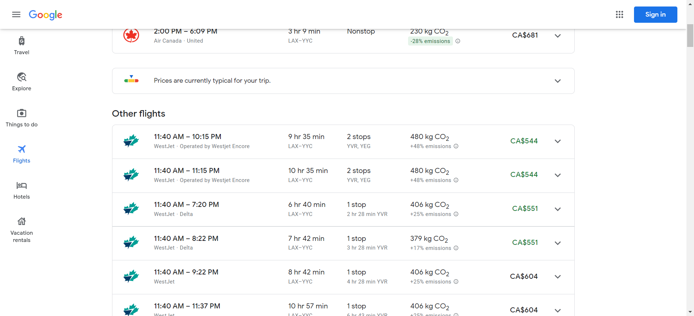

Report generated on 07-Aug-2022 at 19:57:05 by pytest-html v3.1.1
| Packages | {"pluggy": "1.0.0", "py": "1.11.0", "pytest": "7.1.2"} |
| Platform | Windows-10-10.0.22000-SP0 |
| Plugins | {"Faker": "13.13.0", "html": "3.1.1", "metadata": "2.0.1"} |
| Python | 3.10.4 |
1 tests ran in 120.38 seconds.
(Un)check the boxes to filter the results.
0 passed, 0 skipped, 1 failed, 0 errors, 0 expected failures, 0 unexpected passes| Result | Test | Duration | Links |
|---|---|---|---|
| No results found. Try to check the filters | |||
| Failed | test_google_search.py::TestGoogleSearch::test_google_search_1___LAX____Calga____2022_11_23____2_stops__ | 118.91 | URL |
|
 self = <testcases.test_google_search.TestGoogleSearch testMethod=test_google_search_1___LAX____Calga____2022_11_23____2_stops__>, goingfrom = 'LAX', goingto = 'Calga' date = '2022-11-23', stops = '2 stops' @data(*Utilities.read_file_csv("C:\\Users\\nobit\\OneDrive\\Desktop\\googleSearchFlight\\testdatas\\tdatacsv.csv")) #4 @data(*Utilities.read_excel_file("C:\\Users\\nobit\\OneDrive\\Desktop\\googleSearchFlight\\testdatas\\tdataexcel.xlsx","Sheet1")) #3 #@file_data("../testdata/testyml.yaml") #2 #@file_data("../testdata/testdata.json") #1 #@data(("Los", "Calgary", "2022-11-23", "1 stop")) @unpack def test_google_search(self, goingfrom, goingto, date, stops): self.log.info("go to google search home page") self.gs1 = Google_Search_Home_Page(self.driver) self.log.info("go to google search flight result") gs2 = self.gs1.function_google_search_home_page(goingfrom, goingto, date) gs2.google_search_2() list_assertion = gs2.list_results_flights() ut = Utilities() > ut.assertion_value_flights(list_assertion, stops) test_google_search.py:30: _ _ _ _ _ _ _ _ _ _ _ _ _ _ _ _ _ _ _ _ _ _ _ _ _ _ _ _ _ _ _ _ _ _ _ _ _ _ _ _ ..\utilities\utilities_page.py:27: in assertion_value_flights self.assert_all() C:\Users\nobit\AppData\Local\Programs\Python\Python310\lib\site-packages\softest\case.py:139: in assert_all self.fail(''.join(failure_output)) E AssertionError: ++++ soft assert failure details follow below ++++ E E ++++++++++++++++++++++++++++++++++++++++++++++++++++++++++++++++++++++ E The following 307 failures were found in "wrapper" (utilities.utilities_page.Utilities): E +----------------------+----------------------+----------------------+ E Failure 1 ("wrapper" method) E +----------------------+----------------------+----------------------+ E Traceback (most recent call last): E File "C:\Users\nobit\OneDrive\Desktop\vi\googleSearchFlights\utilities\utilities_page.py", line 22, in assertion_value_flights E self.soft_assert(self.assertEqual, item.text, value) E File "C:\Users\nobit\OneDrive\Desktop\vi\googleSearchFlights\testcases\test_google_search.py", line 30, in test_google_search E ut.assertion_value_flights(list_assertion, stops) E File "C:\Users\nobit\AppData\Local\Programs\Python\Python310\lib\site-packages\ddt.py", line 191, in wrapper E return func(self, *args, **kwargs) E File "C:\Users\nobit\AppData\Local\Programs\Python\Python310\lib\site-packages\softest\case.py", line 62, in soft_assert E assert_method(*arguments, **keywords) E File "C:\Users\nobit\AppData\Local\Programs\Python\Python310\lib\unittest\case.py", line 845, in assertEqual E assertion_func(first, second, msg=msg) E File "C:\Users\nobit\AppData\Local\Programs\Python\Python310\lib\unittest\case.py", line 1226, in assertMultiLineEqual E self.fail(self._formatMessage(msg, standardMsg)) E File "C:\Users\nobit\AppData\Local\Programs\Python\Python310\lib\unittest\case.py", line 675, in fail E raise self.failureException(msg) E AssertionError: 'Nonstop' != '2 stops' E - Nonstop E + 2 stops E E E -+ [1/307] +- E E +----------------------+----------------------+----------------------+ E Failure 2 ("wrapper" method) E +----------------------+----------------------+----------------------+ E Traceback (most recent call last): E File "C:\Users\nobit\OneDrive\Desktop\vi\googleSearchFlights\utilities\utilities_page.py", line 22, in assertion_value_flights E self.soft_assert(self.assertEqual, item.text, value) E File "C:\Users\nobit\OneDrive\Desktop\vi\googleSearchFlights\testcases\test_google_search.py", line 30, in test_google_search E ut.assertion_value_flights(list_assertion, stops) E File "C:\Users\nobit\AppData\Local\Programs\Python\Python310\lib\site-packages\ddt.py", line 191, in wrapper E return func(self, *args, **kwargs) E File "C:\Users\nobit\AppData\Local\Programs\Python\Python310\lib\site-packages\softest\case.py", line 62, in soft_assert E assert_method(*arguments, **keywords) E File "C:\Users\nobit\AppData\Local\Programs\Python\Python310\lib\unittest\case.py", line 845, in assertEqual E assertion_func(first, second, msg=msg) E File "C:\Users\nobit\AppData\Local\Programs\Python\Python310\lib\unittest\case.py", line 1226, in assertMultiLineEqual E self.fail(self._formatMessage(msg, standardMsg)) E File "C:\Users\nobit\AppData\Local\Programs\Python\Python310\lib\unittest\case.py", line 675, in fail E raise self.failureException(msg) E AssertionError: '' != '2 stops' E + 2 stops E E -+ [2/307] +- E E +----------------------+----------------------+----------------------+ E Failure 3 ("wrapper" method) E +----------------------+----------------------+----------------------+ E Traceback (most recent call last): E File "C:\Users\nobit\OneDrive\Desktop\vi\googleSearchFlights\utilities\utilities_page.py", line 22, in assertion_value_flights E self.soft_assert(self.assertEqual, item.text, value) E File "C:\Users\nobit\OneDrive\Desktop\vi\googleSearchFlights\testcases\test_google_search.py", line 30, in test_google_search E ut.assertion_value_flights(list_assertion, stops) E File "C:\Users\nobit\AppData\Local\Programs\Python\Python310\lib\site-packages\ddt.py", line 191, in wrapper E return func(self, *args, **kwargs) E File "C:\Users\nobit\AppData\Local\Programs\Python\Python310\lib\site-packages\softest\case.py", line 62, in soft_assert E assert_method(*arguments, **keywords) E File "C:\Users\nobit\AppData\Local\Programs\Python\Python310\lib\unittest\case.py", line 845, in assertEqual E assertion_func(first, second, msg=msg) E File "C:\Users\nobit\AppData\Local\Programs\Python\Python310\lib\unittest\case.py", line 1226, in assertMultiLineEqual E self.fail(self._formatMessage(msg, standardMsg)) E File "C:\Users\nobit\AppData\Local\Programs\Python\Python310\lib\unittest\case.py", line 675, in fail E raise self.failureException(msg) E AssertionError: '' != '2 stops' E + 2 stops E E -+ [3/307] +- E E +----------------------+----------------------+----------------------+ E Failure 4 ("wrapper" method) E +----------------------+----------------------+----------------------+ E Traceback (most recent call last): E File "C:\Users\nobit\OneDrive\Desktop\vi\googleSearchFlights\utilities\utilities_page.py", line 22, in assertion_value_flights E self.soft_assert(self.assertEqual, item.text, value) E File "C:\Users\nobit\OneDrive\Desktop\vi\googleSearchFlights\testcases\test_google_search.py", line 30, in test_google_search E ut.assertion_value_flights(list_assertion, stops) E File "C:\Users\nobit\AppData\Local\Programs\Python\Python310\lib\site-packages\ddt.py", line 191, in wrapper E return func(self, *args, **kwargs) E File "C:\Users\nobit\AppData\Local\Programs\Python\Python310\lib\site-packages\softest\case.py", line 62, in soft_assert E assert_method(*arguments, **keywords) E File "C:\Users\nobit\AppData\Local\Programs\Python\Python310\lib\unittest\case.py", line 845, in assertEqual E assertion_func(first, second, msg=msg) E File "C:\Users\nobit\AppData\Local\Programs\Python\Python310\lib\unittest\case.py", line 1226, in assertMultiLineEqual E self.fail(self._formatMessage(msg, standardMsg)) E File "C:\Users\nobit\AppData\Local\Programs\Python\Python310\lib\unittest\case.py", line 675, in fail E raise self.failureException(msg) E AssertionError: 'Nonstop' != '2 stops' E - Nonstop E + 2 stops E E E -+ [4/307] +- E E +----------------------+----------------------+----------------------+ E Failure 5 ("wrapper" method) E +----------------------+----------------------+----------------------+ E Traceback (most recent call last): E File "C:\Users\nobit\OneDrive\Desktop\vi\googleSearchFlights\utilities\utilities_page.py", line 22, in assertion_value_flights E self.soft_assert(self.assertEqual, item.text, value) E File "C:\Users\nobit\OneDrive\Desktop\vi\googleSearchFlights\testcases\test_google_search.py", line 30, in test_google_search E ut.assertion_value_flights(list_assertion, stops) E File "C:\Users\nobit\AppData\Local\Programs\Python\Python310\lib\site-packages\ddt.py", line 191, in wrapper E return func(self, *args, **kwargs) E File "C:\Users\nobit\AppData\Local\Programs\Python\Python310\lib\site-packages\softest\case.py", line 62, in soft_assert E assert_method(*arguments, **keywords) E File "C:\Users\nobit\AppData\Local\Programs\Python\Python310\lib\unittest\case.py", line 845, in assertEqual E assertion_func(first, second, msg=msg) E File "C:\Users\nobit\AppData\Local\Programs\Python\Python310\lib\unittest\case.py", line 1226, in assertMultiLineEqual E self.fail(self._formatMessage(msg, standardMsg)) E File "C:\Users\nobit\AppData\Local\Programs\Python\Python310\lib\unittest\case.py", line 675, in fail E raise self.failureException(msg) E AssertionError: '' != '2 stops' E + 2 stops E E -+ [5/307] +- E E +----------------------+----------------------+----------------------+ E Failure 6 ("wrapper" method) E +----------------------+----------------------+----------------------+ E Traceback (most recent call last): E File "C:\Users\nobit\OneDrive\Desktop\vi\googleSearchFlights\utilities\utilities_page.py", line 22, in assertion_value_flights E self.soft_assert(self.assertEqual, item.text, value) E File "C:\Users\nobit\OneDrive\Desktop\vi\googleSearchFlights\testcases\test_google_search.py", line 30, in test_google_search E ut.assertion_value_flights(list_assertion, stops) E File "C:\Users\nobit\AppData\Local\Programs\Python\Python310\lib\site-packages\ddt.py", line 191, in wrapper E return func(self, *args, **kwargs) E File "C:\Users\nobit\AppData\Local\Programs\Python\Python310\lib\site-packages\softest\case.py", line 62, in soft_assert E assert_method(*arguments, **keywords) E File "C:\Users\nobit\AppData\Local\Programs\Python\Python310\lib\unittest\case.py", line 845, in assertEqual E assertion_func(first, second, msg=msg) E File "C:\Users\nobit\AppData\Local\Programs\Python\Python310\lib\unittest\case.py", line 1226, in assertMultiLineEqual E self.fail(self._formatMessage(msg, standardMsg)) E File "C:\Users\nobit\AppData\Local\Programs\Python\Python310\lib\unittest\case.py", line 675, in fail E raise self.failureException(msg) E AssertionError: '' != '2 stops' E + 2 stops E E -+ [6/307] +- E E +----------------------+----------------------+----------------------+ E Failure 7 ("wrapper" method) E +----------------------+----------------------+----------------------+ E Traceback (most recent call last): E File "C:\Users\nobit\OneDrive\Desktop\vi\googleSearchFlights\utilities\utilities_page.py", line 22, in assertion_value_flights E self.soft_assert(self.assertEqual, item.text, value) E File "C:\Users\nobit\OneDrive\Desktop\vi\googleSearchFlights\testcases\test_google_search.py", line 30, in test_google_search E ut.assertion_value_flights(list_assertion, stops) E File "C:\Users\nobit\AppData\Local\Programs\Python\Python310\lib\site-packages\ddt.py", line 191, in wrapper E return func(self, *args, **kwargs) E File "C:\Users\nobit\AppData\Local\Programs\Python\Python310\lib\site-packages\softest\case.py", line 62, in soft_assert E assert_method(*arguments, **keywords) E File "C:\Users\nobit\AppData\Local\Programs\Python\Python310\lib\unittest\case.py", line 845, in assertEqual E assertion_func(first, second, msg=msg) E File "C:\Users\nobit\AppData\Local\Programs\Python\Python310\lib\unittest\case.py", line 1226, in assertMultiLineEqual E self.fail(self._formatMessage(msg, standardMsg)) E File "C:\Users\nobit\AppData\Local\Programs\Python\Python310\lib\unittest\case.py", line 675, in fail E raise self.failureException(msg) E AssertionError: 'Nonstop' != '2 stops' E - Nonstop E + 2 stops E E E -+ [7/307] +- E E +----------------------+----------------------+----------------------+ E Failure 8 ("wrapper" method) E +----------------------+----------------------+----------------------+ E Traceback (most recent call last): E File "C:\Users\nobit\OneDrive\Desktop\vi\googleSearchFlights\utilities\utilities_page.py", line 22, in assertion_value_flights E self.soft_assert(self.assertEqual, item.text, value) E File "C:\Users\nobit\OneDrive\Desktop\vi\googleSearchFlights\testcases\test_google_search.py", line 30, in test_google_search E ut.assertion_value_flights(list_assertion, stops) E File "C:\Users\nobit\AppData\Local\Programs\Python\Python310\lib\site-packages\ddt.py", line 191, in wrapper E return func(self, *args, **kwargs) E File "C:\Users\nobit\AppData\Local\Programs\Python\Python310\lib\site-packages\softest\case.py", line 62, in soft_assert E assert_method(*arguments, **keywords) E File "C:\Users\nobit\AppData\Local\Programs\Python\Python310\lib\unittest\case.py", line 845, in assertEqual E assertion_func(first, second, msg=msg) E File "C:\Users\nobit\AppData\Local\Programs\Python\Python310\lib\unittest\case.py", line 1226, in assertMultiLineEqual E self.fail(self._formatMessage(msg, standardMsg)) E File "C:\Users\nobit\AppData\Local\Programs\Python\Python310\lib\unittest\case.py", line 675, in fail E raise self.failureException(msg) E AssertionError: '' != '2 stops' E + 2 stops E E -+ [8/307] +- E E +----------------------+----------------------+----------------------+ E Failure 9 ("wrapper" method) E +----------------------+----------------------+----------------------+ E Traceback (most recent call last): E File "C:\Users\nobit\OneDrive\Desktop\vi\googleSearchFlights\utilities\utilities_page.py", line 22, in assertion_value_flights E self.soft_assert(self.assertEqual, item.text, value) E File "C:\Users\nobit\OneDrive\Desktop\vi\googleSearchFlights\testcases\test_google_search.py", line 30, in test_google_search E ut.assertion_value_flights(list_assertion, stops) E File "C:\Users\nobit\AppData\Local\Programs\Python\Python310\lib\site-packages\ddt.py", line 191, in wrapper E return func(self, *args, **kwargs) E File "C:\Users\nobit\AppData\Local\Programs\Python\Python310\lib\site-packages\softest\case.py", line 62, in soft_assert E assert_method(*arguments, **keywords) E File "C:\Users\nobit\AppData\Local\Programs\Python\Python310\lib\unittest\case.py", line 845, in assertEqual E assertion_func(first, second, msg=msg) E File "C:\Users\nobit\AppData\Local\Programs\Python\Python310\lib\unittest\case.py", line 1226, in assertMultiLineEqual E self.fail(self._formatMessage(msg, standardMsg)) E File "C:\Users\nobit\AppData\Local\Programs\Python\Python310\lib\unittest\case.py", line 675, in fail E raise self.failureException(msg) E AssertionError: '' != '2 stops' E + 2 stops E E -+ [9/307] +- E E +----------------------+----------------------+----------------------+ E Failure 10 ("wrapper" method) E +----------------------+----------------------+----------------------+ E Traceback (most recent call last): E File "C:\Users\nobit\OneDrive\Desktop\vi\googleSearchFlights\utilities\utilities_page.py", line 22, in assertion_value_flights E self.soft_assert(self.assertEqual, item.text, value) E File "C:\Users\nobit\OneDrive\Desktop\vi\googleSearchFlights\testcases\test_google_search.py", line 30, in test_google_search E ut.assertion_value_flights(list_assertion, stops) E File "C:\Users\nobit\AppData\Local\Programs\Python\Python310\lib\site-packages\ddt.py", line 191, in wrapper E return func(self, *args, **kwargs) E File "C:\Users\nobit\AppData\Local\Programs\Python\Python310\lib\site-packages\softest\case.py", line 62, in soft_assert E assert_method(*arguments, **keywords) E File "C:\Users\nobit\AppData\Local\Programs\Python\Python310\lib\unittest\case.py", line 845, in assertEqual E assertion_func(first, second, msg=msg) E File "C:\Users\nobit\AppData\Local\Programs\Python\Python310\lib\unittest\case.py", line 1226, in assertMultiLineEqual E self.fail(self._formatMessage(msg, standardMsg)) E File "C:\Users\nobit\AppData\Local\Programs\Python\Python310\lib\unittest\case.py", line 675, in fail E raise self.failureException(msg) E AssertionError: '' != '2 stops' E + 2 stops E E -+ [10/307] +- E E +----------------------+----------------------+----------------------+ E Failure 11 ("wrapper" method) E +----------------------+----------------------+----------------------+ E Traceback (most recent call last): E File "C:\Users\nobit\OneDrive\Desktop\vi\googleSearchFlights\utilities\utilities_page.py", line 22, in assertion_value_flights E self.soft_assert(self.assertEqual, item.text, value) E File "C:\Users\nobit\OneDrive\Desktop\vi\googleSearchFlights\testcases\test_google_search.py", line 30, in test_google_search E ut.assertion_value_flights(list_assertion, stops) E File "C:\Users\nobit\AppData\Local\Programs\Python\Python310\lib\site-packages\ddt.py", line 191, in wrapper E return func(self, *args, **kwargs) E File "C:\Users\nobit\AppData\Local\Programs\Python\Python310\lib\site-packages\softest\case.py", line 62, in soft_assert E assert_method(*arguments, **keywords) E File "C:\Users\nobit\AppData\Local\Programs\Python\Python310\lib\unittest\case.py", line 845, in assertEqual E assertion_func(first, second, msg=msg) E File "C:\Users\nobit\AppData\Local\Programs\Python\Python310\lib\unittest\case.py", line 1226, in assertMultiLineEqual E self.fail(self._formatMessage(msg, standardMsg)) E File "C:\Users\nobit\AppData\Local\Programs\Python\Python310\lib\unittest\case.py", line 675, in fail E raise self.failureException(msg) E AssertionError: '' != '2 stops' E + 2 stops E E -+ [11/307] +- E E +----------------------+----------------------+----------------------+ E Failure 12 ("wrapper" method) E +----------------------+----------------------+----------------------+ E Traceback (most recent call last): E File "C:\Users\nobit\OneDrive\Desktop\vi\googleSearchFlights\utilities\utilities_page.py", line 22, in assertion_value_flights E self.soft_assert(self.assertEqual, item.text, value) E File "C:\Users\nobit\OneDrive\Desktop\vi\googleSearchFlights\testcases\test_google_search.py", line 30, in test_google_search E ut.assertion_value_flights(list_assertion, stops) E File "C:\Users\nobit\AppData\Local\Programs\Python\Python310\lib\site-packages\ddt.py", line 191, in wrapper E return func(self, *args, **kwargs) E File "C:\Users\nobit\AppData\Local\Programs\Python\Python310\lib\site-packages\softest\case.py", line 62, in soft_assert E assert_method(*arguments, **keywords) E File "C:\Users\nobit\AppData\Local\Programs\Python\Python310\lib\unittest\case.py", line 845, in assertEqual E assertion_func(first, second, msg=msg) E File "C:\Users\nobit\AppData\Local\Programs\Python\Python310\lib\unittest\case.py", line 1226, in assertMultiLineEqual E self.fail(self._formatMessage(msg, standardMsg)) E File "C:\Users\nobit\AppData\Local\Programs\Python\Python310\lib\unittest\case.py", line 675, in fail E raise self.failureException(msg) E AssertionError: '' != '2 stops' E + 2 stops E E -+ [12/307] +- E E +----------------------+----------------------+----------------------+ E Failure 13 ("wrapper" method) E +----------------------+----------------------+----------------------+ E Traceback (most recent call last): E File "C:\Users\nobit\OneDrive\Desktop\vi\googleSearchFlights\utilities\utilities_page.py", line 22, in assertion_value_flights E self.soft_assert(self.assertEqual, item.text, value) E File "C:\Users\nobit\OneDrive\Desktop\vi\googleSearchFlights\testcases\test_google_search.py", line 30, in test_google_search E ut.assertion_value_flights(list_assertion, stops) E File "C:\Users\nobit\AppData\Local\Programs\Python\Python310\lib\site-packages\ddt.py", line 191, in wrapper E return func(self, *args, **kwargs) E File "C:\Users\nobit\AppData\Local\Programs\Python\Python310\lib\site-packages\softest\case.py", line 62, in soft_assert E assert_method(*arguments, **keywords) E File "C:\Users\nobit\AppData\Local\Programs\Python\Python310\lib\unittest\case.py", line 845, in assertEqual E assertion_func(first, second, msg=msg) E File "C:\Users\nobit\AppData\Local\Programs\Python\Python310\lib\unittest\case.py", line 1226, in assertMultiLineEqual E self.fail(self._formatMessage(msg, standardMsg)) E File "C:\Users\nobit\AppData\Local\Programs\Python\Python310\lib\unittest\case.py", line 675, in fail E raise self.failureException(msg) E AssertionError: '' != '2 stops' E + 2 stops E E -+ [13/307] +- E E +----------------------+----------------------+----------------------+ E Failure 14 ("wrapper" method) E +----------------------+----------------------+----------------------+ E Traceback (most recent call last): E File "C:\Users\nobit\OneDrive\Desktop\vi\googleSearchFlights\utilities\utilities_page.py", line 22, in assertion_value_flights E self.soft_assert(self.assertEqual, item.text, value) E File "C:\Users\nobit\OneDrive\Desktop\vi\googleSearchFlights\testcases\test_google_search.py", line 30, in test_google_search E ut.assertion_value_flights(list_assertion, stops) E File "C:\Users\nobit\AppData\Local\Programs\Python\Python310\lib\site-packages\ddt.py", line 191, in wrapper E return func(self, *args, **kwargs) E File "C:\Users\nobit\AppData\Local\Programs\Python\Python310\lib\site-packages\softest\case.py", line 62, in soft_assert E assert_method(*arguments, **keywords) E File "C:\Users\nobit\AppData\Local\Programs\Python\Python310\lib\unittest\case.py", line 845, in assertEqual E assertion_func(first, second, msg=msg) E File "C:\Users\nobit\AppData\Local\Programs\Python\Python310\lib\unittest\case.py", line 1226, in assertMultiLineEqual E self.fail(self._formatMessage(msg, standardMsg)) E File "C:\Users\nobit\AppData\Local\Programs\Python\Python310\lib\unittest\case.py", line 675, in fail E raise self.failureException(msg) E AssertionError: '1 stop' != '2 stops' E - 1 stop E ? ^ E + 2 stops E ? ^ + E E E -+ [14/307] +- E E +----------------------+----------------------+----------------------+ E Failure 15 ("wrapper" method) E +----------------------+----------------------+----------------------+ E Traceback (most recent call last): E File "C:\Users\nobit\OneDrive\Desktop\vi\googleSearchFlights\utilities\utilities_page.py", line 22, in assertion_value_flights E self.soft_assert(self.assertEqual, item.text, value) E File "C:\Users\nobit\OneDrive\Desktop\vi\googleSearchFlights\testcases\test_google_search.py", line 30, in test_google_search E ut.assertion_value_flights(list_assertion, stops) E File "C:\Users\nobit\AppData\Local\Programs\Python\Python310\lib\site-packages\ddt.py", line 191, in wrapper E return func(self, *args, **kwargs) E File "C:\Users\nobit\AppData\Local\Programs\Python\Python310\lib\site-packages\softest\case.py", line 62, in soft_assert E assert_method(*arguments, **keywords) E File "C:\Users\nobit\AppData\Local\Programs\Python\Python310\lib\unittest\case.py", line 845, in assertEqual E assertion_func(first, second, msg=msg) E File "C:\Users\nobit\AppData\Local\Programs\Python\Python310\lib\unittest\case.py", line 1226, in assertMultiLineEqual E self.fail(self._formatMessage(msg, standardMsg)) E File "C:\Users\nobit\AppData\Local\Programs\Python\Python310\lib\unittest\case.py", line 675, in fail E raise self.failureException(msg) E AssertionError: '' != '2 stops' E + 2 stops E E -+ [15/307] +- E E +----------------------+----------------------+----------------------+ E Failure 16 ("wrapper" method) E +----------------------+----------------------+----------------------+ E Traceback (most recent call last): E File "C:\Users\nobit\OneDrive\Desktop\vi\googleSearchFlights\utilities\utilities_page.py", line 22, in assertion_value_flights E self.soft_assert(self.assertEqual, item.text, value) E File "C:\Users\nobit\OneDrive\Desktop\vi\googleSearchFlights\testcases\test_google_search.py", line 30, in test_google_search E ut.assertion_value_flights(list_assertion, stops) E File "C:\Users\nobit\AppData\Local\Programs\Python\Python310\lib\site-packages\ddt.py", line 191, in wrapper E return func(self, *args, **kwargs) E File "C:\Users\nobit\AppData\Local\Programs\Python\Python310\lib\site-packages\softest\case.py", line 62, in soft_assert E assert_method(*arguments, **keywords) E File "C:\Users\nobit\AppData\Local\Programs\Python\Python310\lib\unittest\case.py", line 845, in assertEqual E assertion_func(first, second, msg=msg) E File "C:\Users\nobit\AppData\Local\Programs\Python\Python310\lib\unittest\case.py", line 1226, in assertMultiLineEqual E self.fail(self._formatMessage(msg, standardMsg)) E File "C:\Users\nobit\AppData\Local\Programs\Python\Python310\lib\unittest\case.py", line 675, in fail E raise self.failureException(msg) E AssertionError: '' != '2 stops' E + 2 stops E E -+ [16/307] +- E E +----------------------+----------------------+----------------------+ E Failure 17 ("wrapper" method) E +----------------------+----------------------+----------------------+ E Traceback (most recent call last): E File "C:\Users\nobit\OneDrive\Desktop\vi\googleSearchFlights\utilities\utilities_page.py", line 22, in assertion_value_flights E self.soft_assert(self.assertEqual, item.text, value) E File "C:\Users\nobit\OneDrive\Desktop\vi\googleSearchFlights\testcases\test_google_search.py", line 30, in test_google_search E ut.assertion_value_flights(list_assertion, stops) E File "C:\Users\nobit\AppData\Local\Programs\Python\Python310\lib\site-packages\ddt.py", line 191, in wrapper E return func(self, *args, **kwargs) E File "C:\Users\nobit\AppData\Local\Programs\Python\Python310\lib\site-packages\softest\case.py", line 62, in soft_assert E assert_method(*arguments, **keywords) E File "C:\Users\nobit\AppData\Local\Programs\Python\Python310\lib\unittest\case.py", line 845, in assertEqual E assertion_func(first, second, msg=msg) E File "C:\Users\nobit\AppData\Local\Programs\Python\Python310\lib\unittest\case.py", line 1226, in assertMultiLineEqual E self.fail(self._formatMessage(msg, standardMsg)) E File "C:\Users\nobit\AppData\Local\Programs\Python\Python310\lib\unittest\case.py", line 675, in fail E raise self.failureException(msg) E AssertionError: '1 stop' != '2 stops' E - 1 stop E ? ^ E + 2 stops E ? ^ + E E E -+ [17/307] +- E E +----------------------+----------------------+----------------------+ E Failure 18 ("wrapper" method) E +----------------------+----------------------+----------------------+ E Traceback (most recent call last): E File "C:\Users\nobit\OneDrive\Desktop\vi\googleSearchFlights\utilities\utilities_page.py", line 22, in assertion_value_flights E self.soft_assert(self.assertEqual, item.text, value) E File "C:\Users\nobit\OneDrive\Desktop\vi\googleSearchFlights\testcases\test_google_search.py", line 30, in test_google_search E ut.assertion_value_flights(list_assertion, stops) E File "C:\Users\nobit\AppData\Local\Programs\Python\Python310\lib\site-packages\ddt.py", line 191, in wrapper E return func(self, *args, **kwargs) E File "C:\Users\nobit\AppData\Local\Programs\Python\Python310\lib\site-packages\softest\case.py", line 62, in soft_assert E assert_method(*arguments, **keywords) E File "C:\Users\nobit\AppData\Local\Programs\Python\Python310\lib\unittest\case.py", line 845, in assertEqual E assertion_func(first, second, msg=msg) E File "C:\Users\nobit\AppData\Local\Programs\Python\Python310\lib\unittest\case.py", line 1226, in assertMultiLineEqual E self.fail(self._formatMessage(msg, standardMsg)) E File "C:\Users\nobit\AppData\Local\Programs\Python\Python310\lib\unittest\case.py", line 675, in fail E raise self.failureException(msg) E AssertionError: '' != '2 stops' E + 2 stops E E -+ [18/307] +- E E +----------------------+----------------------+----------------------+ E Failure 19 ("wrapper" method) E +----------------------+----------------------+----------------------+ E Traceback (most recent call last): E File "C:\Users\nobit\OneDrive\Desktop\vi\googleSearchFlights\utilities\utilities_page.py", line 22, in assertion_value_flights E self.soft_assert(self.assertEqual, item.text, value) E File "C:\Users\nobit\OneDrive\Desktop\vi\googleSearchFlights\testcases\test_google_search.py", line 30, in test_google_search E ut.assertion_value_flights(list_assertion, stops) E File "C:\Users\nobit\AppData\Local\Programs\Python\Python310\lib\site-packages\ddt.py", line 191, in wrapper E return func(self, *args, **kwargs) E File "C:\Users\nobit\AppData\Local\Programs\Python\Python310\lib\site-packages\softest\case.py", line 62, in soft_assert E assert_method(*arguments, **keywords) E File "C:\Users\nobit\AppData\Local\Programs\Python\Python310\lib\unittest\case.py", line 845, in assertEqual E assertion_func(first, second, msg=msg) E File "C:\Users\nobit\AppData\Local\Programs\Python\Python310\lib\unittest\case.py", line 1226, in assertMultiLineEqual E self.fail(self._formatMessage(msg, standardMsg)) E File "C:\Users\nobit\AppData\Local\Programs\Python\Python310\lib\unittest\case.py", line 675, in fail E raise self.failureException(msg) E AssertionError: '' != '2 stops' E + 2 stops E E -+ [19/307] +- E E +----------------------+----------------------+----------------------+ E Failure 20 ("wrapper" method) E +----------------------+----------------------+----------------------+ E Traceback (most recent call last): E File "C:\Users\nobit\OneDrive\Desktop\vi\googleSearchFlights\utilities\utilities_page.py", line 22, in assertion_value_flights E self.soft_assert(self.assertEqual, item.text, value) E File "C:\Users\nobit\OneDrive\Desktop\vi\googleSearchFlights\testcases\test_google_search.py", line 30, in test_google_search E ut.assertion_value_flights(list_assertion, stops) E File "C:\Users\nobit\AppData\Local\Programs\Python\Python310\lib\site-packages\ddt.py", line 191, in wrapper E return func(self, *args, **kwargs) E File "C:\Users\nobit\AppData\Local\Programs\Python\Python310\lib\site-packages\softest\case.py", line 62, in soft_assert E assert_method(*arguments, **keywords) E File "C:\Users\nobit\AppData\Local\Programs\Python\Python310\lib\unittest\case.py", line 845, in assertEqual E assertion_func(first, second, msg=msg) E File "C:\Users\nobit\AppData\Local\Programs\Python\Python310\lib\unittest\case.py", line 1226, in assertMultiLineEqual E self.fail(self._formatMessage(msg, standardMsg)) E File "C:\Users\nobit\AppData\Local\Programs\Python\Python310\lib\unittest\case.py", line 675, in fail E raise self.failureException(msg) E AssertionError: '1 stop' != '2 stops' E - 1 stop E ? ^ E + 2 stops E ? ^ + E E E -+ [20/307] +- E E +----------------------+----------------------+----------------------+ E Failure 21 ("wrapper" method) E +----------------------+----------------------+----------------------+ E Traceback (most recent call last): E File "C:\Users\nobit\OneDrive\Desktop\vi\googleSearchFlights\utilities\utilities_page.py", line 22, in assertion_value_flights E self.soft_assert(self.assertEqual, item.text, value) E File "C:\Users\nobit\OneDrive\Desktop\vi\googleSearchFlights\testcases\test_google_search.py", line 30, in test_google_search E ut.assertion_value_flights(list_assertion, stops) E File "C:\Users\nobit\AppData\Local\Programs\Python\Python310\lib\site-packages\ddt.py", line 191, in wrapper E return func(self, *args, **kwargs) E File "C:\Users\nobit\AppData\Local\Programs\Python\Python310\lib\site-packages\softest\case.py", line 62, in soft_assert E assert_method(*arguments, **keywords) E File "C:\Users\nobit\AppData\Local\Programs\Python\Python310\lib\unittest\case.py", line 845, in assertEqual E assertion_func(first, second, msg=msg) E File "C:\Users\nobit\AppData\Local\Programs\Python\Python310\lib\unittest\case.py", line 1226, in assertMultiLineEqual E self.fail(self._formatMessage(msg, standardMsg)) E File "C:\Users\nobit\AppData\Local\Programs\Python\Python310\lib\unittest\case.py", line 675, in fail E raise self.failureException(msg) E AssertionError: '' != '2 stops' E + 2 stops E E -+ [21/307] +- E E +----------------------+----------------------+----------------------+ E Failure 22 ("wrapper" method) E +----------------------+----------------------+----------------------+ E Traceback (most recent call last): E File "C:\Users\nobit\OneDrive\Desktop\vi\googleSearchFlights\utilities\utilities_page.py", line 22, in assertion_value_flights E self.soft_assert(self.assertEqual, item.text, value) E File "C:\Users\nobit\OneDrive\Desktop\vi\googleSearchFlights\testcases\test_google_search.py", line 30, in test_google_search E ut.assertion_value_flights(list_assertion, stops) E File "C:\Users\nobit\AppData\Local\Programs\Python\Python310\lib\site-packages\ddt.py", line 191, in wrapper E return func(self, *args, **kwargs) E File "C:\Users\nobit\AppData\Local\Programs\Python\Python310\lib\site-packages\softest\case.py", line 62, in soft_assert E assert_method(*arguments, **keywords) E File "C:\Users\nobit\AppData\Local\Programs\Python\Python310\lib\unittest\case.py", line 845, in assertEqual E assertion_func(first, second, msg=msg) E File "C:\Users\nobit\AppData\Local\Programs\Python\Python310\lib\unittest\case.py", line 1226, in assertMultiLineEqual E self.fail(self._formatMessage(msg, standardMsg)) E File "C:\Users\nobit\AppData\Local\Programs\Python\Python310\lib\unittest\case.py", line 675, in fail E raise self.failureException(msg) E AssertionError: '' != '2 stops' E + 2 stops E E -+ [22/307] +- E E +----------------------+----------------------+----------------------+ E Failure 23 ("wrapper" method) E +----------------------+----------------------+----------------------+ E Traceback (most recent call last): E File "C:\Users\nobit\OneDrive\Desktop\vi\googleSearchFlights\utilities\utilities_page.py", line 22, in assertion_value_flights E self.soft_assert(self.assertEqual, item.text, value) E File "C:\Users\nobit\OneDrive\Desktop\vi\googleSearchFlights\testcases\test_google_search.py", line 30, in test_google_search E ut.assertion_value_flights(list_assertion, stops) E File "C:\Users\nobit\AppData\Local\Programs\Python\Python310\lib\site-packages\ddt.py", line 191, in wrapper E return func(self, *args, **kwargs) E File "C:\Users\nobit\AppData\Local\Programs\Python\Python310\lib\site-packages\softest\case.py", line 62, in soft_assert E assert_method(*arguments, **keywords) E File "C:\Users\nobit\AppData\Local\Programs\Python\Python310\lib\unittest\case.py", line 845, in assertEqual E assertion_func(first, second, msg=msg) E File "C:\Users\nobit\AppData\Local\Programs\Python\Python310\lib\unittest\case.py", line 1226, in assertMultiLineEqual E self.fail(self._formatMessage(msg, standardMsg)) E File "C:\Users\nobit\AppData\Local\Programs\Python\Python310\lib\unittest\case.py", line 675, in fail E raise self.failureException(msg) E AssertionError: '1 stop' != '2 stops' E - 1 stop E ? ^ E + 2 stops E ? ^ + E E E -+ [23/307] +- E E +----------------------+----------------------+----------------------+ E Failure 24 ("wrapper" method) E +----------------------+----------------------+----------------------+ E Traceback (most recent call last): E File "C:\Users\nobit\OneDrive\Desktop\vi\googleSearchFlights\utilities\utilities_page.py", line 22, in assertion_value_flights E self.soft_assert(self.assertEqual, item.text, value) E File "C:\Users\nobit\OneDrive\Desktop\vi\googleSearchFlights\testcases\test_google_search.py", line 30, in test_google_search E ut.assertion_value_flights(list_assertion, stops) E File "C:\Users\nobit\AppData\Local\Programs\Python\Python310\lib\site-packages\ddt.py", line 191, in wrapper E return func(self, *args, **kwargs) E File "C:\Users\nobit\AppData\Local\Programs\Python\Python310\lib\site-packages\softest\case.py", line 62, in soft_assert E assert_method(*arguments, **keywords) E File "C:\Users\nobit\AppData\Local\Programs\Python\Python310\lib\unittest\case.py", line 845, in assertEqual E assertion_func(first, second, msg=msg) E File "C:\Users\nobit\AppData\Local\Programs\Python\Python310\lib\unittest\case.py", line 1226, in assertMultiLineEqual E self.fail(self._formatMessage(msg, standardMsg)) E File "C:\Users\nobit\AppData\Local\Programs\Python\Python310\lib\unittest\case.py", line 675, in fail E raise self.failureException(msg) E AssertionError: '' != '2 stops' E + 2 stops E E -+ [24/307] +- E E +----------------------+----------------------+----------------------+ E Failure 25 ("wrapper" method) E +----------------------+----------------------+----------------------+ E Traceback (most recent call last): E File "C:\Users\nobit\OneDrive\Desktop\vi\googleSearchFlights\utilities\utilities_page.py", line 22, in assertion_value_flights E self.soft_assert(self.assertEqual, item.text, value) E File "C:\Users\nobit\OneDrive\Desktop\vi\googleSearchFlights\testcases\test_google_search.py", line 30, in test_google_search E ut.assertion_value_flights(list_assertion, stops) E File "C:\Users\nobit\AppData\Local\Programs\Python\Python310\lib\site-packages\ddt.py", line 191, in wrapper E return func(self, *args, **kwargs) E File "C:\Users\nobit\AppData\Local\Programs\Python\Python310\lib\site-packages\softest\case.py", line 62, in soft_assert E assert_method(*arguments, **keywords) E File "C:\Users\nobit\AppData\Local\Programs\Python\Python310\lib\unittest\case.py", line 845, in assertEqual E assertion_func(first, second, msg=msg) E File "C:\Users\nobit\AppData\Local\Programs\Python\Python310\lib\unittest\case.py", line 1226, in assertMultiLineEqual E self.fail(self._formatMessage(msg, standardMsg)) E File "C:\Users\nobit\AppData\Local\Programs\Python\Python310\lib\unittest\case.py", line 675, in fail E raise self.failureException(msg) E AssertionError: '' != '2 stops' E + 2 stops E E -+ [25/307] +- E E +----------------------+----------------------+----------------------+ E Failure 26 ("wrapper" method) E +----------------------+----------------------+----------------------+ E Traceback (most recent call last): E File "C:\Users\nobit\OneDrive\Desktop\vi\googleSearchFlights\utilities\utilities_page.py", line 22, in assertion_value_flights E self.soft_assert(self.assertEqual, item.text, value) E File "C:\Users\nobit\OneDrive\Desktop\vi\googleSearchFlights\testcases\test_google_search.py", line 30, in test_google_search E ut.assertion_value_flights(list_assertion, stops) E File "C:\Users\nobit\AppData\Local\Programs\Python\Python310\lib\site-packages\ddt.py", line 191, in wrapper E return func(self, *args, **kwargs) E File "C:\Users\nobit\AppData\Local\Programs\Python\Python310\lib\site-packages\softest\case.py", line 62, in soft_assert E assert_method(*arguments, **keywords) E File "C:\Users\nobit\AppData\Local\Programs\Python\Python310\lib\unittest\case.py", line 845, in assertEqual E assertion_func(first, second, msg=msg) E File "C:\Users\nobit\AppData\Local\Programs\Python\Python310\lib\unittest\case.py", line 1226, in assertMultiLineEqual E self.fail(self._formatMessage(msg, standardMsg)) E File "C:\Users\nobit\AppData\Local\Programs\Python\Python310\lib\unittest\case.py", line 675, in fail E raise self.failureException(msg) E AssertionError: '1 stop' != '2 stops' E - 1 stop E ? ^ E + 2 stops E ? ^ + E E E -+ [26/307] +- E E +----------------------+----------------------+----------------------+ E Failure 27 ("wrapper" method) E +----------------------+----------------------+----------------------+ E Traceback (most recent call last): E File "C:\Users\nobit\OneDrive\Desktop\vi\googleSearchFlights\utilities\utilities_page.py", line 22, in assertion_value_flights E self.soft_assert(self.assertEqual, item.text, value) E File "C:\Users\nobit\OneDrive\Desktop\vi\googleSearchFlights\testcases\test_google_search.py", line 30, in test_google_search E ut.assertion_value_flights(list_assertion, stops) E File "C:\Users\nobit\AppData\Local\Programs\Python\Python310\lib\site-packages\ddt.py", line 191, in wrapper E return func(self, *args, **kwargs) E File "C:\Users\nobit\AppData\Local\Programs\Python\Python310\lib\site-packages\softest\case.py", line 62, in soft_assert E assert_method(*arguments, **keywords) E File "C:\Users\nobit\AppData\Local\Programs\Python\Python310\lib\unittest\case.py", line 845, in assertEqual E assertion_func(first, second, msg=msg) E File "C:\Users\nobit\AppData\Local\Programs\Python\Python310\lib\unittest\case.py", line 1226, in assertMultiLineEqual E self.fail(self._formatMessage(msg, standardMsg)) E File "C:\Users\nobit\AppData\Local\Programs\Python\Python310\lib\unittest\case.py", line 675, in fail E raise self.failureException(msg) E AssertionError: '' != '2 stops' E + 2 stops E E -+ [27/307] +- E E +----------------------+----------------------+----------------------+ E Failure 28 ("wrapper" method) E +----------------------+----------------------+----------------------+ E Traceback (most recent call last): E File "C:\Users\nobit\OneDrive\Desktop\vi\googleSearchFlights\utilities\utilities_page.py", line 22, in assertion_value_flights E self.soft_assert(self.assertEqual, item.text, value) E File "C:\Users\nobit\OneDrive\Desktop\vi\googleSearchFlights\testcases\test_google_search.py", line 30, in test_google_search E ut.assertion_value_flights(list_assertion, stops) E File "C:\Users\nobit\AppData\Local\Programs\Python\Python310\lib\site-packages\ddt.py", line 191, in wrapper E return func(self, *args, **kwargs) E File "C:\Users\nobit\AppData\Local\Programs\Python\Python310\lib\site-packages\softest\case.py", line 62, in soft_assert E assert_method(*arguments, **keywords) E File "C:\Users\nobit\AppData\Local\Programs\Python\Python310\lib\unittest\case.py", line 845, in assertEqual E assertion_func(first, second, msg=msg) E File "C:\Users\nobit\AppData\Local\Programs\Python\Python310\lib\unittest\case.py", line 1226, in assertMultiLineEqual E self.fail(self._formatMessage(msg, standardMsg)) E File "C:\Users\nobit\AppData\Local\Programs\Python\Python310\lib\unittest\case.py", line 675, in fail E raise self.failureException(msg) E AssertionError: '' != '2 stops' E + 2 stops E E -+ [28/307] +- E E +----------------------+----------------------+----------------------+ E Failure 29 ("wrapper" method) E +----------------------+----------------------+----------------------+ E Traceback (most recent call last): E File "C:\Users\nobit\OneDrive\Desktop\vi\googleSearchFlights\utilities\utilities_page.py", line 22, in assertion_value_flights E self.soft_assert(self.assertEqual, item.text, value) E File "C:\Users\nobit\OneDrive\Desktop\vi\googleSearchFlights\testcases\test_google_search.py", line 30, in test_google_search E ut.assertion_value_flights(list_assertion, stops) E File "C:\Users\nobit\AppData\Local\Programs\Python\Python310\lib\site-packages\ddt.py", line 191, in wrapper E return func(self, *args, **kwargs) E File "C:\Users\nobit\AppData\Local\Programs\Python\Python310\lib\site-packages\softest\case.py", line 62, in soft_assert E assert_method(*arguments, **keywords) E File "C:\Users\nobit\AppData\Local\Programs\Python\Python310\lib\unittest\case.py", line 845, in assertEqual E assertion_func(first, second, msg=msg) E File "C:\Users\nobit\AppData\Local\Programs\Python\Python310\lib\unittest\case.py", line 1226, in assertMultiLineEqual E self.fail(self._formatMessage(msg, standardMsg)) E File "C:\Users\nobit\AppData\Local\Programs\Python\Python310\lib\unittest\case.py", line 675, in fail E raise self.failureException(msg) E AssertionError: '1 stop' != '2 stops' E - 1 stop E ? ^ E + 2 stops E ? ^ + E E E -+ [29/307] +- E E +----------------------+----------------------+----------------------+ E Failure 30 ("wrapper" method) E +----------------------+----------------------+----------------------+ E Traceback (most recent call last): E File "C:\Users\nobit\OneDrive\Desktop\vi\googleSearchFlights\utilities\utilities_page.py", line 22, in assertion_value_flights E self.soft_assert(self.assertEqual, item.text, value) E File "C:\Users\nobit\OneDrive\Desktop\vi\googleSearchFlights\testcases\test_google_search.py", line 30, in test_google_search E ut.assertion_value_flights(list_assertion, stops) E File "C:\Users\nobit\AppData\Local\Programs\Python\Python310\lib\site-packages\ddt.py", line 191, in wrapper E return func(self, *args, **kwargs) E File "C:\Users\nobit\AppData\Local\Programs\Python\Python310\lib\site-packages\softest\case.py", line 62, in soft_assert E assert_method(*arguments, **keywords) E File "C:\Users\nobit\AppData\Local\Programs\Python\Python310\lib\unittest\case.py", line 845, in assertEqual E assertion_func(first, second, msg=msg) E File "C:\Users\nobit\AppData\Local\Programs\Python\Python310\lib\unittest\case.py", line 1226, in assertMultiLineEqual E self.fail(self._formatMessage(msg, standardMsg)) E File "C:\Users\nobit\AppData\Local\Programs\Python\Python310\lib\unittest\case.py", line 675, in fail E raise self.failureException(msg) E AssertionError: '' != '2 stops' E + 2 stops E E -+ [30/307] +- E E +----------------------+----------------------+----------------------+ E Failure 31 ("wrapper" method) E +----------------------+----------------------+----------------------+ E Traceback (most recent call last): E File "C:\Users\nobit\OneDrive\Desktop\vi\googleSearchFlights\utilities\utilities_page.py", line 22, in assertion_value_flights E self.soft_assert(self.assertEqual, item.text, value) E File "C:\Users\nobit\OneDrive\Desktop\vi\googleSearchFlights\testcases\test_google_search.py", line 30, in test_google_search E ut.assertion_value_flights(list_assertion, stops) E File "C:\Users\nobit\AppData\Local\Programs\Python\Python310\lib\site-packages\ddt.py", line 191, in wrapper E return func(self, *args, **kwargs) E File "C:\Users\nobit\AppData\Local\Programs\Python\Python310\lib\site-packages\softest\case.py", line 62, in soft_assert E assert_method(*arguments, **keywords) E File "C:\Users\nobit\AppData\Local\Programs\Python\Python310\lib\unittest\case.py", line 845, in assertEqual E assertion_func(first, second, msg=msg) E File "C:\Users\nobit\AppData\Local\Programs\Python\Python310\lib\unittest\case.py", line 1226, in assertMultiLineEqual E self.fail(self._formatMessage(msg, standardMsg)) E File "C:\Users\nobit\AppData\Local\Programs\Python\Python310\lib\unittest\case.py", line 675, in fail E raise self.failureException(msg) E AssertionError: '' != '2 stops' E + 2 stops E E -+ [31/307] +- E E +----------------------+----------------------+----------------------+ E Failure 32 ("wrapper" method) E +----------------------+----------------------+----------------------+ E Traceback (most recent call last): E File "C:\Users\nobit\OneDrive\Desktop\vi\googleSearchFlights\utilities\utilities_page.py", line 22, in assertion_value_flights E self.soft_assert(self.assertEqual, item.text, value) E File "C:\Users\nobit\OneDrive\Desktop\vi\googleSearchFlights\testcases\test_google_search.py", line 30, in test_google_search E ut.assertion_value_flights(list_assertion, stops) E File "C:\Users\nobit\AppData\Local\Programs\Python\Python310\lib\site-packages\ddt.py", line 191, in wrapper E return func(self, *args, **kwargs) E File "C:\Users\nobit\AppData\Local\Programs\Python\Python310\lib\site-packages\softest\case.py", line 62, in soft_assert E assert_method(*arguments, **keywords) E File "C:\Users\nobit\AppData\Local\Programs\Python\Python310\lib\unittest\case.py", line 845, in assertEqual E assertion_func(first, second, msg=msg) E File "C:\Users\nobit\AppData\Local\Programs\Python\Python310\lib\unittest\case.py", line 1226, in assertMultiLineEqual E self.fail(self._formatMessage(msg, standardMsg)) E File "C:\Users\nobit\AppData\Local\Programs\Python\Python310\lib\unittest\case.py", line 675, in fail E raise self.failureException(msg) E AssertionError: '1 stop' != '2 stops' E - 1 stop E ? ^ E + 2 stops E ? ^ + E E E -+ [32/307] +- E E +----------------------+----------------------+----------------------+ E Failure 33 ("wrapper" method) E +----------------------+----------------------+----------------------+ E Traceback (most recent call last): E File "C:\Users\nobit\OneDrive\Desktop\vi\googleSearchFlights\utilities\utilities_page.py", line 22, in assertion_value_flights E self.soft_assert(self.assertEqual, item.text, value) E File "C:\Users\nobit\OneDrive\Desktop\vi\googleSearchFlights\testcases\test_google_search.py", line 30, in test_google_search E ut.assertion_value_flights(list_assertion, stops) E File "C:\Users\nobit\AppData\Local\Programs\Python\Python310\lib\site-packages\ddt.py", line 191, in wrapper E return func(self, *args, **kwargs) E File "C:\Users\nobit\AppData\Local\Programs\Python\Python310\lib\site-packages\softest\case.py", line 62, in soft_assert E assert_method(*arguments, **keywords) E File "C:\Users\nobit\AppData\Local\Programs\Python\Python310\lib\unittest\case.py", line 845, in assertEqual E assertion_func(first, second, msg=msg) E File "C:\Users\nobit\AppData\Local\Programs\Python\Python310\lib\unittest\case.py", line 1226, in assertMultiLineEqual E self.fail(self._formatMessage(msg, standardMsg)) E File "C:\Users\nobit\AppData\Local\Programs\Python\Python310\lib\unittest\case.py", line 675, in fail E raise self.failureException(msg) E AssertionError: '' != '2 stops' E + 2 stops E E -+ [33/307] +- E E +----------------------+----------------------+----------------------+ E Failure 34 ("wrapper" method) E +----------------------+----------------------+----------------------+ E Traceback (most recent call last): E File "C:\Users\nobit\OneDrive\Desktop\vi\googleSearchFlights\utilities\utilities_page.py", line 22, in assertion_value_flights E self.soft_assert(self.assertEqual, item.text, value) E File "C:\Users\nobit\OneDrive\Desktop\vi\googleSearchFlights\testcases\test_google_search.py", line 30, in test_google_search E ut.assertion_value_flights(list_assertion, stops) E File "C:\Users\nobit\AppData\Local\Programs\Python\Python310\lib\site-packages\ddt.py", line 191, in wrapper E return func(self, *args, **kwargs) E File "C:\Users\nobit\AppData\Local\Programs\Python\Python310\lib\site-packages\softest\case.py", line 62, in soft_assert E assert_method(*arguments, **keywords) E File "C:\Users\nobit\AppData\Local\Programs\Python\Python310\lib\unittest\case.py", line 845, in assertEqual E assertion_func(first, second, msg=msg) E File "C:\Users\nobit\AppData\Local\Programs\Python\Python310\lib\unittest\case.py", line 1226, in assertMultiLineEqual E self.fail(self._formatMessage(msg, standardMsg)) E File "C:\Users\nobit\AppData\Local\Programs\Python\Python310\lib\unittest\case.py", line 675, in fail E raise self.failureException(msg) E AssertionError: '' != '2 stops' E + 2 stops E E -+ [34/307] +- E E +----------------------+----------------------+----------------------+ E Failure 35 ("wrapper" method) E +----------------------+----------------------+----------------------+ E Traceback (most recent call last): E File "C:\Users\nobit\OneDrive\Desktop\vi\googleSearchFlights\utilities\utilities_page.py", line 22, in assertion_value_flights E self.soft_assert(self.assertEqual, item.text, value) E File "C:\Users\nobit\OneDrive\Desktop\vi\googleSearchFlights\testcases\test_google_search.py", line 30, in test_google_search E ut.assertion_value_flights(list_assertion, stops) E File "C:\Users\nobit\AppData\Local\Programs\Python\Python310\lib\site-packages\ddt.py", line 191, in wrapper E return func(self, *args, **kwargs) E File "C:\Users\nobit\AppData\Local\Programs\Python\Python310\lib\site-packages\softest\case.py", line 62, in soft_assert E assert_method(*arguments, **keywords) E File "C:\Users\nobit\AppData\Local\Programs\Python\Python310\lib\unittest\case.py", line 845, in assertEqual E assertion_func(first, second, msg=msg) E File "C:\Users\nobit\AppData\Local\Programs\Python\Python310\lib\unittest\case.py", line 1226, in assertMultiLineEqual E self.fail(self._formatMessage(msg, standardMsg)) E File "C:\Users\nobit\AppData\Local\Programs\Python\Python310\lib\unittest\case.py", line 675, in fail E raise self.failureException(msg) E AssertionError: '1 stop' != '2 stops' E - 1 stop E ? ^ E + 2 stops E ? ^ + E E E -+ [35/307] +- E E +----------------------+----------------------+----------------------+ E Failure 36 ("wrapper" method) E +----------------------+----------------------+----------------------+ E Traceback (most recent call last): E File "C:\Users\nobit\OneDrive\Desktop\vi\googleSearchFlights\utilities\utilities_page.py", line 22, in assertion_value_flights E self.soft_assert(self.assertEqual, item.text, value) E File "C:\Users\nobit\OneDrive\Desktop\vi\googleSearchFlights\testcases\test_google_search.py", line 30, in test_google_search E ut.assertion_value_flights(list_assertion, stops) E File "C:\Users\nobit\AppData\Local\Programs\Python\Python310\lib\site-packages\ddt.py", line 191, in wrapper E return func(self, *args, **kwargs) E File "C:\Users\nobit\AppData\Local\Programs\Python\Python310\lib\site-packages\softest\case.py", line 62, in soft_assert E assert_method(*arguments, **keywords) E File "C:\Users\nobit\AppData\Local\Programs\Python\Python310\lib\unittest\case.py", line 845, in assertEqual E assertion_func(first, second, msg=msg) E File "C:\Users\nobit\AppData\Local\Programs\Python\Python310\lib\unittest\case.py", line 1226, in assertMultiLineEqual E self.fail(self._formatMessage(msg, standardMsg)) E File "C:\Users\nobit\AppData\Local\Programs\Python\Python310\lib\unittest\case.py", line 675, in fail E raise self.failureException(msg) E AssertionError: '' != '2 stops' E + 2 stops E E -+ [36/307] +- E E +----------------------+----------------------+----------------------+ E Failure 37 ("wrapper" method) E +----------------------+----------------------+----------------------+ E Traceback (most recent call last): E File "C:\Users\nobit\OneDrive\Desktop\vi\googleSearchFlights\utilities\utilities_page.py", line 22, in assertion_value_flights E self.soft_assert(self.assertEqual, item.text, value) E File "C:\Users\nobit\OneDrive\Desktop\vi\googleSearchFlights\testcases\test_google_search.py", line 30, in test_google_search E ut.assertion_value_flights(list_assertion, stops) E File "C:\Users\nobit\AppData\Local\Programs\Python\Python310\lib\site-packages\ddt.py", line 191, in wrapper E return func(self, *args, **kwargs) E File "C:\Users\nobit\AppData\Local\Programs\Python\Python310\lib\site-packages\softest\case.py", line 62, in soft_assert E assert_method(*arguments, **keywords) E File "C:\Users\nobit\AppData\Local\Programs\Python\Python310\lib\unittest\case.py", line 845, in assertEqual E assertion_func(first, second, msg=msg) E File "C:\Users\nobit\AppData\Local\Programs\Python\Python310\lib\unittest\case.py", line 1226, in assertMultiLineEqual E self.fail(self._formatMessage(msg, standardMsg)) E File "C:\Users\nobit\AppData\Local\Programs\Python\Python310\lib\unittest\case.py", line 675, in fail E raise self.failureException(msg) E AssertionError: '' != '2 stops' E + 2 stops E E -+ [37/307] +- E E +----------------------+----------------------+----------------------+ E Failure 38 ("wrapper" method) E +----------------------+----------------------+----------------------+ E Traceback (most recent call last): E File "C:\Users\nobit\OneDrive\Desktop\vi\googleSearchFlights\utilities\utilities_page.py", line 22, in assertion_value_flights E self.soft_assert(self.assertEqual, item.text, value) E File "C:\Users\nobit\OneDrive\Desktop\vi\googleSearchFlights\testcases\test_google_search.py", line 30, in test_google_search E ut.assertion_value_flights(list_assertion, stops) E File "C:\Users\nobit\AppData\Local\Programs\Python\Python310\lib\site-packages\ddt.py", line 191, in wrapper E return func(self, *args, **kwargs) E File "C:\Users\nobit\AppData\Local\Programs\Python\Python310\lib\site-packages\softest\case.py", line 62, in soft_assert E assert_method(*arguments, **keywords) E File "C:\Users\nobit\AppData\Local\Programs\Python\Python310\lib\unittest\case.py", line 845, in assertEqual E assertion_func(first, second, msg=msg) E File "C:\Users\nobit\AppData\Local\Programs\Python\Python310\lib\unittest\case.py", line 1226, in assertMultiLineEqual E self.fail(self._formatMessage(msg, standardMsg)) E File "C:\Users\nobit\AppData\Local\Programs\Python\Python310\lib\unittest\case.py", line 675, in fail E raise self.failureException(msg) E AssertionError: '' != '2 stops' E + 2 stops E E -+ [38/307] +- E E +----------------------+----------------------+----------------------+ E Failure 39 ("wrapper" method) E +----------------------+----------------------+----------------------+ E Traceback (most recent call last): E File "C:\Users\nobit\OneDrive\Desktop\vi\googleSearchFlights\utilities\utilities_page.py", line 22, in assertion_value_flights E self.soft_assert(self.assertEqual, item.text, value) E File "C:\Users\nobit\OneDrive\Desktop\vi\googleSearchFlights\testcases\test_google_search.py", line 30, in test_google_search E ut.assertion_value_flights(list_assertion, stops) E File "C:\Users\nobit\AppData\Local\Programs\Python\Python310\lib\site-packages\ddt.py", line 191, in wrapper E return func(self, *args, **kwargs) E File "C:\Users\nobit\AppData\Local\Programs\Python\Python310\lib\site-packages\softest\case.py", line 62, in soft_assert E assert_method(*arguments, **keywords) E File "C:\Users\nobit\AppData\Local\Programs\Python\Python310\lib\unittest\case.py", line 845, in assertEqual E assertion_func(first, second, msg=msg) E File "C:\Users\nobit\AppData\Local\Programs\Python\Python310\lib\unittest\case.py", line 1226, in assertMultiLineEqual E self.fail(self._formatMessage(msg, standardMsg)) E File "C:\Users\nobit\AppData\Local\Programs\Python\Python310\lib\unittest\case.py", line 675, in fail E raise self.failureException(msg) E AssertionError: '' != '2 stops' E + 2 stops E E -+ [39/307] +- E E +----------------------+----------------------+----------------------+ E Failure 40 ("wrapper" method) E +----------------------+----------------------+----------------------+ E Traceback (most recent call last): E File "C:\Users\nobit\OneDrive\Desktop\vi\googleSearchFlights\utilities\utilities_page.py", line 22, in assertion_value_flights E self.soft_assert(self.assertEqual, item.text, value) E File "C:\Users\nobit\OneDrive\Desktop\vi\googleSearchFlights\testcases\test_google_search.py", line 30, in test_google_search E ut.assertion_value_flights(list_assertion, stops) E File "C:\Users\nobit\AppData\Local\Programs\Python\Python310\lib\site-packages\ddt.py", line 191, in wrapper E return func(self, *args, **kwargs) E File "C:\Users\nobit\AppData\Local\Programs\Python\Python310\lib\site-packages\softest\case.py", line 62, in soft_assert E assert_method(*arguments, **keywords) E File "C:\Users\nobit\AppData\Local\Programs\Python\Python310\lib\unittest\case.py", line 845, in assertEqual E assertion_func(first, second, msg=msg) E File "C:\Users\nobit\AppData\Local\Programs\Python\Python310\lib\unittest\case.py", line 1226, in assertMultiLineEqual E self.fail(self._formatMessage(msg, standardMsg)) E File "C:\Users\nobit\AppData\Local\Programs\Python\Python310\lib\unittest\case.py", line 675, in fail E raise self.failureException(msg) E AssertionError: '' != '2 stops' E + 2 stops E E -+ [40/307] +- E E +----------------------+----------------------+----------------------+ E Failure 41 ("wrapper" method) E +----------------------+----------------------+----------------------+ E Traceback (most recent call last): E File "C:\Users\nobit\OneDrive\Desktop\vi\googleSearchFlights\utilities\utilities_page.py", line 22, in assertion_value_flights E self.soft_assert(self.assertEqual, item.text, value) E File "C:\Users\nobit\OneDrive\Desktop\vi\googleSearchFlights\testcases\test_google_search.py", line 30, in test_google_search E ut.assertion_value_flights(list_assertion, stops) E File "C:\Users\nobit\AppData\Local\Programs\Python\Python310\lib\site-packages\ddt.py", line 191, in wrapper E return func(self, *args, **kwargs) E File "C:\Users\nobit\AppData\Local\Programs\Python\Python310\lib\site-packages\softest\case.py", line 62, in soft_assert E assert_method(*arguments, **keywords) E File "C:\Users\nobit\AppData\Local\Programs\Python\Python310\lib\unittest\case.py", line 845, in assertEqual E assertion_func(first, second, msg=msg) E File "C:\Users\nobit\AppData\Local\Programs\Python\Python310\lib\unittest\case.py", line 1226, in assertMultiLineEqual E self.fail(self._formatMessage(msg, standardMsg)) E File "C:\Users\nobit\AppData\Local\Programs\Python\Python310\lib\unittest\case.py", line 675, in fail E raise self.failureException(msg) E AssertionError: '' != '2 stops' E + 2 stops E E -+ [41/307] +- E E +----------------------+----------------------+----------------------+ E Failure 42 ("wrapper" method) E +----------------------+----------------------+----------------------+ E Traceback (most recent call last): E File "C:\Users\nobit\OneDrive\Desktop\vi\googleSearchFlights\utilities\utilities_page.py", line 22, in assertion_value_flights E self.soft_assert(self.assertEqual, item.text, value) E File "C:\Users\nobit\OneDrive\Desktop\vi\googleSearchFlights\testcases\test_google_search.py", line 30, in test_google_search E ut.assertion_value_flights(list_assertion, stops) E File "C:\Users\nobit\AppData\Local\Programs\Python\Python310\lib\site-packages\ddt.py", line 191, in wrapper E return func(self, *args, **kwargs) E File "C:\Users\nobit\AppData\Local\Programs\Python\Python310\lib\site-packages\softest\case.py", line 62, in soft_assert E assert_method(*arguments, **keywords) E File "C:\Users\nobit\AppData\Local\Programs\Python\Python310\lib\unittest\case.py", line 845, in assertEqual E assertion_func(first, second, msg=msg) E File "C:\Users\nobit\AppData\Local\Programs\Python\Python310\lib\unittest\case.py", line 1226, in assertMultiLineEqual E self.fail(self._formatMessage(msg, standardMsg)) E File "C:\Users\nobit\AppData\Local\Programs\Python\Python310\lib\unittest\case.py", line 675, in fail E raise self.failureException(msg) E AssertionError: '' != '2 stops' E + 2 stops E E -+ [42/307] +- E E +----------------------+----------------------+----------------------+ E Failure 43 ("wrapper" method) E +----------------------+----------------------+----------------------+ E Traceback (most recent call last): E File "C:\Users\nobit\OneDrive\Desktop\vi\googleSearchFlights\utilities\utilities_page.py", line 22, in assertion_value_flights E self.soft_assert(self.assertEqual, item.text, value) E File "C:\Users\nobit\OneDrive\Desktop\vi\googleSearchFlights\testcases\test_google_search.py", line 30, in test_google_search E ut.assertion_value_flights(list_assertion, stops) E File "C:\Users\nobit\AppData\Local\Programs\Python\Python310\lib\site-packages\ddt.py", line 191, in wrapper E return func(self, *args, **kwargs) E File "C:\Users\nobit\AppData\Local\Programs\Python\Python310\lib\site-packages\softest\case.py", line 62, in soft_assert E assert_method(*arguments, **keywords) E File "C:\Users\nobit\AppData\Local\Programs\Python\Python310\lib\unittest\case.py", line 845, in assertEqual E assertion_func(first, second, msg=msg) E File "C:\Users\nobit\AppData\Local\Programs\Python\Python310\lib\unittest\case.py", line 1226, in assertMultiLineEqual E self.fail(self._formatMessage(msg, standardMsg)) E File "C:\Users\nobit\AppData\Local\Programs\Python\Python310\lib\unittest\case.py", line 675, in fail E raise self.failureException(msg) E AssertionError: '' != '2 stops' E + 2 stops E E -+ [43/307] +- E E +----------------------+----------------------+----------------------+ E Failure 44 ("wrapper" method) E +----------------------+----------------------+----------------------+ E Traceback (most recent call last): E File "C:\Users\nobit\OneDrive\Desktop\vi\googleSearchFlights\utilities\utilities_page.py", line 22, in assertion_value_flights E self.soft_assert(self.assertEqual, item.text, value) E File "C:\Users\nobit\OneDrive\Desktop\vi\googleSearchFlights\testcases\test_google_search.py", line 30, in test_google_search E ut.assertion_value_flights(list_assertion, stops) E File "C:\Users\nobit\AppData\Local\Programs\Python\Python310\lib\site-packages\ddt.py", line 191, in wrapper E return func(self, *args, **kwargs) E File "C:\Users\nobit\AppData\Local\Programs\Python\Python310\lib\site-packages\softest\case.py", line 62, in soft_assert E assert_method(*arguments, **keywords) E File "C:\Users\nobit\AppData\Local\Programs\Python\Python310\lib\unittest\case.py", line 845, in assertEqual E assertion_func(first, second, msg=msg) E File "C:\Users\nobit\AppData\Local\Programs\Python\Python310\lib\unittest\case.py", line 1226, in assertMultiLineEqual E self.fail(self._formatMessage(msg, standardMsg)) E File "C:\Users\nobit\AppData\Local\Programs\Python\Python310\lib\unittest\case.py", line 675, in fail E raise self.failureException(msg) E AssertionError: '' != '2 stops' E + 2 stops E E -+ [44/307] +- E E +----------------------+----------------------+----------------------+ E Failure 45 ("wrapper" method) E +----------------------+----------------------+----------------------+ E Traceback (most recent call last): E File "C:\Users\nobit\OneDrive\Desktop\vi\googleSearchFlights\utilities\utilities_page.py", line 22, in assertion_value_flights E self.soft_assert(self.assertEqual, item.text, value) E File "C:\Users\nobit\OneDrive\Desktop\vi\googleSearchFlights\testcases\test_google_search.py", line 30, in test_google_search E ut.assertion_value_flights(list_assertion, stops) E File "C:\Users\nobit\AppData\Local\Programs\Python\Python310\lib\site-packages\ddt.py", line 191, in wrapper E return func(self, *args, **kwargs) E File "C:\Users\nobit\AppData\Local\Programs\Python\Python310\lib\site-packages\softest\case.py", line 62, in soft_assert E assert_method(*arguments, **keywords) E File "C:\Users\nobit\AppData\Local\Programs\Python\Python310\lib\unittest\case.py", line 845, in assertEqual E assertion_func(first, second, msg=msg) E File "C:\Users\nobit\AppData\Local\Programs\Python\Python310\lib\unittest\case.py", line 1226, in assertMultiLineEqual E self.fail(self._formatMessage(msg, standardMsg)) E File "C:\Users\nobit\AppData\Local\Programs\Python\Python310\lib\unittest\case.py", line 675, in fail E raise self.failureException(msg) E AssertionError: '' != '2 stops' E + 2 stops E E -+ [45/307] +- E E +----------------------+----------------------+----------------------+ E Failure 46 ("wrapper" method) E +----------------------+----------------------+----------------------+ E Traceback (most recent call last): E File "C:\Users\nobit\OneDrive\Desktop\vi\googleSearchFlights\utilities\utilities_page.py", line 22, in assertion_value_flights E self.soft_assert(self.assertEqual, item.text, value) E File "C:\Users\nobit\OneDrive\Desktop\vi\googleSearchFlights\testcases\test_google_search.py", line 30, in test_google_search E ut.assertion_value_flights(list_assertion, stops) E File "C:\Users\nobit\AppData\Local\Programs\Python\Python310\lib\site-packages\ddt.py", line 191, in wrapper E return func(self, *args, **kwargs) E File "C:\Users\nobit\AppData\Local\Programs\Python\Python310\lib\site-packages\softest\case.py", line 62, in soft_assert E assert_method(*arguments, **keywords) E File "C:\Users\nobit\AppData\Local\Programs\Python\Python310\lib\unittest\case.py", line 845, in assertEqual E assertion_func(first, second, msg=msg) E File "C:\Users\nobit\AppData\Local\Programs\Python\Python310\lib\unittest\case.py", line 1226, in assertMultiLineEqual E self.fail(self._formatMessage(msg, standardMsg)) E File "C:\Users\nobit\AppData\Local\Programs\Python\Python310\lib\unittest\case.py", line 675, in fail E raise self.failureException(msg) E AssertionError: '' != '2 stops' E + 2 stops E E -+ [46/307] +- E E +----------------------+----------------------+----------------------+ E Failure 47 ("wrapper" method) E +----------------------+----------------------+----------------------+ E Traceback (most recent call last): E File "C:\Users\nobit\OneDrive\Desktop\vi\googleSearchFlights\utilities\utilities_page.py", line 22, in assertion_value_flights E self.soft_assert(self.assertEqual, item.text, value) E File "C:\Users\nobit\OneDrive\Desktop\vi\googleSearchFlights\testcases\test_google_search.py", line 30, in test_google_search E ut.assertion_value_flights(list_assertion, stops) E File "C:\Users\nobit\AppData\Local\Programs\Python\Python310\lib\site-packages\ddt.py", line 191, in wrapper E return func(self, *args, **kwargs) E File "C:\Users\nobit\AppData\Local\Programs\Python\Python310\lib\site-packages\softest\case.py", line 62, in soft_assert E assert_method(*arguments, **keywords) E File "C:\Users\nobit\AppData\Local\Programs\Python\Python310\lib\unittest\case.py", line 845, in assertEqual E assertion_func(first, second, msg=msg) E File "C:\Users\nobit\AppData\Local\Programs\Python\Python310\lib\unittest\case.py", line 1226, in assertMultiLineEqual E self.fail(self._formatMessage(msg, standardMsg)) E File "C:\Users\nobit\AppData\Local\Programs\Python\Python310\lib\unittest\case.py", line 675, in fail E raise self.failureException(msg) E AssertionError: '' != '2 stops' E + 2 stops E E -+ [47/307] +- E E +----------------------+----------------------+----------------------+ E Failure 48 ("wrapper" method) E +----------------------+----------------------+----------------------+ E Traceback (most recent call last): E File "C:\Users\nobit\OneDrive\Desktop\vi\googleSearchFlights\utilities\utilities_page.py", line 22, in assertion_value_flights E self.soft_assert(self.assertEqual, item.text, value) E File "C:\Users\nobit\OneDrive\Desktop\vi\googleSearchFlights\testcases\test_google_search.py", line 30, in test_google_search E ut.assertion_value_flights(list_assertion, stops) E File "C:\Users\nobit\AppData\Local\Programs\Python\Python310\lib\site-packages\ddt.py", line 191, in wrapper E return func(self, *args, **kwargs) E File "C:\Users\nobit\AppData\Local\Programs\Python\Python310\lib\site-packages\softest\case.py", line 62, in soft_assert E assert_method(*arguments, **keywords) E File "C:\Users\nobit\AppData\Local\Programs\Python\Python310\lib\unittest\case.py", line 845, in assertEqual E assertion_func(first, second, msg=msg) E File "C:\Users\nobit\AppData\Local\Programs\Python\Python310\lib\unittest\case.py", line 1226, in assertMultiLineEqual E self.fail(self._formatMessage(msg, standardMsg)) E File "C:\Users\nobit\AppData\Local\Programs\Python\Python310\lib\unittest\case.py", line 675, in fail E raise self.failureException(msg) E AssertionError: '' != '2 stops' E + 2 stops E E -+ [48/307] +- E E +----------------------+----------------------+----------------------+ E Failure 49 ("wrapper" method) E +----------------------+----------------------+----------------------+ E Traceback (most recent call last): E File "C:\Users\nobit\OneDrive\Desktop\vi\googleSearchFlights\utilities\utilities_page.py", line 22, in assertion_value_flights E self.soft_assert(self.assertEqual, item.text, value) E File "C:\Users\nobit\OneDrive\Desktop\vi\googleSearchFlights\testcases\test_google_search.py", line 30, in test_google_search E ut.assertion_value_flights(list_assertion, stops) E File "C:\Users\nobit\AppData\Local\Programs\Python\Python310\lib\site-packages\ddt.py", line 191, in wrapper E return func(self, *args, **kwargs) E File "C:\Users\nobit\AppData\Local\Programs\Python\Python310\lib\site-packages\softest\case.py", line 62, in soft_assert E assert_method(*arguments, **keywords) E File "C:\Users\nobit\AppData\Local\Programs\Python\Python310\lib\unittest\case.py", line 845, in assertEqual E assertion_func(first, second, msg=msg) E File "C:\Users\nobit\AppData\Local\Programs\Python\Python310\lib\unittest\case.py", line 1226, in assertMultiLineEqual E self.fail(self._formatMessage(msg, standardMsg)) E File "C:\Users\nobit\AppData\Local\Programs\Python\Python310\lib\unittest\case.py", line 675, in fail E raise self.failureException(msg) E AssertionError: '' != '2 stops' E + 2 stops E E -+ [49/307] +- E E +----------------------+----------------------+----------------------+ E Failure 50 ("wrapper" method) E +----------------------+----------------------+----------------------+ E Traceback (most recent call last): E File "C:\Users\nobit\OneDrive\Desktop\vi\googleSearchFlights\utilities\utilities_page.py", line 22, in assertion_value_flights E self.soft_assert(self.assertEqual, item.text, value) E File "C:\Users\nobit\OneDrive\Desktop\vi\googleSearchFlights\testcases\test_google_search.py", line 30, in test_google_search E ut.assertion_value_flights(list_assertion, stops) E File "C:\Users\nobit\AppData\Local\Programs\Python\Python310\lib\site-packages\ddt.py", line 191, in wrapper E return func(self, *args, **kwargs) E File "C:\Users\nobit\AppData\Local\Programs\Python\Python310\lib\site-packages\softest\case.py", line 62, in soft_assert E assert_method(*arguments, **keywords) E File "C:\Users\nobit\AppData\Local\Programs\Python\Python310\lib\unittest\case.py", line 845, in assertEqual E assertion_func(first, second, msg=msg) E File "C:\Users\nobit\AppData\Local\Programs\Python\Python310\lib\unittest\case.py", line 1226, in assertMultiLineEqual E self.fail(self._formatMessage(msg, standardMsg)) E File "C:\Users\nobit\AppData\Local\Programs\Python\Python310\lib\unittest\case.py", line 675, in fail E raise self.failureException(msg) E AssertionError: '1 stop' != '2 stops' E - 1 stop E ? ^ E + 2 stops E ? ^ + E E E -+ [50/307] +- E E +----------------------+----------------------+----------------------+ E Failure 51 ("wrapper" method) E +----------------------+----------------------+----------------------+ E Traceback (most recent call last): E File "C:\Users\nobit\OneDrive\Desktop\vi\googleSearchFlights\utilities\utilities_page.py", line 22, in assertion_value_flights E self.soft_assert(self.assertEqual, item.text, value) E File "C:\Users\nobit\OneDrive\Desktop\vi\googleSearchFlights\testcases\test_google_search.py", line 30, in test_google_search E ut.assertion_value_flights(list_assertion, stops) E File "C:\Users\nobit\AppData\Local\Programs\Python\Python310\lib\site-packages\ddt.py", line 191, in wrapper E return func(self, *args, **kwargs) E File "C:\Users\nobit\AppData\Local\Programs\Python\Python310\lib\site-packages\softest\case.py", line 62, in soft_assert E assert_method(*arguments, **keywords) E File "C:\Users\nobit\AppData\Local\Programs\Python\Python310\lib\unittest\case.py", line 845, in assertEqual E assertion_func(first, second, msg=msg) E File "C:\Users\nobit\AppData\Local\Programs\Python\Python310\lib\unittest\case.py", line 1226, in assertMultiLineEqual E self.fail(self._formatMessage(msg, standardMsg)) E File "C:\Users\nobit\AppData\Local\Programs\Python\Python310\lib\unittest\case.py", line 675, in fail E raise self.failureException(msg) E AssertionError: '' != '2 stops' E + 2 stops E E -+ [51/307] +- E E +----------------------+----------------------+----------------------+ E Failure 52 ("wrapper" method) E +----------------------+----------------------+----------------------+ E Traceback (most recent call last): E File "C:\Users\nobit\OneDrive\Desktop\vi\googleSearchFlights\utilities\utilities_page.py", line 22, in assertion_value_flights E self.soft_assert(self.assertEqual, item.text, value) E File "C:\Users\nobit\OneDrive\Desktop\vi\googleSearchFlights\testcases\test_google_search.py", line 30, in test_google_search E ut.assertion_value_flights(list_assertion, stops) E File "C:\Users\nobit\AppData\Local\Programs\Python\Python310\lib\site-packages\ddt.py", line 191, in wrapper E return func(self, *args, **kwargs) E File "C:\Users\nobit\AppData\Local\Programs\Python\Python310\lib\site-packages\softest\case.py", line 62, in soft_assert E assert_method(*arguments, **keywords) E File "C:\Users\nobit\AppData\Local\Programs\Python\Python310\lib\unittest\case.py", line 845, in assertEqual E assertion_func(first, second, msg=msg) E File "C:\Users\nobit\AppData\Local\Programs\Python\Python310\lib\unittest\case.py", line 1226, in assertMultiLineEqual E self.fail(self._formatMessage(msg, standardMsg)) E File "C:\Users\nobit\AppData\Local\Programs\Python\Python310\lib\unittest\case.py", line 675, in fail E raise self.failureException(msg) E AssertionError: '' != '2 stops' E + 2 stops E E -+ [52/307] +- E E +----------------------+----------------------+----------------------+ E Failure 53 ("wrapper" method) E +----------------------+----------------------+----------------------+ E Traceback (most recent call last): E File "C:\Users\nobit\OneDrive\Desktop\vi\googleSearchFlights\utilities\utilities_page.py", line 22, in assertion_value_flights E self.soft_assert(self.assertEqual, item.text, value) E File "C:\Users\nobit\OneDrive\Desktop\vi\googleSearchFlights\testcases\test_google_search.py", line 30, in test_google_search E ut.assertion_value_flights(list_assertion, stops) E File "C:\Users\nobit\AppData\Local\Programs\Python\Python310\lib\site-packages\ddt.py", line 191, in wrapper E return func(self, *args, **kwargs) E File "C:\Users\nobit\AppData\Local\Programs\Python\Python310\lib\site-packages\softest\case.py", line 62, in soft_assert E assert_method(*arguments, **keywords) E File "C:\Users\nobit\AppData\Local\Programs\Python\Python310\lib\unittest\case.py", line 845, in assertEqual E assertion_func(first, second, msg=msg) E File "C:\Users\nobit\AppData\Local\Programs\Python\Python310\lib\unittest\case.py", line 1226, in assertMultiLineEqual E self.fail(self._formatMessage(msg, standardMsg)) E File "C:\Users\nobit\AppData\Local\Programs\Python\Python310\lib\unittest\case.py", line 675, in fail E raise self.failureException(msg) E AssertionError: '1 stop' != '2 stops' E - 1 stop E ? ^ E + 2 stops E ? ^ + E E E -+ [53/307] +- E E +----------------------+----------------------+----------------------+ E Failure 54 ("wrapper" method) E +----------------------+----------------------+----------------------+ E Traceback (most recent call last): E File "C:\Users\nobit\OneDrive\Desktop\vi\googleSearchFlights\utilities\utilities_page.py", line 22, in assertion_value_flights E self.soft_assert(self.assertEqual, item.text, value) E File "C:\Users\nobit\OneDrive\Desktop\vi\googleSearchFlights\testcases\test_google_search.py", line 30, in test_google_search E ut.assertion_value_flights(list_assertion, stops) E File "C:\Users\nobit\AppData\Local\Programs\Python\Python310\lib\site-packages\ddt.py", line 191, in wrapper E return func(self, *args, **kwargs) E File "C:\Users\nobit\AppData\Local\Programs\Python\Python310\lib\site-packages\softest\case.py", line 62, in soft_assert E assert_method(*arguments, **keywords) E File "C:\Users\nobit\AppData\Local\Programs\Python\Python310\lib\unittest\case.py", line 845, in assertEqual E assertion_func(first, second, msg=msg) E File "C:\Users\nobit\AppData\Local\Programs\Python\Python310\lib\unittest\case.py", line 1226, in assertMultiLineEqual E self.fail(self._formatMessage(msg, standardMsg)) E File "C:\Users\nobit\AppData\Local\Programs\Python\Python310\lib\unittest\case.py", line 675, in fail E raise self.failureException(msg) E AssertionError: '' != '2 stops' E + 2 stops E E -+ [54/307] +- E E +----------------------+----------------------+----------------------+ E Failure 55 ("wrapper" method) E +----------------------+----------------------+----------------------+ E Traceback (most recent call last): E File "C:\Users\nobit\OneDrive\Desktop\vi\googleSearchFlights\utilities\utilities_page.py", line 22, in assertion_value_flights E self.soft_assert(self.assertEqual, item.text, value) E File "C:\Users\nobit\OneDrive\Desktop\vi\googleSearchFlights\testcases\test_google_search.py", line 30, in test_google_search E ut.assertion_value_flights(list_assertion, stops) E File "C:\Users\nobit\AppData\Local\Programs\Python\Python310\lib\site-packages\ddt.py", line 191, in wrapper E return func(self, *args, **kwargs) E File "C:\Users\nobit\AppData\Local\Programs\Python\Python310\lib\site-packages\softest\case.py", line 62, in soft_assert E assert_method(*arguments, **keywords) E File "C:\Users\nobit\AppData\Local\Programs\Python\Python310\lib\unittest\case.py", line 845, in assertEqual E assertion_func(first, second, msg=msg) E File "C:\Users\nobit\AppData\Local\Programs\Python\Python310\lib\unittest\case.py", line 1226, in assertMultiLineEqual E self.fail(self._formatMessage(msg, standardMsg)) E File "C:\Users\nobit\AppData\Local\Programs\Python\Python310\lib\unittest\case.py", line 675, in fail E raise self.failureException(msg) E AssertionError: '' != '2 stops' E + 2 stops E E -+ [55/307] +- E E +----------------------+----------------------+----------------------+ E Failure 56 ("wrapper" method) E +----------------------+----------------------+----------------------+ E Traceback (most recent call last): E File "C:\Users\nobit\OneDrive\Desktop\vi\googleSearchFlights\utilities\utilities_page.py", line 22, in assertion_value_flights E self.soft_assert(self.assertEqual, item.text, value) E File "C:\Users\nobit\OneDrive\Desktop\vi\googleSearchFlights\testcases\test_google_search.py", line 30, in test_google_search E ut.assertion_value_flights(list_assertion, stops) E File "C:\Users\nobit\AppData\Local\Programs\Python\Python310\lib\site-packages\ddt.py", line 191, in wrapper E return func(self, *args, **kwargs) E File "C:\Users\nobit\AppData\Local\Programs\Python\Python310\lib\site-packages\softest\case.py", line 62, in soft_assert E assert_method(*arguments, **keywords) E File "C:\Users\nobit\AppData\Local\Programs\Python\Python310\lib\unittest\case.py", line 845, in assertEqual E assertion_func(first, second, msg=msg) E File "C:\Users\nobit\AppData\Local\Programs\Python\Python310\lib\unittest\case.py", line 1226, in assertMultiLineEqual E self.fail(self._formatMessage(msg, standardMsg)) E File "C:\Users\nobit\AppData\Local\Programs\Python\Python310\lib\unittest\case.py", line 675, in fail E raise self.failureException(msg) E AssertionError: '1 stop' != '2 stops' E - 1 stop E ? ^ E + 2 stops E ? ^ + E E E -+ [56/307] +- E E +----------------------+----------------------+----------------------+ E Failure 57 ("wrapper" method) E +----------------------+----------------------+----------------------+ E Traceback (most recent call last): E File "C:\Users\nobit\OneDrive\Desktop\vi\googleSearchFlights\utilities\utilities_page.py", line 22, in assertion_value_flights E self.soft_assert(self.assertEqual, item.text, value) E File "C:\Users\nobit\OneDrive\Desktop\vi\googleSearchFlights\testcases\test_google_search.py", line 30, in test_google_search E ut.assertion_value_flights(list_assertion, stops) E File "C:\Users\nobit\AppData\Local\Programs\Python\Python310\lib\site-packages\ddt.py", line 191, in wrapper E return func(self, *args, **kwargs) E File "C:\Users\nobit\AppData\Local\Programs\Python\Python310\lib\site-packages\softest\case.py", line 62, in soft_assert E assert_method(*arguments, **keywords) E File "C:\Users\nobit\AppData\Local\Programs\Python\Python310\lib\unittest\case.py", line 845, in assertEqual E assertion_func(first, second, msg=msg) E File "C:\Users\nobit\AppData\Local\Programs\Python\Python310\lib\unittest\case.py", line 1226, in assertMultiLineEqual E self.fail(self._formatMessage(msg, standardMsg)) E File "C:\Users\nobit\AppData\Local\Programs\Python\Python310\lib\unittest\case.py", line 675, in fail E raise self.failureException(msg) E AssertionError: '' != '2 stops' E + 2 stops E E -+ [57/307] +- E E +----------------------+----------------------+----------------------+ E Failure 58 ("wrapper" method) E +----------------------+----------------------+----------------------+ E Traceback (most recent call last): E File "C:\Users\nobit\OneDrive\Desktop\vi\googleSearchFlights\utilities\utilities_page.py", line 22, in assertion_value_flights E self.soft_assert(self.assertEqual, item.text, value) E File "C:\Users\nobit\OneDrive\Desktop\vi\googleSearchFlights\testcases\test_google_search.py", line 30, in test_google_search E ut.assertion_value_flights(list_assertion, stops) E File "C:\Users\nobit\AppData\Local\Programs\Python\Python310\lib\site-packages\ddt.py", line 191, in wrapper E return func(self, *args, **kwargs) E File "C:\Users\nobit\AppData\Local\Programs\Python\Python310\lib\site-packages\softest\case.py", line 62, in soft_assert E assert_method(*arguments, **keywords) E File "C:\Users\nobit\AppData\Local\Programs\Python\Python310\lib\unittest\case.py", line 845, in assertEqual E assertion_func(first, second, msg=msg) E File "C:\Users\nobit\AppData\Local\Programs\Python\Python310\lib\unittest\case.py", line 1226, in assertMultiLineEqual E self.fail(self._formatMessage(msg, standardMsg)) E File "C:\Users\nobit\AppData\Local\Programs\Python\Python310\lib\unittest\case.py", line 675, in fail E raise self.failureException(msg) E AssertionError: '' != '2 stops' E + 2 stops E E -+ [58/307] +- E E +----------------------+----------------------+----------------------+ E Failure 59 ("wrapper" method) E +----------------------+----------------------+----------------------+ E Traceback (most recent call last): E File "C:\Users\nobit\OneDrive\Desktop\vi\googleSearchFlights\utilities\utilities_page.py", line 22, in assertion_value_flights E self.soft_assert(self.assertEqual, item.text, value) E File "C:\Users\nobit\OneDrive\Desktop\vi\googleSearchFlights\testcases\test_google_search.py", line 30, in test_google_search E ut.assertion_value_flights(list_assertion, stops) E File "C:\Users\nobit\AppData\Local\Programs\Python\Python310\lib\site-packages\ddt.py", line 191, in wrapper E return func(self, *args, **kwargs) E File "C:\Users\nobit\AppData\Local\Programs\Python\Python310\lib\site-packages\softest\case.py", line 62, in soft_assert E assert_method(*arguments, **keywords) E File "C:\Users\nobit\AppData\Local\Programs\Python\Python310\lib\unittest\case.py", line 845, in assertEqual E assertion_func(first, second, msg=msg) E File "C:\Users\nobit\AppData\Local\Programs\Python\Python310\lib\unittest\case.py", line 1226, in assertMultiLineEqual E self.fail(self._formatMessage(msg, standardMsg)) E File "C:\Users\nobit\AppData\Local\Programs\Python\Python310\lib\unittest\case.py", line 675, in fail E raise self.failureException(msg) E AssertionError: '' != '2 stops' E + 2 stops E E -+ [59/307] +- E E +----------------------+----------------------+----------------------+ E Failure 60 ("wrapper" method) E +----------------------+----------------------+----------------------+ E Traceback (most recent call last): E File "C:\Users\nobit\OneDrive\Desktop\vi\googleSearchFlights\utilities\utilities_page.py", line 22, in assertion_value_flights E self.soft_assert(self.assertEqual, item.text, value) E File "C:\Users\nobit\OneDrive\Desktop\vi\googleSearchFlights\testcases\test_google_search.py", line 30, in test_google_search E ut.assertion_value_flights(list_assertion, stops) E File "C:\Users\nobit\AppData\Local\Programs\Python\Python310\lib\site-packages\ddt.py", line 191, in wrapper E return func(self, *args, **kwargs) E File "C:\Users\nobit\AppData\Local\Programs\Python\Python310\lib\site-packages\softest\case.py", line 62, in soft_assert E assert_method(*arguments, **keywords) E File "C:\Users\nobit\AppData\Local\Programs\Python\Python310\lib\unittest\case.py", line 845, in assertEqual E assertion_func(first, second, msg=msg) E File "C:\Users\nobit\AppData\Local\Programs\Python\Python310\lib\unittest\case.py", line 1226, in assertMultiLineEqual E self.fail(self._formatMessage(msg, standardMsg)) E File "C:\Users\nobit\AppData\Local\Programs\Python\Python310\lib\unittest\case.py", line 675, in fail E raise self.failureException(msg) E AssertionError: '' != '2 stops' E + 2 stops E E -+ [60/307] +- E E +----------------------+----------------------+----------------------+ E Failure 61 ("wrapper" method) E +----------------------+----------------------+----------------------+ E Traceback (most recent call last): E File "C:\Users\nobit\OneDrive\Desktop\vi\googleSearchFlights\utilities\utilities_page.py", line 22, in assertion_value_flights E self.soft_assert(self.assertEqual, item.text, value) E File "C:\Users\nobit\OneDrive\Desktop\vi\googleSearchFlights\testcases\test_google_search.py", line 30, in test_google_search E ut.assertion_value_flights(list_assertion, stops) E File "C:\Users\nobit\AppData\Local\Programs\Python\Python310\lib\site-packages\ddt.py", line 191, in wrapper E return func(self, *args, **kwargs) E File "C:\Users\nobit\AppData\Local\Programs\Python\Python310\lib\site-packages\softest\case.py", line 62, in soft_assert E assert_method(*arguments, **keywords) E File "C:\Users\nobit\AppData\Local\Programs\Python\Python310\lib\unittest\case.py", line 845, in assertEqual E assertion_func(first, second, msg=msg) E File "C:\Users\nobit\AppData\Local\Programs\Python\Python310\lib\unittest\case.py", line 1226, in assertMultiLineEqual E self.fail(self._formatMessage(msg, standardMsg)) E File "C:\Users\nobit\AppData\Local\Programs\Python\Python310\lib\unittest\case.py", line 675, in fail E raise self.failureException(msg) E AssertionError: '' != '2 stops' E + 2 stops E E -+ [61/307] +- E E +----------------------+----------------------+----------------------+ E Failure 62 ("wrapper" method) E +----------------------+----------------------+----------------------+ E Traceback (most recent call last): E File "C:\Users\nobit\OneDrive\Desktop\vi\googleSearchFlights\utilities\utilities_page.py", line 22, in assertion_value_flights E self.soft_assert(self.assertEqual, item.text, value) E File "C:\Users\nobit\OneDrive\Desktop\vi\googleSearchFlights\testcases\test_google_search.py", line 30, in test_google_search E ut.assertion_value_flights(list_assertion, stops) E File "C:\Users\nobit\AppData\Local\Programs\Python\Python310\lib\site-packages\ddt.py", line 191, in wrapper E return func(self, *args, **kwargs) E File "C:\Users\nobit\AppData\Local\Programs\Python\Python310\lib\site-packages\softest\case.py", line 62, in soft_assert E assert_method(*arguments, **keywords) E File "C:\Users\nobit\AppData\Local\Programs\Python\Python310\lib\unittest\case.py", line 845, in assertEqual E assertion_func(first, second, msg=msg) E File "C:\Users\nobit\AppData\Local\Programs\Python\Python310\lib\unittest\case.py", line 1226, in assertMultiLineEqual E self.fail(self._formatMessage(msg, standardMsg)) E File "C:\Users\nobit\AppData\Local\Programs\Python\Python310\lib\unittest\case.py", line 675, in fail E raise self.failureException(msg) E AssertionError: '' != '2 stops' E + 2 stops E E -+ [62/307] +- E E +----------------------+----------------------+----------------------+ E Failure 63 ("wrapper" method) E +----------------------+----------------------+----------------------+ E Traceback (most recent call last): E File "C:\Users\nobit\OneDrive\Desktop\vi\googleSearchFlights\utilities\utilities_page.py", line 22, in assertion_value_flights E self.soft_assert(self.assertEqual, item.text, value) E File "C:\Users\nobit\OneDrive\Desktop\vi\googleSearchFlights\testcases\test_google_search.py", line 30, in test_google_search E ut.assertion_value_flights(list_assertion, stops) E File "C:\Users\nobit\AppData\Local\Programs\Python\Python310\lib\site-packages\ddt.py", line 191, in wrapper E return func(self, *args, **kwargs) E File "C:\Users\nobit\AppData\Local\Programs\Python\Python310\lib\site-packages\softest\case.py", line 62, in soft_assert E assert_method(*arguments, **keywords) E File "C:\Users\nobit\AppData\Local\Programs\Python\Python310\lib\unittest\case.py", line 845, in assertEqual E assertion_func(first, second, msg=msg) E File "C:\Users\nobit\AppData\Local\Programs\Python\Python310\lib\unittest\case.py", line 1226, in assertMultiLineEqual E self.fail(self._formatMessage(msg, standardMsg)) E File "C:\Users\nobit\AppData\Local\Programs\Python\Python310\lib\unittest\case.py", line 675, in fail E raise self.failureException(msg) E AssertionError: '1 stop' != '2 stops' E - 1 stop E ? ^ E + 2 stops E ? ^ + E E E -+ [63/307] +- E E +----------------------+----------------------+----------------------+ E Failure 64 ("wrapper" method) E +----------------------+----------------------+----------------------+ E Traceback (most recent call last): E File "C:\Users\nobit\OneDrive\Desktop\vi\googleSearchFlights\utilities\utilities_page.py", line 22, in assertion_value_flights E self.soft_assert(self.assertEqual, item.text, value) E File "C:\Users\nobit\OneDrive\Desktop\vi\googleSearchFlights\testcases\test_google_search.py", line 30, in test_google_search E ut.assertion_value_flights(list_assertion, stops) E File "C:\Users\nobit\AppData\Local\Programs\Python\Python310\lib\site-packages\ddt.py", line 191, in wrapper E return func(self, *args, **kwargs) E File "C:\Users\nobit\AppData\Local\Programs\Python\Python310\lib\site-packages\softest\case.py", line 62, in soft_assert E assert_method(*arguments, **keywords) E File "C:\Users\nobit\AppData\Local\Programs\Python\Python310\lib\unittest\case.py", line 845, in assertEqual E assertion_func(first, second, msg=msg) E File "C:\Users\nobit\AppData\Local\Programs\Python\Python310\lib\unittest\case.py", line 1226, in assertMultiLineEqual E self.fail(self._formatMessage(msg, standardMsg)) E File "C:\Users\nobit\AppData\Local\Programs\Python\Python310\lib\unittest\case.py", line 675, in fail E raise self.failureException(msg) E AssertionError: '' != '2 stops' E + 2 stops E E -+ [64/307] +- E E +----------------------+----------------------+----------------------+ E Failure 65 ("wrapper" method) E +----------------------+----------------------+----------------------+ E Traceback (most recent call last): E File "C:\Users\nobit\OneDrive\Desktop\vi\googleSearchFlights\utilities\utilities_page.py", line 22, in assertion_value_flights E self.soft_assert(self.assertEqual, item.text, value) E File "C:\Users\nobit\OneDrive\Desktop\vi\googleSearchFlights\testcases\test_google_search.py", line 30, in test_google_search E ut.assertion_value_flights(list_assertion, stops) E File "C:\Users\nobit\AppData\Local\Programs\Python\Python310\lib\site-packages\ddt.py", line 191, in wrapper E return func(self, *args, **kwargs) E File "C:\Users\nobit\AppData\Local\Programs\Python\Python310\lib\site-packages\softest\case.py", line 62, in soft_assert E assert_method(*arguments, **keywords) E File "C:\Users\nobit\AppData\Local\Programs\Python\Python310\lib\unittest\case.py", line 845, in assertEqual E assertion_func(first, second, msg=msg) E File "C:\Users\nobit\AppData\Local\Programs\Python\Python310\lib\unittest\case.py", line 1226, in assertMultiLineEqual E self.fail(self._formatMessage(msg, standardMsg)) E File "C:\Users\nobit\AppData\Local\Programs\Python\Python310\lib\unittest\case.py", line 675, in fail E raise self.failureException(msg) E AssertionError: '' != '2 stops' E + 2 stops E E -+ [65/307] +- E E +----------------------+----------------------+----------------------+ E Failure 66 ("wrapper" method) E +----------------------+----------------------+----------------------+ E Traceback (most recent call last): E File "C:\Users\nobit\OneDrive\Desktop\vi\googleSearchFlights\utilities\utilities_page.py", line 22, in assertion_value_flights E self.soft_assert(self.assertEqual, item.text, value) E File "C:\Users\nobit\OneDrive\Desktop\vi\googleSearchFlights\testcases\test_google_search.py", line 30, in test_google_search E ut.assertion_value_flights(list_assertion, stops) E File "C:\Users\nobit\AppData\Local\Programs\Python\Python310\lib\site-packages\ddt.py", line 191, in wrapper E return func(self, *args, **kwargs) E File "C:\Users\nobit\AppData\Local\Programs\Python\Python310\lib\site-packages\softest\case.py", line 62, in soft_assert E assert_method(*arguments, **keywords) E File "C:\Users\nobit\AppData\Local\Programs\Python\Python310\lib\unittest\case.py", line 845, in assertEqual E assertion_func(first, second, msg=msg) E File "C:\Users\nobit\AppData\Local\Programs\Python\Python310\lib\unittest\case.py", line 1226, in assertMultiLineEqual E self.fail(self._formatMessage(msg, standardMsg)) E File "C:\Users\nobit\AppData\Local\Programs\Python\Python310\lib\unittest\case.py", line 675, in fail E raise self.failureException(msg) E AssertionError: '1 stop' != '2 stops' E - 1 stop E ? ^ E + 2 stops E ? ^ + E E E -+ [66/307] +- E E +----------------------+----------------------+----------------------+ E Failure 67 ("wrapper" method) E +----------------------+----------------------+----------------------+ E Traceback (most recent call last): E File "C:\Users\nobit\OneDrive\Desktop\vi\googleSearchFlights\utilities\utilities_page.py", line 22, in assertion_value_flights E self.soft_assert(self.assertEqual, item.text, value) E File "C:\Users\nobit\OneDrive\Desktop\vi\googleSearchFlights\testcases\test_google_search.py", line 30, in test_google_search E ut.assertion_value_flights(list_assertion, stops) E File "C:\Users\nobit\AppData\Local\Programs\Python\Python310\lib\site-packages\ddt.py", line 191, in wrapper E return func(self, *args, **kwargs) E File "C:\Users\nobit\AppData\Local\Programs\Python\Python310\lib\site-packages\softest\case.py", line 62, in soft_assert E assert_method(*arguments, **keywords) E File "C:\Users\nobit\AppData\Local\Programs\Python\Python310\lib\unittest\case.py", line 845, in assertEqual E assertion_func(first, second, msg=msg) E File "C:\Users\nobit\AppData\Local\Programs\Python\Python310\lib\unittest\case.py", line 1226, in assertMultiLineEqual E self.fail(self._formatMessage(msg, standardMsg)) E File "C:\Users\nobit\AppData\Local\Programs\Python\Python310\lib\unittest\case.py", line 675, in fail E raise self.failureException(msg) E AssertionError: '' != '2 stops' E + 2 stops E E -+ [67/307] +- E E +----------------------+----------------------+----------------------+ E Failure 68 ("wrapper" method) E +----------------------+----------------------+----------------------+ E Traceback (most recent call last): E File "C:\Users\nobit\OneDrive\Desktop\vi\googleSearchFlights\utilities\utilities_page.py", line 22, in assertion_value_flights E self.soft_assert(self.assertEqual, item.text, value) E File "C:\Users\nobit\OneDrive\Desktop\vi\googleSearchFlights\testcases\test_google_search.py", line 30, in test_google_search E ut.assertion_value_flights(list_assertion, stops) E File "C:\Users\nobit\AppData\Local\Programs\Python\Python310\lib\site-packages\ddt.py", line 191, in wrapper E return func(self, *args, **kwargs) E File "C:\Users\nobit\AppData\Local\Programs\Python\Python310\lib\site-packages\softest\case.py", line 62, in soft_assert E assert_method(*arguments, **keywords) E File "C:\Users\nobit\AppData\Local\Programs\Python\Python310\lib\unittest\case.py", line 845, in assertEqual E assertion_func(first, second, msg=msg) E File "C:\Users\nobit\AppData\Local\Programs\Python\Python310\lib\unittest\case.py", line 1226, in assertMultiLineEqual E self.fail(self._formatMessage(msg, standardMsg)) E File "C:\Users\nobit\AppData\Local\Programs\Python\Python310\lib\unittest\case.py", line 675, in fail E raise self.failureException(msg) E AssertionError: '' != '2 stops' E + 2 stops E E -+ [68/307] +- E E +----------------------+----------------------+----------------------+ E Failure 69 ("wrapper" method) E +----------------------+----------------------+----------------------+ E Traceback (most recent call last): E File "C:\Users\nobit\OneDrive\Desktop\vi\googleSearchFlights\utilities\utilities_page.py", line 22, in assertion_value_flights E self.soft_assert(self.assertEqual, item.text, value) E File "C:\Users\nobit\OneDrive\Desktop\vi\googleSearchFlights\testcases\test_google_search.py", line 30, in test_google_search E ut.assertion_value_flights(list_assertion, stops) E File "C:\Users\nobit\AppData\Local\Programs\Python\Python310\lib\site-packages\ddt.py", line 191, in wrapper E return func(self, *args, **kwargs) E File "C:\Users\nobit\AppData\Local\Programs\Python\Python310\lib\site-packages\softest\case.py", line 62, in soft_assert E assert_method(*arguments, **keywords) E File "C:\Users\nobit\AppData\Local\Programs\Python\Python310\lib\unittest\case.py", line 845, in assertEqual E assertion_func(first, second, msg=msg) E File "C:\Users\nobit\AppData\Local\Programs\Python\Python310\lib\unittest\case.py", line 1226, in assertMultiLineEqual E self.fail(self._formatMessage(msg, standardMsg)) E File "C:\Users\nobit\AppData\Local\Programs\Python\Python310\lib\unittest\case.py", line 675, in fail E raise self.failureException(msg) E AssertionError: '1 stop' != '2 stops' E - 1 stop E ? ^ E + 2 stops E ? ^ + E E E -+ [69/307] +- E E +----------------------+----------------------+----------------------+ E Failure 70 ("wrapper" method) E +----------------------+----------------------+----------------------+ E Traceback (most recent call last): E File "C:\Users\nobit\OneDrive\Desktop\vi\googleSearchFlights\utilities\utilities_page.py", line 22, in assertion_value_flights E self.soft_assert(self.assertEqual, item.text, value) E File "C:\Users\nobit\OneDrive\Desktop\vi\googleSearchFlights\testcases\test_google_search.py", line 30, in test_google_search E ut.assertion_value_flights(list_assertion, stops) E File "C:\Users\nobit\AppData\Local\Programs\Python\Python310\lib\site-packages\ddt.py", line 191, in wrapper E return func(self, *args, **kwargs) E File "C:\Users\nobit\AppData\Local\Programs\Python\Python310\lib\site-packages\softest\case.py", line 62, in soft_assert E assert_method(*arguments, **keywords) E File "C:\Users\nobit\AppData\Local\Programs\Python\Python310\lib\unittest\case.py", line 845, in assertEqual E assertion_func(first, second, msg=msg) E File "C:\Users\nobit\AppData\Local\Programs\Python\Python310\lib\unittest\case.py", line 1226, in assertMultiLineEqual E self.fail(self._formatMessage(msg, standardMsg)) E File "C:\Users\nobit\AppData\Local\Programs\Python\Python310\lib\unittest\case.py", line 675, in fail E raise self.failureException(msg) E AssertionError: '' != '2 stops' E + 2 stops E E -+ [70/307] +- E E +----------------------+----------------------+----------------------+ E Failure 71 ("wrapper" method) E +----------------------+----------------------+----------------------+ E Traceback (most recent call last): E File "C:\Users\nobit\OneDrive\Desktop\vi\googleSearchFlights\utilities\utilities_page.py", line 22, in assertion_value_flights E self.soft_assert(self.assertEqual, item.text, value) E File "C:\Users\nobit\OneDrive\Desktop\vi\googleSearchFlights\testcases\test_google_search.py", line 30, in test_google_search E ut.assertion_value_flights(list_assertion, stops) E File "C:\Users\nobit\AppData\Local\Programs\Python\Python310\lib\site-packages\ddt.py", line 191, in wrapper E return func(self, *args, **kwargs) E File "C:\Users\nobit\AppData\Local\Programs\Python\Python310\lib\site-packages\softest\case.py", line 62, in soft_assert E assert_method(*arguments, **keywords) E File "C:\Users\nobit\AppData\Local\Programs\Python\Python310\lib\unittest\case.py", line 845, in assertEqual E assertion_func(first, second, msg=msg) E File "C:\Users\nobit\AppData\Local\Programs\Python\Python310\lib\unittest\case.py", line 1226, in assertMultiLineEqual E self.fail(self._formatMessage(msg, standardMsg)) E File "C:\Users\nobit\AppData\Local\Programs\Python\Python310\lib\unittest\case.py", line 675, in fail E raise self.failureException(msg) E AssertionError: '' != '2 stops' E + 2 stops E E -+ [71/307] +- E E +----------------------+----------------------+----------------------+ E Failure 72 ("wrapper" method) E +----------------------+----------------------+----------------------+ E Traceback (most recent call last): E File "C:\Users\nobit\OneDrive\Desktop\vi\googleSearchFlights\utilities\utilities_page.py", line 22, in assertion_value_flights E self.soft_assert(self.assertEqual, item.text, value) E File "C:\Users\nobit\OneDrive\Desktop\vi\googleSearchFlights\testcases\test_google_search.py", line 30, in test_google_search E ut.assertion_value_flights(list_assertion, stops) E File "C:\Users\nobit\AppData\Local\Programs\Python\Python310\lib\site-packages\ddt.py", line 191, in wrapper E return func(self, *args, **kwargs) E File "C:\Users\nobit\AppData\Local\Programs\Python\Python310\lib\site-packages\softest\case.py", line 62, in soft_assert E assert_method(*arguments, **keywords) E File "C:\Users\nobit\AppData\Local\Programs\Python\Python310\lib\unittest\case.py", line 845, in assertEqual E assertion_func(first, second, msg=msg) E File "C:\Users\nobit\AppData\Local\Programs\Python\Python310\lib\unittest\case.py", line 1226, in assertMultiLineEqual E self.fail(self._formatMessage(msg, standardMsg)) E File "C:\Users\nobit\AppData\Local\Programs\Python\Python310\lib\unittest\case.py", line 675, in fail E raise self.failureException(msg) E AssertionError: '1 stop' != '2 stops' E - 1 stop E ? ^ E + 2 stops E ? ^ + E E E -+ [72/307] +- E E +----------------------+----------------------+----------------------+ E Failure 73 ("wrapper" method) E +----------------------+----------------------+----------------------+ E Traceback (most recent call last): E File "C:\Users\nobit\OneDrive\Desktop\vi\googleSearchFlights\utilities\utilities_page.py", line 22, in assertion_value_flights E self.soft_assert(self.assertEqual, item.text, value) E File "C:\Users\nobit\OneDrive\Desktop\vi\googleSearchFlights\testcases\test_google_search.py", line 30, in test_google_search E ut.assertion_value_flights(list_assertion, stops) E File "C:\Users\nobit\AppData\Local\Programs\Python\Python310\lib\site-packages\ddt.py", line 191, in wrapper E return func(self, *args, **kwargs) E File "C:\Users\nobit\AppData\Local\Programs\Python\Python310\lib\site-packages\softest\case.py", line 62, in soft_assert E assert_method(*arguments, **keywords) E File "C:\Users\nobit\AppData\Local\Programs\Python\Python310\lib\unittest\case.py", line 845, in assertEqual E assertion_func(first, second, msg=msg) E File "C:\Users\nobit\AppData\Local\Programs\Python\Python310\lib\unittest\case.py", line 1226, in assertMultiLineEqual E self.fail(self._formatMessage(msg, standardMsg)) E File "C:\Users\nobit\AppData\Local\Programs\Python\Python310\lib\unittest\case.py", line 675, in fail E raise self.failureException(msg) E AssertionError: '' != '2 stops' E + 2 stops E E -+ [73/307] +- E E +----------------------+----------------------+----------------------+ E Failure 74 ("wrapper" method) E +----------------------+----------------------+----------------------+ E Traceback (most recent call last): E File "C:\Users\nobit\OneDrive\Desktop\vi\googleSearchFlights\utilities\utilities_page.py", line 22, in assertion_value_flights E self.soft_assert(self.assertEqual, item.text, value) E File "C:\Users\nobit\OneDrive\Desktop\vi\googleSearchFlights\testcases\test_google_search.py", line 30, in test_google_search E ut.assertion_value_flights(list_assertion, stops) E File "C:\Users\nobit\AppData\Local\Programs\Python\Python310\lib\site-packages\ddt.py", line 191, in wrapper E return func(self, *args, **kwargs) E File "C:\Users\nobit\AppData\Local\Programs\Python\Python310\lib\site-packages\softest\case.py", line 62, in soft_assert E assert_method(*arguments, **keywords) E File "C:\Users\nobit\AppData\Local\Programs\Python\Python310\lib\unittest\case.py", line 845, in assertEqual E assertion_func(first, second, msg=msg) E File "C:\Users\nobit\AppData\Local\Programs\Python\Python310\lib\unittest\case.py", line 1226, in assertMultiLineEqual E self.fail(self._formatMessage(msg, standardMsg)) E File "C:\Users\nobit\AppData\Local\Programs\Python\Python310\lib\unittest\case.py", line 675, in fail E raise self.failureException(msg) E AssertionError: '' != '2 stops' E + 2 stops E E -+ [74/307] +- E E +----------------------+----------------------+----------------------+ E Failure 75 ("wrapper" method) E +----------------------+----------------------+----------------------+ E Traceback (most recent call last): E File "C:\Users\nobit\OneDrive\Desktop\vi\googleSearchFlights\utilities\utilities_page.py", line 22, in assertion_value_flights E self.soft_assert(self.assertEqual, item.text, value) E File "C:\Users\nobit\OneDrive\Desktop\vi\googleSearchFlights\testcases\test_google_search.py", line 30, in test_google_search E ut.assertion_value_flights(list_assertion, stops) E File "C:\Users\nobit\AppData\Local\Programs\Python\Python310\lib\site-packages\ddt.py", line 191, in wrapper E return func(self, *args, **kwargs) E File "C:\Users\nobit\AppData\Local\Programs\Python\Python310\lib\site-packages\softest\case.py", line 62, in soft_assert E assert_method(*arguments, **keywords) E File "C:\Users\nobit\AppData\Local\Programs\Python\Python310\lib\unittest\case.py", line 845, in assertEqual E assertion_func(first, second, msg=msg) E File "C:\Users\nobit\AppData\Local\Programs\Python\Python310\lib\unittest\case.py", line 1226, in assertMultiLineEqual E self.fail(self._formatMessage(msg, standardMsg)) E File "C:\Users\nobit\AppData\Local\Programs\Python\Python310\lib\unittest\case.py", line 675, in fail E raise self.failureException(msg) E AssertionError: '1 stop' != '2 stops' E - 1 stop E ? ^ E + 2 stops E ? ^ + E E E -+ [75/307] +- E E +----------------------+----------------------+----------------------+ E Failure 76 ("wrapper" method) E +----------------------+----------------------+----------------------+ E Traceback (most recent call last): E File "C:\Users\nobit\OneDrive\Desktop\vi\googleSearchFlights\utilities\utilities_page.py", line 22, in assertion_value_flights E self.soft_assert(self.assertEqual, item.text, value) E File "C:\Users\nobit\OneDrive\Desktop\vi\googleSearchFlights\testcases\test_google_search.py", line 30, in test_google_search E ut.assertion_value_flights(list_assertion, stops) E File "C:\Users\nobit\AppData\Local\Programs\Python\Python310\lib\site-packages\ddt.py", line 191, in wrapper E return func(self, *args, **kwargs) E File "C:\Users\nobit\AppData\Local\Programs\Python\Python310\lib\site-packages\softest\case.py", line 62, in soft_assert E assert_method(*arguments, **keywords) E File "C:\Users\nobit\AppData\Local\Programs\Python\Python310\lib\unittest\case.py", line 845, in assertEqual E assertion_func(first, second, msg=msg) E File "C:\Users\nobit\AppData\Local\Programs\Python\Python310\lib\unittest\case.py", line 1226, in assertMultiLineEqual E self.fail(self._formatMessage(msg, standardMsg)) E File "C:\Users\nobit\AppData\Local\Programs\Python\Python310\lib\unittest\case.py", line 675, in fail E raise self.failureException(msg) E AssertionError: '' != '2 stops' E + 2 stops E E -+ [76/307] +- E E +----------------------+----------------------+----------------------+ E Failure 77 ("wrapper" method) E +----------------------+----------------------+----------------------+ E Traceback (most recent call last): E File "C:\Users\nobit\OneDrive\Desktop\vi\googleSearchFlights\utilities\utilities_page.py", line 22, in assertion_value_flights E self.soft_assert(self.assertEqual, item.text, value) E File "C:\Users\nobit\OneDrive\Desktop\vi\googleSearchFlights\testcases\test_google_search.py", line 30, in test_google_search E ut.assertion_value_flights(list_assertion, stops) E File "C:\Users\nobit\AppData\Local\Programs\Python\Python310\lib\site-packages\ddt.py", line 191, in wrapper E return func(self, *args, **kwargs) E File "C:\Users\nobit\AppData\Local\Programs\Python\Python310\lib\site-packages\softest\case.py", line 62, in soft_assert E assert_method(*arguments, **keywords) E File "C:\Users\nobit\AppData\Local\Programs\Python\Python310\lib\unittest\case.py", line 845, in assertEqual E assertion_func(first, second, msg=msg) E File "C:\Users\nobit\AppData\Local\Programs\Python\Python310\lib\unittest\case.py", line 1226, in assertMultiLineEqual E self.fail(self._formatMessage(msg, standardMsg)) E File "C:\Users\nobit\AppData\Local\Programs\Python\Python310\lib\unittest\case.py", line 675, in fail E raise self.failureException(msg) E AssertionError: '' != '2 stops' E + 2 stops E E -+ [77/307] +- E E +----------------------+----------------------+----------------------+ E Failure 78 ("wrapper" method) E +----------------------+----------------------+----------------------+ E Traceback (most recent call last): E File "C:\Users\nobit\OneDrive\Desktop\vi\googleSearchFlights\utilities\utilities_page.py", line 22, in assertion_value_flights E self.soft_assert(self.assertEqual, item.text, value) E File "C:\Users\nobit\OneDrive\Desktop\vi\googleSearchFlights\testcases\test_google_search.py", line 30, in test_google_search E ut.assertion_value_flights(list_assertion, stops) E File "C:\Users\nobit\AppData\Local\Programs\Python\Python310\lib\site-packages\ddt.py", line 191, in wrapper E return func(self, *args, **kwargs) E File "C:\Users\nobit\AppData\Local\Programs\Python\Python310\lib\site-packages\softest\case.py", line 62, in soft_assert E assert_method(*arguments, **keywords) E File "C:\Users\nobit\AppData\Local\Programs\Python\Python310\lib\unittest\case.py", line 845, in assertEqual E assertion_func(first, second, msg=msg) E File "C:\Users\nobit\AppData\Local\Programs\Python\Python310\lib\unittest\case.py", line 1226, in assertMultiLineEqual E self.fail(self._formatMessage(msg, standardMsg)) E File "C:\Users\nobit\AppData\Local\Programs\Python\Python310\lib\unittest\case.py", line 675, in fail E raise self.failureException(msg) E AssertionError: '1 stop' != '2 stops' E - 1 stop E ? ^ E + 2 stops E ? ^ + E E E -+ [78/307] +- E E +----------------------+----------------------+----------------------+ E Failure 79 ("wrapper" method) E +----------------------+----------------------+----------------------+ E Traceback (most recent call last): E File "C:\Users\nobit\OneDrive\Desktop\vi\googleSearchFlights\utilities\utilities_page.py", line 22, in assertion_value_flights E self.soft_assert(self.assertEqual, item.text, value) E File "C:\Users\nobit\OneDrive\Desktop\vi\googleSearchFlights\testcases\test_google_search.py", line 30, in test_google_search E ut.assertion_value_flights(list_assertion, stops) E File "C:\Users\nobit\AppData\Local\Programs\Python\Python310\lib\site-packages\ddt.py", line 191, in wrapper E return func(self, *args, **kwargs) E File "C:\Users\nobit\AppData\Local\Programs\Python\Python310\lib\site-packages\softest\case.py", line 62, in soft_assert E assert_method(*arguments, **keywords) E File "C:\Users\nobit\AppData\Local\Programs\Python\Python310\lib\unittest\case.py", line 845, in assertEqual E assertion_func(first, second, msg=msg) E File "C:\Users\nobit\AppData\Local\Programs\Python\Python310\lib\unittest\case.py", line 1226, in assertMultiLineEqual E self.fail(self._formatMessage(msg, standardMsg)) E File "C:\Users\nobit\AppData\Local\Programs\Python\Python310\lib\unittest\case.py", line 675, in fail E raise self.failureException(msg) E AssertionError: '' != '2 stops' E + 2 stops E E -+ [79/307] +- E E +----------------------+----------------------+----------------------+ E Failure 80 ("wrapper" method) E +----------------------+----------------------+----------------------+ E Traceback (most recent call last): E File "C:\Users\nobit\OneDrive\Desktop\vi\googleSearchFlights\utilities\utilities_page.py", line 22, in assertion_value_flights E self.soft_assert(self.assertEqual, item.text, value) E File "C:\Users\nobit\OneDrive\Desktop\vi\googleSearchFlights\testcases\test_google_search.py", line 30, in test_google_search E ut.assertion_value_flights(list_assertion, stops) E File "C:\Users\nobit\AppData\Local\Programs\Python\Python310\lib\site-packages\ddt.py", line 191, in wrapper E return func(self, *args, **kwargs) E File "C:\Users\nobit\AppData\Local\Programs\Python\Python310\lib\site-packages\softest\case.py", line 62, in soft_assert E assert_method(*arguments, **keywords) E File "C:\Users\nobit\AppData\Local\Programs\Python\Python310\lib\unittest\case.py", line 845, in assertEqual E assertion_func(first, second, msg=msg) E File "C:\Users\nobit\AppData\Local\Programs\Python\Python310\lib\unittest\case.py", line 1226, in assertMultiLineEqual E self.fail(self._formatMessage(msg, standardMsg)) E File "C:\Users\nobit\AppData\Local\Programs\Python\Python310\lib\unittest\case.py", line 675, in fail E raise self.failureException(msg) E AssertionError: '' != '2 stops' E + 2 stops E E -+ [80/307] +- E E +----------------------+----------------------+----------------------+ E Failure 81 ("wrapper" method) E +----------------------+----------------------+----------------------+ E Traceback (most recent call last): E File "C:\Users\nobit\OneDrive\Desktop\vi\googleSearchFlights\utilities\utilities_page.py", line 22, in assertion_value_flights E self.soft_assert(self.assertEqual, item.text, value) E File "C:\Users\nobit\OneDrive\Desktop\vi\googleSearchFlights\testcases\test_google_search.py", line 30, in test_google_search E ut.assertion_value_flights(list_assertion, stops) E File "C:\Users\nobit\AppData\Local\Programs\Python\Python310\lib\site-packages\ddt.py", line 191, in wrapper E return func(self, *args, **kwargs) E File "C:\Users\nobit\AppData\Local\Programs\Python\Python310\lib\site-packages\softest\case.py", line 62, in soft_assert E assert_method(*arguments, **keywords) E File "C:\Users\nobit\AppData\Local\Programs\Python\Python310\lib\unittest\case.py", line 845, in assertEqual E assertion_func(first, second, msg=msg) E File "C:\Users\nobit\AppData\Local\Programs\Python\Python310\lib\unittest\case.py", line 1226, in assertMultiLineEqual E self.fail(self._formatMessage(msg, standardMsg)) E File "C:\Users\nobit\AppData\Local\Programs\Python\Python310\lib\unittest\case.py", line 675, in fail E raise self.failureException(msg) E AssertionError: '1 stop' != '2 stops' E - 1 stop E ? ^ E + 2 stops E ? ^ + E E E -+ [81/307] +- E E +----------------------+----------------------+----------------------+ E Failure 82 ("wrapper" method) E +----------------------+----------------------+----------------------+ E Traceback (most recent call last): E File "C:\Users\nobit\OneDrive\Desktop\vi\googleSearchFlights\utilities\utilities_page.py", line 22, in assertion_value_flights E self.soft_assert(self.assertEqual, item.text, value) E File "C:\Users\nobit\OneDrive\Desktop\vi\googleSearchFlights\testcases\test_google_search.py", line 30, in test_google_search E ut.assertion_value_flights(list_assertion, stops) E File "C:\Users\nobit\AppData\Local\Programs\Python\Python310\lib\site-packages\ddt.py", line 191, in wrapper E return func(self, *args, **kwargs) E File "C:\Users\nobit\AppData\Local\Programs\Python\Python310\lib\site-packages\softest\case.py", line 62, in soft_assert E assert_method(*arguments, **keywords) E File "C:\Users\nobit\AppData\Local\Programs\Python\Python310\lib\unittest\case.py", line 845, in assertEqual E assertion_func(first, second, msg=msg) E File "C:\Users\nobit\AppData\Local\Programs\Python\Python310\lib\unittest\case.py", line 1226, in assertMultiLineEqual E self.fail(self._formatMessage(msg, standardMsg)) E File "C:\Users\nobit\AppData\Local\Programs\Python\Python310\lib\unittest\case.py", line 675, in fail E raise self.failureException(msg) E AssertionError: '' != '2 stops' E + 2 stops E E -+ [82/307] +- E E +----------------------+----------------------+----------------------+ E Failure 83 ("wrapper" method) E +----------------------+----------------------+----------------------+ E Traceback (most recent call last): E File "C:\Users\nobit\OneDrive\Desktop\vi\googleSearchFlights\utilities\utilities_page.py", line 22, in assertion_value_flights E self.soft_assert(self.assertEqual, item.text, value) E File "C:\Users\nobit\OneDrive\Desktop\vi\googleSearchFlights\testcases\test_google_search.py", line 30, in test_google_search E ut.assertion_value_flights(list_assertion, stops) E File "C:\Users\nobit\AppData\Local\Programs\Python\Python310\lib\site-packages\ddt.py", line 191, in wrapper E return func(self, *args, **kwargs) E File "C:\Users\nobit\AppData\Local\Programs\Python\Python310\lib\site-packages\softest\case.py", line 62, in soft_assert E assert_method(*arguments, **keywords) E File "C:\Users\nobit\AppData\Local\Programs\Python\Python310\lib\unittest\case.py", line 845, in assertEqual E assertion_func(first, second, msg=msg) E File "C:\Users\nobit\AppData\Local\Programs\Python\Python310\lib\unittest\case.py", line 1226, in assertMultiLineEqual E self.fail(self._formatMessage(msg, standardMsg)) E File "C:\Users\nobit\AppData\Local\Programs\Python\Python310\lib\unittest\case.py", line 675, in fail E raise self.failureException(msg) E AssertionError: '' != '2 stops' E + 2 stops E E -+ [83/307] +- E E +----------------------+----------------------+----------------------+ E Failure 84 ("wrapper" method) E +----------------------+----------------------+----------------------+ E Traceback (most recent call last): E File "C:\Users\nobit\OneDrive\Desktop\vi\googleSearchFlights\utilities\utilities_page.py", line 22, in assertion_value_flights E self.soft_assert(self.assertEqual, item.text, value) E File "C:\Users\nobit\OneDrive\Desktop\vi\googleSearchFlights\testcases\test_google_search.py", line 30, in test_google_search E ut.assertion_value_flights(list_assertion, stops) E File "C:\Users\nobit\AppData\Local\Programs\Python\Python310\lib\site-packages\ddt.py", line 191, in wrapper E return func(self, *args, **kwargs) E File "C:\Users\nobit\AppData\Local\Programs\Python\Python310\lib\site-packages\softest\case.py", line 62, in soft_assert E assert_method(*arguments, **keywords) E File "C:\Users\nobit\AppData\Local\Programs\Python\Python310\lib\unittest\case.py", line 845, in assertEqual E assertion_func(first, second, msg=msg) E File "C:\Users\nobit\AppData\Local\Programs\Python\Python310\lib\unittest\case.py", line 1226, in assertMultiLineEqual E self.fail(self._formatMessage(msg, standardMsg)) E File "C:\Users\nobit\AppData\Local\Programs\Python\Python310\lib\unittest\case.py", line 675, in fail E raise self.failureException(msg) E AssertionError: '1 stop' != '2 stops' E - 1 stop E ? ^ E + 2 stops E ? ^ + E E E -+ [84/307] +- E E +----------------------+----------------------+----------------------+ E Failure 85 ("wrapper" method) E +----------------------+----------------------+----------------------+ E Traceback (most recent call last): E File "C:\Users\nobit\OneDrive\Desktop\vi\googleSearchFlights\utilities\utilities_page.py", line 22, in assertion_value_flights E self.soft_assert(self.assertEqual, item.text, value) E File "C:\Users\nobit\OneDrive\Desktop\vi\googleSearchFlights\testcases\test_google_search.py", line 30, in test_google_search E ut.assertion_value_flights(list_assertion, stops) E File "C:\Users\nobit\AppData\Local\Programs\Python\Python310\lib\site-packages\ddt.py", line 191, in wrapper E return func(self, *args, **kwargs) E File "C:\Users\nobit\AppData\Local\Programs\Python\Python310\lib\site-packages\softest\case.py", line 62, in soft_assert E assert_method(*arguments, **keywords) E File "C:\Users\nobit\AppData\Local\Programs\Python\Python310\lib\unittest\case.py", line 845, in assertEqual E assertion_func(first, second, msg=msg) E File "C:\Users\nobit\AppData\Local\Programs\Python\Python310\lib\unittest\case.py", line 1226, in assertMultiLineEqual E self.fail(self._formatMessage(msg, standardMsg)) E File "C:\Users\nobit\AppData\Local\Programs\Python\Python310\lib\unittest\case.py", line 675, in fail E raise self.failureException(msg) E AssertionError: '' != '2 stops' E + 2 stops E E -+ [85/307] +- E E +----------------------+----------------------+----------------------+ E Failure 86 ("wrapper" method) E +----------------------+----------------------+----------------------+ E Traceback (most recent call last): E File "C:\Users\nobit\OneDrive\Desktop\vi\googleSearchFlights\utilities\utilities_page.py", line 22, in assertion_value_flights E self.soft_assert(self.assertEqual, item.text, value) E File "C:\Users\nobit\OneDrive\Desktop\vi\googleSearchFlights\testcases\test_google_search.py", line 30, in test_google_search E ut.assertion_value_flights(list_assertion, stops) E File "C:\Users\nobit\AppData\Local\Programs\Python\Python310\lib\site-packages\ddt.py", line 191, in wrapper E return func(self, *args, **kwargs) E File "C:\Users\nobit\AppData\Local\Programs\Python\Python310\lib\site-packages\softest\case.py", line 62, in soft_assert E assert_method(*arguments, **keywords) E File "C:\Users\nobit\AppData\Local\Programs\Python\Python310\lib\unittest\case.py", line 845, in assertEqual E assertion_func(first, second, msg=msg) E File "C:\Users\nobit\AppData\Local\Programs\Python\Python310\lib\unittest\case.py", line 1226, in assertMultiLineEqual E self.fail(self._formatMessage(msg, standardMsg)) E File "C:\Users\nobit\AppData\Local\Programs\Python\Python310\lib\unittest\case.py", line 675, in fail E raise self.failureException(msg) E AssertionError: '' != '2 stops' E + 2 stops E E -+ [86/307] +- E E +----------------------+----------------------+----------------------+ E Failure 87 ("wrapper" method) E +----------------------+----------------------+----------------------+ E Traceback (most recent call last): E File "C:\Users\nobit\OneDrive\Desktop\vi\googleSearchFlights\utilities\utilities_page.py", line 22, in assertion_value_flights E self.soft_assert(self.assertEqual, item.text, value) E File "C:\Users\nobit\OneDrive\Desktop\vi\googleSearchFlights\testcases\test_google_search.py", line 30, in test_google_search E ut.assertion_value_flights(list_assertion, stops) E File "C:\Users\nobit\AppData\Local\Programs\Python\Python310\lib\site-packages\ddt.py", line 191, in wrapper E return func(self, *args, **kwargs) E File "C:\Users\nobit\AppData\Local\Programs\Python\Python310\lib\site-packages\softest\case.py", line 62, in soft_assert E assert_method(*arguments, **keywords) E File "C:\Users\nobit\AppData\Local\Programs\Python\Python310\lib\unittest\case.py", line 845, in assertEqual E assertion_func(first, second, msg=msg) E File "C:\Users\nobit\AppData\Local\Programs\Python\Python310\lib\unittest\case.py", line 1226, in assertMultiLineEqual E self.fail(self._formatMessage(msg, standardMsg)) E File "C:\Users\nobit\AppData\Local\Programs\Python\Python310\lib\unittest\case.py", line 675, in fail E raise self.failureException(msg) E AssertionError: '' != '2 stops' E + 2 stops E E -+ [87/307] +- E E +----------------------+----------------------+----------------------+ E Failure 88 ("wrapper" method) E +----------------------+----------------------+----------------------+ E Traceback (most recent call last): E File "C:\Users\nobit\OneDrive\Desktop\vi\googleSearchFlights\utilities\utilities_page.py", line 22, in assertion_value_flights E self.soft_assert(self.assertEqual, item.text, value) E File "C:\Users\nobit\OneDrive\Desktop\vi\googleSearchFlights\testcases\test_google_search.py", line 30, in test_google_search E ut.assertion_value_flights(list_assertion, stops) E File "C:\Users\nobit\AppData\Local\Programs\Python\Python310\lib\site-packages\ddt.py", line 191, in wrapper E return func(self, *args, **kwargs) E File "C:\Users\nobit\AppData\Local\Programs\Python\Python310\lib\site-packages\softest\case.py", line 62, in soft_assert E assert_method(*arguments, **keywords) E File "C:\Users\nobit\AppData\Local\Programs\Python\Python310\lib\unittest\case.py", line 845, in assertEqual E assertion_func(first, second, msg=msg) E File "C:\Users\nobit\AppData\Local\Programs\Python\Python310\lib\unittest\case.py", line 1226, in assertMultiLineEqual E self.fail(self._formatMessage(msg, standardMsg)) E File "C:\Users\nobit\AppData\Local\Programs\Python\Python310\lib\unittest\case.py", line 675, in fail E raise self.failureException(msg) E AssertionError: '' != '2 stops' E + 2 stops E E -+ [88/307] +- E E +----------------------+----------------------+----------------------+ E Failure 89 ("wrapper" method) E +----------------------+----------------------+----------------------+ E Traceback (most recent call last): E File "C:\Users\nobit\OneDrive\Desktop\vi\googleSearchFlights\utilities\utilities_page.py", line 22, in assertion_value_flights E self.soft_assert(self.assertEqual, item.text, value) E File "C:\Users\nobit\OneDrive\Desktop\vi\googleSearchFlights\testcases\test_google_search.py", line 30, in test_google_search E ut.assertion_value_flights(list_assertion, stops) E File "C:\Users\nobit\AppData\Local\Programs\Python\Python310\lib\site-packages\ddt.py", line 191, in wrapper E return func(self, *args, **kwargs) E File "C:\Users\nobit\AppData\Local\Programs\Python\Python310\lib\site-packages\softest\case.py", line 62, in soft_assert E assert_method(*arguments, **keywords) E File "C:\Users\nobit\AppData\Local\Programs\Python\Python310\lib\unittest\case.py", line 845, in assertEqual E assertion_func(first, second, msg=msg) E File "C:\Users\nobit\AppData\Local\Programs\Python\Python310\lib\unittest\case.py", line 1226, in assertMultiLineEqual E self.fail(self._formatMessage(msg, standardMsg)) E File "C:\Users\nobit\AppData\Local\Programs\Python\Python310\lib\unittest\case.py", line 675, in fail E raise self.failureException(msg) E AssertionError: '' != '2 stops' E + 2 stops E E -+ [89/307] +- E E +----------------------+----------------------+----------------------+ E Failure 90 ("wrapper" method) E +----------------------+----------------------+----------------------+ E Traceback (most recent call last): E File "C:\Users\nobit\OneDrive\Desktop\vi\googleSearchFlights\utilities\utilities_page.py", line 22, in assertion_value_flights E self.soft_assert(self.assertEqual, item.text, value) E File "C:\Users\nobit\OneDrive\Desktop\vi\googleSearchFlights\testcases\test_google_search.py", line 30, in test_google_search E ut.assertion_value_flights(list_assertion, stops) E File "C:\Users\nobit\AppData\Local\Programs\Python\Python310\lib\site-packages\ddt.py", line 191, in wrapper E return func(self, *args, **kwargs) E File "C:\Users\nobit\AppData\Local\Programs\Python\Python310\lib\site-packages\softest\case.py", line 62, in soft_assert E assert_method(*arguments, **keywords) E File "C:\Users\nobit\AppData\Local\Programs\Python\Python310\lib\unittest\case.py", line 845, in assertEqual E assertion_func(first, second, msg=msg) E File "C:\Users\nobit\AppData\Local\Programs\Python\Python310\lib\unittest\case.py", line 1226, in assertMultiLineEqual E self.fail(self._formatMessage(msg, standardMsg)) E File "C:\Users\nobit\AppData\Local\Programs\Python\Python310\lib\unittest\case.py", line 675, in fail E raise self.failureException(msg) E AssertionError: '' != '2 stops' E + 2 stops E E -+ [90/307] +- E E +----------------------+----------------------+----------------------+ E Failure 91 ("wrapper" method) E +----------------------+----------------------+----------------------+ E Traceback (most recent call last): E File "C:\Users\nobit\OneDrive\Desktop\vi\googleSearchFlights\utilities\utilities_page.py", line 22, in assertion_value_flights E self.soft_assert(self.assertEqual, item.text, value) E File "C:\Users\nobit\OneDrive\Desktop\vi\googleSearchFlights\testcases\test_google_search.py", line 30, in test_google_search E ut.assertion_value_flights(list_assertion, stops) E File "C:\Users\nobit\AppData\Local\Programs\Python\Python310\lib\site-packages\ddt.py", line 191, in wrapper E return func(self, *args, **kwargs) E File "C:\Users\nobit\AppData\Local\Programs\Python\Python310\lib\site-packages\softest\case.py", line 62, in soft_assert E assert_method(*arguments, **keywords) E File "C:\Users\nobit\AppData\Local\Programs\Python\Python310\lib\unittest\case.py", line 845, in assertEqual E assertion_func(first, second, msg=msg) E File "C:\Users\nobit\AppData\Local\Programs\Python\Python310\lib\unittest\case.py", line 1226, in assertMultiLineEqual E self.fail(self._formatMessage(msg, standardMsg)) E File "C:\Users\nobit\AppData\Local\Programs\Python\Python310\lib\unittest\case.py", line 675, in fail E raise self.failureException(msg) E AssertionError: '' != '2 stops' E + 2 stops E E -+ [91/307] +- E E +----------------------+----------------------+----------------------+ E Failure 92 ("wrapper" method) E +----------------------+----------------------+----------------------+ E Traceback (most recent call last): E File "C:\Users\nobit\OneDrive\Desktop\vi\googleSearchFlights\utilities\utilities_page.py", line 22, in assertion_value_flights E self.soft_assert(self.assertEqual, item.text, value) E File "C:\Users\nobit\OneDrive\Desktop\vi\googleSearchFlights\testcases\test_google_search.py", line 30, in test_google_search E ut.assertion_value_flights(list_assertion, stops) E File "C:\Users\nobit\AppData\Local\Programs\Python\Python310\lib\site-packages\ddt.py", line 191, in wrapper E return func(self, *args, **kwargs) E File "C:\Users\nobit\AppData\Local\Programs\Python\Python310\lib\site-packages\softest\case.py", line 62, in soft_assert E assert_method(*arguments, **keywords) E File "C:\Users\nobit\AppData\Local\Programs\Python\Python310\lib\unittest\case.py", line 845, in assertEqual E assertion_func(first, second, msg=msg) E File "C:\Users\nobit\AppData\Local\Programs\Python\Python310\lib\unittest\case.py", line 1226, in assertMultiLineEqual E self.fail(self._formatMessage(msg, standardMsg)) E File "C:\Users\nobit\AppData\Local\Programs\Python\Python310\lib\unittest\case.py", line 675, in fail E raise self.failureException(msg) E AssertionError: '' != '2 stops' E + 2 stops E E -+ [92/307] +- E E +----------------------+----------------------+----------------------+ E Failure 93 ("wrapper" method) E +----------------------+----------------------+----------------------+ E Traceback (most recent call last): E File "C:\Users\nobit\OneDrive\Desktop\vi\googleSearchFlights\utilities\utilities_page.py", line 22, in assertion_value_flights E self.soft_assert(self.assertEqual, item.text, value) E File "C:\Users\nobit\OneDrive\Desktop\vi\googleSearchFlights\testcases\test_google_search.py", line 30, in test_google_search E ut.assertion_value_flights(list_assertion, stops) E File "C:\Users\nobit\AppData\Local\Programs\Python\Python310\lib\site-packages\ddt.py", line 191, in wrapper E return func(self, *args, **kwargs) E File "C:\Users\nobit\AppData\Local\Programs\Python\Python310\lib\site-packages\softest\case.py", line 62, in soft_assert E assert_method(*arguments, **keywords) E File "C:\Users\nobit\AppData\Local\Programs\Python\Python310\lib\unittest\case.py", line 845, in assertEqual E assertion_func(first, second, msg=msg) E File "C:\Users\nobit\AppData\Local\Programs\Python\Python310\lib\unittest\case.py", line 1226, in assertMultiLineEqual E self.fail(self._formatMessage(msg, standardMsg)) E File "C:\Users\nobit\AppData\Local\Programs\Python\Python310\lib\unittest\case.py", line 675, in fail E raise self.failureException(msg) E AssertionError: 'Nonstop' != '2 stops' E - Nonstop E + 2 stops E E E -+ [93/307] +- E E +----------------------+----------------------+----------------------+ E Failure 94 ("wrapper" method) E +----------------------+----------------------+----------------------+ E Traceback (most recent call last): E File "C:\Users\nobit\OneDrive\Desktop\vi\googleSearchFlights\utilities\utilities_page.py", line 22, in assertion_value_flights E self.soft_assert(self.assertEqual, item.text, value) E File "C:\Users\nobit\OneDrive\Desktop\vi\googleSearchFlights\testcases\test_google_search.py", line 30, in test_google_search E ut.assertion_value_flights(list_assertion, stops) E File "C:\Users\nobit\AppData\Local\Programs\Python\Python310\lib\site-packages\ddt.py", line 191, in wrapper E return func(self, *args, **kwargs) E File "C:\Users\nobit\AppData\Local\Programs\Python\Python310\lib\site-packages\softest\case.py", line 62, in soft_assert E assert_method(*arguments, **keywords) E File "C:\Users\nobit\AppData\Local\Programs\Python\Python310\lib\unittest\case.py", line 845, in assertEqual E assertion_func(first, second, msg=msg) E File "C:\Users\nobit\AppData\Local\Programs\Python\Python310\lib\unittest\case.py", line 1226, in assertMultiLineEqual E self.fail(self._formatMessage(msg, standardMsg)) E File "C:\Users\nobit\AppData\Local\Programs\Python\Python310\lib\unittest\case.py", line 675, in fail E raise self.failureException(msg) E AssertionError: '' != '2 stops' E + 2 stops E E -+ [94/307] +- E E +----------------------+----------------------+----------------------+ E Failure 95 ("wrapper" method) E +----------------------+----------------------+----------------------+ E Traceback (most recent call last): E File "C:\Users\nobit\OneDrive\Desktop\vi\googleSearchFlights\utilities\utilities_page.py", line 22, in assertion_value_flights E self.soft_assert(self.assertEqual, item.text, value) E File "C:\Users\nobit\OneDrive\Desktop\vi\googleSearchFlights\testcases\test_google_search.py", line 30, in test_google_search E ut.assertion_value_flights(list_assertion, stops) E File "C:\Users\nobit\AppData\Local\Programs\Python\Python310\lib\site-packages\ddt.py", line 191, in wrapper E return func(self, *args, **kwargs) E File "C:\Users\nobit\AppData\Local\Programs\Python\Python310\lib\site-packages\softest\case.py", line 62, in soft_assert E assert_method(*arguments, **keywords) E File "C:\Users\nobit\AppData\Local\Programs\Python\Python310\lib\unittest\case.py", line 845, in assertEqual E assertion_func(first, second, msg=msg) E File "C:\Users\nobit\AppData\Local\Programs\Python\Python310\lib\unittest\case.py", line 1226, in assertMultiLineEqual E self.fail(self._formatMessage(msg, standardMsg)) E File "C:\Users\nobit\AppData\Local\Programs\Python\Python310\lib\unittest\case.py", line 675, in fail E raise self.failureException(msg) E AssertionError: '' != '2 stops' E + 2 stops E E -+ [95/307] +- E E +----------------------+----------------------+----------------------+ E Failure 96 ("wrapper" method) E +----------------------+----------------------+----------------------+ E Traceback (most recent call last): E File "C:\Users\nobit\OneDrive\Desktop\vi\googleSearchFlights\utilities\utilities_page.py", line 22, in assertion_value_flights E self.soft_assert(self.assertEqual, item.text, value) E File "C:\Users\nobit\OneDrive\Desktop\vi\googleSearchFlights\testcases\test_google_search.py", line 30, in test_google_search E ut.assertion_value_flights(list_assertion, stops) E File "C:\Users\nobit\AppData\Local\Programs\Python\Python310\lib\site-packages\ddt.py", line 191, in wrapper E return func(self, *args, **kwargs) E File "C:\Users\nobit\AppData\Local\Programs\Python\Python310\lib\site-packages\softest\case.py", line 62, in soft_assert E assert_method(*arguments, **keywords) E File "C:\Users\nobit\AppData\Local\Programs\Python\Python310\lib\unittest\case.py", line 845, in assertEqual E assertion_func(first, second, msg=msg) E File "C:\Users\nobit\AppData\Local\Programs\Python\Python310\lib\unittest\case.py", line 1226, in assertMultiLineEqual E self.fail(self._formatMessage(msg, standardMsg)) E File "C:\Users\nobit\AppData\Local\Programs\Python\Python310\lib\unittest\case.py", line 675, in fail E raise self.failureException(msg) E AssertionError: '1 stop' != '2 stops' E - 1 stop E ? ^ E + 2 stops E ? ^ + E E E -+ [96/307] +- E E +----------------------+----------------------+----------------------+ E Failure 97 ("wrapper" method) E +----------------------+----------------------+----------------------+ E Traceback (most recent call last): E File "C:\Users\nobit\OneDrive\Desktop\vi\googleSearchFlights\utilities\utilities_page.py", line 22, in assertion_value_flights E self.soft_assert(self.assertEqual, item.text, value) E File "C:\Users\nobit\OneDrive\Desktop\vi\googleSearchFlights\testcases\test_google_search.py", line 30, in test_google_search E ut.assertion_value_flights(list_assertion, stops) E File "C:\Users\nobit\AppData\Local\Programs\Python\Python310\lib\site-packages\ddt.py", line 191, in wrapper E return func(self, *args, **kwargs) E File "C:\Users\nobit\AppData\Local\Programs\Python\Python310\lib\site-packages\softest\case.py", line 62, in soft_assert E assert_method(*arguments, **keywords) E File "C:\Users\nobit\AppData\Local\Programs\Python\Python310\lib\unittest\case.py", line 845, in assertEqual E assertion_func(first, second, msg=msg) E File "C:\Users\nobit\AppData\Local\Programs\Python\Python310\lib\unittest\case.py", line 1226, in assertMultiLineEqual E self.fail(self._formatMessage(msg, standardMsg)) E File "C:\Users\nobit\AppData\Local\Programs\Python\Python310\lib\unittest\case.py", line 675, in fail E raise self.failureException(msg) E AssertionError: '' != '2 stops' E + 2 stops E E -+ [97/307] +- E E +----------------------+----------------------+----------------------+ E Failure 98 ("wrapper" method) E +----------------------+----------------------+----------------------+ E Traceback (most recent call last): E File "C:\Users\nobit\OneDrive\Desktop\vi\googleSearchFlights\utilities\utilities_page.py", line 22, in assertion_value_flights E self.soft_assert(self.assertEqual, item.text, value) E File "C:\Users\nobit\OneDrive\Desktop\vi\googleSearchFlights\testcases\test_google_search.py", line 30, in test_google_search E ut.assertion_value_flights(list_assertion, stops) E File "C:\Users\nobit\AppData\Local\Programs\Python\Python310\lib\site-packages\ddt.py", line 191, in wrapper E return func(self, *args, **kwargs) E File "C:\Users\nobit\AppData\Local\Programs\Python\Python310\lib\site-packages\softest\case.py", line 62, in soft_assert E assert_method(*arguments, **keywords) E File "C:\Users\nobit\AppData\Local\Programs\Python\Python310\lib\unittest\case.py", line 845, in assertEqual E assertion_func(first, second, msg=msg) E File "C:\Users\nobit\AppData\Local\Programs\Python\Python310\lib\unittest\case.py", line 1226, in assertMultiLineEqual E self.fail(self._formatMessage(msg, standardMsg)) E File "C:\Users\nobit\AppData\Local\Programs\Python\Python310\lib\unittest\case.py", line 675, in fail E raise self.failureException(msg) E AssertionError: '' != '2 stops' E + 2 stops E E -+ [98/307] +- E E +----------------------+----------------------+----------------------+ E Failure 99 ("wrapper" method) E +----------------------+----------------------+----------------------+ E Traceback (most recent call last): E File "C:\Users\nobit\OneDrive\Desktop\vi\googleSearchFlights\utilities\utilities_page.py", line 22, in assertion_value_flights E self.soft_assert(self.assertEqual, item.text, value) E File "C:\Users\nobit\OneDrive\Desktop\vi\googleSearchFlights\testcases\test_google_search.py", line 30, in test_google_search E ut.assertion_value_flights(list_assertion, stops) E File "C:\Users\nobit\AppData\Local\Programs\Python\Python310\lib\site-packages\ddt.py", line 191, in wrapper E return func(self, *args, **kwargs) E File "C:\Users\nobit\AppData\Local\Programs\Python\Python310\lib\site-packages\softest\case.py", line 62, in soft_assert E assert_method(*arguments, **keywords) E File "C:\Users\nobit\AppData\Local\Programs\Python\Python310\lib\unittest\case.py", line 845, in assertEqual E assertion_func(first, second, msg=msg) E File "C:\Users\nobit\AppData\Local\Programs\Python\Python310\lib\unittest\case.py", line 1226, in assertMultiLineEqual E self.fail(self._formatMessage(msg, standardMsg)) E File "C:\Users\nobit\AppData\Local\Programs\Python\Python310\lib\unittest\case.py", line 675, in fail E raise self.failureException(msg) E AssertionError: '1 stop' != '2 stops' E - 1 stop E ? ^ E + 2 stops E ? ^ + E E E -+ [99/307] +- E E +----------------------+----------------------+----------------------+ E Failure 100 ("wrapper" method) E +----------------------+----------------------+----------------------+ E Traceback (most recent call last): E File "C:\Users\nobit\OneDrive\Desktop\vi\googleSearchFlights\utilities\utilities_page.py", line 22, in assertion_value_flights E self.soft_assert(self.assertEqual, item.text, value) E File "C:\Users\nobit\OneDrive\Desktop\vi\googleSearchFlights\testcases\test_google_search.py", line 30, in test_google_search E ut.assertion_value_flights(list_assertion, stops) E File "C:\Users\nobit\AppData\Local\Programs\Python\Python310\lib\site-packages\ddt.py", line 191, in wrapper E return func(self, *args, **kwargs) E File "C:\Users\nobit\AppData\Local\Programs\Python\Python310\lib\site-packages\softest\case.py", line 62, in soft_assert E assert_method(*arguments, **keywords) E File "C:\Users\nobit\AppData\Local\Programs\Python\Python310\lib\unittest\case.py", line 845, in assertEqual E assertion_func(first, second, msg=msg) E File "C:\Users\nobit\AppData\Local\Programs\Python\Python310\lib\unittest\case.py", line 1226, in assertMultiLineEqual E self.fail(self._formatMessage(msg, standardMsg)) E File "C:\Users\nobit\AppData\Local\Programs\Python\Python310\lib\unittest\case.py", line 675, in fail E raise self.failureException(msg) E AssertionError: '' != '2 stops' E + 2 stops E E -+ [100/307] +- E E +----------------------+----------------------+----------------------+ E Failure 101 ("wrapper" method) E +----------------------+----------------------+----------------------+ E Traceback (most recent call last): E File "C:\Users\nobit\OneDrive\Desktop\vi\googleSearchFlights\utilities\utilities_page.py", line 22, in assertion_value_flights E self.soft_assert(self.assertEqual, item.text, value) E File "C:\Users\nobit\OneDrive\Desktop\vi\googleSearchFlights\testcases\test_google_search.py", line 30, in test_google_search E ut.assertion_value_flights(list_assertion, stops) E File "C:\Users\nobit\AppData\Local\Programs\Python\Python310\lib\site-packages\ddt.py", line 191, in wrapper E return func(self, *args, **kwargs) E File "C:\Users\nobit\AppData\Local\Programs\Python\Python310\lib\site-packages\softest\case.py", line 62, in soft_assert E assert_method(*arguments, **keywords) E File "C:\Users\nobit\AppData\Local\Programs\Python\Python310\lib\unittest\case.py", line 845, in assertEqual E assertion_func(first, second, msg=msg) E File "C:\Users\nobit\AppData\Local\Programs\Python\Python310\lib\unittest\case.py", line 1226, in assertMultiLineEqual E self.fail(self._formatMessage(msg, standardMsg)) E File "C:\Users\nobit\AppData\Local\Programs\Python\Python310\lib\unittest\case.py", line 675, in fail E raise self.failureException(msg) E AssertionError: '' != '2 stops' E + 2 stops E E -+ [101/307] +- E E +----------------------+----------------------+----------------------+ E Failure 102 ("wrapper" method) E +----------------------+----------------------+----------------------+ E Traceback (most recent call last): E File "C:\Users\nobit\OneDrive\Desktop\vi\googleSearchFlights\utilities\utilities_page.py", line 22, in assertion_value_flights E self.soft_assert(self.assertEqual, item.text, value) E File "C:\Users\nobit\OneDrive\Desktop\vi\googleSearchFlights\testcases\test_google_search.py", line 30, in test_google_search E ut.assertion_value_flights(list_assertion, stops) E File "C:\Users\nobit\AppData\Local\Programs\Python\Python310\lib\site-packages\ddt.py", line 191, in wrapper E return func(self, *args, **kwargs) E File "C:\Users\nobit\AppData\Local\Programs\Python\Python310\lib\site-packages\softest\case.py", line 62, in soft_assert E assert_method(*arguments, **keywords) E File "C:\Users\nobit\AppData\Local\Programs\Python\Python310\lib\unittest\case.py", line 845, in assertEqual E assertion_func(first, second, msg=msg) E File "C:\Users\nobit\AppData\Local\Programs\Python\Python310\lib\unittest\case.py", line 1226, in assertMultiLineEqual E self.fail(self._formatMessage(msg, standardMsg)) E File "C:\Users\nobit\AppData\Local\Programs\Python\Python310\lib\unittest\case.py", line 675, in fail E raise self.failureException(msg) E AssertionError: '1 stop' != '2 stops' E - 1 stop E ? ^ E + 2 stops E ? ^ + E E E -+ [102/307] +- E E +----------------------+----------------------+----------------------+ E Failure 103 ("wrapper" method) E +----------------------+----------------------+----------------------+ E Traceback (most recent call last): E File "C:\Users\nobit\OneDrive\Desktop\vi\googleSearchFlights\utilities\utilities_page.py", line 22, in assertion_value_flights E self.soft_assert(self.assertEqual, item.text, value) E File "C:\Users\nobit\OneDrive\Desktop\vi\googleSearchFlights\testcases\test_google_search.py", line 30, in test_google_search E ut.assertion_value_flights(list_assertion, stops) E File "C:\Users\nobit\AppData\Local\Programs\Python\Python310\lib\site-packages\ddt.py", line 191, in wrapper E return func(self, *args, **kwargs) E File "C:\Users\nobit\AppData\Local\Programs\Python\Python310\lib\site-packages\softest\case.py", line 62, in soft_assert E assert_method(*arguments, **keywords) E File "C:\Users\nobit\AppData\Local\Programs\Python\Python310\lib\unittest\case.py", line 845, in assertEqual E assertion_func(first, second, msg=msg) E File "C:\Users\nobit\AppData\Local\Programs\Python\Python310\lib\unittest\case.py", line 1226, in assertMultiLineEqual E self.fail(self._formatMessage(msg, standardMsg)) E File "C:\Users\nobit\AppData\Local\Programs\Python\Python310\lib\unittest\case.py", line 675, in fail E raise self.failureException(msg) E AssertionError: '' != '2 stops' E + 2 stops E E -+ [103/307] +- E E +----------------------+----------------------+----------------------+ E Failure 104 ("wrapper" method) E +----------------------+----------------------+----------------------+ E Traceback (most recent call last): E File "C:\Users\nobit\OneDrive\Desktop\vi\googleSearchFlights\utilities\utilities_page.py", line 22, in assertion_value_flights E self.soft_assert(self.assertEqual, item.text, value) E File "C:\Users\nobit\OneDrive\Desktop\vi\googleSearchFlights\testcases\test_google_search.py", line 30, in test_google_search E ut.assertion_value_flights(list_assertion, stops) E File "C:\Users\nobit\AppData\Local\Programs\Python\Python310\lib\site-packages\ddt.py", line 191, in wrapper E return func(self, *args, **kwargs) E File "C:\Users\nobit\AppData\Local\Programs\Python\Python310\lib\site-packages\softest\case.py", line 62, in soft_assert E assert_method(*arguments, **keywords) E File "C:\Users\nobit\AppData\Local\Programs\Python\Python310\lib\unittest\case.py", line 845, in assertEqual E assertion_func(first, second, msg=msg) E File "C:\Users\nobit\AppData\Local\Programs\Python\Python310\lib\unittest\case.py", line 1226, in assertMultiLineEqual E self.fail(self._formatMessage(msg, standardMsg)) E File "C:\Users\nobit\AppData\Local\Programs\Python\Python310\lib\unittest\case.py", line 675, in fail E raise self.failureException(msg) E AssertionError: '' != '2 stops' E + 2 stops E E -+ [104/307] +- E E +----------------------+----------------------+----------------------+ E Failure 105 ("wrapper" method) E +----------------------+----------------------+----------------------+ E Traceback (most recent call last): E File "C:\Users\nobit\OneDrive\Desktop\vi\googleSearchFlights\utilities\utilities_page.py", line 22, in assertion_value_flights E self.soft_assert(self.assertEqual, item.text, value) E File "C:\Users\nobit\OneDrive\Desktop\vi\googleSearchFlights\testcases\test_google_search.py", line 30, in test_google_search E ut.assertion_value_flights(list_assertion, stops) E File "C:\Users\nobit\AppData\Local\Programs\Python\Python310\lib\site-packages\ddt.py", line 191, in wrapper E return func(self, *args, **kwargs) E File "C:\Users\nobit\AppData\Local\Programs\Python\Python310\lib\site-packages\softest\case.py", line 62, in soft_assert E assert_method(*arguments, **keywords) E File "C:\Users\nobit\AppData\Local\Programs\Python\Python310\lib\unittest\case.py", line 845, in assertEqual E assertion_func(first, second, msg=msg) E File "C:\Users\nobit\AppData\Local\Programs\Python\Python310\lib\unittest\case.py", line 1226, in assertMultiLineEqual E self.fail(self._formatMessage(msg, standardMsg)) E File "C:\Users\nobit\AppData\Local\Programs\Python\Python310\lib\unittest\case.py", line 675, in fail E raise self.failureException(msg) E AssertionError: '' != '2 stops' E + 2 stops E E -+ [105/307] +- E E +----------------------+----------------------+----------------------+ E Failure 106 ("wrapper" method) E +----------------------+----------------------+----------------------+ E Traceback (most recent call last): E File "C:\Users\nobit\OneDrive\Desktop\vi\googleSearchFlights\utilities\utilities_page.py", line 22, in assertion_value_flights E self.soft_assert(self.assertEqual, item.text, value) E File "C:\Users\nobit\OneDrive\Desktop\vi\googleSearchFlights\testcases\test_google_search.py", line 30, in test_google_search E ut.assertion_value_flights(list_assertion, stops) E File "C:\Users\nobit\AppData\Local\Programs\Python\Python310\lib\site-packages\ddt.py", line 191, in wrapper E return func(self, *args, **kwargs) E File "C:\Users\nobit\AppData\Local\Programs\Python\Python310\lib\site-packages\softest\case.py", line 62, in soft_assert E assert_method(*arguments, **keywords) E File "C:\Users\nobit\AppData\Local\Programs\Python\Python310\lib\unittest\case.py", line 845, in assertEqual E assertion_func(first, second, msg=msg) E File "C:\Users\nobit\AppData\Local\Programs\Python\Python310\lib\unittest\case.py", line 1226, in assertMultiLineEqual E self.fail(self._formatMessage(msg, standardMsg)) E File "C:\Users\nobit\AppData\Local\Programs\Python\Python310\lib\unittest\case.py", line 675, in fail E raise self.failureException(msg) E AssertionError: '' != '2 stops' E + 2 stops E E -+ [106/307] +- E E +----------------------+----------------------+----------------------+ E Failure 107 ("wrapper" method) E +----------------------+----------------------+----------------------+ E Traceback (most recent call last): E File "C:\Users\nobit\OneDrive\Desktop\vi\googleSearchFlights\utilities\utilities_page.py", line 22, in assertion_value_flights E self.soft_assert(self.assertEqual, item.text, value) E File "C:\Users\nobit\OneDrive\Desktop\vi\googleSearchFlights\testcases\test_google_search.py", line 30, in test_google_search E ut.assertion_value_flights(list_assertion, stops) E File "C:\Users\nobit\AppData\Local\Programs\Python\Python310\lib\site-packages\ddt.py", line 191, in wrapper E return func(self, *args, **kwargs) E File "C:\Users\nobit\AppData\Local\Programs\Python\Python310\lib\site-packages\softest\case.py", line 62, in soft_assert E assert_method(*arguments, **keywords) E File "C:\Users\nobit\AppData\Local\Programs\Python\Python310\lib\unittest\case.py", line 845, in assertEqual E assertion_func(first, second, msg=msg) E File "C:\Users\nobit\AppData\Local\Programs\Python\Python310\lib\unittest\case.py", line 1226, in assertMultiLineEqual E self.fail(self._formatMessage(msg, standardMsg)) E File "C:\Users\nobit\AppData\Local\Programs\Python\Python310\lib\unittest\case.py", line 675, in fail E raise self.failureException(msg) E AssertionError: '1 stop' != '2 stops' E - 1 stop E ? ^ E + 2 stops E ? ^ + E E E -+ [107/307] +- E E +----------------------+----------------------+----------------------+ E Failure 108 ("wrapper" method) E +----------------------+----------------------+----------------------+ E Traceback (most recent call last): E File "C:\Users\nobit\OneDrive\Desktop\vi\googleSearchFlights\utilities\utilities_page.py", line 22, in assertion_value_flights E self.soft_assert(self.assertEqual, item.text, value) E File "C:\Users\nobit\OneDrive\Desktop\vi\googleSearchFlights\testcases\test_google_search.py", line 30, in test_google_search E ut.assertion_value_flights(list_assertion, stops) E File "C:\Users\nobit\AppData\Local\Programs\Python\Python310\lib\site-packages\ddt.py", line 191, in wrapper E return func(self, *args, **kwargs) E File "C:\Users\nobit\AppData\Local\Programs\Python\Python310\lib\site-packages\softest\case.py", line 62, in soft_assert E assert_method(*arguments, **keywords) E File "C:\Users\nobit\AppData\Local\Programs\Python\Python310\lib\unittest\case.py", line 845, in assertEqual E assertion_func(first, second, msg=msg) E File "C:\Users\nobit\AppData\Local\Programs\Python\Python310\lib\unittest\case.py", line 1226, in assertMultiLineEqual E self.fail(self._formatMessage(msg, standardMsg)) E File "C:\Users\nobit\AppData\Local\Programs\Python\Python310\lib\unittest\case.py", line 675, in fail E raise self.failureException(msg) E AssertionError: '' != '2 stops' E + 2 stops E E -+ [108/307] +- E E +----------------------+----------------------+----------------------+ E Failure 109 ("wrapper" method) E +----------------------+----------------------+----------------------+ E Traceback (most recent call last): E File "C:\Users\nobit\OneDrive\Desktop\vi\googleSearchFlights\utilities\utilities_page.py", line 22, in assertion_value_flights E self.soft_assert(self.assertEqual, item.text, value) E File "C:\Users\nobit\OneDrive\Desktop\vi\googleSearchFlights\testcases\test_google_search.py", line 30, in test_google_search E ut.assertion_value_flights(list_assertion, stops) E File "C:\Users\nobit\AppData\Local\Programs\Python\Python310\lib\site-packages\ddt.py", line 191, in wrapper E return func(self, *args, **kwargs) E File "C:\Users\nobit\AppData\Local\Programs\Python\Python310\lib\site-packages\softest\case.py", line 62, in soft_assert E assert_method(*arguments, **keywords) E File "C:\Users\nobit\AppData\Local\Programs\Python\Python310\lib\unittest\case.py", line 845, in assertEqual E assertion_func(first, second, msg=msg) E File "C:\Users\nobit\AppData\Local\Programs\Python\Python310\lib\unittest\case.py", line 1226, in assertMultiLineEqual E self.fail(self._formatMessage(msg, standardMsg)) E File "C:\Users\nobit\AppData\Local\Programs\Python\Python310\lib\unittest\case.py", line 675, in fail E raise self.failureException(msg) E AssertionError: '' != '2 stops' E + 2 stops E E -+ [109/307] +- E E +----------------------+----------------------+----------------------+ E Failure 110 ("wrapper" method) E +----------------------+----------------------+----------------------+ E Traceback (most recent call last): E File "C:\Users\nobit\OneDrive\Desktop\vi\googleSearchFlights\utilities\utilities_page.py", line 22, in assertion_value_flights E self.soft_assert(self.assertEqual, item.text, value) E File "C:\Users\nobit\OneDrive\Desktop\vi\googleSearchFlights\testcases\test_google_search.py", line 30, in test_google_search E ut.assertion_value_flights(list_assertion, stops) E File "C:\Users\nobit\AppData\Local\Programs\Python\Python310\lib\site-packages\ddt.py", line 191, in wrapper E return func(self, *args, **kwargs) E File "C:\Users\nobit\AppData\Local\Programs\Python\Python310\lib\site-packages\softest\case.py", line 62, in soft_assert E assert_method(*arguments, **keywords) E File "C:\Users\nobit\AppData\Local\Programs\Python\Python310\lib\unittest\case.py", line 845, in assertEqual E assertion_func(first, second, msg=msg) E File "C:\Users\nobit\AppData\Local\Programs\Python\Python310\lib\unittest\case.py", line 1226, in assertMultiLineEqual E self.fail(self._formatMessage(msg, standardMsg)) E File "C:\Users\nobit\AppData\Local\Programs\Python\Python310\lib\unittest\case.py", line 675, in fail E raise self.failureException(msg) E AssertionError: '1 stop' != '2 stops' E - 1 stop E ? ^ E + 2 stops E ? ^ + E E E -+ [110/307] +- E E +----------------------+----------------------+----------------------+ E Failure 111 ("wrapper" method) E +----------------------+----------------------+----------------------+ E Traceback (most recent call last): E File "C:\Users\nobit\OneDrive\Desktop\vi\googleSearchFlights\utilities\utilities_page.py", line 22, in assertion_value_flights E self.soft_assert(self.assertEqual, item.text, value) E File "C:\Users\nobit\OneDrive\Desktop\vi\googleSearchFlights\testcases\test_google_search.py", line 30, in test_google_search E ut.assertion_value_flights(list_assertion, stops) E File "C:\Users\nobit\AppData\Local\Programs\Python\Python310\lib\site-packages\ddt.py", line 191, in wrapper E return func(self, *args, **kwargs) E File "C:\Users\nobit\AppData\Local\Programs\Python\Python310\lib\site-packages\softest\case.py", line 62, in soft_assert E assert_method(*arguments, **keywords) E File "C:\Users\nobit\AppData\Local\Programs\Python\Python310\lib\unittest\case.py", line 845, in assertEqual E assertion_func(first, second, msg=msg) E File "C:\Users\nobit\AppData\Local\Programs\Python\Python310\lib\unittest\case.py", line 1226, in assertMultiLineEqual E self.fail(self._formatMessage(msg, standardMsg)) E File "C:\Users\nobit\AppData\Local\Programs\Python\Python310\lib\unittest\case.py", line 675, in fail E raise self.failureException(msg) E AssertionError: '' != '2 stops' E + 2 stops E E -+ [111/307] +- E E +----------------------+----------------------+----------------------+ E Failure 112 ("wrapper" method) E +----------------------+----------------------+----------------------+ E Traceback (most recent call last): E File "C:\Users\nobit\OneDrive\Desktop\vi\googleSearchFlights\utilities\utilities_page.py", line 22, in assertion_value_flights E self.soft_assert(self.assertEqual, item.text, value) E File "C:\Users\nobit\OneDrive\Desktop\vi\googleSearchFlights\testcases\test_google_search.py", line 30, in test_google_search E ut.assertion_value_flights(list_assertion, stops) E File "C:\Users\nobit\AppData\Local\Programs\Python\Python310\lib\site-packages\ddt.py", line 191, in wrapper E return func(self, *args, **kwargs) E File "C:\Users\nobit\AppData\Local\Programs\Python\Python310\lib\site-packages\softest\case.py", line 62, in soft_assert E assert_method(*arguments, **keywords) E File "C:\Users\nobit\AppData\Local\Programs\Python\Python310\lib\unittest\case.py", line 845, in assertEqual E assertion_func(first, second, msg=msg) E File "C:\Users\nobit\AppData\Local\Programs\Python\Python310\lib\unittest\case.py", line 1226, in assertMultiLineEqual E self.fail(self._formatMessage(msg, standardMsg)) E File "C:\Users\nobit\AppData\Local\Programs\Python\Python310\lib\unittest\case.py", line 675, in fail E raise self.failureException(msg) E AssertionError: '' != '2 stops' E + 2 stops E E -+ [112/307] +- E E +----------------------+----------------------+----------------------+ E Failure 113 ("wrapper" method) E +----------------------+----------------------+----------------------+ E Traceback (most recent call last): E File "C:\Users\nobit\OneDrive\Desktop\vi\googleSearchFlights\utilities\utilities_page.py", line 22, in assertion_value_flights E self.soft_assert(self.assertEqual, item.text, value) E File "C:\Users\nobit\OneDrive\Desktop\vi\googleSearchFlights\testcases\test_google_search.py", line 30, in test_google_search E ut.assertion_value_flights(list_assertion, stops) E File "C:\Users\nobit\AppData\Local\Programs\Python\Python310\lib\site-packages\ddt.py", line 191, in wrapper E return func(self, *args, **kwargs) E File "C:\Users\nobit\AppData\Local\Programs\Python\Python310\lib\site-packages\softest\case.py", line 62, in soft_assert E assert_method(*arguments, **keywords) E File "C:\Users\nobit\AppData\Local\Programs\Python\Python310\lib\unittest\case.py", line 845, in assertEqual E assertion_func(first, second, msg=msg) E File "C:\Users\nobit\AppData\Local\Programs\Python\Python310\lib\unittest\case.py", line 1226, in assertMultiLineEqual E self.fail(self._formatMessage(msg, standardMsg)) E File "C:\Users\nobit\AppData\Local\Programs\Python\Python310\lib\unittest\case.py", line 675, in fail E raise self.failureException(msg) E AssertionError: '1 stop' != '2 stops' E - 1 stop E ? ^ E + 2 stops E ? ^ + E E E -+ [113/307] +- E E +----------------------+----------------------+----------------------+ E Failure 114 ("wrapper" method) E +----------------------+----------------------+----------------------+ E Traceback (most recent call last): E File "C:\Users\nobit\OneDrive\Desktop\vi\googleSearchFlights\utilities\utilities_page.py", line 22, in assertion_value_flights E self.soft_assert(self.assertEqual, item.text, value) E File "C:\Users\nobit\OneDrive\Desktop\vi\googleSearchFlights\testcases\test_google_search.py", line 30, in test_google_search E ut.assertion_value_flights(list_assertion, stops) E File "C:\Users\nobit\AppData\Local\Programs\Python\Python310\lib\site-packages\ddt.py", line 191, in wrapper E return func(self, *args, **kwargs) E File "C:\Users\nobit\AppData\Local\Programs\Python\Python310\lib\site-packages\softest\case.py", line 62, in soft_assert E assert_method(*arguments, **keywords) E File "C:\Users\nobit\AppData\Local\Programs\Python\Python310\lib\unittest\case.py", line 845, in assertEqual E assertion_func(first, second, msg=msg) E File "C:\Users\nobit\AppData\Local\Programs\Python\Python310\lib\unittest\case.py", line 1226, in assertMultiLineEqual E self.fail(self._formatMessage(msg, standardMsg)) E File "C:\Users\nobit\AppData\Local\Programs\Python\Python310\lib\unittest\case.py", line 675, in fail E raise self.failureException(msg) E AssertionError: '' != '2 stops' E + 2 stops E E -+ [114/307] +- E E +----------------------+----------------------+----------------------+ E Failure 115 ("wrapper" method) E +----------------------+----------------------+----------------------+ E Traceback (most recent call last): E File "C:\Users\nobit\OneDrive\Desktop\vi\googleSearchFlights\utilities\utilities_page.py", line 22, in assertion_value_flights E self.soft_assert(self.assertEqual, item.text, value) E File "C:\Users\nobit\OneDrive\Desktop\vi\googleSearchFlights\testcases\test_google_search.py", line 30, in test_google_search E ut.assertion_value_flights(list_assertion, stops) E File "C:\Users\nobit\AppData\Local\Programs\Python\Python310\lib\site-packages\ddt.py", line 191, in wrapper E return func(self, *args, **kwargs) E File "C:\Users\nobit\AppData\Local\Programs\Python\Python310\lib\site-packages\softest\case.py", line 62, in soft_assert E assert_method(*arguments, **keywords) E File "C:\Users\nobit\AppData\Local\Programs\Python\Python310\lib\unittest\case.py", line 845, in assertEqual E assertion_func(first, second, msg=msg) E File "C:\Users\nobit\AppData\Local\Programs\Python\Python310\lib\unittest\case.py", line 1226, in assertMultiLineEqual E self.fail(self._formatMessage(msg, standardMsg)) E File "C:\Users\nobit\AppData\Local\Programs\Python\Python310\lib\unittest\case.py", line 675, in fail E raise self.failureException(msg) E AssertionError: '' != '2 stops' E + 2 stops E E -+ [115/307] +- E E +----------------------+----------------------+----------------------+ E Failure 116 ("wrapper" method) E +----------------------+----------------------+----------------------+ E Traceback (most recent call last): E File "C:\Users\nobit\OneDrive\Desktop\vi\googleSearchFlights\utilities\utilities_page.py", line 22, in assertion_value_flights E self.soft_assert(self.assertEqual, item.text, value) E File "C:\Users\nobit\OneDrive\Desktop\vi\googleSearchFlights\testcases\test_google_search.py", line 30, in test_google_search E ut.assertion_value_flights(list_assertion, stops) E File "C:\Users\nobit\AppData\Local\Programs\Python\Python310\lib\site-packages\ddt.py", line 191, in wrapper E return func(self, *args, **kwargs) E File "C:\Users\nobit\AppData\Local\Programs\Python\Python310\lib\site-packages\softest\case.py", line 62, in soft_assert E assert_method(*arguments, **keywords) E File "C:\Users\nobit\AppData\Local\Programs\Python\Python310\lib\unittest\case.py", line 845, in assertEqual E assertion_func(first, second, msg=msg) E File "C:\Users\nobit\AppData\Local\Programs\Python\Python310\lib\unittest\case.py", line 1226, in assertMultiLineEqual E self.fail(self._formatMessage(msg, standardMsg)) E File "C:\Users\nobit\AppData\Local\Programs\Python\Python310\lib\unittest\case.py", line 675, in fail E raise self.failureException(msg) E AssertionError: '1 stop' != '2 stops' E - 1 stop E ? ^ E + 2 stops E ? ^ + E E E -+ [116/307] +- E E +----------------------+----------------------+----------------------+ E Failure 117 ("wrapper" method) E +----------------------+----------------------+----------------------+ E Traceback (most recent call last): E File "C:\Users\nobit\OneDrive\Desktop\vi\googleSearchFlights\utilities\utilities_page.py", line 22, in assertion_value_flights E self.soft_assert(self.assertEqual, item.text, value) E File "C:\Users\nobit\OneDrive\Desktop\vi\googleSearchFlights\testcases\test_google_search.py", line 30, in test_google_search E ut.assertion_value_flights(list_assertion, stops) E File "C:\Users\nobit\AppData\Local\Programs\Python\Python310\lib\site-packages\ddt.py", line 191, in wrapper E return func(self, *args, **kwargs) E File "C:\Users\nobit\AppData\Local\Programs\Python\Python310\lib\site-packages\softest\case.py", line 62, in soft_assert E assert_method(*arguments, **keywords) E File "C:\Users\nobit\AppData\Local\Programs\Python\Python310\lib\unittest\case.py", line 845, in assertEqual E assertion_func(first, second, msg=msg) E File "C:\Users\nobit\AppData\Local\Programs\Python\Python310\lib\unittest\case.py", line 1226, in assertMultiLineEqual E self.fail(self._formatMessage(msg, standardMsg)) E File "C:\Users\nobit\AppData\Local\Programs\Python\Python310\lib\unittest\case.py", line 675, in fail E raise self.failureException(msg) E AssertionError: '' != '2 stops' E + 2 stops E E -+ [117/307] +- E E +----------------------+----------------------+----------------------+ E Failure 118 ("wrapper" method) E +----------------------+----------------------+----------------------+ E Traceback (most recent call last): E File "C:\Users\nobit\OneDrive\Desktop\vi\googleSearchFlights\utilities\utilities_page.py", line 22, in assertion_value_flights E self.soft_assert(self.assertEqual, item.text, value) E File "C:\Users\nobit\OneDrive\Desktop\vi\googleSearchFlights\testcases\test_google_search.py", line 30, in test_google_search E ut.assertion_value_flights(list_assertion, stops) E File "C:\Users\nobit\AppData\Local\Programs\Python\Python310\lib\site-packages\ddt.py", line 191, in wrapper E return func(self, *args, **kwargs) E File "C:\Users\nobit\AppData\Local\Programs\Python\Python310\lib\site-packages\softest\case.py", line 62, in soft_assert E assert_method(*arguments, **keywords) E File "C:\Users\nobit\AppData\Local\Programs\Python\Python310\lib\unittest\case.py", line 845, in assertEqual E assertion_func(first, second, msg=msg) E File "C:\Users\nobit\AppData\Local\Programs\Python\Python310\lib\unittest\case.py", line 1226, in assertMultiLineEqual E self.fail(self._formatMessage(msg, standardMsg)) E File "C:\Users\nobit\AppData\Local\Programs\Python\Python310\lib\unittest\case.py", line 675, in fail E raise self.failureException(msg) E AssertionError: '' != '2 stops' E + 2 stops E E -+ [118/307] +- E E +----------------------+----------------------+----------------------+ E Failure 119 ("wrapper" method) E +----------------------+----------------------+----------------------+ E Traceback (most recent call last): E File "C:\Users\nobit\OneDrive\Desktop\vi\googleSearchFlights\utilities\utilities_page.py", line 22, in assertion_value_flights E self.soft_assert(self.assertEqual, item.text, value) E File "C:\Users\nobit\OneDrive\Desktop\vi\googleSearchFlights\testcases\test_google_search.py", line 30, in test_google_search E ut.assertion_value_flights(list_assertion, stops) E File "C:\Users\nobit\AppData\Local\Programs\Python\Python310\lib\site-packages\ddt.py", line 191, in wrapper E return func(self, *args, **kwargs) E File "C:\Users\nobit\AppData\Local\Programs\Python\Python310\lib\site-packages\softest\case.py", line 62, in soft_assert E assert_method(*arguments, **keywords) E File "C:\Users\nobit\AppData\Local\Programs\Python\Python310\lib\unittest\case.py", line 845, in assertEqual E assertion_func(first, second, msg=msg) E File "C:\Users\nobit\AppData\Local\Programs\Python\Python310\lib\unittest\case.py", line 1226, in assertMultiLineEqual E self.fail(self._formatMessage(msg, standardMsg)) E File "C:\Users\nobit\AppData\Local\Programs\Python\Python310\lib\unittest\case.py", line 675, in fail E raise self.failureException(msg) E AssertionError: '1 stop' != '2 stops' E - 1 stop E ? ^ E + 2 stops E ? ^ + E E E -+ [119/307] +- E E +----------------------+----------------------+----------------------+ E Failure 120 ("wrapper" method) E +----------------------+----------------------+----------------------+ E Traceback (most recent call last): E File "C:\Users\nobit\OneDrive\Desktop\vi\googleSearchFlights\utilities\utilities_page.py", line 22, in assertion_value_flights E self.soft_assert(self.assertEqual, item.text, value) E File "C:\Users\nobit\OneDrive\Desktop\vi\googleSearchFlights\testcases\test_google_search.py", line 30, in test_google_search E ut.assertion_value_flights(list_assertion, stops) E File "C:\Users\nobit\AppData\Local\Programs\Python\Python310\lib\site-packages\ddt.py", line 191, in wrapper E return func(self, *args, **kwargs) E File "C:\Users\nobit\AppData\Local\Programs\Python\Python310\lib\site-packages\softest\case.py", line 62, in soft_assert E assert_method(*arguments, **keywords) E File "C:\Users\nobit\AppData\Local\Programs\Python\Python310\lib\unittest\case.py", line 845, in assertEqual E assertion_func(first, second, msg=msg) E File "C:\Users\nobit\AppData\Local\Programs\Python\Python310\lib\unittest\case.py", line 1226, in assertMultiLineEqual E self.fail(self._formatMessage(msg, standardMsg)) E File "C:\Users\nobit\AppData\Local\Programs\Python\Python310\lib\unittest\case.py", line 675, in fail E raise self.failureException(msg) E AssertionError: '' != '2 stops' E + 2 stops E E -+ [120/307] +- E E +----------------------+----------------------+----------------------+ E Failure 121 ("wrapper" method) E +----------------------+----------------------+----------------------+ E Traceback (most recent call last): E File "C:\Users\nobit\OneDrive\Desktop\vi\googleSearchFlights\utilities\utilities_page.py", line 22, in assertion_value_flights E self.soft_assert(self.assertEqual, item.text, value) E File "C:\Users\nobit\OneDrive\Desktop\vi\googleSearchFlights\testcases\test_google_search.py", line 30, in test_google_search E ut.assertion_value_flights(list_assertion, stops) E File "C:\Users\nobit\AppData\Local\Programs\Python\Python310\lib\site-packages\ddt.py", line 191, in wrapper E return func(self, *args, **kwargs) E File "C:\Users\nobit\AppData\Local\Programs\Python\Python310\lib\site-packages\softest\case.py", line 62, in soft_assert E assert_method(*arguments, **keywords) E File "C:\Users\nobit\AppData\Local\Programs\Python\Python310\lib\unittest\case.py", line 845, in assertEqual E assertion_func(first, second, msg=msg) E File "C:\Users\nobit\AppData\Local\Programs\Python\Python310\lib\unittest\case.py", line 1226, in assertMultiLineEqual E self.fail(self._formatMessage(msg, standardMsg)) E File "C:\Users\nobit\AppData\Local\Programs\Python\Python310\lib\unittest\case.py", line 675, in fail E raise self.failureException(msg) E AssertionError: '' != '2 stops' E + 2 stops E E -+ [121/307] +- E E +----------------------+----------------------+----------------------+ E Failure 122 ("wrapper" method) E +----------------------+----------------------+----------------------+ E Traceback (most recent call last): E File "C:\Users\nobit\OneDrive\Desktop\vi\googleSearchFlights\utilities\utilities_page.py", line 22, in assertion_value_flights E self.soft_assert(self.assertEqual, item.text, value) E File "C:\Users\nobit\OneDrive\Desktop\vi\googleSearchFlights\testcases\test_google_search.py", line 30, in test_google_search E ut.assertion_value_flights(list_assertion, stops) E File "C:\Users\nobit\AppData\Local\Programs\Python\Python310\lib\site-packages\ddt.py", line 191, in wrapper E return func(self, *args, **kwargs) E File "C:\Users\nobit\AppData\Local\Programs\Python\Python310\lib\site-packages\softest\case.py", line 62, in soft_assert E assert_method(*arguments, **keywords) E File "C:\Users\nobit\AppData\Local\Programs\Python\Python310\lib\unittest\case.py", line 845, in assertEqual E assertion_func(first, second, msg=msg) E File "C:\Users\nobit\AppData\Local\Programs\Python\Python310\lib\unittest\case.py", line 1226, in assertMultiLineEqual E self.fail(self._formatMessage(msg, standardMsg)) E File "C:\Users\nobit\AppData\Local\Programs\Python\Python310\lib\unittest\case.py", line 675, in fail E raise self.failureException(msg) E AssertionError: '1 stop' != '2 stops' E - 1 stop E ? ^ E + 2 stops E ? ^ + E E E -+ [122/307] +- E E +----------------------+----------------------+----------------------+ E Failure 123 ("wrapper" method) E +----------------------+----------------------+----------------------+ E Traceback (most recent call last): E File "C:\Users\nobit\OneDrive\Desktop\vi\googleSearchFlights\utilities\utilities_page.py", line 22, in assertion_value_flights E self.soft_assert(self.assertEqual, item.text, value) E File "C:\Users\nobit\OneDrive\Desktop\vi\googleSearchFlights\testcases\test_google_search.py", line 30, in test_google_search E ut.assertion_value_flights(list_assertion, stops) E File "C:\Users\nobit\AppData\Local\Programs\Python\Python310\lib\site-packages\ddt.py", line 191, in wrapper E return func(self, *args, **kwargs) E File "C:\Users\nobit\AppData\Local\Programs\Python\Python310\lib\site-packages\softest\case.py", line 62, in soft_assert E assert_method(*arguments, **keywords) E File "C:\Users\nobit\AppData\Local\Programs\Python\Python310\lib\unittest\case.py", line 845, in assertEqual E assertion_func(first, second, msg=msg) E File "C:\Users\nobit\AppData\Local\Programs\Python\Python310\lib\unittest\case.py", line 1226, in assertMultiLineEqual E self.fail(self._formatMessage(msg, standardMsg)) E File "C:\Users\nobit\AppData\Local\Programs\Python\Python310\lib\unittest\case.py", line 675, in fail E raise self.failureException(msg) E AssertionError: '' != '2 stops' E + 2 stops E E -+ [123/307] +- E E +----------------------+----------------------+----------------------+ E Failure 124 ("wrapper" method) E +----------------------+----------------------+----------------------+ E Traceback (most recent call last): E File "C:\Users\nobit\OneDrive\Desktop\vi\googleSearchFlights\utilities\utilities_page.py", line 22, in assertion_value_flights E self.soft_assert(self.assertEqual, item.text, value) E File "C:\Users\nobit\OneDrive\Desktop\vi\googleSearchFlights\testcases\test_google_search.py", line 30, in test_google_search E ut.assertion_value_flights(list_assertion, stops) E File "C:\Users\nobit\AppData\Local\Programs\Python\Python310\lib\site-packages\ddt.py", line 191, in wrapper E return func(self, *args, **kwargs) E File "C:\Users\nobit\AppData\Local\Programs\Python\Python310\lib\site-packages\softest\case.py", line 62, in soft_assert E assert_method(*arguments, **keywords) E File "C:\Users\nobit\AppData\Local\Programs\Python\Python310\lib\unittest\case.py", line 845, in assertEqual E assertion_func(first, second, msg=msg) E File "C:\Users\nobit\AppData\Local\Programs\Python\Python310\lib\unittest\case.py", line 1226, in assertMultiLineEqual E self.fail(self._formatMessage(msg, standardMsg)) E File "C:\Users\nobit\AppData\Local\Programs\Python\Python310\lib\unittest\case.py", line 675, in fail E raise self.failureException(msg) E AssertionError: '' != '2 stops' E + 2 stops E E -+ [124/307] +- E E +----------------------+----------------------+----------------------+ E Failure 125 ("wrapper" method) E +----------------------+----------------------+----------------------+ E Traceback (most recent call last): E File "C:\Users\nobit\OneDrive\Desktop\vi\googleSearchFlights\utilities\utilities_page.py", line 22, in assertion_value_flights E self.soft_assert(self.assertEqual, item.text, value) E File "C:\Users\nobit\OneDrive\Desktop\vi\googleSearchFlights\testcases\test_google_search.py", line 30, in test_google_search E ut.assertion_value_flights(list_assertion, stops) E File "C:\Users\nobit\AppData\Local\Programs\Python\Python310\lib\site-packages\ddt.py", line 191, in wrapper E return func(self, *args, **kwargs) E File "C:\Users\nobit\AppData\Local\Programs\Python\Python310\lib\site-packages\softest\case.py", line 62, in soft_assert E assert_method(*arguments, **keywords) E File "C:\Users\nobit\AppData\Local\Programs\Python\Python310\lib\unittest\case.py", line 845, in assertEqual E assertion_func(first, second, msg=msg) E File "C:\Users\nobit\AppData\Local\Programs\Python\Python310\lib\unittest\case.py", line 1226, in assertMultiLineEqual E self.fail(self._formatMessage(msg, standardMsg)) E File "C:\Users\nobit\AppData\Local\Programs\Python\Python310\lib\unittest\case.py", line 675, in fail E raise self.failureException(msg) E AssertionError: '1 stop' != '2 stops' E - 1 stop E ? ^ E + 2 stops E ? ^ + E E E -+ [125/307] +- E E +----------------------+----------------------+----------------------+ E Failure 126 ("wrapper" method) E +----------------------+----------------------+----------------------+ E Traceback (most recent call last): E File "C:\Users\nobit\OneDrive\Desktop\vi\googleSearchFlights\utilities\utilities_page.py", line 22, in assertion_value_flights E self.soft_assert(self.assertEqual, item.text, value) E File "C:\Users\nobit\OneDrive\Desktop\vi\googleSearchFlights\testcases\test_google_search.py", line 30, in test_google_search E ut.assertion_value_flights(list_assertion, stops) E File "C:\Users\nobit\AppData\Local\Programs\Python\Python310\lib\site-packages\ddt.py", line 191, in wrapper E return func(self, *args, **kwargs) E File "C:\Users\nobit\AppData\Local\Programs\Python\Python310\lib\site-packages\softest\case.py", line 62, in soft_assert E assert_method(*arguments, **keywords) E File "C:\Users\nobit\AppData\Local\Programs\Python\Python310\lib\unittest\case.py", line 845, in assertEqual E assertion_func(first, second, msg=msg) E File "C:\Users\nobit\AppData\Local\Programs\Python\Python310\lib\unittest\case.py", line 1226, in assertMultiLineEqual E self.fail(self._formatMessage(msg, standardMsg)) E File "C:\Users\nobit\AppData\Local\Programs\Python\Python310\lib\unittest\case.py", line 675, in fail E raise self.failureException(msg) E AssertionError: '' != '2 stops' E + 2 stops E E -+ [126/307] +- E E +----------------------+----------------------+----------------------+ E Failure 127 ("wrapper" method) E +----------------------+----------------------+----------------------+ E Traceback (most recent call last): E File "C:\Users\nobit\OneDrive\Desktop\vi\googleSearchFlights\utilities\utilities_page.py", line 22, in assertion_value_flights E self.soft_assert(self.assertEqual, item.text, value) E File "C:\Users\nobit\OneDrive\Desktop\vi\googleSearchFlights\testcases\test_google_search.py", line 30, in test_google_search E ut.assertion_value_flights(list_assertion, stops) E File "C:\Users\nobit\AppData\Local\Programs\Python\Python310\lib\site-packages\ddt.py", line 191, in wrapper E return func(self, *args, **kwargs) E File "C:\Users\nobit\AppData\Local\Programs\Python\Python310\lib\site-packages\softest\case.py", line 62, in soft_assert E assert_method(*arguments, **keywords) E File "C:\Users\nobit\AppData\Local\Programs\Python\Python310\lib\unittest\case.py", line 845, in assertEqual E assertion_func(first, second, msg=msg) E File "C:\Users\nobit\AppData\Local\Programs\Python\Python310\lib\unittest\case.py", line 1226, in assertMultiLineEqual E self.fail(self._formatMessage(msg, standardMsg)) E File "C:\Users\nobit\AppData\Local\Programs\Python\Python310\lib\unittest\case.py", line 675, in fail E raise self.failureException(msg) E AssertionError: '' != '2 stops' E + 2 stops E E -+ [127/307] +- E E +----------------------+----------------------+----------------------+ E Failure 128 ("wrapper" method) E +----------------------+----------------------+----------------------+ E Traceback (most recent call last): E File "C:\Users\nobit\OneDrive\Desktop\vi\googleSearchFlights\utilities\utilities_page.py", line 22, in assertion_value_flights E self.soft_assert(self.assertEqual, item.text, value) E File "C:\Users\nobit\OneDrive\Desktop\vi\googleSearchFlights\testcases\test_google_search.py", line 30, in test_google_search E ut.assertion_value_flights(list_assertion, stops) E File "C:\Users\nobit\AppData\Local\Programs\Python\Python310\lib\site-packages\ddt.py", line 191, in wrapper E return func(self, *args, **kwargs) E File "C:\Users\nobit\AppData\Local\Programs\Python\Python310\lib\site-packages\softest\case.py", line 62, in soft_assert E assert_method(*arguments, **keywords) E File "C:\Users\nobit\AppData\Local\Programs\Python\Python310\lib\unittest\case.py", line 845, in assertEqual E assertion_func(first, second, msg=msg) E File "C:\Users\nobit\AppData\Local\Programs\Python\Python310\lib\unittest\case.py", line 1226, in assertMultiLineEqual E self.fail(self._formatMessage(msg, standardMsg)) E File "C:\Users\nobit\AppData\Local\Programs\Python\Python310\lib\unittest\case.py", line 675, in fail E raise self.failureException(msg) E AssertionError: '' != '2 stops' E + 2 stops E E -+ [128/307] +- E E +----------------------+----------------------+----------------------+ E Failure 129 ("wrapper" method) E +----------------------+----------------------+----------------------+ E Traceback (most recent call last): E File "C:\Users\nobit\OneDrive\Desktop\vi\googleSearchFlights\utilities\utilities_page.py", line 22, in assertion_value_flights E self.soft_assert(self.assertEqual, item.text, value) E File "C:\Users\nobit\OneDrive\Desktop\vi\googleSearchFlights\testcases\test_google_search.py", line 30, in test_google_search E ut.assertion_value_flights(list_assertion, stops) E File "C:\Users\nobit\AppData\Local\Programs\Python\Python310\lib\site-packages\ddt.py", line 191, in wrapper E return func(self, *args, **kwargs) E File "C:\Users\nobit\AppData\Local\Programs\Python\Python310\lib\site-packages\softest\case.py", line 62, in soft_assert E assert_method(*arguments, **keywords) E File "C:\Users\nobit\AppData\Local\Programs\Python\Python310\lib\unittest\case.py", line 845, in assertEqual E assertion_func(first, second, msg=msg) E File "C:\Users\nobit\AppData\Local\Programs\Python\Python310\lib\unittest\case.py", line 1226, in assertMultiLineEqual E self.fail(self._formatMessage(msg, standardMsg)) E File "C:\Users\nobit\AppData\Local\Programs\Python\Python310\lib\unittest\case.py", line 675, in fail E raise self.failureException(msg) E AssertionError: '' != '2 stops' E + 2 stops E E -+ [129/307] +- E E +----------------------+----------------------+----------------------+ E Failure 130 ("wrapper" method) E +----------------------+----------------------+----------------------+ E Traceback (most recent call last): E File "C:\Users\nobit\OneDrive\Desktop\vi\googleSearchFlights\utilities\utilities_page.py", line 22, in assertion_value_flights E self.soft_assert(self.assertEqual, item.text, value) E File "C:\Users\nobit\OneDrive\Desktop\vi\googleSearchFlights\testcases\test_google_search.py", line 30, in test_google_search E ut.assertion_value_flights(list_assertion, stops) E File "C:\Users\nobit\AppData\Local\Programs\Python\Python310\lib\site-packages\ddt.py", line 191, in wrapper E return func(self, *args, **kwargs) E File "C:\Users\nobit\AppData\Local\Programs\Python\Python310\lib\site-packages\softest\case.py", line 62, in soft_assert E assert_method(*arguments, **keywords) E File "C:\Users\nobit\AppData\Local\Programs\Python\Python310\lib\unittest\case.py", line 845, in assertEqual E assertion_func(first, second, msg=msg) E File "C:\Users\nobit\AppData\Local\Programs\Python\Python310\lib\unittest\case.py", line 1226, in assertMultiLineEqual E self.fail(self._formatMessage(msg, standardMsg)) E File "C:\Users\nobit\AppData\Local\Programs\Python\Python310\lib\unittest\case.py", line 675, in fail E raise self.failureException(msg) E AssertionError: '' != '2 stops' E + 2 stops E E -+ [130/307] +- E E +----------------------+----------------------+----------------------+ E Failure 131 ("wrapper" method) E +----------------------+----------------------+----------------------+ E Traceback (most recent call last): E File "C:\Users\nobit\OneDrive\Desktop\vi\googleSearchFlights\utilities\utilities_page.py", line 22, in assertion_value_flights E self.soft_assert(self.assertEqual, item.text, value) E File "C:\Users\nobit\OneDrive\Desktop\vi\googleSearchFlights\testcases\test_google_search.py", line 30, in test_google_search E ut.assertion_value_flights(list_assertion, stops) E File "C:\Users\nobit\AppData\Local\Programs\Python\Python310\lib\site-packages\ddt.py", line 191, in wrapper E return func(self, *args, **kwargs) E File "C:\Users\nobit\AppData\Local\Programs\Python\Python310\lib\site-packages\softest\case.py", line 62, in soft_assert E assert_method(*arguments, **keywords) E File "C:\Users\nobit\AppData\Local\Programs\Python\Python310\lib\unittest\case.py", line 845, in assertEqual E assertion_func(first, second, msg=msg) E File "C:\Users\nobit\AppData\Local\Programs\Python\Python310\lib\unittest\case.py", line 1226, in assertMultiLineEqual E self.fail(self._formatMessage(msg, standardMsg)) E File "C:\Users\nobit\AppData\Local\Programs\Python\Python310\lib\unittest\case.py", line 675, in fail E raise self.failureException(msg) E AssertionError: '' != '2 stops' E + 2 stops E E -+ [131/307] +- E E +----------------------+----------------------+----------------------+ E Failure 132 ("wrapper" method) E +----------------------+----------------------+----------------------+ E Traceback (most recent call last): E File "C:\Users\nobit\OneDrive\Desktop\vi\googleSearchFlights\utilities\utilities_page.py", line 22, in assertion_value_flights E self.soft_assert(self.assertEqual, item.text, value) E File "C:\Users\nobit\OneDrive\Desktop\vi\googleSearchFlights\testcases\test_google_search.py", line 30, in test_google_search E ut.assertion_value_flights(list_assertion, stops) E File "C:\Users\nobit\AppData\Local\Programs\Python\Python310\lib\site-packages\ddt.py", line 191, in wrapper E return func(self, *args, **kwargs) E File "C:\Users\nobit\AppData\Local\Programs\Python\Python310\lib\site-packages\softest\case.py", line 62, in soft_assert E assert_method(*arguments, **keywords) E File "C:\Users\nobit\AppData\Local\Programs\Python\Python310\lib\unittest\case.py", line 845, in assertEqual E assertion_func(first, second, msg=msg) E File "C:\Users\nobit\AppData\Local\Programs\Python\Python310\lib\unittest\case.py", line 1226, in assertMultiLineEqual E self.fail(self._formatMessage(msg, standardMsg)) E File "C:\Users\nobit\AppData\Local\Programs\Python\Python310\lib\unittest\case.py", line 675, in fail E raise self.failureException(msg) E AssertionError: '' != '2 stops' E + 2 stops E E -+ [132/307] +- E E +----------------------+----------------------+----------------------+ E Failure 133 ("wrapper" method) E +----------------------+----------------------+----------------------+ E Traceback (most recent call last): E File "C:\Users\nobit\OneDrive\Desktop\vi\googleSearchFlights\utilities\utilities_page.py", line 22, in assertion_value_flights E self.soft_assert(self.assertEqual, item.text, value) E File "C:\Users\nobit\OneDrive\Desktop\vi\googleSearchFlights\testcases\test_google_search.py", line 30, in test_google_search E ut.assertion_value_flights(list_assertion, stops) E File "C:\Users\nobit\AppData\Local\Programs\Python\Python310\lib\site-packages\ddt.py", line 191, in wrapper E return func(self, *args, **kwargs) E File "C:\Users\nobit\AppData\Local\Programs\Python\Python310\lib\site-packages\softest\case.py", line 62, in soft_assert E assert_method(*arguments, **keywords) E File "C:\Users\nobit\AppData\Local\Programs\Python\Python310\lib\unittest\case.py", line 845, in assertEqual E assertion_func(first, second, msg=msg) E File "C:\Users\nobit\AppData\Local\Programs\Python\Python310\lib\unittest\case.py", line 1226, in assertMultiLineEqual E self.fail(self._formatMessage(msg, standardMsg)) E File "C:\Users\nobit\AppData\Local\Programs\Python\Python310\lib\unittest\case.py", line 675, in fail E raise self.failureException(msg) E AssertionError: '' != '2 stops' E + 2 stops E E -+ [133/307] +- E E +----------------------+----------------------+----------------------+ E Failure 134 ("wrapper" method) E +----------------------+----------------------+----------------------+ E Traceback (most recent call last): E File "C:\Users\nobit\OneDrive\Desktop\vi\googleSearchFlights\utilities\utilities_page.py", line 22, in assertion_value_flights E self.soft_assert(self.assertEqual, item.text, value) E File "C:\Users\nobit\OneDrive\Desktop\vi\googleSearchFlights\testcases\test_google_search.py", line 30, in test_google_search E ut.assertion_value_flights(list_assertion, stops) E File "C:\Users\nobit\AppData\Local\Programs\Python\Python310\lib\site-packages\ddt.py", line 191, in wrapper E return func(self, *args, **kwargs) E File "C:\Users\nobit\AppData\Local\Programs\Python\Python310\lib\site-packages\softest\case.py", line 62, in soft_assert E assert_method(*arguments, **keywords) E File "C:\Users\nobit\AppData\Local\Programs\Python\Python310\lib\unittest\case.py", line 845, in assertEqual E assertion_func(first, second, msg=msg) E File "C:\Users\nobit\AppData\Local\Programs\Python\Python310\lib\unittest\case.py", line 1226, in assertMultiLineEqual E self.fail(self._formatMessage(msg, standardMsg)) E File "C:\Users\nobit\AppData\Local\Programs\Python\Python310\lib\unittest\case.py", line 675, in fail E raise self.failureException(msg) E AssertionError: '1 stop' != '2 stops' E - 1 stop E ? ^ E + 2 stops E ? ^ + E E E -+ [134/307] +- E E +----------------------+----------------------+----------------------+ E Failure 135 ("wrapper" method) E +----------------------+----------------------+----------------------+ E Traceback (most recent call last): E File "C:\Users\nobit\OneDrive\Desktop\vi\googleSearchFlights\utilities\utilities_page.py", line 22, in assertion_value_flights E self.soft_assert(self.assertEqual, item.text, value) E File "C:\Users\nobit\OneDrive\Desktop\vi\googleSearchFlights\testcases\test_google_search.py", line 30, in test_google_search E ut.assertion_value_flights(list_assertion, stops) E File "C:\Users\nobit\AppData\Local\Programs\Python\Python310\lib\site-packages\ddt.py", line 191, in wrapper E return func(self, *args, **kwargs) E File "C:\Users\nobit\AppData\Local\Programs\Python\Python310\lib\site-packages\softest\case.py", line 62, in soft_assert E assert_method(*arguments, **keywords) E File "C:\Users\nobit\AppData\Local\Programs\Python\Python310\lib\unittest\case.py", line 845, in assertEqual E assertion_func(first, second, msg=msg) E File "C:\Users\nobit\AppData\Local\Programs\Python\Python310\lib\unittest\case.py", line 1226, in assertMultiLineEqual E self.fail(self._formatMessage(msg, standardMsg)) E File "C:\Users\nobit\AppData\Local\Programs\Python\Python310\lib\unittest\case.py", line 675, in fail E raise self.failureException(msg) E AssertionError: '' != '2 stops' E + 2 stops E E -+ [135/307] +- E E +----------------------+----------------------+----------------------+ E Failure 136 ("wrapper" method) E +----------------------+----------------------+----------------------+ E Traceback (most recent call last): E File "C:\Users\nobit\OneDrive\Desktop\vi\googleSearchFlights\utilities\utilities_page.py", line 22, in assertion_value_flights E self.soft_assert(self.assertEqual, item.text, value) E File "C:\Users\nobit\OneDrive\Desktop\vi\googleSearchFlights\testcases\test_google_search.py", line 30, in test_google_search E ut.assertion_value_flights(list_assertion, stops) E File "C:\Users\nobit\AppData\Local\Programs\Python\Python310\lib\site-packages\ddt.py", line 191, in wrapper E return func(self, *args, **kwargs) E File "C:\Users\nobit\AppData\Local\Programs\Python\Python310\lib\site-packages\softest\case.py", line 62, in soft_assert E assert_method(*arguments, **keywords) E File "C:\Users\nobit\AppData\Local\Programs\Python\Python310\lib\unittest\case.py", line 845, in assertEqual E assertion_func(first, second, msg=msg) E File "C:\Users\nobit\AppData\Local\Programs\Python\Python310\lib\unittest\case.py", line 1226, in assertMultiLineEqual E self.fail(self._formatMessage(msg, standardMsg)) E File "C:\Users\nobit\AppData\Local\Programs\Python\Python310\lib\unittest\case.py", line 675, in fail E raise self.failureException(msg) E AssertionError: '' != '2 stops' E + 2 stops E E -+ [136/307] +- E E +----------------------+----------------------+----------------------+ E Failure 137 ("wrapper" method) E +----------------------+----------------------+----------------------+ E Traceback (most recent call last): E File "C:\Users\nobit\OneDrive\Desktop\vi\googleSearchFlights\utilities\utilities_page.py", line 22, in assertion_value_flights E self.soft_assert(self.assertEqual, item.text, value) E File "C:\Users\nobit\OneDrive\Desktop\vi\googleSearchFlights\testcases\test_google_search.py", line 30, in test_google_search E ut.assertion_value_flights(list_assertion, stops) E File "C:\Users\nobit\AppData\Local\Programs\Python\Python310\lib\site-packages\ddt.py", line 191, in wrapper E return func(self, *args, **kwargs) E File "C:\Users\nobit\AppData\Local\Programs\Python\Python310\lib\site-packages\softest\case.py", line 62, in soft_assert E assert_method(*arguments, **keywords) E File "C:\Users\nobit\AppData\Local\Programs\Python\Python310\lib\unittest\case.py", line 845, in assertEqual E assertion_func(first, second, msg=msg) E File "C:\Users\nobit\AppData\Local\Programs\Python\Python310\lib\unittest\case.py", line 1226, in assertMultiLineEqual E self.fail(self._formatMessage(msg, standardMsg)) E File "C:\Users\nobit\AppData\Local\Programs\Python\Python310\lib\unittest\case.py", line 675, in fail E raise self.failureException(msg) E AssertionError: '' != '2 stops' E + 2 stops E E -+ [137/307] +- E E +----------------------+----------------------+----------------------+ E Failure 138 ("wrapper" method) E +----------------------+----------------------+----------------------+ E Traceback (most recent call last): E File "C:\Users\nobit\OneDrive\Desktop\vi\googleSearchFlights\utilities\utilities_page.py", line 22, in assertion_value_flights E self.soft_assert(self.assertEqual, item.text, value) E File "C:\Users\nobit\OneDrive\Desktop\vi\googleSearchFlights\testcases\test_google_search.py", line 30, in test_google_search E ut.assertion_value_flights(list_assertion, stops) E File "C:\Users\nobit\AppData\Local\Programs\Python\Python310\lib\site-packages\ddt.py", line 191, in wrapper E return func(self, *args, **kwargs) E File "C:\Users\nobit\AppData\Local\Programs\Python\Python310\lib\site-packages\softest\case.py", line 62, in soft_assert E assert_method(*arguments, **keywords) E File "C:\Users\nobit\AppData\Local\Programs\Python\Python310\lib\unittest\case.py", line 845, in assertEqual E assertion_func(first, second, msg=msg) E File "C:\Users\nobit\AppData\Local\Programs\Python\Python310\lib\unittest\case.py", line 1226, in assertMultiLineEqual E self.fail(self._formatMessage(msg, standardMsg)) E File "C:\Users\nobit\AppData\Local\Programs\Python\Python310\lib\unittest\case.py", line 675, in fail E raise self.failureException(msg) E AssertionError: '' != '2 stops' E + 2 stops E E -+ [138/307] +- E E +----------------------+----------------------+----------------------+ E Failure 139 ("wrapper" method) E +----------------------+----------------------+----------------------+ E Traceback (most recent call last): E File "C:\Users\nobit\OneDrive\Desktop\vi\googleSearchFlights\utilities\utilities_page.py", line 22, in assertion_value_flights E self.soft_assert(self.assertEqual, item.text, value) E File "C:\Users\nobit\OneDrive\Desktop\vi\googleSearchFlights\testcases\test_google_search.py", line 30, in test_google_search E ut.assertion_value_flights(list_assertion, stops) E File "C:\Users\nobit\AppData\Local\Programs\Python\Python310\lib\site-packages\ddt.py", line 191, in wrapper E return func(self, *args, **kwargs) E File "C:\Users\nobit\AppData\Local\Programs\Python\Python310\lib\site-packages\softest\case.py", line 62, in soft_assert E assert_method(*arguments, **keywords) E File "C:\Users\nobit\AppData\Local\Programs\Python\Python310\lib\unittest\case.py", line 845, in assertEqual E assertion_func(first, second, msg=msg) E File "C:\Users\nobit\AppData\Local\Programs\Python\Python310\lib\unittest\case.py", line 1226, in assertMultiLineEqual E self.fail(self._formatMessage(msg, standardMsg)) E File "C:\Users\nobit\AppData\Local\Programs\Python\Python310\lib\unittest\case.py", line 675, in fail E raise self.failureException(msg) E AssertionError: '' != '2 stops' E + 2 stops E E -+ [139/307] +- E E +----------------------+----------------------+----------------------+ E Failure 140 ("wrapper" method) E +----------------------+----------------------+----------------------+ E Traceback (most recent call last): E File "C:\Users\nobit\OneDrive\Desktop\vi\googleSearchFlights\utilities\utilities_page.py", line 22, in assertion_value_flights E self.soft_assert(self.assertEqual, item.text, value) E File "C:\Users\nobit\OneDrive\Desktop\vi\googleSearchFlights\testcases\test_google_search.py", line 30, in test_google_search E ut.assertion_value_flights(list_assertion, stops) E File "C:\Users\nobit\AppData\Local\Programs\Python\Python310\lib\site-packages\ddt.py", line 191, in wrapper E return func(self, *args, **kwargs) E File "C:\Users\nobit\AppData\Local\Programs\Python\Python310\lib\site-packages\softest\case.py", line 62, in soft_assert E assert_method(*arguments, **keywords) E File "C:\Users\nobit\AppData\Local\Programs\Python\Python310\lib\unittest\case.py", line 845, in assertEqual E assertion_func(first, second, msg=msg) E File "C:\Users\nobit\AppData\Local\Programs\Python\Python310\lib\unittest\case.py", line 1226, in assertMultiLineEqual E self.fail(self._formatMessage(msg, standardMsg)) E File "C:\Users\nobit\AppData\Local\Programs\Python\Python310\lib\unittest\case.py", line 675, in fail E raise self.failureException(msg) E AssertionError: '' != '2 stops' E + 2 stops E E -+ [140/307] +- E E +----------------------+----------------------+----------------------+ E Failure 141 ("wrapper" method) E +----------------------+----------------------+----------------------+ E Traceback (most recent call last): E File "C:\Users\nobit\OneDrive\Desktop\vi\googleSearchFlights\utilities\utilities_page.py", line 22, in assertion_value_flights E self.soft_assert(self.assertEqual, item.text, value) E File "C:\Users\nobit\OneDrive\Desktop\vi\googleSearchFlights\testcases\test_google_search.py", line 30, in test_google_search E ut.assertion_value_flights(list_assertion, stops) E File "C:\Users\nobit\AppData\Local\Programs\Python\Python310\lib\site-packages\ddt.py", line 191, in wrapper E return func(self, *args, **kwargs) E File "C:\Users\nobit\AppData\Local\Programs\Python\Python310\lib\site-packages\softest\case.py", line 62, in soft_assert E assert_method(*arguments, **keywords) E File "C:\Users\nobit\AppData\Local\Programs\Python\Python310\lib\unittest\case.py", line 845, in assertEqual E assertion_func(first, second, msg=msg) E File "C:\Users\nobit\AppData\Local\Programs\Python\Python310\lib\unittest\case.py", line 1226, in assertMultiLineEqual E self.fail(self._formatMessage(msg, standardMsg)) E File "C:\Users\nobit\AppData\Local\Programs\Python\Python310\lib\unittest\case.py", line 675, in fail E raise self.failureException(msg) E AssertionError: '1 stop' != '2 stops' E - 1 stop E ? ^ E + 2 stops E ? ^ + E E E -+ [141/307] +- E E +----------------------+----------------------+----------------------+ E Failure 142 ("wrapper" method) E +----------------------+----------------------+----------------------+ E Traceback (most recent call last): E File "C:\Users\nobit\OneDrive\Desktop\vi\googleSearchFlights\utilities\utilities_page.py", line 22, in assertion_value_flights E self.soft_assert(self.assertEqual, item.text, value) E File "C:\Users\nobit\OneDrive\Desktop\vi\googleSearchFlights\testcases\test_google_search.py", line 30, in test_google_search E ut.assertion_value_flights(list_assertion, stops) E File "C:\Users\nobit\AppData\Local\Programs\Python\Python310\lib\site-packages\ddt.py", line 191, in wrapper E return func(self, *args, **kwargs) E File "C:\Users\nobit\AppData\Local\Programs\Python\Python310\lib\site-packages\softest\case.py", line 62, in soft_assert E assert_method(*arguments, **keywords) E File "C:\Users\nobit\AppData\Local\Programs\Python\Python310\lib\unittest\case.py", line 845, in assertEqual E assertion_func(first, second, msg=msg) E File "C:\Users\nobit\AppData\Local\Programs\Python\Python310\lib\unittest\case.py", line 1226, in assertMultiLineEqual E self.fail(self._formatMessage(msg, standardMsg)) E File "C:\Users\nobit\AppData\Local\Programs\Python\Python310\lib\unittest\case.py", line 675, in fail E raise self.failureException(msg) E AssertionError: '' != '2 stops' E + 2 stops E E -+ [142/307] +- E E +----------------------+----------------------+----------------------+ E Failure 143 ("wrapper" method) E +----------------------+----------------------+----------------------+ E Traceback (most recent call last): E File "C:\Users\nobit\OneDrive\Desktop\vi\googleSearchFlights\utilities\utilities_page.py", line 22, in assertion_value_flights E self.soft_assert(self.assertEqual, item.text, value) E File "C:\Users\nobit\OneDrive\Desktop\vi\googleSearchFlights\testcases\test_google_search.py", line 30, in test_google_search E ut.assertion_value_flights(list_assertion, stops) E File "C:\Users\nobit\AppData\Local\Programs\Python\Python310\lib\site-packages\ddt.py", line 191, in wrapper E return func(self, *args, **kwargs) E File "C:\Users\nobit\AppData\Local\Programs\Python\Python310\lib\site-packages\softest\case.py", line 62, in soft_assert E assert_method(*arguments, **keywords) E File "C:\Users\nobit\AppData\Local\Programs\Python\Python310\lib\unittest\case.py", line 845, in assertEqual E assertion_func(first, second, msg=msg) E File "C:\Users\nobit\AppData\Local\Programs\Python\Python310\lib\unittest\case.py", line 1226, in assertMultiLineEqual E self.fail(self._formatMessage(msg, standardMsg)) E File "C:\Users\nobit\AppData\Local\Programs\Python\Python310\lib\unittest\case.py", line 675, in fail E raise self.failureException(msg) E AssertionError: '' != '2 stops' E + 2 stops E E -+ [143/307] +- E E +----------------------+----------------------+----------------------+ E Failure 144 ("wrapper" method) E +----------------------+----------------------+----------------------+ E Traceback (most recent call last): E File "C:\Users\nobit\OneDrive\Desktop\vi\googleSearchFlights\utilities\utilities_page.py", line 22, in assertion_value_flights E self.soft_assert(self.assertEqual, item.text, value) E File "C:\Users\nobit\OneDrive\Desktop\vi\googleSearchFlights\testcases\test_google_search.py", line 30, in test_google_search E ut.assertion_value_flights(list_assertion, stops) E File "C:\Users\nobit\AppData\Local\Programs\Python\Python310\lib\site-packages\ddt.py", line 191, in wrapper E return func(self, *args, **kwargs) E File "C:\Users\nobit\AppData\Local\Programs\Python\Python310\lib\site-packages\softest\case.py", line 62, in soft_assert E assert_method(*arguments, **keywords) E File "C:\Users\nobit\AppData\Local\Programs\Python\Python310\lib\unittest\case.py", line 845, in assertEqual E assertion_func(first, second, msg=msg) E File "C:\Users\nobit\AppData\Local\Programs\Python\Python310\lib\unittest\case.py", line 1226, in assertMultiLineEqual E self.fail(self._formatMessage(msg, standardMsg)) E File "C:\Users\nobit\AppData\Local\Programs\Python\Python310\lib\unittest\case.py", line 675, in fail E raise self.failureException(msg) E AssertionError: '' != '2 stops' E + 2 stops E E -+ [144/307] +- E E +----------------------+----------------------+----------------------+ E Failure 145 ("wrapper" method) E +----------------------+----------------------+----------------------+ E Traceback (most recent call last): E File "C:\Users\nobit\OneDrive\Desktop\vi\googleSearchFlights\utilities\utilities_page.py", line 22, in assertion_value_flights E self.soft_assert(self.assertEqual, item.text, value) E File "C:\Users\nobit\OneDrive\Desktop\vi\googleSearchFlights\testcases\test_google_search.py", line 30, in test_google_search E ut.assertion_value_flights(list_assertion, stops) E File "C:\Users\nobit\AppData\Local\Programs\Python\Python310\lib\site-packages\ddt.py", line 191, in wrapper E return func(self, *args, **kwargs) E File "C:\Users\nobit\AppData\Local\Programs\Python\Python310\lib\site-packages\softest\case.py", line 62, in soft_assert E assert_method(*arguments, **keywords) E File "C:\Users\nobit\AppData\Local\Programs\Python\Python310\lib\unittest\case.py", line 845, in assertEqual E assertion_func(first, second, msg=msg) E File "C:\Users\nobit\AppData\Local\Programs\Python\Python310\lib\unittest\case.py", line 1226, in assertMultiLineEqual E self.fail(self._formatMessage(msg, standardMsg)) E File "C:\Users\nobit\AppData\Local\Programs\Python\Python310\lib\unittest\case.py", line 675, in fail E raise self.failureException(msg) E AssertionError: '' != '2 stops' E + 2 stops E E -+ [145/307] +- E E +----------------------+----------------------+----------------------+ E Failure 146 ("wrapper" method) E +----------------------+----------------------+----------------------+ E Traceback (most recent call last): E File "C:\Users\nobit\OneDrive\Desktop\vi\googleSearchFlights\utilities\utilities_page.py", line 22, in assertion_value_flights E self.soft_assert(self.assertEqual, item.text, value) E File "C:\Users\nobit\OneDrive\Desktop\vi\googleSearchFlights\testcases\test_google_search.py", line 30, in test_google_search E ut.assertion_value_flights(list_assertion, stops) E File "C:\Users\nobit\AppData\Local\Programs\Python\Python310\lib\site-packages\ddt.py", line 191, in wrapper E return func(self, *args, **kwargs) E File "C:\Users\nobit\AppData\Local\Programs\Python\Python310\lib\site-packages\softest\case.py", line 62, in soft_assert E assert_method(*arguments, **keywords) E File "C:\Users\nobit\AppData\Local\Programs\Python\Python310\lib\unittest\case.py", line 845, in assertEqual E assertion_func(first, second, msg=msg) E File "C:\Users\nobit\AppData\Local\Programs\Python\Python310\lib\unittest\case.py", line 1226, in assertMultiLineEqual E self.fail(self._formatMessage(msg, standardMsg)) E File "C:\Users\nobit\AppData\Local\Programs\Python\Python310\lib\unittest\case.py", line 675, in fail E raise self.failureException(msg) E AssertionError: '1 stop' != '2 stops' E - 1 stop E ? ^ E + 2 stops E ? ^ + E E E -+ [146/307] +- E E +----------------------+----------------------+----------------------+ E Failure 147 ("wrapper" method) E +----------------------+----------------------+----------------------+ E Traceback (most recent call last): E File "C:\Users\nobit\OneDrive\Desktop\vi\googleSearchFlights\utilities\utilities_page.py", line 22, in assertion_value_flights E self.soft_assert(self.assertEqual, item.text, value) E File "C:\Users\nobit\OneDrive\Desktop\vi\googleSearchFlights\testcases\test_google_search.py", line 30, in test_google_search E ut.assertion_value_flights(list_assertion, stops) E File "C:\Users\nobit\AppData\Local\Programs\Python\Python310\lib\site-packages\ddt.py", line 191, in wrapper E return func(self, *args, **kwargs) E File "C:\Users\nobit\AppData\Local\Programs\Python\Python310\lib\site-packages\softest\case.py", line 62, in soft_assert E assert_method(*arguments, **keywords) E File "C:\Users\nobit\AppData\Local\Programs\Python\Python310\lib\unittest\case.py", line 845, in assertEqual E assertion_func(first, second, msg=msg) E File "C:\Users\nobit\AppData\Local\Programs\Python\Python310\lib\unittest\case.py", line 1226, in assertMultiLineEqual E self.fail(self._formatMessage(msg, standardMsg)) E File "C:\Users\nobit\AppData\Local\Programs\Python\Python310\lib\unittest\case.py", line 675, in fail E raise self.failureException(msg) E AssertionError: '' != '2 stops' E + 2 stops E E -+ [147/307] +- E E +----------------------+----------------------+----------------------+ E Failure 148 ("wrapper" method) E +----------------------+----------------------+----------------------+ E Traceback (most recent call last): E File "C:\Users\nobit\OneDrive\Desktop\vi\googleSearchFlights\utilities\utilities_page.py", line 22, in assertion_value_flights E self.soft_assert(self.assertEqual, item.text, value) E File "C:\Users\nobit\OneDrive\Desktop\vi\googleSearchFlights\testcases\test_google_search.py", line 30, in test_google_search E ut.assertion_value_flights(list_assertion, stops) E File "C:\Users\nobit\AppData\Local\Programs\Python\Python310\lib\site-packages\ddt.py", line 191, in wrapper E return func(self, *args, **kwargs) E File "C:\Users\nobit\AppData\Local\Programs\Python\Python310\lib\site-packages\softest\case.py", line 62, in soft_assert E assert_method(*arguments, **keywords) E File "C:\Users\nobit\AppData\Local\Programs\Python\Python310\lib\unittest\case.py", line 845, in assertEqual E assertion_func(first, second, msg=msg) E File "C:\Users\nobit\AppData\Local\Programs\Python\Python310\lib\unittest\case.py", line 1226, in assertMultiLineEqual E self.fail(self._formatMessage(msg, standardMsg)) E File "C:\Users\nobit\AppData\Local\Programs\Python\Python310\lib\unittest\case.py", line 675, in fail E raise self.failureException(msg) E AssertionError: '' != '2 stops' E + 2 stops E E -+ [148/307] +- E E +----------------------+----------------------+----------------------+ E Failure 149 ("wrapper" method) E +----------------------+----------------------+----------------------+ E Traceback (most recent call last): E File "C:\Users\nobit\OneDrive\Desktop\vi\googleSearchFlights\utilities\utilities_page.py", line 22, in assertion_value_flights E self.soft_assert(self.assertEqual, item.text, value) E File "C:\Users\nobit\OneDrive\Desktop\vi\googleSearchFlights\testcases\test_google_search.py", line 30, in test_google_search E ut.assertion_value_flights(list_assertion, stops) E File "C:\Users\nobit\AppData\Local\Programs\Python\Python310\lib\site-packages\ddt.py", line 191, in wrapper E return func(self, *args, **kwargs) E File "C:\Users\nobit\AppData\Local\Programs\Python\Python310\lib\site-packages\softest\case.py", line 62, in soft_assert E assert_method(*arguments, **keywords) E File "C:\Users\nobit\AppData\Local\Programs\Python\Python310\lib\unittest\case.py", line 845, in assertEqual E assertion_func(first, second, msg=msg) E File "C:\Users\nobit\AppData\Local\Programs\Python\Python310\lib\unittest\case.py", line 1226, in assertMultiLineEqual E self.fail(self._formatMessage(msg, standardMsg)) E File "C:\Users\nobit\AppData\Local\Programs\Python\Python310\lib\unittest\case.py", line 675, in fail E raise self.failureException(msg) E AssertionError: '1 stop' != '2 stops' E - 1 stop E ? ^ E + 2 stops E ? ^ + E E E -+ [149/307] +- E E +----------------------+----------------------+----------------------+ E Failure 150 ("wrapper" method) E +----------------------+----------------------+----------------------+ E Traceback (most recent call last): E File "C:\Users\nobit\OneDrive\Desktop\vi\googleSearchFlights\utilities\utilities_page.py", line 22, in assertion_value_flights E self.soft_assert(self.assertEqual, item.text, value) E File "C:\Users\nobit\OneDrive\Desktop\vi\googleSearchFlights\testcases\test_google_search.py", line 30, in test_google_search E ut.assertion_value_flights(list_assertion, stops) E File "C:\Users\nobit\AppData\Local\Programs\Python\Python310\lib\site-packages\ddt.py", line 191, in wrapper E return func(self, *args, **kwargs) E File "C:\Users\nobit\AppData\Local\Programs\Python\Python310\lib\site-packages\softest\case.py", line 62, in soft_assert E assert_method(*arguments, **keywords) E File "C:\Users\nobit\AppData\Local\Programs\Python\Python310\lib\unittest\case.py", line 845, in assertEqual E assertion_func(first, second, msg=msg) E File "C:\Users\nobit\AppData\Local\Programs\Python\Python310\lib\unittest\case.py", line 1226, in assertMultiLineEqual E self.fail(self._formatMessage(msg, standardMsg)) E File "C:\Users\nobit\AppData\Local\Programs\Python\Python310\lib\unittest\case.py", line 675, in fail E raise self.failureException(msg) E AssertionError: '' != '2 stops' E + 2 stops E E -+ [150/307] +- E E +----------------------+----------------------+----------------------+ E Failure 151 ("wrapper" method) E +----------------------+----------------------+----------------------+ E Traceback (most recent call last): E File "C:\Users\nobit\OneDrive\Desktop\vi\googleSearchFlights\utilities\utilities_page.py", line 22, in assertion_value_flights E self.soft_assert(self.assertEqual, item.text, value) E File "C:\Users\nobit\OneDrive\Desktop\vi\googleSearchFlights\testcases\test_google_search.py", line 30, in test_google_search E ut.assertion_value_flights(list_assertion, stops) E File "C:\Users\nobit\AppData\Local\Programs\Python\Python310\lib\site-packages\ddt.py", line 191, in wrapper E return func(self, *args, **kwargs) E File "C:\Users\nobit\AppData\Local\Programs\Python\Python310\lib\site-packages\softest\case.py", line 62, in soft_assert E assert_method(*arguments, **keywords) E File "C:\Users\nobit\AppData\Local\Programs\Python\Python310\lib\unittest\case.py", line 845, in assertEqual E assertion_func(first, second, msg=msg) E File "C:\Users\nobit\AppData\Local\Programs\Python\Python310\lib\unittest\case.py", line 1226, in assertMultiLineEqual E self.fail(self._formatMessage(msg, standardMsg)) E File "C:\Users\nobit\AppData\Local\Programs\Python\Python310\lib\unittest\case.py", line 675, in fail E raise self.failureException(msg) E AssertionError: '' != '2 stops' E + 2 stops E E -+ [151/307] +- E E +----------------------+----------------------+----------------------+ E Failure 152 ("wrapper" method) E +----------------------+----------------------+----------------------+ E Traceback (most recent call last): E File "C:\Users\nobit\OneDrive\Desktop\vi\googleSearchFlights\utilities\utilities_page.py", line 22, in assertion_value_flights E self.soft_assert(self.assertEqual, item.text, value) E File "C:\Users\nobit\OneDrive\Desktop\vi\googleSearchFlights\testcases\test_google_search.py", line 30, in test_google_search E ut.assertion_value_flights(list_assertion, stops) E File "C:\Users\nobit\AppData\Local\Programs\Python\Python310\lib\site-packages\ddt.py", line 191, in wrapper E return func(self, *args, **kwargs) E File "C:\Users\nobit\AppData\Local\Programs\Python\Python310\lib\site-packages\softest\case.py", line 62, in soft_assert E assert_method(*arguments, **keywords) E File "C:\Users\nobit\AppData\Local\Programs\Python\Python310\lib\unittest\case.py", line 845, in assertEqual E assertion_func(first, second, msg=msg) E File "C:\Users\nobit\AppData\Local\Programs\Python\Python310\lib\unittest\case.py", line 1226, in assertMultiLineEqual E self.fail(self._formatMessage(msg, standardMsg)) E File "C:\Users\nobit\AppData\Local\Programs\Python\Python310\lib\unittest\case.py", line 675, in fail E raise self.failureException(msg) E AssertionError: '1 stop' != '2 stops' E - 1 stop E ? ^ E + 2 stops E ? ^ + E E E -+ [152/307] +- E E +----------------------+----------------------+----------------------+ E Failure 153 ("wrapper" method) E +----------------------+----------------------+----------------------+ E Traceback (most recent call last): E File "C:\Users\nobit\OneDrive\Desktop\vi\googleSearchFlights\utilities\utilities_page.py", line 22, in assertion_value_flights E self.soft_assert(self.assertEqual, item.text, value) E File "C:\Users\nobit\OneDrive\Desktop\vi\googleSearchFlights\testcases\test_google_search.py", line 30, in test_google_search E ut.assertion_value_flights(list_assertion, stops) E File "C:\Users\nobit\AppData\Local\Programs\Python\Python310\lib\site-packages\ddt.py", line 191, in wrapper E return func(self, *args, **kwargs) E File "C:\Users\nobit\AppData\Local\Programs\Python\Python310\lib\site-packages\softest\case.py", line 62, in soft_assert E assert_method(*arguments, **keywords) E File "C:\Users\nobit\AppData\Local\Programs\Python\Python310\lib\unittest\case.py", line 845, in assertEqual E assertion_func(first, second, msg=msg) E File "C:\Users\nobit\AppData\Local\Programs\Python\Python310\lib\unittest\case.py", line 1226, in assertMultiLineEqual E self.fail(self._formatMessage(msg, standardMsg)) E File "C:\Users\nobit\AppData\Local\Programs\Python\Python310\lib\unittest\case.py", line 675, in fail E raise self.failureException(msg) E AssertionError: '' != '2 stops' E + 2 stops E E -+ [153/307] +- E E +----------------------+----------------------+----------------------+ E Failure 154 ("wrapper" method) E +----------------------+----------------------+----------------------+ E Traceback (most recent call last): E File "C:\Users\nobit\OneDrive\Desktop\vi\googleSearchFlights\utilities\utilities_page.py", line 22, in assertion_value_flights E self.soft_assert(self.assertEqual, item.text, value) E File "C:\Users\nobit\OneDrive\Desktop\vi\googleSearchFlights\testcases\test_google_search.py", line 30, in test_google_search E ut.assertion_value_flights(list_assertion, stops) E File "C:\Users\nobit\AppData\Local\Programs\Python\Python310\lib\site-packages\ddt.py", line 191, in wrapper E return func(self, *args, **kwargs) E File "C:\Users\nobit\AppData\Local\Programs\Python\Python310\lib\site-packages\softest\case.py", line 62, in soft_assert E assert_method(*arguments, **keywords) E File "C:\Users\nobit\AppData\Local\Programs\Python\Python310\lib\unittest\case.py", line 845, in assertEqual E assertion_func(first, second, msg=msg) E File "C:\Users\nobit\AppData\Local\Programs\Python\Python310\lib\unittest\case.py", line 1226, in assertMultiLineEqual E self.fail(self._formatMessage(msg, standardMsg)) E File "C:\Users\nobit\AppData\Local\Programs\Python\Python310\lib\unittest\case.py", line 675, in fail E raise self.failureException(msg) E AssertionError: '' != '2 stops' E + 2 stops E E -+ [154/307] +- E E +----------------------+----------------------+----------------------+ E Failure 155 ("wrapper" method) E +----------------------+----------------------+----------------------+ E Traceback (most recent call last): E File "C:\Users\nobit\OneDrive\Desktop\vi\googleSearchFlights\utilities\utilities_page.py", line 22, in assertion_value_flights E self.soft_assert(self.assertEqual, item.text, value) E File "C:\Users\nobit\OneDrive\Desktop\vi\googleSearchFlights\testcases\test_google_search.py", line 30, in test_google_search E ut.assertion_value_flights(list_assertion, stops) E File "C:\Users\nobit\AppData\Local\Programs\Python\Python310\lib\site-packages\ddt.py", line 191, in wrapper E return func(self, *args, **kwargs) E File "C:\Users\nobit\AppData\Local\Programs\Python\Python310\lib\site-packages\softest\case.py", line 62, in soft_assert E assert_method(*arguments, **keywords) E File "C:\Users\nobit\AppData\Local\Programs\Python\Python310\lib\unittest\case.py", line 845, in assertEqual E assertion_func(first, second, msg=msg) E File "C:\Users\nobit\AppData\Local\Programs\Python\Python310\lib\unittest\case.py", line 1226, in assertMultiLineEqual E self.fail(self._formatMessage(msg, standardMsg)) E File "C:\Users\nobit\AppData\Local\Programs\Python\Python310\lib\unittest\case.py", line 675, in fail E raise self.failureException(msg) E AssertionError: '1 stop' != '2 stops' E - 1 stop E ? ^ E + 2 stops E ? ^ + E E E -+ [155/307] +- E E +----------------------+----------------------+----------------------+ E Failure 156 ("wrapper" method) E +----------------------+----------------------+----------------------+ E Traceback (most recent call last): E File "C:\Users\nobit\OneDrive\Desktop\vi\googleSearchFlights\utilities\utilities_page.py", line 22, in assertion_value_flights E self.soft_assert(self.assertEqual, item.text, value) E File "C:\Users\nobit\OneDrive\Desktop\vi\googleSearchFlights\testcases\test_google_search.py", line 30, in test_google_search E ut.assertion_value_flights(list_assertion, stops) E File "C:\Users\nobit\AppData\Local\Programs\Python\Python310\lib\site-packages\ddt.py", line 191, in wrapper E return func(self, *args, **kwargs) E File "C:\Users\nobit\AppData\Local\Programs\Python\Python310\lib\site-packages\softest\case.py", line 62, in soft_assert E assert_method(*arguments, **keywords) E File "C:\Users\nobit\AppData\Local\Programs\Python\Python310\lib\unittest\case.py", line 845, in assertEqual E assertion_func(first, second, msg=msg) E File "C:\Users\nobit\AppData\Local\Programs\Python\Python310\lib\unittest\case.py", line 1226, in assertMultiLineEqual E self.fail(self._formatMessage(msg, standardMsg)) E File "C:\Users\nobit\AppData\Local\Programs\Python\Python310\lib\unittest\case.py", line 675, in fail E raise self.failureException(msg) E AssertionError: '' != '2 stops' E + 2 stops E E -+ [156/307] +- E E +----------------------+----------------------+----------------------+ E Failure 157 ("wrapper" method) E +----------------------+----------------------+----------------------+ E Traceback (most recent call last): E File "C:\Users\nobit\OneDrive\Desktop\vi\googleSearchFlights\utilities\utilities_page.py", line 22, in assertion_value_flights E self.soft_assert(self.assertEqual, item.text, value) E File "C:\Users\nobit\OneDrive\Desktop\vi\googleSearchFlights\testcases\test_google_search.py", line 30, in test_google_search E ut.assertion_value_flights(list_assertion, stops) E File "C:\Users\nobit\AppData\Local\Programs\Python\Python310\lib\site-packages\ddt.py", line 191, in wrapper E return func(self, *args, **kwargs) E File "C:\Users\nobit\AppData\Local\Programs\Python\Python310\lib\site-packages\softest\case.py", line 62, in soft_assert E assert_method(*arguments, **keywords) E File "C:\Users\nobit\AppData\Local\Programs\Python\Python310\lib\unittest\case.py", line 845, in assertEqual E assertion_func(first, second, msg=msg) E File "C:\Users\nobit\AppData\Local\Programs\Python\Python310\lib\unittest\case.py", line 1226, in assertMultiLineEqual E self.fail(self._formatMessage(msg, standardMsg)) E File "C:\Users\nobit\AppData\Local\Programs\Python\Python310\lib\unittest\case.py", line 675, in fail E raise self.failureException(msg) E AssertionError: '' != '2 stops' E + 2 stops E E -+ [157/307] +- E E +----------------------+----------------------+----------------------+ E Failure 158 ("wrapper" method) E +----------------------+----------------------+----------------------+ E Traceback (most recent call last): E File "C:\Users\nobit\OneDrive\Desktop\vi\googleSearchFlights\utilities\utilities_page.py", line 22, in assertion_value_flights E self.soft_assert(self.assertEqual, item.text, value) E File "C:\Users\nobit\OneDrive\Desktop\vi\googleSearchFlights\testcases\test_google_search.py", line 30, in test_google_search E ut.assertion_value_flights(list_assertion, stops) E File "C:\Users\nobit\AppData\Local\Programs\Python\Python310\lib\site-packages\ddt.py", line 191, in wrapper E return func(self, *args, **kwargs) E File "C:\Users\nobit\AppData\Local\Programs\Python\Python310\lib\site-packages\softest\case.py", line 62, in soft_assert E assert_method(*arguments, **keywords) E File "C:\Users\nobit\AppData\Local\Programs\Python\Python310\lib\unittest\case.py", line 845, in assertEqual E assertion_func(first, second, msg=msg) E File "C:\Users\nobit\AppData\Local\Programs\Python\Python310\lib\unittest\case.py", line 1226, in assertMultiLineEqual E self.fail(self._formatMessage(msg, standardMsg)) E File "C:\Users\nobit\AppData\Local\Programs\Python\Python310\lib\unittest\case.py", line 675, in fail E raise self.failureException(msg) E AssertionError: '1 stop' != '2 stops' E - 1 stop E ? ^ E + 2 stops E ? ^ + E E E -+ [158/307] +- E E +----------------------+----------------------+----------------------+ E Failure 159 ("wrapper" method) E +----------------------+----------------------+----------------------+ E Traceback (most recent call last): E File "C:\Users\nobit\OneDrive\Desktop\vi\googleSearchFlights\utilities\utilities_page.py", line 22, in assertion_value_flights E self.soft_assert(self.assertEqual, item.text, value) E File "C:\Users\nobit\OneDrive\Desktop\vi\googleSearchFlights\testcases\test_google_search.py", line 30, in test_google_search E ut.assertion_value_flights(list_assertion, stops) E File "C:\Users\nobit\AppData\Local\Programs\Python\Python310\lib\site-packages\ddt.py", line 191, in wrapper E return func(self, *args, **kwargs) E File "C:\Users\nobit\AppData\Local\Programs\Python\Python310\lib\site-packages\softest\case.py", line 62, in soft_assert E assert_method(*arguments, **keywords) E File "C:\Users\nobit\AppData\Local\Programs\Python\Python310\lib\unittest\case.py", line 845, in assertEqual E assertion_func(first, second, msg=msg) E File "C:\Users\nobit\AppData\Local\Programs\Python\Python310\lib\unittest\case.py", line 1226, in assertMultiLineEqual E self.fail(self._formatMessage(msg, standardMsg)) E File "C:\Users\nobit\AppData\Local\Programs\Python\Python310\lib\unittest\case.py", line 675, in fail E raise self.failureException(msg) E AssertionError: '' != '2 stops' E + 2 stops E E -+ [159/307] +- E E +----------------------+----------------------+----------------------+ E Failure 160 ("wrapper" method) E +----------------------+----------------------+----------------------+ E Traceback (most recent call last): E File "C:\Users\nobit\OneDrive\Desktop\vi\googleSearchFlights\utilities\utilities_page.py", line 22, in assertion_value_flights E self.soft_assert(self.assertEqual, item.text, value) E File "C:\Users\nobit\OneDrive\Desktop\vi\googleSearchFlights\testcases\test_google_search.py", line 30, in test_google_search E ut.assertion_value_flights(list_assertion, stops) E File "C:\Users\nobit\AppData\Local\Programs\Python\Python310\lib\site-packages\ddt.py", line 191, in wrapper E return func(self, *args, **kwargs) E File "C:\Users\nobit\AppData\Local\Programs\Python\Python310\lib\site-packages\softest\case.py", line 62, in soft_assert E assert_method(*arguments, **keywords) E File "C:\Users\nobit\AppData\Local\Programs\Python\Python310\lib\unittest\case.py", line 845, in assertEqual E assertion_func(first, second, msg=msg) E File "C:\Users\nobit\AppData\Local\Programs\Python\Python310\lib\unittest\case.py", line 1226, in assertMultiLineEqual E self.fail(self._formatMessage(msg, standardMsg)) E File "C:\Users\nobit\AppData\Local\Programs\Python\Python310\lib\unittest\case.py", line 675, in fail E raise self.failureException(msg) E AssertionError: '' != '2 stops' E + 2 stops E E -+ [160/307] +- E E +----------------------+----------------------+----------------------+ E Failure 161 ("wrapper" method) E +----------------------+----------------------+----------------------+ E Traceback (most recent call last): E File "C:\Users\nobit\OneDrive\Desktop\vi\googleSearchFlights\utilities\utilities_page.py", line 22, in assertion_value_flights E self.soft_assert(self.assertEqual, item.text, value) E File "C:\Users\nobit\OneDrive\Desktop\vi\googleSearchFlights\testcases\test_google_search.py", line 30, in test_google_search E ut.assertion_value_flights(list_assertion, stops) E File "C:\Users\nobit\AppData\Local\Programs\Python\Python310\lib\site-packages\ddt.py", line 191, in wrapper E return func(self, *args, **kwargs) E File "C:\Users\nobit\AppData\Local\Programs\Python\Python310\lib\site-packages\softest\case.py", line 62, in soft_assert E assert_method(*arguments, **keywords) E File "C:\Users\nobit\AppData\Local\Programs\Python\Python310\lib\unittest\case.py", line 845, in assertEqual E assertion_func(first, second, msg=msg) E File "C:\Users\nobit\AppData\Local\Programs\Python\Python310\lib\unittest\case.py", line 1226, in assertMultiLineEqual E self.fail(self._formatMessage(msg, standardMsg)) E File "C:\Users\nobit\AppData\Local\Programs\Python\Python310\lib\unittest\case.py", line 675, in fail E raise self.failureException(msg) E AssertionError: '1 stop' != '2 stops' E - 1 stop E ? ^ E + 2 stops E ? ^ + E E E -+ [161/307] +- E E +----------------------+----------------------+----------------------+ E Failure 162 ("wrapper" method) E +----------------------+----------------------+----------------------+ E Traceback (most recent call last): E File "C:\Users\nobit\OneDrive\Desktop\vi\googleSearchFlights\utilities\utilities_page.py", line 22, in assertion_value_flights E self.soft_assert(self.assertEqual, item.text, value) E File "C:\Users\nobit\OneDrive\Desktop\vi\googleSearchFlights\testcases\test_google_search.py", line 30, in test_google_search E ut.assertion_value_flights(list_assertion, stops) E File "C:\Users\nobit\AppData\Local\Programs\Python\Python310\lib\site-packages\ddt.py", line 191, in wrapper E return func(self, *args, **kwargs) E File "C:\Users\nobit\AppData\Local\Programs\Python\Python310\lib\site-packages\softest\case.py", line 62, in soft_assert E assert_method(*arguments, **keywords) E File "C:\Users\nobit\AppData\Local\Programs\Python\Python310\lib\unittest\case.py", line 845, in assertEqual E assertion_func(first, second, msg=msg) E File "C:\Users\nobit\AppData\Local\Programs\Python\Python310\lib\unittest\case.py", line 1226, in assertMultiLineEqual E self.fail(self._formatMessage(msg, standardMsg)) E File "C:\Users\nobit\AppData\Local\Programs\Python\Python310\lib\unittest\case.py", line 675, in fail E raise self.failureException(msg) E AssertionError: '' != '2 stops' E + 2 stops E E -+ [162/307] +- E E +----------------------+----------------------+----------------------+ E Failure 163 ("wrapper" method) E +----------------------+----------------------+----------------------+ E Traceback (most recent call last): E File "C:\Users\nobit\OneDrive\Desktop\vi\googleSearchFlights\utilities\utilities_page.py", line 22, in assertion_value_flights E self.soft_assert(self.assertEqual, item.text, value) E File "C:\Users\nobit\OneDrive\Desktop\vi\googleSearchFlights\testcases\test_google_search.py", line 30, in test_google_search E ut.assertion_value_flights(list_assertion, stops) E File "C:\Users\nobit\AppData\Local\Programs\Python\Python310\lib\site-packages\ddt.py", line 191, in wrapper E return func(self, *args, **kwargs) E File "C:\Users\nobit\AppData\Local\Programs\Python\Python310\lib\site-packages\softest\case.py", line 62, in soft_assert E assert_method(*arguments, **keywords) E File "C:\Users\nobit\AppData\Local\Programs\Python\Python310\lib\unittest\case.py", line 845, in assertEqual E assertion_func(first, second, msg=msg) E File "C:\Users\nobit\AppData\Local\Programs\Python\Python310\lib\unittest\case.py", line 1226, in assertMultiLineEqual E self.fail(self._formatMessage(msg, standardMsg)) E File "C:\Users\nobit\AppData\Local\Programs\Python\Python310\lib\unittest\case.py", line 675, in fail E raise self.failureException(msg) E AssertionError: '' != '2 stops' E + 2 stops E E -+ [163/307] +- E E +----------------------+----------------------+----------------------+ E Failure 164 ("wrapper" method) E +----------------------+----------------------+----------------------+ E Traceback (most recent call last): E File "C:\Users\nobit\OneDrive\Desktop\vi\googleSearchFlights\utilities\utilities_page.py", line 22, in assertion_value_flights E self.soft_assert(self.assertEqual, item.text, value) E File "C:\Users\nobit\OneDrive\Desktop\vi\googleSearchFlights\testcases\test_google_search.py", line 30, in test_google_search E ut.assertion_value_flights(list_assertion, stops) E File "C:\Users\nobit\AppData\Local\Programs\Python\Python310\lib\site-packages\ddt.py", line 191, in wrapper E return func(self, *args, **kwargs) E File "C:\Users\nobit\AppData\Local\Programs\Python\Python310\lib\site-packages\softest\case.py", line 62, in soft_assert E assert_method(*arguments, **keywords) E File "C:\Users\nobit\AppData\Local\Programs\Python\Python310\lib\unittest\case.py", line 845, in assertEqual E assertion_func(first, second, msg=msg) E File "C:\Users\nobit\AppData\Local\Programs\Python\Python310\lib\unittest\case.py", line 1226, in assertMultiLineEqual E self.fail(self._formatMessage(msg, standardMsg)) E File "C:\Users\nobit\AppData\Local\Programs\Python\Python310\lib\unittest\case.py", line 675, in fail E raise self.failureException(msg) E AssertionError: '1 stop' != '2 stops' E - 1 stop E ? ^ E + 2 stops E ? ^ + E E E -+ [164/307] +- E E +----------------------+----------------------+----------------------+ E Failure 165 ("wrapper" method) E +----------------------+----------------------+----------------------+ E Traceback (most recent call last): E File "C:\Users\nobit\OneDrive\Desktop\vi\googleSearchFlights\utilities\utilities_page.py", line 22, in assertion_value_flights E self.soft_assert(self.assertEqual, item.text, value) E File "C:\Users\nobit\OneDrive\Desktop\vi\googleSearchFlights\testcases\test_google_search.py", line 30, in test_google_search E ut.assertion_value_flights(list_assertion, stops) E File "C:\Users\nobit\AppData\Local\Programs\Python\Python310\lib\site-packages\ddt.py", line 191, in wrapper E return func(self, *args, **kwargs) E File "C:\Users\nobit\AppData\Local\Programs\Python\Python310\lib\site-packages\softest\case.py", line 62, in soft_assert E assert_method(*arguments, **keywords) E File "C:\Users\nobit\AppData\Local\Programs\Python\Python310\lib\unittest\case.py", line 845, in assertEqual E assertion_func(first, second, msg=msg) E File "C:\Users\nobit\AppData\Local\Programs\Python\Python310\lib\unittest\case.py", line 1226, in assertMultiLineEqual E self.fail(self._formatMessage(msg, standardMsg)) E File "C:\Users\nobit\AppData\Local\Programs\Python\Python310\lib\unittest\case.py", line 675, in fail E raise self.failureException(msg) E AssertionError: '' != '2 stops' E + 2 stops E E -+ [165/307] +- E E +----------------------+----------------------+----------------------+ E Failure 166 ("wrapper" method) E +----------------------+----------------------+----------------------+ E Traceback (most recent call last): E File "C:\Users\nobit\OneDrive\Desktop\vi\googleSearchFlights\utilities\utilities_page.py", line 22, in assertion_value_flights E self.soft_assert(self.assertEqual, item.text, value) E File "C:\Users\nobit\OneDrive\Desktop\vi\googleSearchFlights\testcases\test_google_search.py", line 30, in test_google_search E ut.assertion_value_flights(list_assertion, stops) E File "C:\Users\nobit\AppData\Local\Programs\Python\Python310\lib\site-packages\ddt.py", line 191, in wrapper E return func(self, *args, **kwargs) E File "C:\Users\nobit\AppData\Local\Programs\Python\Python310\lib\site-packages\softest\case.py", line 62, in soft_assert E assert_method(*arguments, **keywords) E File "C:\Users\nobit\AppData\Local\Programs\Python\Python310\lib\unittest\case.py", line 845, in assertEqual E assertion_func(first, second, msg=msg) E File "C:\Users\nobit\AppData\Local\Programs\Python\Python310\lib\unittest\case.py", line 1226, in assertMultiLineEqual E self.fail(self._formatMessage(msg, standardMsg)) E File "C:\Users\nobit\AppData\Local\Programs\Python\Python310\lib\unittest\case.py", line 675, in fail E raise self.failureException(msg) E AssertionError: '' != '2 stops' E + 2 stops E E -+ [166/307] +- E E +----------------------+----------------------+----------------------+ E Failure 167 ("wrapper" method) E +----------------------+----------------------+----------------------+ E Traceback (most recent call last): E File "C:\Users\nobit\OneDrive\Desktop\vi\googleSearchFlights\utilities\utilities_page.py", line 22, in assertion_value_flights E self.soft_assert(self.assertEqual, item.text, value) E File "C:\Users\nobit\OneDrive\Desktop\vi\googleSearchFlights\testcases\test_google_search.py", line 30, in test_google_search E ut.assertion_value_flights(list_assertion, stops) E File "C:\Users\nobit\AppData\Local\Programs\Python\Python310\lib\site-packages\ddt.py", line 191, in wrapper E return func(self, *args, **kwargs) E File "C:\Users\nobit\AppData\Local\Programs\Python\Python310\lib\site-packages\softest\case.py", line 62, in soft_assert E assert_method(*arguments, **keywords) E File "C:\Users\nobit\AppData\Local\Programs\Python\Python310\lib\unittest\case.py", line 845, in assertEqual E assertion_func(first, second, msg=msg) E File "C:\Users\nobit\AppData\Local\Programs\Python\Python310\lib\unittest\case.py", line 1226, in assertMultiLineEqual E self.fail(self._formatMessage(msg, standardMsg)) E File "C:\Users\nobit\AppData\Local\Programs\Python\Python310\lib\unittest\case.py", line 675, in fail E raise self.failureException(msg) E AssertionError: '1 stop' != '2 stops' E - 1 stop E ? ^ E + 2 stops E ? ^ + E E E -+ [167/307] +- E E +----------------------+----------------------+----------------------+ E Failure 168 ("wrapper" method) E +----------------------+----------------------+----------------------+ E Traceback (most recent call last): E File "C:\Users\nobit\OneDrive\Desktop\vi\googleSearchFlights\utilities\utilities_page.py", line 22, in assertion_value_flights E self.soft_assert(self.assertEqual, item.text, value) E File "C:\Users\nobit\OneDrive\Desktop\vi\googleSearchFlights\testcases\test_google_search.py", line 30, in test_google_search E ut.assertion_value_flights(list_assertion, stops) E File "C:\Users\nobit\AppData\Local\Programs\Python\Python310\lib\site-packages\ddt.py", line 191, in wrapper E return func(self, *args, **kwargs) E File "C:\Users\nobit\AppData\Local\Programs\Python\Python310\lib\site-packages\softest\case.py", line 62, in soft_assert E assert_method(*arguments, **keywords) E File "C:\Users\nobit\AppData\Local\Programs\Python\Python310\lib\unittest\case.py", line 845, in assertEqual E assertion_func(first, second, msg=msg) E File "C:\Users\nobit\AppData\Local\Programs\Python\Python310\lib\unittest\case.py", line 1226, in assertMultiLineEqual E self.fail(self._formatMessage(msg, standardMsg)) E File "C:\Users\nobit\AppData\Local\Programs\Python\Python310\lib\unittest\case.py", line 675, in fail E raise self.failureException(msg) E AssertionError: '' != '2 stops' E + 2 stops E E -+ [168/307] +- E E +----------------------+----------------------+----------------------+ E Failure 169 ("wrapper" method) E +----------------------+----------------------+----------------------+ E Traceback (most recent call last): E File "C:\Users\nobit\OneDrive\Desktop\vi\googleSearchFlights\utilities\utilities_page.py", line 22, in assertion_value_flights E self.soft_assert(self.assertEqual, item.text, value) E File "C:\Users\nobit\OneDrive\Desktop\vi\googleSearchFlights\testcases\test_google_search.py", line 30, in test_google_search E ut.assertion_value_flights(list_assertion, stops) E File "C:\Users\nobit\AppData\Local\Programs\Python\Python310\lib\site-packages\ddt.py", line 191, in wrapper E return func(self, *args, **kwargs) E File "C:\Users\nobit\AppData\Local\Programs\Python\Python310\lib\site-packages\softest\case.py", line 62, in soft_assert E assert_method(*arguments, **keywords) E File "C:\Users\nobit\AppData\Local\Programs\Python\Python310\lib\unittest\case.py", line 845, in assertEqual E assertion_func(first, second, msg=msg) E File "C:\Users\nobit\AppData\Local\Programs\Python\Python310\lib\unittest\case.py", line 1226, in assertMultiLineEqual E self.fail(self._formatMessage(msg, standardMsg)) E File "C:\Users\nobit\AppData\Local\Programs\Python\Python310\lib\unittest\case.py", line 675, in fail E raise self.failureException(msg) E AssertionError: '' != '2 stops' E + 2 stops E E -+ [169/307] +- E E +----------------------+----------------------+----------------------+ E Failure 170 ("wrapper" method) E +----------------------+----------------------+----------------------+ E Traceback (most recent call last): E File "C:\Users\nobit\OneDrive\Desktop\vi\googleSearchFlights\utilities\utilities_page.py", line 22, in assertion_value_flights E self.soft_assert(self.assertEqual, item.text, value) E File "C:\Users\nobit\OneDrive\Desktop\vi\googleSearchFlights\testcases\test_google_search.py", line 30, in test_google_search E ut.assertion_value_flights(list_assertion, stops) E File "C:\Users\nobit\AppData\Local\Programs\Python\Python310\lib\site-packages\ddt.py", line 191, in wrapper E return func(self, *args, **kwargs) E File "C:\Users\nobit\AppData\Local\Programs\Python\Python310\lib\site-packages\softest\case.py", line 62, in soft_assert E assert_method(*arguments, **keywords) E File "C:\Users\nobit\AppData\Local\Programs\Python\Python310\lib\unittest\case.py", line 845, in assertEqual E assertion_func(first, second, msg=msg) E File "C:\Users\nobit\AppData\Local\Programs\Python\Python310\lib\unittest\case.py", line 1226, in assertMultiLineEqual E self.fail(self._formatMessage(msg, standardMsg)) E File "C:\Users\nobit\AppData\Local\Programs\Python\Python310\lib\unittest\case.py", line 675, in fail E raise self.failureException(msg) E AssertionError: '1 stop' != '2 stops' E - 1 stop E ? ^ E + 2 stops E ? ^ + E E E -+ [170/307] +- E E +----------------------+----------------------+----------------------+ E Failure 171 ("wrapper" method) E +----------------------+----------------------+----------------------+ E Traceback (most recent call last): E File "C:\Users\nobit\OneDrive\Desktop\vi\googleSearchFlights\utilities\utilities_page.py", line 22, in assertion_value_flights E self.soft_assert(self.assertEqual, item.text, value) E File "C:\Users\nobit\OneDrive\Desktop\vi\googleSearchFlights\testcases\test_google_search.py", line 30, in test_google_search E ut.assertion_value_flights(list_assertion, stops) E File "C:\Users\nobit\AppData\Local\Programs\Python\Python310\lib\site-packages\ddt.py", line 191, in wrapper E return func(self, *args, **kwargs) E File "C:\Users\nobit\AppData\Local\Programs\Python\Python310\lib\site-packages\softest\case.py", line 62, in soft_assert E assert_method(*arguments, **keywords) E File "C:\Users\nobit\AppData\Local\Programs\Python\Python310\lib\unittest\case.py", line 845, in assertEqual E assertion_func(first, second, msg=msg) E File "C:\Users\nobit\AppData\Local\Programs\Python\Python310\lib\unittest\case.py", line 1226, in assertMultiLineEqual E self.fail(self._formatMessage(msg, standardMsg)) E File "C:\Users\nobit\AppData\Local\Programs\Python\Python310\lib\unittest\case.py", line 675, in fail E raise self.failureException(msg) E AssertionError: '' != '2 stops' E + 2 stops E E -+ [171/307] +- E E +----------------------+----------------------+----------------------+ E Failure 172 ("wrapper" method) E +----------------------+----------------------+----------------------+ E Traceback (most recent call last): E File "C:\Users\nobit\OneDrive\Desktop\vi\googleSearchFlights\utilities\utilities_page.py", line 22, in assertion_value_flights E self.soft_assert(self.assertEqual, item.text, value) E File "C:\Users\nobit\OneDrive\Desktop\vi\googleSearchFlights\testcases\test_google_search.py", line 30, in test_google_search E ut.assertion_value_flights(list_assertion, stops) E File "C:\Users\nobit\AppData\Local\Programs\Python\Python310\lib\site-packages\ddt.py", line 191, in wrapper E return func(self, *args, **kwargs) E File "C:\Users\nobit\AppData\Local\Programs\Python\Python310\lib\site-packages\softest\case.py", line 62, in soft_assert E assert_method(*arguments, **keywords) E File "C:\Users\nobit\AppData\Local\Programs\Python\Python310\lib\unittest\case.py", line 845, in assertEqual E assertion_func(first, second, msg=msg) E File "C:\Users\nobit\AppData\Local\Programs\Python\Python310\lib\unittest\case.py", line 1226, in assertMultiLineEqual E self.fail(self._formatMessage(msg, standardMsg)) E File "C:\Users\nobit\AppData\Local\Programs\Python\Python310\lib\unittest\case.py", line 675, in fail E raise self.failureException(msg) E AssertionError: '' != '2 stops' E + 2 stops E E -+ [172/307] +- E E +----------------------+----------------------+----------------------+ E Failure 173 ("wrapper" method) E +----------------------+----------------------+----------------------+ E Traceback (most recent call last): E File "C:\Users\nobit\OneDrive\Desktop\vi\googleSearchFlights\utilities\utilities_page.py", line 22, in assertion_value_flights E self.soft_assert(self.assertEqual, item.text, value) E File "C:\Users\nobit\OneDrive\Desktop\vi\googleSearchFlights\testcases\test_google_search.py", line 30, in test_google_search E ut.assertion_value_flights(list_assertion, stops) E File "C:\Users\nobit\AppData\Local\Programs\Python\Python310\lib\site-packages\ddt.py", line 191, in wrapper E return func(self, *args, **kwargs) E File "C:\Users\nobit\AppData\Local\Programs\Python\Python310\lib\site-packages\softest\case.py", line 62, in soft_assert E assert_method(*arguments, **keywords) E File "C:\Users\nobit\AppData\Local\Programs\Python\Python310\lib\unittest\case.py", line 845, in assertEqual E assertion_func(first, second, msg=msg) E File "C:\Users\nobit\AppData\Local\Programs\Python\Python310\lib\unittest\case.py", line 1226, in assertMultiLineEqual E self.fail(self._formatMessage(msg, standardMsg)) E File "C:\Users\nobit\AppData\Local\Programs\Python\Python310\lib\unittest\case.py", line 675, in fail E raise self.failureException(msg) E AssertionError: '1 stop' != '2 stops' E - 1 stop E ? ^ E + 2 stops E ? ^ + E E E -+ [173/307] +- E E +----------------------+----------------------+----------------------+ E Failure 174 ("wrapper" method) E +----------------------+----------------------+----------------------+ E Traceback (most recent call last): E File "C:\Users\nobit\OneDrive\Desktop\vi\googleSearchFlights\utilities\utilities_page.py", line 22, in assertion_value_flights E self.soft_assert(self.assertEqual, item.text, value) E File "C:\Users\nobit\OneDrive\Desktop\vi\googleSearchFlights\testcases\test_google_search.py", line 30, in test_google_search E ut.assertion_value_flights(list_assertion, stops) E File "C:\Users\nobit\AppData\Local\Programs\Python\Python310\lib\site-packages\ddt.py", line 191, in wrapper E return func(self, *args, **kwargs) E File "C:\Users\nobit\AppData\Local\Programs\Python\Python310\lib\site-packages\softest\case.py", line 62, in soft_assert E assert_method(*arguments, **keywords) E File "C:\Users\nobit\AppData\Local\Programs\Python\Python310\lib\unittest\case.py", line 845, in assertEqual E assertion_func(first, second, msg=msg) E File "C:\Users\nobit\AppData\Local\Programs\Python\Python310\lib\unittest\case.py", line 1226, in assertMultiLineEqual E self.fail(self._formatMessage(msg, standardMsg)) E File "C:\Users\nobit\AppData\Local\Programs\Python\Python310\lib\unittest\case.py", line 675, in fail E raise self.failureException(msg) E AssertionError: '' != '2 stops' E + 2 stops E E -+ [174/307] +- E E +----------------------+----------------------+----------------------+ E Failure 175 ("wrapper" method) E +----------------------+----------------------+----------------------+ E Traceback (most recent call last): E File "C:\Users\nobit\OneDrive\Desktop\vi\googleSearchFlights\utilities\utilities_page.py", line 22, in assertion_value_flights E self.soft_assert(self.assertEqual, item.text, value) E File "C:\Users\nobit\OneDrive\Desktop\vi\googleSearchFlights\testcases\test_google_search.py", line 30, in test_google_search E ut.assertion_value_flights(list_assertion, stops) E File "C:\Users\nobit\AppData\Local\Programs\Python\Python310\lib\site-packages\ddt.py", line 191, in wrapper E return func(self, *args, **kwargs) E File "C:\Users\nobit\AppData\Local\Programs\Python\Python310\lib\site-packages\softest\case.py", line 62, in soft_assert E assert_method(*arguments, **keywords) E File "C:\Users\nobit\AppData\Local\Programs\Python\Python310\lib\unittest\case.py", line 845, in assertEqual E assertion_func(first, second, msg=msg) E File "C:\Users\nobit\AppData\Local\Programs\Python\Python310\lib\unittest\case.py", line 1226, in assertMultiLineEqual E self.fail(self._formatMessage(msg, standardMsg)) E File "C:\Users\nobit\AppData\Local\Programs\Python\Python310\lib\unittest\case.py", line 675, in fail E raise self.failureException(msg) E AssertionError: '' != '2 stops' E + 2 stops E E -+ [175/307] +- E E +----------------------+----------------------+----------------------+ E Failure 176 ("wrapper" method) E +----------------------+----------------------+----------------------+ E Traceback (most recent call last): E File "C:\Users\nobit\OneDrive\Desktop\vi\googleSearchFlights\utilities\utilities_page.py", line 22, in assertion_value_flights E self.soft_assert(self.assertEqual, item.text, value) E File "C:\Users\nobit\OneDrive\Desktop\vi\googleSearchFlights\testcases\test_google_search.py", line 30, in test_google_search E ut.assertion_value_flights(list_assertion, stops) E File "C:\Users\nobit\AppData\Local\Programs\Python\Python310\lib\site-packages\ddt.py", line 191, in wrapper E return func(self, *args, **kwargs) E File "C:\Users\nobit\AppData\Local\Programs\Python\Python310\lib\site-packages\softest\case.py", line 62, in soft_assert E assert_method(*arguments, **keywords) E File "C:\Users\nobit\AppData\Local\Programs\Python\Python310\lib\unittest\case.py", line 845, in assertEqual E assertion_func(first, second, msg=msg) E File "C:\Users\nobit\AppData\Local\Programs\Python\Python310\lib\unittest\case.py", line 1226, in assertMultiLineEqual E self.fail(self._formatMessage(msg, standardMsg)) E File "C:\Users\nobit\AppData\Local\Programs\Python\Python310\lib\unittest\case.py", line 675, in fail E raise self.failureException(msg) E AssertionError: '1 stop' != '2 stops' E - 1 stop E ? ^ E + 2 stops E ? ^ + E E E -+ [176/307] +- E E +----------------------+----------------------+----------------------+ E Failure 177 ("wrapper" method) E +----------------------+----------------------+----------------------+ E Traceback (most recent call last): E File "C:\Users\nobit\OneDrive\Desktop\vi\googleSearchFlights\utilities\utilities_page.py", line 22, in assertion_value_flights E self.soft_assert(self.assertEqual, item.text, value) E File "C:\Users\nobit\OneDrive\Desktop\vi\googleSearchFlights\testcases\test_google_search.py", line 30, in test_google_search E ut.assertion_value_flights(list_assertion, stops) E File "C:\Users\nobit\AppData\Local\Programs\Python\Python310\lib\site-packages\ddt.py", line 191, in wrapper E return func(self, *args, **kwargs) E File "C:\Users\nobit\AppData\Local\Programs\Python\Python310\lib\site-packages\softest\case.py", line 62, in soft_assert E assert_method(*arguments, **keywords) E File "C:\Users\nobit\AppData\Local\Programs\Python\Python310\lib\unittest\case.py", line 845, in assertEqual E assertion_func(first, second, msg=msg) E File "C:\Users\nobit\AppData\Local\Programs\Python\Python310\lib\unittest\case.py", line 1226, in assertMultiLineEqual E self.fail(self._formatMessage(msg, standardMsg)) E File "C:\Users\nobit\AppData\Local\Programs\Python\Python310\lib\unittest\case.py", line 675, in fail E raise self.failureException(msg) E AssertionError: '' != '2 stops' E + 2 stops E E -+ [177/307] +- E E +----------------------+----------------------+----------------------+ E Failure 178 ("wrapper" method) E +----------------------+----------------------+----------------------+ E Traceback (most recent call last): E File "C:\Users\nobit\OneDrive\Desktop\vi\googleSearchFlights\utilities\utilities_page.py", line 22, in assertion_value_flights E self.soft_assert(self.assertEqual, item.text, value) E File "C:\Users\nobit\OneDrive\Desktop\vi\googleSearchFlights\testcases\test_google_search.py", line 30, in test_google_search E ut.assertion_value_flights(list_assertion, stops) E File "C:\Users\nobit\AppData\Local\Programs\Python\Python310\lib\site-packages\ddt.py", line 191, in wrapper E return func(self, *args, **kwargs) E File "C:\Users\nobit\AppData\Local\Programs\Python\Python310\lib\site-packages\softest\case.py", line 62, in soft_assert E assert_method(*arguments, **keywords) E File "C:\Users\nobit\AppData\Local\Programs\Python\Python310\lib\unittest\case.py", line 845, in assertEqual E assertion_func(first, second, msg=msg) E File "C:\Users\nobit\AppData\Local\Programs\Python\Python310\lib\unittest\case.py", line 1226, in assertMultiLineEqual E self.fail(self._formatMessage(msg, standardMsg)) E File "C:\Users\nobit\AppData\Local\Programs\Python\Python310\lib\unittest\case.py", line 675, in fail E raise self.failureException(msg) E AssertionError: '' != '2 stops' E + 2 stops E E -+ [178/307] +- E E +----------------------+----------------------+----------------------+ E Failure 179 ("wrapper" method) E +----------------------+----------------------+----------------------+ E Traceback (most recent call last): E File "C:\Users\nobit\OneDrive\Desktop\vi\googleSearchFlights\utilities\utilities_page.py", line 22, in assertion_value_flights E self.soft_assert(self.assertEqual, item.text, value) E File "C:\Users\nobit\OneDrive\Desktop\vi\googleSearchFlights\testcases\test_google_search.py", line 30, in test_google_search E ut.assertion_value_flights(list_assertion, stops) E File "C:\Users\nobit\AppData\Local\Programs\Python\Python310\lib\site-packages\ddt.py", line 191, in wrapper E return func(self, *args, **kwargs) E File "C:\Users\nobit\AppData\Local\Programs\Python\Python310\lib\site-packages\softest\case.py", line 62, in soft_assert E assert_method(*arguments, **keywords) E File "C:\Users\nobit\AppData\Local\Programs\Python\Python310\lib\unittest\case.py", line 845, in assertEqual E assertion_func(first, second, msg=msg) E File "C:\Users\nobit\AppData\Local\Programs\Python\Python310\lib\unittest\case.py", line 1226, in assertMultiLineEqual E self.fail(self._formatMessage(msg, standardMsg)) E File "C:\Users\nobit\AppData\Local\Programs\Python\Python310\lib\unittest\case.py", line 675, in fail E raise self.failureException(msg) E AssertionError: '1 stop' != '2 stops' E - 1 stop E ? ^ E + 2 stops E ? ^ + E E E -+ [179/307] +- E E +----------------------+----------------------+----------------------+ E Failure 180 ("wrapper" method) E +----------------------+----------------------+----------------------+ E Traceback (most recent call last): E File "C:\Users\nobit\OneDrive\Desktop\vi\googleSearchFlights\utilities\utilities_page.py", line 22, in assertion_value_flights E self.soft_assert(self.assertEqual, item.text, value) E File "C:\Users\nobit\OneDrive\Desktop\vi\googleSearchFlights\testcases\test_google_search.py", line 30, in test_google_search E ut.assertion_value_flights(list_assertion, stops) E File "C:\Users\nobit\AppData\Local\Programs\Python\Python310\lib\site-packages\ddt.py", line 191, in wrapper E return func(self, *args, **kwargs) E File "C:\Users\nobit\AppData\Local\Programs\Python\Python310\lib\site-packages\softest\case.py", line 62, in soft_assert E assert_method(*arguments, **keywords) E File "C:\Users\nobit\AppData\Local\Programs\Python\Python310\lib\unittest\case.py", line 845, in assertEqual E assertion_func(first, second, msg=msg) E File "C:\Users\nobit\AppData\Local\Programs\Python\Python310\lib\unittest\case.py", line 1226, in assertMultiLineEqual E self.fail(self._formatMessage(msg, standardMsg)) E File "C:\Users\nobit\AppData\Local\Programs\Python\Python310\lib\unittest\case.py", line 675, in fail E raise self.failureException(msg) E AssertionError: '' != '2 stops' E + 2 stops E E -+ [180/307] +- E E +----------------------+----------------------+----------------------+ E Failure 181 ("wrapper" method) E +----------------------+----------------------+----------------------+ E Traceback (most recent call last): E File "C:\Users\nobit\OneDrive\Desktop\vi\googleSearchFlights\utilities\utilities_page.py", line 22, in assertion_value_flights E self.soft_assert(self.assertEqual, item.text, value) E File "C:\Users\nobit\OneDrive\Desktop\vi\googleSearchFlights\testcases\test_google_search.py", line 30, in test_google_search E ut.assertion_value_flights(list_assertion, stops) E File "C:\Users\nobit\AppData\Local\Programs\Python\Python310\lib\site-packages\ddt.py", line 191, in wrapper E return func(self, *args, **kwargs) E File "C:\Users\nobit\AppData\Local\Programs\Python\Python310\lib\site-packages\softest\case.py", line 62, in soft_assert E assert_method(*arguments, **keywords) E File "C:\Users\nobit\AppData\Local\Programs\Python\Python310\lib\unittest\case.py", line 845, in assertEqual E assertion_func(first, second, msg=msg) E File "C:\Users\nobit\AppData\Local\Programs\Python\Python310\lib\unittest\case.py", line 1226, in assertMultiLineEqual E self.fail(self._formatMessage(msg, standardMsg)) E File "C:\Users\nobit\AppData\Local\Programs\Python\Python310\lib\unittest\case.py", line 675, in fail E raise self.failureException(msg) E AssertionError: '' != '2 stops' E + 2 stops E E -+ [181/307] +- E E +----------------------+----------------------+----------------------+ E Failure 182 ("wrapper" method) E +----------------------+----------------------+----------------------+ E Traceback (most recent call last): E File "C:\Users\nobit\OneDrive\Desktop\vi\googleSearchFlights\utilities\utilities_page.py", line 22, in assertion_value_flights E self.soft_assert(self.assertEqual, item.text, value) E File "C:\Users\nobit\OneDrive\Desktop\vi\googleSearchFlights\testcases\test_google_search.py", line 30, in test_google_search E ut.assertion_value_flights(list_assertion, stops) E File "C:\Users\nobit\AppData\Local\Programs\Python\Python310\lib\site-packages\ddt.py", line 191, in wrapper E return func(self, *args, **kwargs) E File "C:\Users\nobit\AppData\Local\Programs\Python\Python310\lib\site-packages\softest\case.py", line 62, in soft_assert E assert_method(*arguments, **keywords) E File "C:\Users\nobit\AppData\Local\Programs\Python\Python310\lib\unittest\case.py", line 845, in assertEqual E assertion_func(first, second, msg=msg) E File "C:\Users\nobit\AppData\Local\Programs\Python\Python310\lib\unittest\case.py", line 1226, in assertMultiLineEqual E self.fail(self._formatMessage(msg, standardMsg)) E File "C:\Users\nobit\AppData\Local\Programs\Python\Python310\lib\unittest\case.py", line 675, in fail E raise self.failureException(msg) E AssertionError: '1 stop' != '2 stops' E - 1 stop E ? ^ E + 2 stops E ? ^ + E E E -+ [182/307] +- E E +----------------------+----------------------+----------------------+ E Failure 183 ("wrapper" method) E +----------------------+----------------------+----------------------+ E Traceback (most recent call last): E File "C:\Users\nobit\OneDrive\Desktop\vi\googleSearchFlights\utilities\utilities_page.py", line 22, in assertion_value_flights E self.soft_assert(self.assertEqual, item.text, value) E File "C:\Users\nobit\OneDrive\Desktop\vi\googleSearchFlights\testcases\test_google_search.py", line 30, in test_google_search E ut.assertion_value_flights(list_assertion, stops) E File "C:\Users\nobit\AppData\Local\Programs\Python\Python310\lib\site-packages\ddt.py", line 191, in wrapper E return func(self, *args, **kwargs) E File "C:\Users\nobit\AppData\Local\Programs\Python\Python310\lib\site-packages\softest\case.py", line 62, in soft_assert E assert_method(*arguments, **keywords) E File "C:\Users\nobit\AppData\Local\Programs\Python\Python310\lib\unittest\case.py", line 845, in assertEqual E assertion_func(first, second, msg=msg) E File "C:\Users\nobit\AppData\Local\Programs\Python\Python310\lib\unittest\case.py", line 1226, in assertMultiLineEqual E self.fail(self._formatMessage(msg, standardMsg)) E File "C:\Users\nobit\AppData\Local\Programs\Python\Python310\lib\unittest\case.py", line 675, in fail E raise self.failureException(msg) E AssertionError: '' != '2 stops' E + 2 stops E E -+ [183/307] +- E E +----------------------+----------------------+----------------------+ E Failure 184 ("wrapper" method) E +----------------------+----------------------+----------------------+ E Traceback (most recent call last): E File "C:\Users\nobit\OneDrive\Desktop\vi\googleSearchFlights\utilities\utilities_page.py", line 22, in assertion_value_flights E self.soft_assert(self.assertEqual, item.text, value) E File "C:\Users\nobit\OneDrive\Desktop\vi\googleSearchFlights\testcases\test_google_search.py", line 30, in test_google_search E ut.assertion_value_flights(list_assertion, stops) E File "C:\Users\nobit\AppData\Local\Programs\Python\Python310\lib\site-packages\ddt.py", line 191, in wrapper E return func(self, *args, **kwargs) E File "C:\Users\nobit\AppData\Local\Programs\Python\Python310\lib\site-packages\softest\case.py", line 62, in soft_assert E assert_method(*arguments, **keywords) E File "C:\Users\nobit\AppData\Local\Programs\Python\Python310\lib\unittest\case.py", line 845, in assertEqual E assertion_func(first, second, msg=msg) E File "C:\Users\nobit\AppData\Local\Programs\Python\Python310\lib\unittest\case.py", line 1226, in assertMultiLineEqual E self.fail(self._formatMessage(msg, standardMsg)) E File "C:\Users\nobit\AppData\Local\Programs\Python\Python310\lib\unittest\case.py", line 675, in fail E raise self.failureException(msg) E AssertionError: '' != '2 stops' E + 2 stops E E -+ [184/307] +- E E +----------------------+----------------------+----------------------+ E Failure 185 ("wrapper" method) E +----------------------+----------------------+----------------------+ E Traceback (most recent call last): E File "C:\Users\nobit\OneDrive\Desktop\vi\googleSearchFlights\utilities\utilities_page.py", line 22, in assertion_value_flights E self.soft_assert(self.assertEqual, item.text, value) E File "C:\Users\nobit\OneDrive\Desktop\vi\googleSearchFlights\testcases\test_google_search.py", line 30, in test_google_search E ut.assertion_value_flights(list_assertion, stops) E File "C:\Users\nobit\AppData\Local\Programs\Python\Python310\lib\site-packages\ddt.py", line 191, in wrapper E return func(self, *args, **kwargs) E File "C:\Users\nobit\AppData\Local\Programs\Python\Python310\lib\site-packages\softest\case.py", line 62, in soft_assert E assert_method(*arguments, **keywords) E File "C:\Users\nobit\AppData\Local\Programs\Python\Python310\lib\unittest\case.py", line 845, in assertEqual E assertion_func(first, second, msg=msg) E File "C:\Users\nobit\AppData\Local\Programs\Python\Python310\lib\unittest\case.py", line 1226, in assertMultiLineEqual E self.fail(self._formatMessage(msg, standardMsg)) E File "C:\Users\nobit\AppData\Local\Programs\Python\Python310\lib\unittest\case.py", line 675, in fail E raise self.failureException(msg) E AssertionError: '1 stop' != '2 stops' E - 1 stop E ? ^ E + 2 stops E ? ^ + E E E -+ [185/307] +- E E +----------------------+----------------------+----------------------+ E Failure 186 ("wrapper" method) E +----------------------+----------------------+----------------------+ E Traceback (most recent call last): E File "C:\Users\nobit\OneDrive\Desktop\vi\googleSearchFlights\utilities\utilities_page.py", line 22, in assertion_value_flights E self.soft_assert(self.assertEqual, item.text, value) E File "C:\Users\nobit\OneDrive\Desktop\vi\googleSearchFlights\testcases\test_google_search.py", line 30, in test_google_search E ut.assertion_value_flights(list_assertion, stops) E File "C:\Users\nobit\AppData\Local\Programs\Python\Python310\lib\site-packages\ddt.py", line 191, in wrapper E return func(self, *args, **kwargs) E File "C:\Users\nobit\AppData\Local\Programs\Python\Python310\lib\site-packages\softest\case.py", line 62, in soft_assert E assert_method(*arguments, **keywords) E File "C:\Users\nobit\AppData\Local\Programs\Python\Python310\lib\unittest\case.py", line 845, in assertEqual E assertion_func(first, second, msg=msg) E File "C:\Users\nobit\AppData\Local\Programs\Python\Python310\lib\unittest\case.py", line 1226, in assertMultiLineEqual E self.fail(self._formatMessage(msg, standardMsg)) E File "C:\Users\nobit\AppData\Local\Programs\Python\Python310\lib\unittest\case.py", line 675, in fail E raise self.failureException(msg) E AssertionError: '' != '2 stops' E + 2 stops E E -+ [186/307] +- E E +----------------------+----------------------+----------------------+ E Failure 187 ("wrapper" method) E +----------------------+----------------------+----------------------+ E Traceback (most recent call last): E File "C:\Users\nobit\OneDrive\Desktop\vi\googleSearchFlights\utilities\utilities_page.py", line 22, in assertion_value_flights E self.soft_assert(self.assertEqual, item.text, value) E File "C:\Users\nobit\OneDrive\Desktop\vi\googleSearchFlights\testcases\test_google_search.py", line 30, in test_google_search E ut.assertion_value_flights(list_assertion, stops) E File "C:\Users\nobit\AppData\Local\Programs\Python\Python310\lib\site-packages\ddt.py", line 191, in wrapper E return func(self, *args, **kwargs) E File "C:\Users\nobit\AppData\Local\Programs\Python\Python310\lib\site-packages\softest\case.py", line 62, in soft_assert E assert_method(*arguments, **keywords) E File "C:\Users\nobit\AppData\Local\Programs\Python\Python310\lib\unittest\case.py", line 845, in assertEqual E assertion_func(first, second, msg=msg) E File "C:\Users\nobit\AppData\Local\Programs\Python\Python310\lib\unittest\case.py", line 1226, in assertMultiLineEqual E self.fail(self._formatMessage(msg, standardMsg)) E File "C:\Users\nobit\AppData\Local\Programs\Python\Python310\lib\unittest\case.py", line 675, in fail E raise self.failureException(msg) E AssertionError: '' != '2 stops' E + 2 stops E E -+ [187/307] +- E E +----------------------+----------------------+----------------------+ E Failure 188 ("wrapper" method) E +----------------------+----------------------+----------------------+ E Traceback (most recent call last): E File "C:\Users\nobit\OneDrive\Desktop\vi\googleSearchFlights\utilities\utilities_page.py", line 22, in assertion_value_flights E self.soft_assert(self.assertEqual, item.text, value) E File "C:\Users\nobit\OneDrive\Desktop\vi\googleSearchFlights\testcases\test_google_search.py", line 30, in test_google_search E ut.assertion_value_flights(list_assertion, stops) E File "C:\Users\nobit\AppData\Local\Programs\Python\Python310\lib\site-packages\ddt.py", line 191, in wrapper E return func(self, *args, **kwargs) E File "C:\Users\nobit\AppData\Local\Programs\Python\Python310\lib\site-packages\softest\case.py", line 62, in soft_assert E assert_method(*arguments, **keywords) E File "C:\Users\nobit\AppData\Local\Programs\Python\Python310\lib\unittest\case.py", line 845, in assertEqual E assertion_func(first, second, msg=msg) E File "C:\Users\nobit\AppData\Local\Programs\Python\Python310\lib\unittest\case.py", line 1226, in assertMultiLineEqual E self.fail(self._formatMessage(msg, standardMsg)) E File "C:\Users\nobit\AppData\Local\Programs\Python\Python310\lib\unittest\case.py", line 675, in fail E raise self.failureException(msg) E AssertionError: '1 stop' != '2 stops' E - 1 stop E ? ^ E + 2 stops E ? ^ + E E E -+ [188/307] +- E E +----------------------+----------------------+----------------------+ E Failure 189 ("wrapper" method) E +----------------------+----------------------+----------------------+ E Traceback (most recent call last): E File "C:\Users\nobit\OneDrive\Desktop\vi\googleSearchFlights\utilities\utilities_page.py", line 22, in assertion_value_flights E self.soft_assert(self.assertEqual, item.text, value) E File "C:\Users\nobit\OneDrive\Desktop\vi\googleSearchFlights\testcases\test_google_search.py", line 30, in test_google_search E ut.assertion_value_flights(list_assertion, stops) E File "C:\Users\nobit\AppData\Local\Programs\Python\Python310\lib\site-packages\ddt.py", line 191, in wrapper E return func(self, *args, **kwargs) E File "C:\Users\nobit\AppData\Local\Programs\Python\Python310\lib\site-packages\softest\case.py", line 62, in soft_assert E assert_method(*arguments, **keywords) E File "C:\Users\nobit\AppData\Local\Programs\Python\Python310\lib\unittest\case.py", line 845, in assertEqual E assertion_func(first, second, msg=msg) E File "C:\Users\nobit\AppData\Local\Programs\Python\Python310\lib\unittest\case.py", line 1226, in assertMultiLineEqual E self.fail(self._formatMessage(msg, standardMsg)) E File "C:\Users\nobit\AppData\Local\Programs\Python\Python310\lib\unittest\case.py", line 675, in fail E raise self.failureException(msg) E AssertionError: '' != '2 stops' E + 2 stops E E -+ [189/307] +- E E +----------------------+----------------------+----------------------+ E Failure 190 ("wrapper" method) E +----------------------+----------------------+----------------------+ E Traceback (most recent call last): E File "C:\Users\nobit\OneDrive\Desktop\vi\googleSearchFlights\utilities\utilities_page.py", line 22, in assertion_value_flights E self.soft_assert(self.assertEqual, item.text, value) E File "C:\Users\nobit\OneDrive\Desktop\vi\googleSearchFlights\testcases\test_google_search.py", line 30, in test_google_search E ut.assertion_value_flights(list_assertion, stops) E File "C:\Users\nobit\AppData\Local\Programs\Python\Python310\lib\site-packages\ddt.py", line 191, in wrapper E return func(self, *args, **kwargs) E File "C:\Users\nobit\AppData\Local\Programs\Python\Python310\lib\site-packages\softest\case.py", line 62, in soft_assert E assert_method(*arguments, **keywords) E File "C:\Users\nobit\AppData\Local\Programs\Python\Python310\lib\unittest\case.py", line 845, in assertEqual E assertion_func(first, second, msg=msg) E File "C:\Users\nobit\AppData\Local\Programs\Python\Python310\lib\unittest\case.py", line 1226, in assertMultiLineEqual E self.fail(self._formatMessage(msg, standardMsg)) E File "C:\Users\nobit\AppData\Local\Programs\Python\Python310\lib\unittest\case.py", line 675, in fail E raise self.failureException(msg) E AssertionError: '' != '2 stops' E + 2 stops E E -+ [190/307] +- E E +----------------------+----------------------+----------------------+ E Failure 191 ("wrapper" method) E +----------------------+----------------------+----------------------+ E Traceback (most recent call last): E File "C:\Users\nobit\OneDrive\Desktop\vi\googleSearchFlights\utilities\utilities_page.py", line 22, in assertion_value_flights E self.soft_assert(self.assertEqual, item.text, value) E File "C:\Users\nobit\OneDrive\Desktop\vi\googleSearchFlights\testcases\test_google_search.py", line 30, in test_google_search E ut.assertion_value_flights(list_assertion, stops) E File "C:\Users\nobit\AppData\Local\Programs\Python\Python310\lib\site-packages\ddt.py", line 191, in wrapper E return func(self, *args, **kwargs) E File "C:\Users\nobit\AppData\Local\Programs\Python\Python310\lib\site-packages\softest\case.py", line 62, in soft_assert E assert_method(*arguments, **keywords) E File "C:\Users\nobit\AppData\Local\Programs\Python\Python310\lib\unittest\case.py", line 845, in assertEqual E assertion_func(first, second, msg=msg) E File "C:\Users\nobit\AppData\Local\Programs\Python\Python310\lib\unittest\case.py", line 1226, in assertMultiLineEqual E self.fail(self._formatMessage(msg, standardMsg)) E File "C:\Users\nobit\AppData\Local\Programs\Python\Python310\lib\unittest\case.py", line 675, in fail E raise self.failureException(msg) E AssertionError: '1 stop' != '2 stops' E - 1 stop E ? ^ E + 2 stops E ? ^ + E E E -+ [191/307] +- E E +----------------------+----------------------+----------------------+ E Failure 192 ("wrapper" method) E +----------------------+----------------------+----------------------+ E Traceback (most recent call last): E File "C:\Users\nobit\OneDrive\Desktop\vi\googleSearchFlights\utilities\utilities_page.py", line 22, in assertion_value_flights E self.soft_assert(self.assertEqual, item.text, value) E File "C:\Users\nobit\OneDrive\Desktop\vi\googleSearchFlights\testcases\test_google_search.py", line 30, in test_google_search E ut.assertion_value_flights(list_assertion, stops) E File "C:\Users\nobit\AppData\Local\Programs\Python\Python310\lib\site-packages\ddt.py", line 191, in wrapper E return func(self, *args, **kwargs) E File "C:\Users\nobit\AppData\Local\Programs\Python\Python310\lib\site-packages\softest\case.py", line 62, in soft_assert E assert_method(*arguments, **keywords) E File "C:\Users\nobit\AppData\Local\Programs\Python\Python310\lib\unittest\case.py", line 845, in assertEqual E assertion_func(first, second, msg=msg) E File "C:\Users\nobit\AppData\Local\Programs\Python\Python310\lib\unittest\case.py", line 1226, in assertMultiLineEqual E self.fail(self._formatMessage(msg, standardMsg)) E File "C:\Users\nobit\AppData\Local\Programs\Python\Python310\lib\unittest\case.py", line 675, in fail E raise self.failureException(msg) E AssertionError: '' != '2 stops' E + 2 stops E E -+ [192/307] +- E E +----------------------+----------------------+----------------------+ E Failure 193 ("wrapper" method) E +----------------------+----------------------+----------------------+ E Traceback (most recent call last): E File "C:\Users\nobit\OneDrive\Desktop\vi\googleSearchFlights\utilities\utilities_page.py", line 22, in assertion_value_flights E self.soft_assert(self.assertEqual, item.text, value) E File "C:\Users\nobit\OneDrive\Desktop\vi\googleSearchFlights\testcases\test_google_search.py", line 30, in test_google_search E ut.assertion_value_flights(list_assertion, stops) E File "C:\Users\nobit\AppData\Local\Programs\Python\Python310\lib\site-packages\ddt.py", line 191, in wrapper E return func(self, *args, **kwargs) E File "C:\Users\nobit\AppData\Local\Programs\Python\Python310\lib\site-packages\softest\case.py", line 62, in soft_assert E assert_method(*arguments, **keywords) E File "C:\Users\nobit\AppData\Local\Programs\Python\Python310\lib\unittest\case.py", line 845, in assertEqual E assertion_func(first, second, msg=msg) E File "C:\Users\nobit\AppData\Local\Programs\Python\Python310\lib\unittest\case.py", line 1226, in assertMultiLineEqual E self.fail(self._formatMessage(msg, standardMsg)) E File "C:\Users\nobit\AppData\Local\Programs\Python\Python310\lib\unittest\case.py", line 675, in fail E raise self.failureException(msg) E AssertionError: '' != '2 stops' E + 2 stops E E -+ [193/307] +- E E +----------------------+----------------------+----------------------+ E Failure 194 ("wrapper" method) E +----------------------+----------------------+----------------------+ E Traceback (most recent call last): E File "C:\Users\nobit\OneDrive\Desktop\vi\googleSearchFlights\utilities\utilities_page.py", line 22, in assertion_value_flights E self.soft_assert(self.assertEqual, item.text, value) E File "C:\Users\nobit\OneDrive\Desktop\vi\googleSearchFlights\testcases\test_google_search.py", line 30, in test_google_search E ut.assertion_value_flights(list_assertion, stops) E File "C:\Users\nobit\AppData\Local\Programs\Python\Python310\lib\site-packages\ddt.py", line 191, in wrapper E return func(self, *args, **kwargs) E File "C:\Users\nobit\AppData\Local\Programs\Python\Python310\lib\site-packages\softest\case.py", line 62, in soft_assert E assert_method(*arguments, **keywords) E File "C:\Users\nobit\AppData\Local\Programs\Python\Python310\lib\unittest\case.py", line 845, in assertEqual E assertion_func(first, second, msg=msg) E File "C:\Users\nobit\AppData\Local\Programs\Python\Python310\lib\unittest\case.py", line 1226, in assertMultiLineEqual E self.fail(self._formatMessage(msg, standardMsg)) E File "C:\Users\nobit\AppData\Local\Programs\Python\Python310\lib\unittest\case.py", line 675, in fail E raise self.failureException(msg) E AssertionError: '1 stop' != '2 stops' E - 1 stop E ? ^ E + 2 stops E ? ^ + E E E -+ [194/307] +- E E +----------------------+----------------------+----------------------+ E Failure 195 ("wrapper" method) E +----------------------+----------------------+----------------------+ E Traceback (most recent call last): E File "C:\Users\nobit\OneDrive\Desktop\vi\googleSearchFlights\utilities\utilities_page.py", line 22, in assertion_value_flights E self.soft_assert(self.assertEqual, item.text, value) E File "C:\Users\nobit\OneDrive\Desktop\vi\googleSearchFlights\testcases\test_google_search.py", line 30, in test_google_search E ut.assertion_value_flights(list_assertion, stops) E File "C:\Users\nobit\AppData\Local\Programs\Python\Python310\lib\site-packages\ddt.py", line 191, in wrapper E return func(self, *args, **kwargs) E File "C:\Users\nobit\AppData\Local\Programs\Python\Python310\lib\site-packages\softest\case.py", line 62, in soft_assert E assert_method(*arguments, **keywords) E File "C:\Users\nobit\AppData\Local\Programs\Python\Python310\lib\unittest\case.py", line 845, in assertEqual E assertion_func(first, second, msg=msg) E File "C:\Users\nobit\AppData\Local\Programs\Python\Python310\lib\unittest\case.py", line 1226, in assertMultiLineEqual E self.fail(self._formatMessage(msg, standardMsg)) E File "C:\Users\nobit\AppData\Local\Programs\Python\Python310\lib\unittest\case.py", line 675, in fail E raise self.failureException(msg) E AssertionError: '' != '2 stops' E + 2 stops E E -+ [195/307] +- E E +----------------------+----------------------+----------------------+ E Failure 196 ("wrapper" method) E +----------------------+----------------------+----------------------+ E Traceback (most recent call last): E File "C:\Users\nobit\OneDrive\Desktop\vi\googleSearchFlights\utilities\utilities_page.py", line 22, in assertion_value_flights E self.soft_assert(self.assertEqual, item.text, value) E File "C:\Users\nobit\OneDrive\Desktop\vi\googleSearchFlights\testcases\test_google_search.py", line 30, in test_google_search E ut.assertion_value_flights(list_assertion, stops) E File "C:\Users\nobit\AppData\Local\Programs\Python\Python310\lib\site-packages\ddt.py", line 191, in wrapper E return func(self, *args, **kwargs) E File "C:\Users\nobit\AppData\Local\Programs\Python\Python310\lib\site-packages\softest\case.py", line 62, in soft_assert E assert_method(*arguments, **keywords) E File "C:\Users\nobit\AppData\Local\Programs\Python\Python310\lib\unittest\case.py", line 845, in assertEqual E assertion_func(first, second, msg=msg) E File "C:\Users\nobit\AppData\Local\Programs\Python\Python310\lib\unittest\case.py", line 1226, in assertMultiLineEqual E self.fail(self._formatMessage(msg, standardMsg)) E File "C:\Users\nobit\AppData\Local\Programs\Python\Python310\lib\unittest\case.py", line 675, in fail E raise self.failureException(msg) E AssertionError: '' != '2 stops' E + 2 stops E E -+ [196/307] +- E E +----------------------+----------------------+----------------------+ E Failure 197 ("wrapper" method) E +----------------------+----------------------+----------------------+ E Traceback (most recent call last): E File "C:\Users\nobit\OneDrive\Desktop\vi\googleSearchFlights\utilities\utilities_page.py", line 22, in assertion_value_flights E self.soft_assert(self.assertEqual, item.text, value) E File "C:\Users\nobit\OneDrive\Desktop\vi\googleSearchFlights\testcases\test_google_search.py", line 30, in test_google_search E ut.assertion_value_flights(list_assertion, stops) E File "C:\Users\nobit\AppData\Local\Programs\Python\Python310\lib\site-packages\ddt.py", line 191, in wrapper E return func(self, *args, **kwargs) E File "C:\Users\nobit\AppData\Local\Programs\Python\Python310\lib\site-packages\softest\case.py", line 62, in soft_assert E assert_method(*arguments, **keywords) E File "C:\Users\nobit\AppData\Local\Programs\Python\Python310\lib\unittest\case.py", line 845, in assertEqual E assertion_func(first, second, msg=msg) E File "C:\Users\nobit\AppData\Local\Programs\Python\Python310\lib\unittest\case.py", line 1226, in assertMultiLineEqual E self.fail(self._formatMessage(msg, standardMsg)) E File "C:\Users\nobit\AppData\Local\Programs\Python\Python310\lib\unittest\case.py", line 675, in fail E raise self.failureException(msg) E AssertionError: '' != '2 stops' E + 2 stops E E -+ [197/307] +- E E +----------------------+----------------------+----------------------+ E Failure 198 ("wrapper" method) E +----------------------+----------------------+----------------------+ E Traceback (most recent call last): E File "C:\Users\nobit\OneDrive\Desktop\vi\googleSearchFlights\utilities\utilities_page.py", line 22, in assertion_value_flights E self.soft_assert(self.assertEqual, item.text, value) E File "C:\Users\nobit\OneDrive\Desktop\vi\googleSearchFlights\testcases\test_google_search.py", line 30, in test_google_search E ut.assertion_value_flights(list_assertion, stops) E File "C:\Users\nobit\AppData\Local\Programs\Python\Python310\lib\site-packages\ddt.py", line 191, in wrapper E return func(self, *args, **kwargs) E File "C:\Users\nobit\AppData\Local\Programs\Python\Python310\lib\site-packages\softest\case.py", line 62, in soft_assert E assert_method(*arguments, **keywords) E File "C:\Users\nobit\AppData\Local\Programs\Python\Python310\lib\unittest\case.py", line 845, in assertEqual E assertion_func(first, second, msg=msg) E File "C:\Users\nobit\AppData\Local\Programs\Python\Python310\lib\unittest\case.py", line 1226, in assertMultiLineEqual E self.fail(self._formatMessage(msg, standardMsg)) E File "C:\Users\nobit\AppData\Local\Programs\Python\Python310\lib\unittest\case.py", line 675, in fail E raise self.failureException(msg) E AssertionError: '' != '2 stops' E + 2 stops E E -+ [198/307] +- E E +----------------------+----------------------+----------------------+ E Failure 199 ("wrapper" method) E +----------------------+----------------------+----------------------+ E Traceback (most recent call last): E File "C:\Users\nobit\OneDrive\Desktop\vi\googleSearchFlights\utilities\utilities_page.py", line 22, in assertion_value_flights E self.soft_assert(self.assertEqual, item.text, value) E File "C:\Users\nobit\OneDrive\Desktop\vi\googleSearchFlights\testcases\test_google_search.py", line 30, in test_google_search E ut.assertion_value_flights(list_assertion, stops) E File "C:\Users\nobit\AppData\Local\Programs\Python\Python310\lib\site-packages\ddt.py", line 191, in wrapper E return func(self, *args, **kwargs) E File "C:\Users\nobit\AppData\Local\Programs\Python\Python310\lib\site-packages\softest\case.py", line 62, in soft_assert E assert_method(*arguments, **keywords) E File "C:\Users\nobit\AppData\Local\Programs\Python\Python310\lib\unittest\case.py", line 845, in assertEqual E assertion_func(first, second, msg=msg) E File "C:\Users\nobit\AppData\Local\Programs\Python\Python310\lib\unittest\case.py", line 1226, in assertMultiLineEqual E self.fail(self._formatMessage(msg, standardMsg)) E File "C:\Users\nobit\AppData\Local\Programs\Python\Python310\lib\unittest\case.py", line 675, in fail E raise self.failureException(msg) E AssertionError: '' != '2 stops' E + 2 stops E E -+ [199/307] +- E E +----------------------+----------------------+----------------------+ E Failure 200 ("wrapper" method) E +----------------------+----------------------+----------------------+ E Traceback (most recent call last): E File "C:\Users\nobit\OneDrive\Desktop\vi\googleSearchFlights\utilities\utilities_page.py", line 22, in assertion_value_flights E self.soft_assert(self.assertEqual, item.text, value) E File "C:\Users\nobit\OneDrive\Desktop\vi\googleSearchFlights\testcases\test_google_search.py", line 30, in test_google_search E ut.assertion_value_flights(list_assertion, stops) E File "C:\Users\nobit\AppData\Local\Programs\Python\Python310\lib\site-packages\ddt.py", line 191, in wrapper E return func(self, *args, **kwargs) E File "C:\Users\nobit\AppData\Local\Programs\Python\Python310\lib\site-packages\softest\case.py", line 62, in soft_assert E assert_method(*arguments, **keywords) E File "C:\Users\nobit\AppData\Local\Programs\Python\Python310\lib\unittest\case.py", line 845, in assertEqual E assertion_func(first, second, msg=msg) E File "C:\Users\nobit\AppData\Local\Programs\Python\Python310\lib\unittest\case.py", line 1226, in assertMultiLineEqual E self.fail(self._formatMessage(msg, standardMsg)) E File "C:\Users\nobit\AppData\Local\Programs\Python\Python310\lib\unittest\case.py", line 675, in fail E raise self.failureException(msg) E AssertionError: '' != '2 stops' E + 2 stops E E -+ [200/307] +- E E +----------------------+----------------------+----------------------+ E Failure 201 ("wrapper" method) E +----------------------+----------------------+----------------------+ E Traceback (most recent call last): E File "C:\Users\nobit\OneDrive\Desktop\vi\googleSearchFlights\utilities\utilities_page.py", line 22, in assertion_value_flights E self.soft_assert(self.assertEqual, item.text, value) E File "C:\Users\nobit\OneDrive\Desktop\vi\googleSearchFlights\testcases\test_google_search.py", line 30, in test_google_search E ut.assertion_value_flights(list_assertion, stops) E File "C:\Users\nobit\AppData\Local\Programs\Python\Python310\lib\site-packages\ddt.py", line 191, in wrapper E return func(self, *args, **kwargs) E File "C:\Users\nobit\AppData\Local\Programs\Python\Python310\lib\site-packages\softest\case.py", line 62, in soft_assert E assert_method(*arguments, **keywords) E File "C:\Users\nobit\AppData\Local\Programs\Python\Python310\lib\unittest\case.py", line 845, in assertEqual E assertion_func(first, second, msg=msg) E File "C:\Users\nobit\AppData\Local\Programs\Python\Python310\lib\unittest\case.py", line 1226, in assertMultiLineEqual E self.fail(self._formatMessage(msg, standardMsg)) E File "C:\Users\nobit\AppData\Local\Programs\Python\Python310\lib\unittest\case.py", line 675, in fail E raise self.failureException(msg) E AssertionError: '' != '2 stops' E + 2 stops E E -+ [201/307] +- E E +----------------------+----------------------+----------------------+ E Failure 202 ("wrapper" method) E +----------------------+----------------------+----------------------+ E Traceback (most recent call last): E File "C:\Users\nobit\OneDrive\Desktop\vi\googleSearchFlights\utilities\utilities_page.py", line 22, in assertion_value_flights E self.soft_assert(self.assertEqual, item.text, value) E File "C:\Users\nobit\OneDrive\Desktop\vi\googleSearchFlights\testcases\test_google_search.py", line 30, in test_google_search E ut.assertion_value_flights(list_assertion, stops) E File "C:\Users\nobit\AppData\Local\Programs\Python\Python310\lib\site-packages\ddt.py", line 191, in wrapper E return func(self, *args, **kwargs) E File "C:\Users\nobit\AppData\Local\Programs\Python\Python310\lib\site-packages\softest\case.py", line 62, in soft_assert E assert_method(*arguments, **keywords) E File "C:\Users\nobit\AppData\Local\Programs\Python\Python310\lib\unittest\case.py", line 845, in assertEqual E assertion_func(first, second, msg=msg) E File "C:\Users\nobit\AppData\Local\Programs\Python\Python310\lib\unittest\case.py", line 1226, in assertMultiLineEqual E self.fail(self._formatMessage(msg, standardMsg)) E File "C:\Users\nobit\AppData\Local\Programs\Python\Python310\lib\unittest\case.py", line 675, in fail E raise self.failureException(msg) E AssertionError: '' != '2 stops' E + 2 stops E E -+ [202/307] +- E E +----------------------+----------------------+----------------------+ E Failure 203 ("wrapper" method) E +----------------------+----------------------+----------------------+ E Traceback (most recent call last): E File "C:\Users\nobit\OneDrive\Desktop\vi\googleSearchFlights\utilities\utilities_page.py", line 22, in assertion_value_flights E self.soft_assert(self.assertEqual, item.text, value) E File "C:\Users\nobit\OneDrive\Desktop\vi\googleSearchFlights\testcases\test_google_search.py", line 30, in test_google_search E ut.assertion_value_flights(list_assertion, stops) E File "C:\Users\nobit\AppData\Local\Programs\Python\Python310\lib\site-packages\ddt.py", line 191, in wrapper E return func(self, *args, **kwargs) E File "C:\Users\nobit\AppData\Local\Programs\Python\Python310\lib\site-packages\softest\case.py", line 62, in soft_assert E assert_method(*arguments, **keywords) E File "C:\Users\nobit\AppData\Local\Programs\Python\Python310\lib\unittest\case.py", line 845, in assertEqual E assertion_func(first, second, msg=msg) E File "C:\Users\nobit\AppData\Local\Programs\Python\Python310\lib\unittest\case.py", line 1226, in assertMultiLineEqual E self.fail(self._formatMessage(msg, standardMsg)) E File "C:\Users\nobit\AppData\Local\Programs\Python\Python310\lib\unittest\case.py", line 675, in fail E raise self.failureException(msg) E AssertionError: '1 stop' != '2 stops' E - 1 stop E ? ^ E + 2 stops E ? ^ + E E E -+ [203/307] +- E E +----------------------+----------------------+----------------------+ E Failure 204 ("wrapper" method) E +----------------------+----------------------+----------------------+ E Traceback (most recent call last): E File "C:\Users\nobit\OneDrive\Desktop\vi\googleSearchFlights\utilities\utilities_page.py", line 22, in assertion_value_flights E self.soft_assert(self.assertEqual, item.text, value) E File "C:\Users\nobit\OneDrive\Desktop\vi\googleSearchFlights\testcases\test_google_search.py", line 30, in test_google_search E ut.assertion_value_flights(list_assertion, stops) E File "C:\Users\nobit\AppData\Local\Programs\Python\Python310\lib\site-packages\ddt.py", line 191, in wrapper E return func(self, *args, **kwargs) E File "C:\Users\nobit\AppData\Local\Programs\Python\Python310\lib\site-packages\softest\case.py", line 62, in soft_assert E assert_method(*arguments, **keywords) E File "C:\Users\nobit\AppData\Local\Programs\Python\Python310\lib\unittest\case.py", line 845, in assertEqual E assertion_func(first, second, msg=msg) E File "C:\Users\nobit\AppData\Local\Programs\Python\Python310\lib\unittest\case.py", line 1226, in assertMultiLineEqual E self.fail(self._formatMessage(msg, standardMsg)) E File "C:\Users\nobit\AppData\Local\Programs\Python\Python310\lib\unittest\case.py", line 675, in fail E raise self.failureException(msg) E AssertionError: '' != '2 stops' E + 2 stops E E -+ [204/307] +- E E +----------------------+----------------------+----------------------+ E Failure 205 ("wrapper" method) E +----------------------+----------------------+----------------------+ E Traceback (most recent call last): E File "C:\Users\nobit\OneDrive\Desktop\vi\googleSearchFlights\utilities\utilities_page.py", line 22, in assertion_value_flights E self.soft_assert(self.assertEqual, item.text, value) E File "C:\Users\nobit\OneDrive\Desktop\vi\googleSearchFlights\testcases\test_google_search.py", line 30, in test_google_search E ut.assertion_value_flights(list_assertion, stops) E File "C:\Users\nobit\AppData\Local\Programs\Python\Python310\lib\site-packages\ddt.py", line 191, in wrapper E return func(self, *args, **kwargs) E File "C:\Users\nobit\AppData\Local\Programs\Python\Python310\lib\site-packages\softest\case.py", line 62, in soft_assert E assert_method(*arguments, **keywords) E File "C:\Users\nobit\AppData\Local\Programs\Python\Python310\lib\unittest\case.py", line 845, in assertEqual E assertion_func(first, second, msg=msg) E File "C:\Users\nobit\AppData\Local\Programs\Python\Python310\lib\unittest\case.py", line 1226, in assertMultiLineEqual E self.fail(self._formatMessage(msg, standardMsg)) E File "C:\Users\nobit\AppData\Local\Programs\Python\Python310\lib\unittest\case.py", line 675, in fail E raise self.failureException(msg) E AssertionError: '' != '2 stops' E + 2 stops E E -+ [205/307] +- E E +----------------------+----------------------+----------------------+ E Failure 206 ("wrapper" method) E +----------------------+----------------------+----------------------+ E Traceback (most recent call last): E File "C:\Users\nobit\OneDrive\Desktop\vi\googleSearchFlights\utilities\utilities_page.py", line 22, in assertion_value_flights E self.soft_assert(self.assertEqual, item.text, value) E File "C:\Users\nobit\OneDrive\Desktop\vi\googleSearchFlights\testcases\test_google_search.py", line 30, in test_google_search E ut.assertion_value_flights(list_assertion, stops) E File "C:\Users\nobit\AppData\Local\Programs\Python\Python310\lib\site-packages\ddt.py", line 191, in wrapper E return func(self, *args, **kwargs) E File "C:\Users\nobit\AppData\Local\Programs\Python\Python310\lib\site-packages\softest\case.py", line 62, in soft_assert E assert_method(*arguments, **keywords) E File "C:\Users\nobit\AppData\Local\Programs\Python\Python310\lib\unittest\case.py", line 845, in assertEqual E assertion_func(first, second, msg=msg) E File "C:\Users\nobit\AppData\Local\Programs\Python\Python310\lib\unittest\case.py", line 1226, in assertMultiLineEqual E self.fail(self._formatMessage(msg, standardMsg)) E File "C:\Users\nobit\AppData\Local\Programs\Python\Python310\lib\unittest\case.py", line 675, in fail E raise self.failureException(msg) E AssertionError: '' != '2 stops' E + 2 stops E E -+ [206/307] +- E E +----------------------+----------------------+----------------------+ E Failure 207 ("wrapper" method) E +----------------------+----------------------+----------------------+ E Traceback (most recent call last): E File "C:\Users\nobit\OneDrive\Desktop\vi\googleSearchFlights\utilities\utilities_page.py", line 22, in assertion_value_flights E self.soft_assert(self.assertEqual, item.text, value) E File "C:\Users\nobit\OneDrive\Desktop\vi\googleSearchFlights\testcases\test_google_search.py", line 30, in test_google_search E ut.assertion_value_flights(list_assertion, stops) E File "C:\Users\nobit\AppData\Local\Programs\Python\Python310\lib\site-packages\ddt.py", line 191, in wrapper E return func(self, *args, **kwargs) E File "C:\Users\nobit\AppData\Local\Programs\Python\Python310\lib\site-packages\softest\case.py", line 62, in soft_assert E assert_method(*arguments, **keywords) E File "C:\Users\nobit\AppData\Local\Programs\Python\Python310\lib\unittest\case.py", line 845, in assertEqual E assertion_func(first, second, msg=msg) E File "C:\Users\nobit\AppData\Local\Programs\Python\Python310\lib\unittest\case.py", line 1226, in assertMultiLineEqual E self.fail(self._formatMessage(msg, standardMsg)) E File "C:\Users\nobit\AppData\Local\Programs\Python\Python310\lib\unittest\case.py", line 675, in fail E raise self.failureException(msg) E AssertionError: '' != '2 stops' E + 2 stops E E -+ [207/307] +- E E +----------------------+----------------------+----------------------+ E Failure 208 ("wrapper" method) E +----------------------+----------------------+----------------------+ E Traceback (most recent call last): E File "C:\Users\nobit\OneDrive\Desktop\vi\googleSearchFlights\utilities\utilities_page.py", line 22, in assertion_value_flights E self.soft_assert(self.assertEqual, item.text, value) E File "C:\Users\nobit\OneDrive\Desktop\vi\googleSearchFlights\testcases\test_google_search.py", line 30, in test_google_search E ut.assertion_value_flights(list_assertion, stops) E File "C:\Users\nobit\AppData\Local\Programs\Python\Python310\lib\site-packages\ddt.py", line 191, in wrapper E return func(self, *args, **kwargs) E File "C:\Users\nobit\AppData\Local\Programs\Python\Python310\lib\site-packages\softest\case.py", line 62, in soft_assert E assert_method(*arguments, **keywords) E File "C:\Users\nobit\AppData\Local\Programs\Python\Python310\lib\unittest\case.py", line 845, in assertEqual E assertion_func(first, second, msg=msg) E File "C:\Users\nobit\AppData\Local\Programs\Python\Python310\lib\unittest\case.py", line 1226, in assertMultiLineEqual E self.fail(self._formatMessage(msg, standardMsg)) E File "C:\Users\nobit\AppData\Local\Programs\Python\Python310\lib\unittest\case.py", line 675, in fail E raise self.failureException(msg) E AssertionError: '' != '2 stops' E + 2 stops E E -+ [208/307] +- E E +----------------------+----------------------+----------------------+ E Failure 209 ("wrapper" method) E +----------------------+----------------------+----------------------+ E Traceback (most recent call last): E File "C:\Users\nobit\OneDrive\Desktop\vi\googleSearchFlights\utilities\utilities_page.py", line 22, in assertion_value_flights E self.soft_assert(self.assertEqual, item.text, value) E File "C:\Users\nobit\OneDrive\Desktop\vi\googleSearchFlights\testcases\test_google_search.py", line 30, in test_google_search E ut.assertion_value_flights(list_assertion, stops) E File "C:\Users\nobit\AppData\Local\Programs\Python\Python310\lib\site-packages\ddt.py", line 191, in wrapper E return func(self, *args, **kwargs) E File "C:\Users\nobit\AppData\Local\Programs\Python\Python310\lib\site-packages\softest\case.py", line 62, in soft_assert E assert_method(*arguments, **keywords) E File "C:\Users\nobit\AppData\Local\Programs\Python\Python310\lib\unittest\case.py", line 845, in assertEqual E assertion_func(first, second, msg=msg) E File "C:\Users\nobit\AppData\Local\Programs\Python\Python310\lib\unittest\case.py", line 1226, in assertMultiLineEqual E self.fail(self._formatMessage(msg, standardMsg)) E File "C:\Users\nobit\AppData\Local\Programs\Python\Python310\lib\unittest\case.py", line 675, in fail E raise self.failureException(msg) E AssertionError: '' != '2 stops' E + 2 stops E E -+ [209/307] +- E E +----------------------+----------------------+----------------------+ E Failure 210 ("wrapper" method) E +----------------------+----------------------+----------------------+ E Traceback (most recent call last): E File "C:\Users\nobit\OneDrive\Desktop\vi\googleSearchFlights\utilities\utilities_page.py", line 22, in assertion_value_flights E self.soft_assert(self.assertEqual, item.text, value) E File "C:\Users\nobit\OneDrive\Desktop\vi\googleSearchFlights\testcases\test_google_search.py", line 30, in test_google_search E ut.assertion_value_flights(list_assertion, stops) E File "C:\Users\nobit\AppData\Local\Programs\Python\Python310\lib\site-packages\ddt.py", line 191, in wrapper E return func(self, *args, **kwargs) E File "C:\Users\nobit\AppData\Local\Programs\Python\Python310\lib\site-packages\softest\case.py", line 62, in soft_assert E assert_method(*arguments, **keywords) E File "C:\Users\nobit\AppData\Local\Programs\Python\Python310\lib\unittest\case.py", line 845, in assertEqual E assertion_func(first, second, msg=msg) E File "C:\Users\nobit\AppData\Local\Programs\Python\Python310\lib\unittest\case.py", line 1226, in assertMultiLineEqual E self.fail(self._formatMessage(msg, standardMsg)) E File "C:\Users\nobit\AppData\Local\Programs\Python\Python310\lib\unittest\case.py", line 675, in fail E raise self.failureException(msg) E AssertionError: '1 stop' != '2 stops' E - 1 stop E ? ^ E + 2 stops E ? ^ + E E E -+ [210/307] +- E E +----------------------+----------------------+----------------------+ E Failure 211 ("wrapper" method) E +----------------------+----------------------+----------------------+ E Traceback (most recent call last): E File "C:\Users\nobit\OneDrive\Desktop\vi\googleSearchFlights\utilities\utilities_page.py", line 22, in assertion_value_flights E self.soft_assert(self.assertEqual, item.text, value) E File "C:\Users\nobit\OneDrive\Desktop\vi\googleSearchFlights\testcases\test_google_search.py", line 30, in test_google_search E ut.assertion_value_flights(list_assertion, stops) E File "C:\Users\nobit\AppData\Local\Programs\Python\Python310\lib\site-packages\ddt.py", line 191, in wrapper E return func(self, *args, **kwargs) E File "C:\Users\nobit\AppData\Local\Programs\Python\Python310\lib\site-packages\softest\case.py", line 62, in soft_assert E assert_method(*arguments, **keywords) E File "C:\Users\nobit\AppData\Local\Programs\Python\Python310\lib\unittest\case.py", line 845, in assertEqual E assertion_func(first, second, msg=msg) E File "C:\Users\nobit\AppData\Local\Programs\Python\Python310\lib\unittest\case.py", line 1226, in assertMultiLineEqual E self.fail(self._formatMessage(msg, standardMsg)) E File "C:\Users\nobit\AppData\Local\Programs\Python\Python310\lib\unittest\case.py", line 675, in fail E raise self.failureException(msg) E AssertionError: '' != '2 stops' E + 2 stops E E -+ [211/307] +- E E +----------------------+----------------------+----------------------+ E Failure 212 ("wrapper" method) E +----------------------+----------------------+----------------------+ E Traceback (most recent call last): E File "C:\Users\nobit\OneDrive\Desktop\vi\googleSearchFlights\utilities\utilities_page.py", line 22, in assertion_value_flights E self.soft_assert(self.assertEqual, item.text, value) E File "C:\Users\nobit\OneDrive\Desktop\vi\googleSearchFlights\testcases\test_google_search.py", line 30, in test_google_search E ut.assertion_value_flights(list_assertion, stops) E File "C:\Users\nobit\AppData\Local\Programs\Python\Python310\lib\site-packages\ddt.py", line 191, in wrapper E return func(self, *args, **kwargs) E File "C:\Users\nobit\AppData\Local\Programs\Python\Python310\lib\site-packages\softest\case.py", line 62, in soft_assert E assert_method(*arguments, **keywords) E File "C:\Users\nobit\AppData\Local\Programs\Python\Python310\lib\unittest\case.py", line 845, in assertEqual E assertion_func(first, second, msg=msg) E File "C:\Users\nobit\AppData\Local\Programs\Python\Python310\lib\unittest\case.py", line 1226, in assertMultiLineEqual E self.fail(self._formatMessage(msg, standardMsg)) E File "C:\Users\nobit\AppData\Local\Programs\Python\Python310\lib\unittest\case.py", line 675, in fail E raise self.failureException(msg) E AssertionError: '' != '2 stops' E + 2 stops E E -+ [212/307] +- E E +----------------------+----------------------+----------------------+ E Failure 213 ("wrapper" method) E +----------------------+----------------------+----------------------+ E Traceback (most recent call last): E File "C:\Users\nobit\OneDrive\Desktop\vi\googleSearchFlights\utilities\utilities_page.py", line 22, in assertion_value_flights E self.soft_assert(self.assertEqual, item.text, value) E File "C:\Users\nobit\OneDrive\Desktop\vi\googleSearchFlights\testcases\test_google_search.py", line 30, in test_google_search E ut.assertion_value_flights(list_assertion, stops) E File "C:\Users\nobit\AppData\Local\Programs\Python\Python310\lib\site-packages\ddt.py", line 191, in wrapper E return func(self, *args, **kwargs) E File "C:\Users\nobit\AppData\Local\Programs\Python\Python310\lib\site-packages\softest\case.py", line 62, in soft_assert E assert_method(*arguments, **keywords) E File "C:\Users\nobit\AppData\Local\Programs\Python\Python310\lib\unittest\case.py", line 845, in assertEqual E assertion_func(first, second, msg=msg) E File "C:\Users\nobit\AppData\Local\Programs\Python\Python310\lib\unittest\case.py", line 1226, in assertMultiLineEqual E self.fail(self._formatMessage(msg, standardMsg)) E File "C:\Users\nobit\AppData\Local\Programs\Python\Python310\lib\unittest\case.py", line 675, in fail E raise self.failureException(msg) E AssertionError: '1 stop' != '2 stops' E - 1 stop E ? ^ E + 2 stops E ? ^ + E E E -+ [213/307] +- E E +----------------------+----------------------+----------------------+ E Failure 214 ("wrapper" method) E +----------------------+----------------------+----------------------+ E Traceback (most recent call last): E File "C:\Users\nobit\OneDrive\Desktop\vi\googleSearchFlights\utilities\utilities_page.py", line 22, in assertion_value_flights E self.soft_assert(self.assertEqual, item.text, value) E File "C:\Users\nobit\OneDrive\Desktop\vi\googleSearchFlights\testcases\test_google_search.py", line 30, in test_google_search E ut.assertion_value_flights(list_assertion, stops) E File "C:\Users\nobit\AppData\Local\Programs\Python\Python310\lib\site-packages\ddt.py", line 191, in wrapper E return func(self, *args, **kwargs) E File "C:\Users\nobit\AppData\Local\Programs\Python\Python310\lib\site-packages\softest\case.py", line 62, in soft_assert E assert_method(*arguments, **keywords) E File "C:\Users\nobit\AppData\Local\Programs\Python\Python310\lib\unittest\case.py", line 845, in assertEqual E assertion_func(first, second, msg=msg) E File "C:\Users\nobit\AppData\Local\Programs\Python\Python310\lib\unittest\case.py", line 1226, in assertMultiLineEqual E self.fail(self._formatMessage(msg, standardMsg)) E File "C:\Users\nobit\AppData\Local\Programs\Python\Python310\lib\unittest\case.py", line 675, in fail E raise self.failureException(msg) E AssertionError: '' != '2 stops' E + 2 stops E E -+ [214/307] +- E E +----------------------+----------------------+----------------------+ E Failure 215 ("wrapper" method) E +----------------------+----------------------+----------------------+ E Traceback (most recent call last): E File "C:\Users\nobit\OneDrive\Desktop\vi\googleSearchFlights\utilities\utilities_page.py", line 22, in assertion_value_flights E self.soft_assert(self.assertEqual, item.text, value) E File "C:\Users\nobit\OneDrive\Desktop\vi\googleSearchFlights\testcases\test_google_search.py", line 30, in test_google_search E ut.assertion_value_flights(list_assertion, stops) E File "C:\Users\nobit\AppData\Local\Programs\Python\Python310\lib\site-packages\ddt.py", line 191, in wrapper E return func(self, *args, **kwargs) E File "C:\Users\nobit\AppData\Local\Programs\Python\Python310\lib\site-packages\softest\case.py", line 62, in soft_assert E assert_method(*arguments, **keywords) E File "C:\Users\nobit\AppData\Local\Programs\Python\Python310\lib\unittest\case.py", line 845, in assertEqual E assertion_func(first, second, msg=msg) E File "C:\Users\nobit\AppData\Local\Programs\Python\Python310\lib\unittest\case.py", line 1226, in assertMultiLineEqual E self.fail(self._formatMessage(msg, standardMsg)) E File "C:\Users\nobit\AppData\Local\Programs\Python\Python310\lib\unittest\case.py", line 675, in fail E raise self.failureException(msg) E AssertionError: '' != '2 stops' E + 2 stops E E -+ [215/307] +- E E +----------------------+----------------------+----------------------+ E Failure 216 ("wrapper" method) E +----------------------+----------------------+----------------------+ E Traceback (most recent call last): E File "C:\Users\nobit\OneDrive\Desktop\vi\googleSearchFlights\utilities\utilities_page.py", line 22, in assertion_value_flights E self.soft_assert(self.assertEqual, item.text, value) E File "C:\Users\nobit\OneDrive\Desktop\vi\googleSearchFlights\testcases\test_google_search.py", line 30, in test_google_search E ut.assertion_value_flights(list_assertion, stops) E File "C:\Users\nobit\AppData\Local\Programs\Python\Python310\lib\site-packages\ddt.py", line 191, in wrapper E return func(self, *args, **kwargs) E File "C:\Users\nobit\AppData\Local\Programs\Python\Python310\lib\site-packages\softest\case.py", line 62, in soft_assert E assert_method(*arguments, **keywords) E File "C:\Users\nobit\AppData\Local\Programs\Python\Python310\lib\unittest\case.py", line 845, in assertEqual E assertion_func(first, second, msg=msg) E File "C:\Users\nobit\AppData\Local\Programs\Python\Python310\lib\unittest\case.py", line 1226, in assertMultiLineEqual E self.fail(self._formatMessage(msg, standardMsg)) E File "C:\Users\nobit\AppData\Local\Programs\Python\Python310\lib\unittest\case.py", line 675, in fail E raise self.failureException(msg) E AssertionError: '1 stop' != '2 stops' E - 1 stop E ? ^ E + 2 stops E ? ^ + E E E -+ [216/307] +- E E +----------------------+----------------------+----------------------+ E Failure 217 ("wrapper" method) E +----------------------+----------------------+----------------------+ E Traceback (most recent call last): E File "C:\Users\nobit\OneDrive\Desktop\vi\googleSearchFlights\utilities\utilities_page.py", line 22, in assertion_value_flights E self.soft_assert(self.assertEqual, item.text, value) E File "C:\Users\nobit\OneDrive\Desktop\vi\googleSearchFlights\testcases\test_google_search.py", line 30, in test_google_search E ut.assertion_value_flights(list_assertion, stops) E File "C:\Users\nobit\AppData\Local\Programs\Python\Python310\lib\site-packages\ddt.py", line 191, in wrapper E return func(self, *args, **kwargs) E File "C:\Users\nobit\AppData\Local\Programs\Python\Python310\lib\site-packages\softest\case.py", line 62, in soft_assert E assert_method(*arguments, **keywords) E File "C:\Users\nobit\AppData\Local\Programs\Python\Python310\lib\unittest\case.py", line 845, in assertEqual E assertion_func(first, second, msg=msg) E File "C:\Users\nobit\AppData\Local\Programs\Python\Python310\lib\unittest\case.py", line 1226, in assertMultiLineEqual E self.fail(self._formatMessage(msg, standardMsg)) E File "C:\Users\nobit\AppData\Local\Programs\Python\Python310\lib\unittest\case.py", line 675, in fail E raise self.failureException(msg) E AssertionError: '' != '2 stops' E + 2 stops E E -+ [217/307] +- E E +----------------------+----------------------+----------------------+ E Failure 218 ("wrapper" method) E +----------------------+----------------------+----------------------+ E Traceback (most recent call last): E File "C:\Users\nobit\OneDrive\Desktop\vi\googleSearchFlights\utilities\utilities_page.py", line 22, in assertion_value_flights E self.soft_assert(self.assertEqual, item.text, value) E File "C:\Users\nobit\OneDrive\Desktop\vi\googleSearchFlights\testcases\test_google_search.py", line 30, in test_google_search E ut.assertion_value_flights(list_assertion, stops) E File "C:\Users\nobit\AppData\Local\Programs\Python\Python310\lib\site-packages\ddt.py", line 191, in wrapper E return func(self, *args, **kwargs) E File "C:\Users\nobit\AppData\Local\Programs\Python\Python310\lib\site-packages\softest\case.py", line 62, in soft_assert E assert_method(*arguments, **keywords) E File "C:\Users\nobit\AppData\Local\Programs\Python\Python310\lib\unittest\case.py", line 845, in assertEqual E assertion_func(first, second, msg=msg) E File "C:\Users\nobit\AppData\Local\Programs\Python\Python310\lib\unittest\case.py", line 1226, in assertMultiLineEqual E self.fail(self._formatMessage(msg, standardMsg)) E File "C:\Users\nobit\AppData\Local\Programs\Python\Python310\lib\unittest\case.py", line 675, in fail E raise self.failureException(msg) E AssertionError: '' != '2 stops' E + 2 stops E E -+ [218/307] +- E E +----------------------+----------------------+----------------------+ E Failure 219 ("wrapper" method) E +----------------------+----------------------+----------------------+ E Traceback (most recent call last): E File "C:\Users\nobit\OneDrive\Desktop\vi\googleSearchFlights\utilities\utilities_page.py", line 22, in assertion_value_flights E self.soft_assert(self.assertEqual, item.text, value) E File "C:\Users\nobit\OneDrive\Desktop\vi\googleSearchFlights\testcases\test_google_search.py", line 30, in test_google_search E ut.assertion_value_flights(list_assertion, stops) E File "C:\Users\nobit\AppData\Local\Programs\Python\Python310\lib\site-packages\ddt.py", line 191, in wrapper E return func(self, *args, **kwargs) E File "C:\Users\nobit\AppData\Local\Programs\Python\Python310\lib\site-packages\softest\case.py", line 62, in soft_assert E assert_method(*arguments, **keywords) E File "C:\Users\nobit\AppData\Local\Programs\Python\Python310\lib\unittest\case.py", line 845, in assertEqual E assertion_func(first, second, msg=msg) E File "C:\Users\nobit\AppData\Local\Programs\Python\Python310\lib\unittest\case.py", line 1226, in assertMultiLineEqual E self.fail(self._formatMessage(msg, standardMsg)) E File "C:\Users\nobit\AppData\Local\Programs\Python\Python310\lib\unittest\case.py", line 675, in fail E raise self.failureException(msg) E AssertionError: '1 stop' != '2 stops' E - 1 stop E ? ^ E + 2 stops E ? ^ + E E E -+ [219/307] +- E E +----------------------+----------------------+----------------------+ E Failure 220 ("wrapper" method) E +----------------------+----------------------+----------------------+ E Traceback (most recent call last): E File "C:\Users\nobit\OneDrive\Desktop\vi\googleSearchFlights\utilities\utilities_page.py", line 22, in assertion_value_flights E self.soft_assert(self.assertEqual, item.text, value) E File "C:\Users\nobit\OneDrive\Desktop\vi\googleSearchFlights\testcases\test_google_search.py", line 30, in test_google_search E ut.assertion_value_flights(list_assertion, stops) E File "C:\Users\nobit\AppData\Local\Programs\Python\Python310\lib\site-packages\ddt.py", line 191, in wrapper E return func(self, *args, **kwargs) E File "C:\Users\nobit\AppData\Local\Programs\Python\Python310\lib\site-packages\softest\case.py", line 62, in soft_assert E assert_method(*arguments, **keywords) E File "C:\Users\nobit\AppData\Local\Programs\Python\Python310\lib\unittest\case.py", line 845, in assertEqual E assertion_func(first, second, msg=msg) E File "C:\Users\nobit\AppData\Local\Programs\Python\Python310\lib\unittest\case.py", line 1226, in assertMultiLineEqual E self.fail(self._formatMessage(msg, standardMsg)) E File "C:\Users\nobit\AppData\Local\Programs\Python\Python310\lib\unittest\case.py", line 675, in fail E raise self.failureException(msg) E AssertionError: '' != '2 stops' E + 2 stops E E -+ [220/307] +- E E +----------------------+----------------------+----------------------+ E Failure 221 ("wrapper" method) E +----------------------+----------------------+----------------------+ E Traceback (most recent call last): E File "C:\Users\nobit\OneDrive\Desktop\vi\googleSearchFlights\utilities\utilities_page.py", line 22, in assertion_value_flights E self.soft_assert(self.assertEqual, item.text, value) E File "C:\Users\nobit\OneDrive\Desktop\vi\googleSearchFlights\testcases\test_google_search.py", line 30, in test_google_search E ut.assertion_value_flights(list_assertion, stops) E File "C:\Users\nobit\AppData\Local\Programs\Python\Python310\lib\site-packages\ddt.py", line 191, in wrapper E return func(self, *args, **kwargs) E File "C:\Users\nobit\AppData\Local\Programs\Python\Python310\lib\site-packages\softest\case.py", line 62, in soft_assert E assert_method(*arguments, **keywords) E File "C:\Users\nobit\AppData\Local\Programs\Python\Python310\lib\unittest\case.py", line 845, in assertEqual E assertion_func(first, second, msg=msg) E File "C:\Users\nobit\AppData\Local\Programs\Python\Python310\lib\unittest\case.py", line 1226, in assertMultiLineEqual E self.fail(self._formatMessage(msg, standardMsg)) E File "C:\Users\nobit\AppData\Local\Programs\Python\Python310\lib\unittest\case.py", line 675, in fail E raise self.failureException(msg) E AssertionError: '' != '2 stops' E + 2 stops E E -+ [221/307] +- E E +----------------------+----------------------+----------------------+ E Failure 222 ("wrapper" method) E +----------------------+----------------------+----------------------+ E Traceback (most recent call last): E File "C:\Users\nobit\OneDrive\Desktop\vi\googleSearchFlights\utilities\utilities_page.py", line 22, in assertion_value_flights E self.soft_assert(self.assertEqual, item.text, value) E File "C:\Users\nobit\OneDrive\Desktop\vi\googleSearchFlights\testcases\test_google_search.py", line 30, in test_google_search E ut.assertion_value_flights(list_assertion, stops) E File "C:\Users\nobit\AppData\Local\Programs\Python\Python310\lib\site-packages\ddt.py", line 191, in wrapper E return func(self, *args, **kwargs) E File "C:\Users\nobit\AppData\Local\Programs\Python\Python310\lib\site-packages\softest\case.py", line 62, in soft_assert E assert_method(*arguments, **keywords) E File "C:\Users\nobit\AppData\Local\Programs\Python\Python310\lib\unittest\case.py", line 845, in assertEqual E assertion_func(first, second, msg=msg) E File "C:\Users\nobit\AppData\Local\Programs\Python\Python310\lib\unittest\case.py", line 1226, in assertMultiLineEqual E self.fail(self._formatMessage(msg, standardMsg)) E File "C:\Users\nobit\AppData\Local\Programs\Python\Python310\lib\unittest\case.py", line 675, in fail E raise self.failureException(msg) E AssertionError: '1 stop' != '2 stops' E - 1 stop E ? ^ E + 2 stops E ? ^ + E E E -+ [222/307] +- E E +----------------------+----------------------+----------------------+ E Failure 223 ("wrapper" method) E +----------------------+----------------------+----------------------+ E Traceback (most recent call last): E File "C:\Users\nobit\OneDrive\Desktop\vi\googleSearchFlights\utilities\utilities_page.py", line 22, in assertion_value_flights E self.soft_assert(self.assertEqual, item.text, value) E File "C:\Users\nobit\OneDrive\Desktop\vi\googleSearchFlights\testcases\test_google_search.py", line 30, in test_google_search E ut.assertion_value_flights(list_assertion, stops) E File "C:\Users\nobit\AppData\Local\Programs\Python\Python310\lib\site-packages\ddt.py", line 191, in wrapper E return func(self, *args, **kwargs) E File "C:\Users\nobit\AppData\Local\Programs\Python\Python310\lib\site-packages\softest\case.py", line 62, in soft_assert E assert_method(*arguments, **keywords) E File "C:\Users\nobit\AppData\Local\Programs\Python\Python310\lib\unittest\case.py", line 845, in assertEqual E assertion_func(first, second, msg=msg) E File "C:\Users\nobit\AppData\Local\Programs\Python\Python310\lib\unittest\case.py", line 1226, in assertMultiLineEqual E self.fail(self._formatMessage(msg, standardMsg)) E File "C:\Users\nobit\AppData\Local\Programs\Python\Python310\lib\unittest\case.py", line 675, in fail E raise self.failureException(msg) E AssertionError: '' != '2 stops' E + 2 stops E E -+ [223/307] +- E E +----------------------+----------------------+----------------------+ E Failure 224 ("wrapper" method) E +----------------------+----------------------+----------------------+ E Traceback (most recent call last): E File "C:\Users\nobit\OneDrive\Desktop\vi\googleSearchFlights\utilities\utilities_page.py", line 22, in assertion_value_flights E self.soft_assert(self.assertEqual, item.text, value) E File "C:\Users\nobit\OneDrive\Desktop\vi\googleSearchFlights\testcases\test_google_search.py", line 30, in test_google_search E ut.assertion_value_flights(list_assertion, stops) E File "C:\Users\nobit\AppData\Local\Programs\Python\Python310\lib\site-packages\ddt.py", line 191, in wrapper E return func(self, *args, **kwargs) E File "C:\Users\nobit\AppData\Local\Programs\Python\Python310\lib\site-packages\softest\case.py", line 62, in soft_assert E assert_method(*arguments, **keywords) E File "C:\Users\nobit\AppData\Local\Programs\Python\Python310\lib\unittest\case.py", line 845, in assertEqual E assertion_func(first, second, msg=msg) E File "C:\Users\nobit\AppData\Local\Programs\Python\Python310\lib\unittest\case.py", line 1226, in assertMultiLineEqual E self.fail(self._formatMessage(msg, standardMsg)) E File "C:\Users\nobit\AppData\Local\Programs\Python\Python310\lib\unittest\case.py", line 675, in fail E raise self.failureException(msg) E AssertionError: '' != '2 stops' E + 2 stops E E -+ [224/307] +- E E +----------------------+----------------------+----------------------+ E Failure 225 ("wrapper" method) E +----------------------+----------------------+----------------------+ E Traceback (most recent call last): E File "C:\Users\nobit\OneDrive\Desktop\vi\googleSearchFlights\utilities\utilities_page.py", line 22, in assertion_value_flights E self.soft_assert(self.assertEqual, item.text, value) E File "C:\Users\nobit\OneDrive\Desktop\vi\googleSearchFlights\testcases\test_google_search.py", line 30, in test_google_search E ut.assertion_value_flights(list_assertion, stops) E File "C:\Users\nobit\AppData\Local\Programs\Python\Python310\lib\site-packages\ddt.py", line 191, in wrapper E return func(self, *args, **kwargs) E File "C:\Users\nobit\AppData\Local\Programs\Python\Python310\lib\site-packages\softest\case.py", line 62, in soft_assert E assert_method(*arguments, **keywords) E File "C:\Users\nobit\AppData\Local\Programs\Python\Python310\lib\unittest\case.py", line 845, in assertEqual E assertion_func(first, second, msg=msg) E File "C:\Users\nobit\AppData\Local\Programs\Python\Python310\lib\unittest\case.py", line 1226, in assertMultiLineEqual E self.fail(self._formatMessage(msg, standardMsg)) E File "C:\Users\nobit\AppData\Local\Programs\Python\Python310\lib\unittest\case.py", line 675, in fail E raise self.failureException(msg) E AssertionError: '1 stop' != '2 stops' E - 1 stop E ? ^ E + 2 stops E ? ^ + E E E -+ [225/307] +- E E +----------------------+----------------------+----------------------+ E Failure 226 ("wrapper" method) E +----------------------+----------------------+----------------------+ E Traceback (most recent call last): E File "C:\Users\nobit\OneDrive\Desktop\vi\googleSearchFlights\utilities\utilities_page.py", line 22, in assertion_value_flights E self.soft_assert(self.assertEqual, item.text, value) E File "C:\Users\nobit\OneDrive\Desktop\vi\googleSearchFlights\testcases\test_google_search.py", line 30, in test_google_search E ut.assertion_value_flights(list_assertion, stops) E File "C:\Users\nobit\AppData\Local\Programs\Python\Python310\lib\site-packages\ddt.py", line 191, in wrapper E return func(self, *args, **kwargs) E File "C:\Users\nobit\AppData\Local\Programs\Python\Python310\lib\site-packages\softest\case.py", line 62, in soft_assert E assert_method(*arguments, **keywords) E File "C:\Users\nobit\AppData\Local\Programs\Python\Python310\lib\unittest\case.py", line 845, in assertEqual E assertion_func(first, second, msg=msg) E File "C:\Users\nobit\AppData\Local\Programs\Python\Python310\lib\unittest\case.py", line 1226, in assertMultiLineEqual E self.fail(self._formatMessage(msg, standardMsg)) E File "C:\Users\nobit\AppData\Local\Programs\Python\Python310\lib\unittest\case.py", line 675, in fail E raise self.failureException(msg) E AssertionError: '' != '2 stops' E + 2 stops E E -+ [226/307] +- E E +----------------------+----------------------+----------------------+ E Failure 227 ("wrapper" method) E +----------------------+----------------------+----------------------+ E Traceback (most recent call last): E File "C:\Users\nobit\OneDrive\Desktop\vi\googleSearchFlights\utilities\utilities_page.py", line 22, in assertion_value_flights E self.soft_assert(self.assertEqual, item.text, value) E File "C:\Users\nobit\OneDrive\Desktop\vi\googleSearchFlights\testcases\test_google_search.py", line 30, in test_google_search E ut.assertion_value_flights(list_assertion, stops) E File "C:\Users\nobit\AppData\Local\Programs\Python\Python310\lib\site-packages\ddt.py", line 191, in wrapper E return func(self, *args, **kwargs) E File "C:\Users\nobit\AppData\Local\Programs\Python\Python310\lib\site-packages\softest\case.py", line 62, in soft_assert E assert_method(*arguments, **keywords) E File "C:\Users\nobit\AppData\Local\Programs\Python\Python310\lib\unittest\case.py", line 845, in assertEqual E assertion_func(first, second, msg=msg) E File "C:\Users\nobit\AppData\Local\Programs\Python\Python310\lib\unittest\case.py", line 1226, in assertMultiLineEqual E self.fail(self._formatMessage(msg, standardMsg)) E File "C:\Users\nobit\AppData\Local\Programs\Python\Python310\lib\unittest\case.py", line 675, in fail E raise self.failureException(msg) E AssertionError: '' != '2 stops' E + 2 stops E E -+ [227/307] +- E E +----------------------+----------------------+----------------------+ E Failure 228 ("wrapper" method) E +----------------------+----------------------+----------------------+ E Traceback (most recent call last): E File "C:\Users\nobit\OneDrive\Desktop\vi\googleSearchFlights\utilities\utilities_page.py", line 22, in assertion_value_flights E self.soft_assert(self.assertEqual, item.text, value) E File "C:\Users\nobit\OneDrive\Desktop\vi\googleSearchFlights\testcases\test_google_search.py", line 30, in test_google_search E ut.assertion_value_flights(list_assertion, stops) E File "C:\Users\nobit\AppData\Local\Programs\Python\Python310\lib\site-packages\ddt.py", line 191, in wrapper E return func(self, *args, **kwargs) E File "C:\Users\nobit\AppData\Local\Programs\Python\Python310\lib\site-packages\softest\case.py", line 62, in soft_assert E assert_method(*arguments, **keywords) E File "C:\Users\nobit\AppData\Local\Programs\Python\Python310\lib\unittest\case.py", line 845, in assertEqual E assertion_func(first, second, msg=msg) E File "C:\Users\nobit\AppData\Local\Programs\Python\Python310\lib\unittest\case.py", line 1226, in assertMultiLineEqual E self.fail(self._formatMessage(msg, standardMsg)) E File "C:\Users\nobit\AppData\Local\Programs\Python\Python310\lib\unittest\case.py", line 675, in fail E raise self.failureException(msg) E AssertionError: '' != '2 stops' E + 2 stops E E -+ [228/307] +- E E +----------------------+----------------------+----------------------+ E Failure 229 ("wrapper" method) E +----------------------+----------------------+----------------------+ E Traceback (most recent call last): E File "C:\Users\nobit\OneDrive\Desktop\vi\googleSearchFlights\utilities\utilities_page.py", line 22, in assertion_value_flights E self.soft_assert(self.assertEqual, item.text, value) E File "C:\Users\nobit\OneDrive\Desktop\vi\googleSearchFlights\testcases\test_google_search.py", line 30, in test_google_search E ut.assertion_value_flights(list_assertion, stops) E File "C:\Users\nobit\AppData\Local\Programs\Python\Python310\lib\site-packages\ddt.py", line 191, in wrapper E return func(self, *args, **kwargs) E File "C:\Users\nobit\AppData\Local\Programs\Python\Python310\lib\site-packages\softest\case.py", line 62, in soft_assert E assert_method(*arguments, **keywords) E File "C:\Users\nobit\AppData\Local\Programs\Python\Python310\lib\unittest\case.py", line 845, in assertEqual E assertion_func(first, second, msg=msg) E File "C:\Users\nobit\AppData\Local\Programs\Python\Python310\lib\unittest\case.py", line 1226, in assertMultiLineEqual E self.fail(self._formatMessage(msg, standardMsg)) E File "C:\Users\nobit\AppData\Local\Programs\Python\Python310\lib\unittest\case.py", line 675, in fail E raise self.failureException(msg) E AssertionError: '' != '2 stops' E + 2 stops E E -+ [229/307] +- E E +----------------------+----------------------+----------------------+ E Failure 230 ("wrapper" method) E +----------------------+----------------------+----------------------+ E Traceback (most recent call last): E File "C:\Users\nobit\OneDrive\Desktop\vi\googleSearchFlights\utilities\utilities_page.py", line 22, in assertion_value_flights E self.soft_assert(self.assertEqual, item.text, value) E File "C:\Users\nobit\OneDrive\Desktop\vi\googleSearchFlights\testcases\test_google_search.py", line 30, in test_google_search E ut.assertion_value_flights(list_assertion, stops) E File "C:\Users\nobit\AppData\Local\Programs\Python\Python310\lib\site-packages\ddt.py", line 191, in wrapper E return func(self, *args, **kwargs) E File "C:\Users\nobit\AppData\Local\Programs\Python\Python310\lib\site-packages\softest\case.py", line 62, in soft_assert E assert_method(*arguments, **keywords) E File "C:\Users\nobit\AppData\Local\Programs\Python\Python310\lib\unittest\case.py", line 845, in assertEqual E assertion_func(first, second, msg=msg) E File "C:\Users\nobit\AppData\Local\Programs\Python\Python310\lib\unittest\case.py", line 1226, in assertMultiLineEqual E self.fail(self._formatMessage(msg, standardMsg)) E File "C:\Users\nobit\AppData\Local\Programs\Python\Python310\lib\unittest\case.py", line 675, in fail E raise self.failureException(msg) E AssertionError: '1 stop' != '2 stops' E - 1 stop E ? ^ E + 2 stops E ? ^ + E E E -+ [230/307] +- E E +----------------------+----------------------+----------------------+ E Failure 231 ("wrapper" method) E +----------------------+----------------------+----------------------+ E Traceback (most recent call last): E File "C:\Users\nobit\OneDrive\Desktop\vi\googleSearchFlights\utilities\utilities_page.py", line 22, in assertion_value_flights E self.soft_assert(self.assertEqual, item.text, value) E File "C:\Users\nobit\OneDrive\Desktop\vi\googleSearchFlights\testcases\test_google_search.py", line 30, in test_google_search E ut.assertion_value_flights(list_assertion, stops) E File "C:\Users\nobit\AppData\Local\Programs\Python\Python310\lib\site-packages\ddt.py", line 191, in wrapper E return func(self, *args, **kwargs) E File "C:\Users\nobit\AppData\Local\Programs\Python\Python310\lib\site-packages\softest\case.py", line 62, in soft_assert E assert_method(*arguments, **keywords) E File "C:\Users\nobit\AppData\Local\Programs\Python\Python310\lib\unittest\case.py", line 845, in assertEqual E assertion_func(first, second, msg=msg) E File "C:\Users\nobit\AppData\Local\Programs\Python\Python310\lib\unittest\case.py", line 1226, in assertMultiLineEqual E self.fail(self._formatMessage(msg, standardMsg)) E File "C:\Users\nobit\AppData\Local\Programs\Python\Python310\lib\unittest\case.py", line 675, in fail E raise self.failureException(msg) E AssertionError: '' != '2 stops' E + 2 stops E E -+ [231/307] +- E E +----------------------+----------------------+----------------------+ E Failure 232 ("wrapper" method) E +----------------------+----------------------+----------------------+ E Traceback (most recent call last): E File "C:\Users\nobit\OneDrive\Desktop\vi\googleSearchFlights\utilities\utilities_page.py", line 22, in assertion_value_flights E self.soft_assert(self.assertEqual, item.text, value) E File "C:\Users\nobit\OneDrive\Desktop\vi\googleSearchFlights\testcases\test_google_search.py", line 30, in test_google_search E ut.assertion_value_flights(list_assertion, stops) E File "C:\Users\nobit\AppData\Local\Programs\Python\Python310\lib\site-packages\ddt.py", line 191, in wrapper E return func(self, *args, **kwargs) E File "C:\Users\nobit\AppData\Local\Programs\Python\Python310\lib\site-packages\softest\case.py", line 62, in soft_assert E assert_method(*arguments, **keywords) E File "C:\Users\nobit\AppData\Local\Programs\Python\Python310\lib\unittest\case.py", line 845, in assertEqual E assertion_func(first, second, msg=msg) E File "C:\Users\nobit\AppData\Local\Programs\Python\Python310\lib\unittest\case.py", line 1226, in assertMultiLineEqual E self.fail(self._formatMessage(msg, standardMsg)) E File "C:\Users\nobit\AppData\Local\Programs\Python\Python310\lib\unittest\case.py", line 675, in fail E raise self.failureException(msg) E AssertionError: '' != '2 stops' E + 2 stops E E -+ [232/307] +- E E +----------------------+----------------------+----------------------+ E Failure 233 ("wrapper" method) E +----------------------+----------------------+----------------------+ E Traceback (most recent call last): E File "C:\Users\nobit\OneDrive\Desktop\vi\googleSearchFlights\utilities\utilities_page.py", line 22, in assertion_value_flights E self.soft_assert(self.assertEqual, item.text, value) E File "C:\Users\nobit\OneDrive\Desktop\vi\googleSearchFlights\testcases\test_google_search.py", line 30, in test_google_search E ut.assertion_value_flights(list_assertion, stops) E File "C:\Users\nobit\AppData\Local\Programs\Python\Python310\lib\site-packages\ddt.py", line 191, in wrapper E return func(self, *args, **kwargs) E File "C:\Users\nobit\AppData\Local\Programs\Python\Python310\lib\site-packages\softest\case.py", line 62, in soft_assert E assert_method(*arguments, **keywords) E File "C:\Users\nobit\AppData\Local\Programs\Python\Python310\lib\unittest\case.py", line 845, in assertEqual E assertion_func(first, second, msg=msg) E File "C:\Users\nobit\AppData\Local\Programs\Python\Python310\lib\unittest\case.py", line 1226, in assertMultiLineEqual E self.fail(self._formatMessage(msg, standardMsg)) E File "C:\Users\nobit\AppData\Local\Programs\Python\Python310\lib\unittest\case.py", line 675, in fail E raise self.failureException(msg) E AssertionError: '1 stop' != '2 stops' E - 1 stop E ? ^ E + 2 stops E ? ^ + E E E -+ [233/307] +- E E +----------------------+----------------------+----------------------+ E Failure 234 ("wrapper" method) E +----------------------+----------------------+----------------------+ E Traceback (most recent call last): E File "C:\Users\nobit\OneDrive\Desktop\vi\googleSearchFlights\utilities\utilities_page.py", line 22, in assertion_value_flights E self.soft_assert(self.assertEqual, item.text, value) E File "C:\Users\nobit\OneDrive\Desktop\vi\googleSearchFlights\testcases\test_google_search.py", line 30, in test_google_search E ut.assertion_value_flights(list_assertion, stops) E File "C:\Users\nobit\AppData\Local\Programs\Python\Python310\lib\site-packages\ddt.py", line 191, in wrapper E return func(self, *args, **kwargs) E File "C:\Users\nobit\AppData\Local\Programs\Python\Python310\lib\site-packages\softest\case.py", line 62, in soft_assert E assert_method(*arguments, **keywords) E File "C:\Users\nobit\AppData\Local\Programs\Python\Python310\lib\unittest\case.py", line 845, in assertEqual E assertion_func(first, second, msg=msg) E File "C:\Users\nobit\AppData\Local\Programs\Python\Python310\lib\unittest\case.py", line 1226, in assertMultiLineEqual E self.fail(self._formatMessage(msg, standardMsg)) E File "C:\Users\nobit\AppData\Local\Programs\Python\Python310\lib\unittest\case.py", line 675, in fail E raise self.failureException(msg) E AssertionError: '' != '2 stops' E + 2 stops E E -+ [234/307] +- E E +----------------------+----------------------+----------------------+ E Failure 235 ("wrapper" method) E +----------------------+----------------------+----------------------+ E Traceback (most recent call last): E File "C:\Users\nobit\OneDrive\Desktop\vi\googleSearchFlights\utilities\utilities_page.py", line 22, in assertion_value_flights E self.soft_assert(self.assertEqual, item.text, value) E File "C:\Users\nobit\OneDrive\Desktop\vi\googleSearchFlights\testcases\test_google_search.py", line 30, in test_google_search E ut.assertion_value_flights(list_assertion, stops) E File "C:\Users\nobit\AppData\Local\Programs\Python\Python310\lib\site-packages\ddt.py", line 191, in wrapper E return func(self, *args, **kwargs) E File "C:\Users\nobit\AppData\Local\Programs\Python\Python310\lib\site-packages\softest\case.py", line 62, in soft_assert E assert_method(*arguments, **keywords) E File "C:\Users\nobit\AppData\Local\Programs\Python\Python310\lib\unittest\case.py", line 845, in assertEqual E assertion_func(first, second, msg=msg) E File "C:\Users\nobit\AppData\Local\Programs\Python\Python310\lib\unittest\case.py", line 1226, in assertMultiLineEqual E self.fail(self._formatMessage(msg, standardMsg)) E File "C:\Users\nobit\AppData\Local\Programs\Python\Python310\lib\unittest\case.py", line 675, in fail E raise self.failureException(msg) E AssertionError: '' != '2 stops' E + 2 stops E E -+ [235/307] +- E E +----------------------+----------------------+----------------------+ E Failure 236 ("wrapper" method) E +----------------------+----------------------+----------------------+ E Traceback (most recent call last): E File "C:\Users\nobit\OneDrive\Desktop\vi\googleSearchFlights\utilities\utilities_page.py", line 22, in assertion_value_flights E self.soft_assert(self.assertEqual, item.text, value) E File "C:\Users\nobit\OneDrive\Desktop\vi\googleSearchFlights\testcases\test_google_search.py", line 30, in test_google_search E ut.assertion_value_flights(list_assertion, stops) E File "C:\Users\nobit\AppData\Local\Programs\Python\Python310\lib\site-packages\ddt.py", line 191, in wrapper E return func(self, *args, **kwargs) E File "C:\Users\nobit\AppData\Local\Programs\Python\Python310\lib\site-packages\softest\case.py", line 62, in soft_assert E assert_method(*arguments, **keywords) E File "C:\Users\nobit\AppData\Local\Programs\Python\Python310\lib\unittest\case.py", line 845, in assertEqual E assertion_func(first, second, msg=msg) E File "C:\Users\nobit\AppData\Local\Programs\Python\Python310\lib\unittest\case.py", line 1226, in assertMultiLineEqual E self.fail(self._formatMessage(msg, standardMsg)) E File "C:\Users\nobit\AppData\Local\Programs\Python\Python310\lib\unittest\case.py", line 675, in fail E raise self.failureException(msg) E AssertionError: '1 stop' != '2 stops' E - 1 stop E ? ^ E + 2 stops E ? ^ + E E E -+ [236/307] +- E E +----------------------+----------------------+----------------------+ E Failure 237 ("wrapper" method) E +----------------------+----------------------+----------------------+ E Traceback (most recent call last): E File "C:\Users\nobit\OneDrive\Desktop\vi\googleSearchFlights\utilities\utilities_page.py", line 22, in assertion_value_flights E self.soft_assert(self.assertEqual, item.text, value) E File "C:\Users\nobit\OneDrive\Desktop\vi\googleSearchFlights\testcases\test_google_search.py", line 30, in test_google_search E ut.assertion_value_flights(list_assertion, stops) E File "C:\Users\nobit\AppData\Local\Programs\Python\Python310\lib\site-packages\ddt.py", line 191, in wrapper E return func(self, *args, **kwargs) E File "C:\Users\nobit\AppData\Local\Programs\Python\Python310\lib\site-packages\softest\case.py", line 62, in soft_assert E assert_method(*arguments, **keywords) E File "C:\Users\nobit\AppData\Local\Programs\Python\Python310\lib\unittest\case.py", line 845, in assertEqual E assertion_func(first, second, msg=msg) E File "C:\Users\nobit\AppData\Local\Programs\Python\Python310\lib\unittest\case.py", line 1226, in assertMultiLineEqual E self.fail(self._formatMessage(msg, standardMsg)) E File "C:\Users\nobit\AppData\Local\Programs\Python\Python310\lib\unittest\case.py", line 675, in fail E raise self.failureException(msg) E AssertionError: '' != '2 stops' E + 2 stops E E -+ [237/307] +- E E +----------------------+----------------------+----------------------+ E Failure 238 ("wrapper" method) E +----------------------+----------------------+----------------------+ E Traceback (most recent call last): E File "C:\Users\nobit\OneDrive\Desktop\vi\googleSearchFlights\utilities\utilities_page.py", line 22, in assertion_value_flights E self.soft_assert(self.assertEqual, item.text, value) E File "C:\Users\nobit\OneDrive\Desktop\vi\googleSearchFlights\testcases\test_google_search.py", line 30, in test_google_search E ut.assertion_value_flights(list_assertion, stops) E File "C:\Users\nobit\AppData\Local\Programs\Python\Python310\lib\site-packages\ddt.py", line 191, in wrapper E return func(self, *args, **kwargs) E File "C:\Users\nobit\AppData\Local\Programs\Python\Python310\lib\site-packages\softest\case.py", line 62, in soft_assert E assert_method(*arguments, **keywords) E File "C:\Users\nobit\AppData\Local\Programs\Python\Python310\lib\unittest\case.py", line 845, in assertEqual E assertion_func(first, second, msg=msg) E File "C:\Users\nobit\AppData\Local\Programs\Python\Python310\lib\unittest\case.py", line 1226, in assertMultiLineEqual E self.fail(self._formatMessage(msg, standardMsg)) E File "C:\Users\nobit\AppData\Local\Programs\Python\Python310\lib\unittest\case.py", line 675, in fail E raise self.failureException(msg) E AssertionError: '' != '2 stops' E + 2 stops E E -+ [238/307] +- E E +----------------------+----------------------+----------------------+ E Failure 239 ("wrapper" method) E +----------------------+----------------------+----------------------+ E Traceback (most recent call last): E File "C:\Users\nobit\OneDrive\Desktop\vi\googleSearchFlights\utilities\utilities_page.py", line 22, in assertion_value_flights E self.soft_assert(self.assertEqual, item.text, value) E File "C:\Users\nobit\OneDrive\Desktop\vi\googleSearchFlights\testcases\test_google_search.py", line 30, in test_google_search E ut.assertion_value_flights(list_assertion, stops) E File "C:\Users\nobit\AppData\Local\Programs\Python\Python310\lib\site-packages\ddt.py", line 191, in wrapper E return func(self, *args, **kwargs) E File "C:\Users\nobit\AppData\Local\Programs\Python\Python310\lib\site-packages\softest\case.py", line 62, in soft_assert E assert_method(*arguments, **keywords) E File "C:\Users\nobit\AppData\Local\Programs\Python\Python310\lib\unittest\case.py", line 845, in assertEqual E assertion_func(first, second, msg=msg) E File "C:\Users\nobit\AppData\Local\Programs\Python\Python310\lib\unittest\case.py", line 1226, in assertMultiLineEqual E self.fail(self._formatMessage(msg, standardMsg)) E File "C:\Users\nobit\AppData\Local\Programs\Python\Python310\lib\unittest\case.py", line 675, in fail E raise self.failureException(msg) E AssertionError: '' != '2 stops' E + 2 stops E E -+ [239/307] +- E E +----------------------+----------------------+----------------------+ E Failure 240 ("wrapper" method) E +----------------------+----------------------+----------------------+ E Traceback (most recent call last): E File "C:\Users\nobit\OneDrive\Desktop\vi\googleSearchFlights\utilities\utilities_page.py", line 22, in assertion_value_flights E self.soft_assert(self.assertEqual, item.text, value) E File "C:\Users\nobit\OneDrive\Desktop\vi\googleSearchFlights\testcases\test_google_search.py", line 30, in test_google_search E ut.assertion_value_flights(list_assertion, stops) E File "C:\Users\nobit\AppData\Local\Programs\Python\Python310\lib\site-packages\ddt.py", line 191, in wrapper E return func(self, *args, **kwargs) E File "C:\Users\nobit\AppData\Local\Programs\Python\Python310\lib\site-packages\softest\case.py", line 62, in soft_assert E assert_method(*arguments, **keywords) E File "C:\Users\nobit\AppData\Local\Programs\Python\Python310\lib\unittest\case.py", line 845, in assertEqual E assertion_func(first, second, msg=msg) E File "C:\Users\nobit\AppData\Local\Programs\Python\Python310\lib\unittest\case.py", line 1226, in assertMultiLineEqual E self.fail(self._formatMessage(msg, standardMsg)) E File "C:\Users\nobit\AppData\Local\Programs\Python\Python310\lib\unittest\case.py", line 675, in fail E raise self.failureException(msg) E AssertionError: '' != '2 stops' E + 2 stops E E -+ [240/307] +- E E +----------------------+----------------------+----------------------+ E Failure 241 ("wrapper" method) E +----------------------+----------------------+----------------------+ E Traceback (most recent call last): E File "C:\Users\nobit\OneDrive\Desktop\vi\googleSearchFlights\utilities\utilities_page.py", line 22, in assertion_value_flights E self.soft_assert(self.assertEqual, item.text, value) E File "C:\Users\nobit\OneDrive\Desktop\vi\googleSearchFlights\testcases\test_google_search.py", line 30, in test_google_search E ut.assertion_value_flights(list_assertion, stops) E File "C:\Users\nobit\AppData\Local\Programs\Python\Python310\lib\site-packages\ddt.py", line 191, in wrapper E return func(self, *args, **kwargs) E File "C:\Users\nobit\AppData\Local\Programs\Python\Python310\lib\site-packages\softest\case.py", line 62, in soft_assert E assert_method(*arguments, **keywords) E File "C:\Users\nobit\AppData\Local\Programs\Python\Python310\lib\unittest\case.py", line 845, in assertEqual E assertion_func(first, second, msg=msg) E File "C:\Users\nobit\AppData\Local\Programs\Python\Python310\lib\unittest\case.py", line 1226, in assertMultiLineEqual E self.fail(self._formatMessage(msg, standardMsg)) E File "C:\Users\nobit\AppData\Local\Programs\Python\Python310\lib\unittest\case.py", line 675, in fail E raise self.failureException(msg) E AssertionError: '' != '2 stops' E + 2 stops E E -+ [241/307] +- E E +----------------------+----------------------+----------------------+ E Failure 242 ("wrapper" method) E +----------------------+----------------------+----------------------+ E Traceback (most recent call last): E File "C:\Users\nobit\OneDrive\Desktop\vi\googleSearchFlights\utilities\utilities_page.py", line 22, in assertion_value_flights E self.soft_assert(self.assertEqual, item.text, value) E File "C:\Users\nobit\OneDrive\Desktop\vi\googleSearchFlights\testcases\test_google_search.py", line 30, in test_google_search E ut.assertion_value_flights(list_assertion, stops) E File "C:\Users\nobit\AppData\Local\Programs\Python\Python310\lib\site-packages\ddt.py", line 191, in wrapper E return func(self, *args, **kwargs) E File "C:\Users\nobit\AppData\Local\Programs\Python\Python310\lib\site-packages\softest\case.py", line 62, in soft_assert E assert_method(*arguments, **keywords) E File "C:\Users\nobit\AppData\Local\Programs\Python\Python310\lib\unittest\case.py", line 845, in assertEqual E assertion_func(first, second, msg=msg) E File "C:\Users\nobit\AppData\Local\Programs\Python\Python310\lib\unittest\case.py", line 1226, in assertMultiLineEqual E self.fail(self._formatMessage(msg, standardMsg)) E File "C:\Users\nobit\AppData\Local\Programs\Python\Python310\lib\unittest\case.py", line 675, in fail E raise self.failureException(msg) E AssertionError: '' != '2 stops' E + 2 stops E E -+ [242/307] +- E E +----------------------+----------------------+----------------------+ E Failure 243 ("wrapper" method) E +----------------------+----------------------+----------------------+ E Traceback (most recent call last): E File "C:\Users\nobit\OneDrive\Desktop\vi\googleSearchFlights\utilities\utilities_page.py", line 22, in assertion_value_flights E self.soft_assert(self.assertEqual, item.text, value) E File "C:\Users\nobit\OneDrive\Desktop\vi\googleSearchFlights\testcases\test_google_search.py", line 30, in test_google_search E ut.assertion_value_flights(list_assertion, stops) E File "C:\Users\nobit\AppData\Local\Programs\Python\Python310\lib\site-packages\ddt.py", line 191, in wrapper E return func(self, *args, **kwargs) E File "C:\Users\nobit\AppData\Local\Programs\Python\Python310\lib\site-packages\softest\case.py", line 62, in soft_assert E assert_method(*arguments, **keywords) E File "C:\Users\nobit\AppData\Local\Programs\Python\Python310\lib\unittest\case.py", line 845, in assertEqual E assertion_func(first, second, msg=msg) E File "C:\Users\nobit\AppData\Local\Programs\Python\Python310\lib\unittest\case.py", line 1226, in assertMultiLineEqual E self.fail(self._formatMessage(msg, standardMsg)) E File "C:\Users\nobit\AppData\Local\Programs\Python\Python310\lib\unittest\case.py", line 675, in fail E raise self.failureException(msg) E AssertionError: '' != '2 stops' E + 2 stops E E -+ [243/307] +- E E +----------------------+----------------------+----------------------+ E Failure 244 ("wrapper" method) E +----------------------+----------------------+----------------------+ E Traceback (most recent call last): E File "C:\Users\nobit\OneDrive\Desktop\vi\googleSearchFlights\utilities\utilities_page.py", line 22, in assertion_value_flights E self.soft_assert(self.assertEqual, item.text, value) E File "C:\Users\nobit\OneDrive\Desktop\vi\googleSearchFlights\testcases\test_google_search.py", line 30, in test_google_search E ut.assertion_value_flights(list_assertion, stops) E File "C:\Users\nobit\AppData\Local\Programs\Python\Python310\lib\site-packages\ddt.py", line 191, in wrapper E return func(self, *args, **kwargs) E File "C:\Users\nobit\AppData\Local\Programs\Python\Python310\lib\site-packages\softest\case.py", line 62, in soft_assert E assert_method(*arguments, **keywords) E File "C:\Users\nobit\AppData\Local\Programs\Python\Python310\lib\unittest\case.py", line 845, in assertEqual E assertion_func(first, second, msg=msg) E File "C:\Users\nobit\AppData\Local\Programs\Python\Python310\lib\unittest\case.py", line 1226, in assertMultiLineEqual E self.fail(self._formatMessage(msg, standardMsg)) E File "C:\Users\nobit\AppData\Local\Programs\Python\Python310\lib\unittest\case.py", line 675, in fail E raise self.failureException(msg) E AssertionError: '' != '2 stops' E + 2 stops E E -+ [244/307] +- E E +----------------------+----------------------+----------------------+ E Failure 245 ("wrapper" method) E +----------------------+----------------------+----------------------+ E Traceback (most recent call last): E File "C:\Users\nobit\OneDrive\Desktop\vi\googleSearchFlights\utilities\utilities_page.py", line 22, in assertion_value_flights E self.soft_assert(self.assertEqual, item.text, value) E File "C:\Users\nobit\OneDrive\Desktop\vi\googleSearchFlights\testcases\test_google_search.py", line 30, in test_google_search E ut.assertion_value_flights(list_assertion, stops) E File "C:\Users\nobit\AppData\Local\Programs\Python\Python310\lib\site-packages\ddt.py", line 191, in wrapper E return func(self, *args, **kwargs) E File "C:\Users\nobit\AppData\Local\Programs\Python\Python310\lib\site-packages\softest\case.py", line 62, in soft_assert E assert_method(*arguments, **keywords) E File "C:\Users\nobit\AppData\Local\Programs\Python\Python310\lib\unittest\case.py", line 845, in assertEqual E assertion_func(first, second, msg=msg) E File "C:\Users\nobit\AppData\Local\Programs\Python\Python310\lib\unittest\case.py", line 1226, in assertMultiLineEqual E self.fail(self._formatMessage(msg, standardMsg)) E File "C:\Users\nobit\AppData\Local\Programs\Python\Python310\lib\unittest\case.py", line 675, in fail E raise self.failureException(msg) E AssertionError: '1 stop' != '2 stops' E - 1 stop E ? ^ E + 2 stops E ? ^ + E E E -+ [245/307] +- E E +----------------------+----------------------+----------------------+ E Failure 246 ("wrapper" method) E +----------------------+----------------------+----------------------+ E Traceback (most recent call last): E File "C:\Users\nobit\OneDrive\Desktop\vi\googleSearchFlights\utilities\utilities_page.py", line 22, in assertion_value_flights E self.soft_assert(self.assertEqual, item.text, value) E File "C:\Users\nobit\OneDrive\Desktop\vi\googleSearchFlights\testcases\test_google_search.py", line 30, in test_google_search E ut.assertion_value_flights(list_assertion, stops) E File "C:\Users\nobit\AppData\Local\Programs\Python\Python310\lib\site-packages\ddt.py", line 191, in wrapper E return func(self, *args, **kwargs) E File "C:\Users\nobit\AppData\Local\Programs\Python\Python310\lib\site-packages\softest\case.py", line 62, in soft_assert E assert_method(*arguments, **keywords) E File "C:\Users\nobit\AppData\Local\Programs\Python\Python310\lib\unittest\case.py", line 845, in assertEqual E assertion_func(first, second, msg=msg) E File "C:\Users\nobit\AppData\Local\Programs\Python\Python310\lib\unittest\case.py", line 1226, in assertMultiLineEqual E self.fail(self._formatMessage(msg, standardMsg)) E File "C:\Users\nobit\AppData\Local\Programs\Python\Python310\lib\unittest\case.py", line 675, in fail E raise self.failureException(msg) E AssertionError: '' != '2 stops' E + 2 stops E E -+ [246/307] +- E E +----------------------+----------------------+----------------------+ E Failure 247 ("wrapper" method) E +----------------------+----------------------+----------------------+ E Traceback (most recent call last): E File "C:\Users\nobit\OneDrive\Desktop\vi\googleSearchFlights\utilities\utilities_page.py", line 22, in assertion_value_flights E self.soft_assert(self.assertEqual, item.text, value) E File "C:\Users\nobit\OneDrive\Desktop\vi\googleSearchFlights\testcases\test_google_search.py", line 30, in test_google_search E ut.assertion_value_flights(list_assertion, stops) E File "C:\Users\nobit\AppData\Local\Programs\Python\Python310\lib\site-packages\ddt.py", line 191, in wrapper E return func(self, *args, **kwargs) E File "C:\Users\nobit\AppData\Local\Programs\Python\Python310\lib\site-packages\softest\case.py", line 62, in soft_assert E assert_method(*arguments, **keywords) E File "C:\Users\nobit\AppData\Local\Programs\Python\Python310\lib\unittest\case.py", line 845, in assertEqual E assertion_func(first, second, msg=msg) E File "C:\Users\nobit\AppData\Local\Programs\Python\Python310\lib\unittest\case.py", line 1226, in assertMultiLineEqual E self.fail(self._formatMessage(msg, standardMsg)) E File "C:\Users\nobit\AppData\Local\Programs\Python\Python310\lib\unittest\case.py", line 675, in fail E raise self.failureException(msg) E AssertionError: '' != '2 stops' E + 2 stops E E -+ [247/307] +- E E +----------------------+----------------------+----------------------+ E Failure 248 ("wrapper" method) E +----------------------+----------------------+----------------------+ E Traceback (most recent call last): E File "C:\Users\nobit\OneDrive\Desktop\vi\googleSearchFlights\utilities\utilities_page.py", line 22, in assertion_value_flights E self.soft_assert(self.assertEqual, item.text, value) E File "C:\Users\nobit\OneDrive\Desktop\vi\googleSearchFlights\testcases\test_google_search.py", line 30, in test_google_search E ut.assertion_value_flights(list_assertion, stops) E File "C:\Users\nobit\AppData\Local\Programs\Python\Python310\lib\site-packages\ddt.py", line 191, in wrapper E return func(self, *args, **kwargs) E File "C:\Users\nobit\AppData\Local\Programs\Python\Python310\lib\site-packages\softest\case.py", line 62, in soft_assert E assert_method(*arguments, **keywords) E File "C:\Users\nobit\AppData\Local\Programs\Python\Python310\lib\unittest\case.py", line 845, in assertEqual E assertion_func(first, second, msg=msg) E File "C:\Users\nobit\AppData\Local\Programs\Python\Python310\lib\unittest\case.py", line 1226, in assertMultiLineEqual E self.fail(self._formatMessage(msg, standardMsg)) E File "C:\Users\nobit\AppData\Local\Programs\Python\Python310\lib\unittest\case.py", line 675, in fail E raise self.failureException(msg) E AssertionError: '1 stop' != '2 stops' E - 1 stop E ? ^ E + 2 stops E ? ^ + E E E -+ [248/307] +- E E +----------------------+----------------------+----------------------+ E Failure 249 ("wrapper" method) E +----------------------+----------------------+----------------------+ E Traceback (most recent call last): E File "C:\Users\nobit\OneDrive\Desktop\vi\googleSearchFlights\utilities\utilities_page.py", line 22, in assertion_value_flights E self.soft_assert(self.assertEqual, item.text, value) E File "C:\Users\nobit\OneDrive\Desktop\vi\googleSearchFlights\testcases\test_google_search.py", line 30, in test_google_search E ut.assertion_value_flights(list_assertion, stops) E File "C:\Users\nobit\AppData\Local\Programs\Python\Python310\lib\site-packages\ddt.py", line 191, in wrapper E return func(self, *args, **kwargs) E File "C:\Users\nobit\AppData\Local\Programs\Python\Python310\lib\site-packages\softest\case.py", line 62, in soft_assert E assert_method(*arguments, **keywords) E File "C:\Users\nobit\AppData\Local\Programs\Python\Python310\lib\unittest\case.py", line 845, in assertEqual E assertion_func(first, second, msg=msg) E File "C:\Users\nobit\AppData\Local\Programs\Python\Python310\lib\unittest\case.py", line 1226, in assertMultiLineEqual E self.fail(self._formatMessage(msg, standardMsg)) E File "C:\Users\nobit\AppData\Local\Programs\Python\Python310\lib\unittest\case.py", line 675, in fail E raise self.failureException(msg) E AssertionError: '' != '2 stops' E + 2 stops E E -+ [249/307] +- E E +----------------------+----------------------+----------------------+ E Failure 250 ("wrapper" method) E +----------------------+----------------------+----------------------+ E Traceback (most recent call last): E File "C:\Users\nobit\OneDrive\Desktop\vi\googleSearchFlights\utilities\utilities_page.py", line 22, in assertion_value_flights E self.soft_assert(self.assertEqual, item.text, value) E File "C:\Users\nobit\OneDrive\Desktop\vi\googleSearchFlights\testcases\test_google_search.py", line 30, in test_google_search E ut.assertion_value_flights(list_assertion, stops) E File "C:\Users\nobit\AppData\Local\Programs\Python\Python310\lib\site-packages\ddt.py", line 191, in wrapper E return func(self, *args, **kwargs) E File "C:\Users\nobit\AppData\Local\Programs\Python\Python310\lib\site-packages\softest\case.py", line 62, in soft_assert E assert_method(*arguments, **keywords) E File "C:\Users\nobit\AppData\Local\Programs\Python\Python310\lib\unittest\case.py", line 845, in assertEqual E assertion_func(first, second, msg=msg) E File "C:\Users\nobit\AppData\Local\Programs\Python\Python310\lib\unittest\case.py", line 1226, in assertMultiLineEqual E self.fail(self._formatMessage(msg, standardMsg)) E File "C:\Users\nobit\AppData\Local\Programs\Python\Python310\lib\unittest\case.py", line 675, in fail E raise self.failureException(msg) E AssertionError: '' != '2 stops' E + 2 stops E E -+ [250/307] +- E E +----------------------+----------------------+----------------------+ E Failure 251 ("wrapper" method) E +----------------------+----------------------+----------------------+ E Traceback (most recent call last): E File "C:\Users\nobit\OneDrive\Desktop\vi\googleSearchFlights\utilities\utilities_page.py", line 22, in assertion_value_flights E self.soft_assert(self.assertEqual, item.text, value) E File "C:\Users\nobit\OneDrive\Desktop\vi\googleSearchFlights\testcases\test_google_search.py", line 30, in test_google_search E ut.assertion_value_flights(list_assertion, stops) E File "C:\Users\nobit\AppData\Local\Programs\Python\Python310\lib\site-packages\ddt.py", line 191, in wrapper E return func(self, *args, **kwargs) E File "C:\Users\nobit\AppData\Local\Programs\Python\Python310\lib\site-packages\softest\case.py", line 62, in soft_assert E assert_method(*arguments, **keywords) E File "C:\Users\nobit\AppData\Local\Programs\Python\Python310\lib\unittest\case.py", line 845, in assertEqual E assertion_func(first, second, msg=msg) E File "C:\Users\nobit\AppData\Local\Programs\Python\Python310\lib\unittest\case.py", line 1226, in assertMultiLineEqual E self.fail(self._formatMessage(msg, standardMsg)) E File "C:\Users\nobit\AppData\Local\Programs\Python\Python310\lib\unittest\case.py", line 675, in fail E raise self.failureException(msg) E AssertionError: '1 stop' != '2 stops' E - 1 stop E ? ^ E + 2 stops E ? ^ + E E E -+ [251/307] +- E E +----------------------+----------------------+----------------------+ E Failure 252 ("wrapper" method) E +----------------------+----------------------+----------------------+ E Traceback (most recent call last): E File "C:\Users\nobit\OneDrive\Desktop\vi\googleSearchFlights\utilities\utilities_page.py", line 22, in assertion_value_flights E self.soft_assert(self.assertEqual, item.text, value) E File "C:\Users\nobit\OneDrive\Desktop\vi\googleSearchFlights\testcases\test_google_search.py", line 30, in test_google_search E ut.assertion_value_flights(list_assertion, stops) E File "C:\Users\nobit\AppData\Local\Programs\Python\Python310\lib\site-packages\ddt.py", line 191, in wrapper E return func(self, *args, **kwargs) E File "C:\Users\nobit\AppData\Local\Programs\Python\Python310\lib\site-packages\softest\case.py", line 62, in soft_assert E assert_method(*arguments, **keywords) E File "C:\Users\nobit\AppData\Local\Programs\Python\Python310\lib\unittest\case.py", line 845, in assertEqual E assertion_func(first, second, msg=msg) E File "C:\Users\nobit\AppData\Local\Programs\Python\Python310\lib\unittest\case.py", line 1226, in assertMultiLineEqual E self.fail(self._formatMessage(msg, standardMsg)) E File "C:\Users\nobit\AppData\Local\Programs\Python\Python310\lib\unittest\case.py", line 675, in fail E raise self.failureException(msg) E AssertionError: '' != '2 stops' E + 2 stops E E -+ [252/307] +- E E +----------------------+----------------------+----------------------+ E Failure 253 ("wrapper" method) E +----------------------+----------------------+----------------------+ E Traceback (most recent call last): E File "C:\Users\nobit\OneDrive\Desktop\vi\googleSearchFlights\utilities\utilities_page.py", line 22, in assertion_value_flights E self.soft_assert(self.assertEqual, item.text, value) E File "C:\Users\nobit\OneDrive\Desktop\vi\googleSearchFlights\testcases\test_google_search.py", line 30, in test_google_search E ut.assertion_value_flights(list_assertion, stops) E File "C:\Users\nobit\AppData\Local\Programs\Python\Python310\lib\site-packages\ddt.py", line 191, in wrapper E return func(self, *args, **kwargs) E File "C:\Users\nobit\AppData\Local\Programs\Python\Python310\lib\site-packages\softest\case.py", line 62, in soft_assert E assert_method(*arguments, **keywords) E File "C:\Users\nobit\AppData\Local\Programs\Python\Python310\lib\unittest\case.py", line 845, in assertEqual E assertion_func(first, second, msg=msg) E File "C:\Users\nobit\AppData\Local\Programs\Python\Python310\lib\unittest\case.py", line 1226, in assertMultiLineEqual E self.fail(self._formatMessage(msg, standardMsg)) E File "C:\Users\nobit\AppData\Local\Programs\Python\Python310\lib\unittest\case.py", line 675, in fail E raise self.failureException(msg) E AssertionError: '' != '2 stops' E + 2 stops E E -+ [253/307] +- E E +----------------------+----------------------+----------------------+ E Failure 254 ("wrapper" method) E +----------------------+----------------------+----------------------+ E Traceback (most recent call last): E File "C:\Users\nobit\OneDrive\Desktop\vi\googleSearchFlights\utilities\utilities_page.py", line 22, in assertion_value_flights E self.soft_assert(self.assertEqual, item.text, value) E File "C:\Users\nobit\OneDrive\Desktop\vi\googleSearchFlights\testcases\test_google_search.py", line 30, in test_google_search E ut.assertion_value_flights(list_assertion, stops) E File "C:\Users\nobit\AppData\Local\Programs\Python\Python310\lib\site-packages\ddt.py", line 191, in wrapper E return func(self, *args, **kwargs) E File "C:\Users\nobit\AppData\Local\Programs\Python\Python310\lib\site-packages\softest\case.py", line 62, in soft_assert E assert_method(*arguments, **keywords) E File "C:\Users\nobit\AppData\Local\Programs\Python\Python310\lib\unittest\case.py", line 845, in assertEqual E assertion_func(first, second, msg=msg) E File "C:\Users\nobit\AppData\Local\Programs\Python\Python310\lib\unittest\case.py", line 1226, in assertMultiLineEqual E self.fail(self._formatMessage(msg, standardMsg)) E File "C:\Users\nobit\AppData\Local\Programs\Python\Python310\lib\unittest\case.py", line 675, in fail E raise self.failureException(msg) E AssertionError: '1 stop' != '2 stops' E - 1 stop E ? ^ E + 2 stops E ? ^ + E E E -+ [254/307] +- E E +----------------------+----------------------+----------------------+ E Failure 255 ("wrapper" method) E +----------------------+----------------------+----------------------+ E Traceback (most recent call last): E File "C:\Users\nobit\OneDrive\Desktop\vi\googleSearchFlights\utilities\utilities_page.py", line 22, in assertion_value_flights E self.soft_assert(self.assertEqual, item.text, value) E File "C:\Users\nobit\OneDrive\Desktop\vi\googleSearchFlights\testcases\test_google_search.py", line 30, in test_google_search E ut.assertion_value_flights(list_assertion, stops) E File "C:\Users\nobit\AppData\Local\Programs\Python\Python310\lib\site-packages\ddt.py", line 191, in wrapper E return func(self, *args, **kwargs) E File "C:\Users\nobit\AppData\Local\Programs\Python\Python310\lib\site-packages\softest\case.py", line 62, in soft_assert E assert_method(*arguments, **keywords) E File "C:\Users\nobit\AppData\Local\Programs\Python\Python310\lib\unittest\case.py", line 845, in assertEqual E assertion_func(first, second, msg=msg) E File "C:\Users\nobit\AppData\Local\Programs\Python\Python310\lib\unittest\case.py", line 1226, in assertMultiLineEqual E self.fail(self._formatMessage(msg, standardMsg)) E File "C:\Users\nobit\AppData\Local\Programs\Python\Python310\lib\unittest\case.py", line 675, in fail E raise self.failureException(msg) E AssertionError: '' != '2 stops' E + 2 stops E E -+ [255/307] +- E E +----------------------+----------------------+----------------------+ E Failure 256 ("wrapper" method) E +----------------------+----------------------+----------------------+ E Traceback (most recent call last): E File "C:\Users\nobit\OneDrive\Desktop\vi\googleSearchFlights\utilities\utilities_page.py", line 22, in assertion_value_flights E self.soft_assert(self.assertEqual, item.text, value) E File "C:\Users\nobit\OneDrive\Desktop\vi\googleSearchFlights\testcases\test_google_search.py", line 30, in test_google_search E ut.assertion_value_flights(list_assertion, stops) E File "C:\Users\nobit\AppData\Local\Programs\Python\Python310\lib\site-packages\ddt.py", line 191, in wrapper E return func(self, *args, **kwargs) E File "C:\Users\nobit\AppData\Local\Programs\Python\Python310\lib\site-packages\softest\case.py", line 62, in soft_assert E assert_method(*arguments, **keywords) E File "C:\Users\nobit\AppData\Local\Programs\Python\Python310\lib\unittest\case.py", line 845, in assertEqual E assertion_func(first, second, msg=msg) E File "C:\Users\nobit\AppData\Local\Programs\Python\Python310\lib\unittest\case.py", line 1226, in assertMultiLineEqual E self.fail(self._formatMessage(msg, standardMsg)) E File "C:\Users\nobit\AppData\Local\Programs\Python\Python310\lib\unittest\case.py", line 675, in fail E raise self.failureException(msg) E AssertionError: '' != '2 stops' E + 2 stops E E -+ [256/307] +- E E +----------------------+----------------------+----------------------+ E Failure 257 ("wrapper" method) E +----------------------+----------------------+----------------------+ E Traceback (most recent call last): E File "C:\Users\nobit\OneDrive\Desktop\vi\googleSearchFlights\utilities\utilities_page.py", line 22, in assertion_value_flights E self.soft_assert(self.assertEqual, item.text, value) E File "C:\Users\nobit\OneDrive\Desktop\vi\googleSearchFlights\testcases\test_google_search.py", line 30, in test_google_search E ut.assertion_value_flights(list_assertion, stops) E File "C:\Users\nobit\AppData\Local\Programs\Python\Python310\lib\site-packages\ddt.py", line 191, in wrapper E return func(self, *args, **kwargs) E File "C:\Users\nobit\AppData\Local\Programs\Python\Python310\lib\site-packages\softest\case.py", line 62, in soft_assert E assert_method(*arguments, **keywords) E File "C:\Users\nobit\AppData\Local\Programs\Python\Python310\lib\unittest\case.py", line 845, in assertEqual E assertion_func(first, second, msg=msg) E File "C:\Users\nobit\AppData\Local\Programs\Python\Python310\lib\unittest\case.py", line 1226, in assertMultiLineEqual E self.fail(self._formatMessage(msg, standardMsg)) E File "C:\Users\nobit\AppData\Local\Programs\Python\Python310\lib\unittest\case.py", line 675, in fail E raise self.failureException(msg) E AssertionError: '1 stop' != '2 stops' E - 1 stop E ? ^ E + 2 stops E ? ^ + E E E -+ [257/307] +- E E +----------------------+----------------------+----------------------+ E Failure 258 ("wrapper" method) E +----------------------+----------------------+----------------------+ E Traceback (most recent call last): E File "C:\Users\nobit\OneDrive\Desktop\vi\googleSearchFlights\utilities\utilities_page.py", line 22, in assertion_value_flights E self.soft_assert(self.assertEqual, item.text, value) E File "C:\Users\nobit\OneDrive\Desktop\vi\googleSearchFlights\testcases\test_google_search.py", line 30, in test_google_search E ut.assertion_value_flights(list_assertion, stops) E File "C:\Users\nobit\AppData\Local\Programs\Python\Python310\lib\site-packages\ddt.py", line 191, in wrapper E return func(self, *args, **kwargs) E File "C:\Users\nobit\AppData\Local\Programs\Python\Python310\lib\site-packages\softest\case.py", line 62, in soft_assert E assert_method(*arguments, **keywords) E File "C:\Users\nobit\AppData\Local\Programs\Python\Python310\lib\unittest\case.py", line 845, in assertEqual E assertion_func(first, second, msg=msg) E File "C:\Users\nobit\AppData\Local\Programs\Python\Python310\lib\unittest\case.py", line 1226, in assertMultiLineEqual E self.fail(self._formatMessage(msg, standardMsg)) E File "C:\Users\nobit\AppData\Local\Programs\Python\Python310\lib\unittest\case.py", line 675, in fail E raise self.failureException(msg) E AssertionError: '' != '2 stops' E + 2 stops E E -+ [258/307] +- E E +----------------------+----------------------+----------------------+ E Failure 259 ("wrapper" method) E +----------------------+----------------------+----------------------+ E Traceback (most recent call last): E File "C:\Users\nobit\OneDrive\Desktop\vi\googleSearchFlights\utilities\utilities_page.py", line 22, in assertion_value_flights E self.soft_assert(self.assertEqual, item.text, value) E File "C:\Users\nobit\OneDrive\Desktop\vi\googleSearchFlights\testcases\test_google_search.py", line 30, in test_google_search E ut.assertion_value_flights(list_assertion, stops) E File "C:\Users\nobit\AppData\Local\Programs\Python\Python310\lib\site-packages\ddt.py", line 191, in wrapper E return func(self, *args, **kwargs) E File "C:\Users\nobit\AppData\Local\Programs\Python\Python310\lib\site-packages\softest\case.py", line 62, in soft_assert E assert_method(*arguments, **keywords) E File "C:\Users\nobit\AppData\Local\Programs\Python\Python310\lib\unittest\case.py", line 845, in assertEqual E assertion_func(first, second, msg=msg) E File "C:\Users\nobit\AppData\Local\Programs\Python\Python310\lib\unittest\case.py", line 1226, in assertMultiLineEqual E self.fail(self._formatMessage(msg, standardMsg)) E File "C:\Users\nobit\AppData\Local\Programs\Python\Python310\lib\unittest\case.py", line 675, in fail E raise self.failureException(msg) E AssertionError: '' != '2 stops' E + 2 stops E E -+ [259/307] +- E E +----------------------+----------------------+----------------------+ E Failure 260 ("wrapper" method) E +----------------------+----------------------+----------------------+ E Traceback (most recent call last): E File "C:\Users\nobit\OneDrive\Desktop\vi\googleSearchFlights\utilities\utilities_page.py", line 22, in assertion_value_flights E self.soft_assert(self.assertEqual, item.text, value) E File "C:\Users\nobit\OneDrive\Desktop\vi\googleSearchFlights\testcases\test_google_search.py", line 30, in test_google_search E ut.assertion_value_flights(list_assertion, stops) E File "C:\Users\nobit\AppData\Local\Programs\Python\Python310\lib\site-packages\ddt.py", line 191, in wrapper E return func(self, *args, **kwargs) E File "C:\Users\nobit\AppData\Local\Programs\Python\Python310\lib\site-packages\softest\case.py", line 62, in soft_assert E assert_method(*arguments, **keywords) E File "C:\Users\nobit\AppData\Local\Programs\Python\Python310\lib\unittest\case.py", line 845, in assertEqual E assertion_func(first, second, msg=msg) E File "C:\Users\nobit\AppData\Local\Programs\Python\Python310\lib\unittest\case.py", line 1226, in assertMultiLineEqual E self.fail(self._formatMessage(msg, standardMsg)) E File "C:\Users\nobit\AppData\Local\Programs\Python\Python310\lib\unittest\case.py", line 675, in fail E raise self.failureException(msg) E AssertionError: '1 stop' != '2 stops' E - 1 stop E ? ^ E + 2 stops E ? ^ + E E E -+ [260/307] +- E E +----------------------+----------------------+----------------------+ E Failure 261 ("wrapper" method) E +----------------------+----------------------+----------------------+ E Traceback (most recent call last): E File "C:\Users\nobit\OneDrive\Desktop\vi\googleSearchFlights\utilities\utilities_page.py", line 22, in assertion_value_flights E self.soft_assert(self.assertEqual, item.text, value) E File "C:\Users\nobit\OneDrive\Desktop\vi\googleSearchFlights\testcases\test_google_search.py", line 30, in test_google_search E ut.assertion_value_flights(list_assertion, stops) E File "C:\Users\nobit\AppData\Local\Programs\Python\Python310\lib\site-packages\ddt.py", line 191, in wrapper E return func(self, *args, **kwargs) E File "C:\Users\nobit\AppData\Local\Programs\Python\Python310\lib\site-packages\softest\case.py", line 62, in soft_assert E assert_method(*arguments, **keywords) E File "C:\Users\nobit\AppData\Local\Programs\Python\Python310\lib\unittest\case.py", line 845, in assertEqual E assertion_func(first, second, msg=msg) E File "C:\Users\nobit\AppData\Local\Programs\Python\Python310\lib\unittest\case.py", line 1226, in assertMultiLineEqual E self.fail(self._formatMessage(msg, standardMsg)) E File "C:\Users\nobit\AppData\Local\Programs\Python\Python310\lib\unittest\case.py", line 675, in fail E raise self.failureException(msg) E AssertionError: '' != '2 stops' E + 2 stops E E -+ [261/307] +- E E +----------------------+----------------------+----------------------+ E Failure 262 ("wrapper" method) E +----------------------+----------------------+----------------------+ E Traceback (most recent call last): E File "C:\Users\nobit\OneDrive\Desktop\vi\googleSearchFlights\utilities\utilities_page.py", line 22, in assertion_value_flights E self.soft_assert(self.assertEqual, item.text, value) E File "C:\Users\nobit\OneDrive\Desktop\vi\googleSearchFlights\testcases\test_google_search.py", line 30, in test_google_search E ut.assertion_value_flights(list_assertion, stops) E File "C:\Users\nobit\AppData\Local\Programs\Python\Python310\lib\site-packages\ddt.py", line 191, in wrapper E return func(self, *args, **kwargs) E File "C:\Users\nobit\AppData\Local\Programs\Python\Python310\lib\site-packages\softest\case.py", line 62, in soft_assert E assert_method(*arguments, **keywords) E File "C:\Users\nobit\AppData\Local\Programs\Python\Python310\lib\unittest\case.py", line 845, in assertEqual E assertion_func(first, second, msg=msg) E File "C:\Users\nobit\AppData\Local\Programs\Python\Python310\lib\unittest\case.py", line 1226, in assertMultiLineEqual E self.fail(self._formatMessage(msg, standardMsg)) E File "C:\Users\nobit\AppData\Local\Programs\Python\Python310\lib\unittest\case.py", line 675, in fail E raise self.failureException(msg) E AssertionError: '' != '2 stops' E + 2 stops E E -+ [262/307] +- E E +----------------------+----------------------+----------------------+ E Failure 263 ("wrapper" method) E +----------------------+----------------------+----------------------+ E Traceback (most recent call last): E File "C:\Users\nobit\OneDrive\Desktop\vi\googleSearchFlights\utilities\utilities_page.py", line 22, in assertion_value_flights E self.soft_assert(self.assertEqual, item.text, value) E File "C:\Users\nobit\OneDrive\Desktop\vi\googleSearchFlights\testcases\test_google_search.py", line 30, in test_google_search E ut.assertion_value_flights(list_assertion, stops) E File "C:\Users\nobit\AppData\Local\Programs\Python\Python310\lib\site-packages\ddt.py", line 191, in wrapper E return func(self, *args, **kwargs) E File "C:\Users\nobit\AppData\Local\Programs\Python\Python310\lib\site-packages\softest\case.py", line 62, in soft_assert E assert_method(*arguments, **keywords) E File "C:\Users\nobit\AppData\Local\Programs\Python\Python310\lib\unittest\case.py", line 845, in assertEqual E assertion_func(first, second, msg=msg) E File "C:\Users\nobit\AppData\Local\Programs\Python\Python310\lib\unittest\case.py", line 1226, in assertMultiLineEqual E self.fail(self._formatMessage(msg, standardMsg)) E File "C:\Users\nobit\AppData\Local\Programs\Python\Python310\lib\unittest\case.py", line 675, in fail E raise self.failureException(msg) E AssertionError: '1 stop' != '2 stops' E - 1 stop E ? ^ E + 2 stops E ? ^ + E E E -+ [263/307] +- E E +----------------------+----------------------+----------------------+ E Failure 264 ("wrapper" method) E +----------------------+----------------------+----------------------+ E Traceback (most recent call last): E File "C:\Users\nobit\OneDrive\Desktop\vi\googleSearchFlights\utilities\utilities_page.py", line 22, in assertion_value_flights E self.soft_assert(self.assertEqual, item.text, value) E File "C:\Users\nobit\OneDrive\Desktop\vi\googleSearchFlights\testcases\test_google_search.py", line 30, in test_google_search E ut.assertion_value_flights(list_assertion, stops) E File "C:\Users\nobit\AppData\Local\Programs\Python\Python310\lib\site-packages\ddt.py", line 191, in wrapper E return func(self, *args, **kwargs) E File "C:\Users\nobit\AppData\Local\Programs\Python\Python310\lib\site-packages\softest\case.py", line 62, in soft_assert E assert_method(*arguments, **keywords) E File "C:\Users\nobit\AppData\Local\Programs\Python\Python310\lib\unittest\case.py", line 845, in assertEqual E assertion_func(first, second, msg=msg) E File "C:\Users\nobit\AppData\Local\Programs\Python\Python310\lib\unittest\case.py", line 1226, in assertMultiLineEqual E self.fail(self._formatMessage(msg, standardMsg)) E File "C:\Users\nobit\AppData\Local\Programs\Python\Python310\lib\unittest\case.py", line 675, in fail E raise self.failureException(msg) E AssertionError: '' != '2 stops' E + 2 stops E E -+ [264/307] +- E E +----------------------+----------------------+----------------------+ E Failure 265 ("wrapper" method) E +----------------------+----------------------+----------------------+ E Traceback (most recent call last): E File "C:\Users\nobit\OneDrive\Desktop\vi\googleSearchFlights\utilities\utilities_page.py", line 22, in assertion_value_flights E self.soft_assert(self.assertEqual, item.text, value) E File "C:\Users\nobit\OneDrive\Desktop\vi\googleSearchFlights\testcases\test_google_search.py", line 30, in test_google_search E ut.assertion_value_flights(list_assertion, stops) E File "C:\Users\nobit\AppData\Local\Programs\Python\Python310\lib\site-packages\ddt.py", line 191, in wrapper E return func(self, *args, **kwargs) E File "C:\Users\nobit\AppData\Local\Programs\Python\Python310\lib\site-packages\softest\case.py", line 62, in soft_assert E assert_method(*arguments, **keywords) E File "C:\Users\nobit\AppData\Local\Programs\Python\Python310\lib\unittest\case.py", line 845, in assertEqual E assertion_func(first, second, msg=msg) E File "C:\Users\nobit\AppData\Local\Programs\Python\Python310\lib\unittest\case.py", line 1226, in assertMultiLineEqual E self.fail(self._formatMessage(msg, standardMsg)) E File "C:\Users\nobit\AppData\Local\Programs\Python\Python310\lib\unittest\case.py", line 675, in fail E raise self.failureException(msg) E AssertionError: '' != '2 stops' E + 2 stops E E -+ [265/307] +- E E +----------------------+----------------------+----------------------+ E Failure 266 ("wrapper" method) E +----------------------+----------------------+----------------------+ E Traceback (most recent call last): E File "C:\Users\nobit\OneDrive\Desktop\vi\googleSearchFlights\utilities\utilities_page.py", line 22, in assertion_value_flights E self.soft_assert(self.assertEqual, item.text, value) E File "C:\Users\nobit\OneDrive\Desktop\vi\googleSearchFlights\testcases\test_google_search.py", line 30, in test_google_search E ut.assertion_value_flights(list_assertion, stops) E File "C:\Users\nobit\AppData\Local\Programs\Python\Python310\lib\site-packages\ddt.py", line 191, in wrapper E return func(self, *args, **kwargs) E File "C:\Users\nobit\AppData\Local\Programs\Python\Python310\lib\site-packages\softest\case.py", line 62, in soft_assert E assert_method(*arguments, **keywords) E File "C:\Users\nobit\AppData\Local\Programs\Python\Python310\lib\unittest\case.py", line 845, in assertEqual E assertion_func(first, second, msg=msg) E File "C:\Users\nobit\AppData\Local\Programs\Python\Python310\lib\unittest\case.py", line 1226, in assertMultiLineEqual E self.fail(self._formatMessage(msg, standardMsg)) E File "C:\Users\nobit\AppData\Local\Programs\Python\Python310\lib\unittest\case.py", line 675, in fail E raise self.failureException(msg) E AssertionError: '1 stop' != '2 stops' E - 1 stop E ? ^ E + 2 stops E ? ^ + E E E -+ [266/307] +- E E +----------------------+----------------------+----------------------+ E Failure 267 ("wrapper" method) E +----------------------+----------------------+----------------------+ E Traceback (most recent call last): E File "C:\Users\nobit\OneDrive\Desktop\vi\googleSearchFlights\utilities\utilities_page.py", line 22, in assertion_value_flights E self.soft_assert(self.assertEqual, item.text, value) E File "C:\Users\nobit\OneDrive\Desktop\vi\googleSearchFlights\testcases\test_google_search.py", line 30, in test_google_search E ut.assertion_value_flights(list_assertion, stops) E File "C:\Users\nobit\AppData\Local\Programs\Python\Python310\lib\site-packages\ddt.py", line 191, in wrapper E return func(self, *args, **kwargs) E File "C:\Users\nobit\AppData\Local\Programs\Python\Python310\lib\site-packages\softest\case.py", line 62, in soft_assert E assert_method(*arguments, **keywords) E File "C:\Users\nobit\AppData\Local\Programs\Python\Python310\lib\unittest\case.py", line 845, in assertEqual E assertion_func(first, second, msg=msg) E File "C:\Users\nobit\AppData\Local\Programs\Python\Python310\lib\unittest\case.py", line 1226, in assertMultiLineEqual E self.fail(self._formatMessage(msg, standardMsg)) E File "C:\Users\nobit\AppData\Local\Programs\Python\Python310\lib\unittest\case.py", line 675, in fail E raise self.failureException(msg) E AssertionError: '' != '2 stops' E + 2 stops E E -+ [267/307] +- E E +----------------------+----------------------+----------------------+ E Failure 268 ("wrapper" method) E +----------------------+----------------------+----------------------+ E Traceback (most recent call last): E File "C:\Users\nobit\OneDrive\Desktop\vi\googleSearchFlights\utilities\utilities_page.py", line 22, in assertion_value_flights E self.soft_assert(self.assertEqual, item.text, value) E File "C:\Users\nobit\OneDrive\Desktop\vi\googleSearchFlights\testcases\test_google_search.py", line 30, in test_google_search E ut.assertion_value_flights(list_assertion, stops) E File "C:\Users\nobit\AppData\Local\Programs\Python\Python310\lib\site-packages\ddt.py", line 191, in wrapper E return func(self, *args, **kwargs) E File "C:\Users\nobit\AppData\Local\Programs\Python\Python310\lib\site-packages\softest\case.py", line 62, in soft_assert E assert_method(*arguments, **keywords) E File "C:\Users\nobit\AppData\Local\Programs\Python\Python310\lib\unittest\case.py", line 845, in assertEqual E assertion_func(first, second, msg=msg) E File "C:\Users\nobit\AppData\Local\Programs\Python\Python310\lib\unittest\case.py", line 1226, in assertMultiLineEqual E self.fail(self._formatMessage(msg, standardMsg)) E File "C:\Users\nobit\AppData\Local\Programs\Python\Python310\lib\unittest\case.py", line 675, in fail E raise self.failureException(msg) E AssertionError: '' != '2 stops' E + 2 stops E E -+ [268/307] +- E E +----------------------+----------------------+----------------------+ E Failure 269 ("wrapper" method) E +----------------------+----------------------+----------------------+ E Traceback (most recent call last): E File "C:\Users\nobit\OneDrive\Desktop\vi\googleSearchFlights\utilities\utilities_page.py", line 22, in assertion_value_flights E self.soft_assert(self.assertEqual, item.text, value) E File "C:\Users\nobit\OneDrive\Desktop\vi\googleSearchFlights\testcases\test_google_search.py", line 30, in test_google_search E ut.assertion_value_flights(list_assertion, stops) E File "C:\Users\nobit\AppData\Local\Programs\Python\Python310\lib\site-packages\ddt.py", line 191, in wrapper E return func(self, *args, **kwargs) E File "C:\Users\nobit\AppData\Local\Programs\Python\Python310\lib\site-packages\softest\case.py", line 62, in soft_assert E assert_method(*arguments, **keywords) E File "C:\Users\nobit\AppData\Local\Programs\Python\Python310\lib\unittest\case.py", line 845, in assertEqual E assertion_func(first, second, msg=msg) E File "C:\Users\nobit\AppData\Local\Programs\Python\Python310\lib\unittest\case.py", line 1226, in assertMultiLineEqual E self.fail(self._formatMessage(msg, standardMsg)) E File "C:\Users\nobit\AppData\Local\Programs\Python\Python310\lib\unittest\case.py", line 675, in fail E raise self.failureException(msg) E AssertionError: '1 stop' != '2 stops' E - 1 stop E ? ^ E + 2 stops E ? ^ + E E E -+ [269/307] +- E E +----------------------+----------------------+----------------------+ E Failure 270 ("wrapper" method) E +----------------------+----------------------+----------------------+ E Traceback (most recent call last): E File "C:\Users\nobit\OneDrive\Desktop\vi\googleSearchFlights\utilities\utilities_page.py", line 22, in assertion_value_flights E self.soft_assert(self.assertEqual, item.text, value) E File "C:\Users\nobit\OneDrive\Desktop\vi\googleSearchFlights\testcases\test_google_search.py", line 30, in test_google_search E ut.assertion_value_flights(list_assertion, stops) E File "C:\Users\nobit\AppData\Local\Programs\Python\Python310\lib\site-packages\ddt.py", line 191, in wrapper E return func(self, *args, **kwargs) E File "C:\Users\nobit\AppData\Local\Programs\Python\Python310\lib\site-packages\softest\case.py", line 62, in soft_assert E assert_method(*arguments, **keywords) E File "C:\Users\nobit\AppData\Local\Programs\Python\Python310\lib\unittest\case.py", line 845, in assertEqual E assertion_func(first, second, msg=msg) E File "C:\Users\nobit\AppData\Local\Programs\Python\Python310\lib\unittest\case.py", line 1226, in assertMultiLineEqual E self.fail(self._formatMessage(msg, standardMsg)) E File "C:\Users\nobit\AppData\Local\Programs\Python\Python310\lib\unittest\case.py", line 675, in fail E raise self.failureException(msg) E AssertionError: '' != '2 stops' E + 2 stops E E -+ [270/307] +- E E +----------------------+----------------------+----------------------+ E Failure 271 ("wrapper" method) E +----------------------+----------------------+----------------------+ E Traceback (most recent call last): E File "C:\Users\nobit\OneDrive\Desktop\vi\googleSearchFlights\utilities\utilities_page.py", line 22, in assertion_value_flights E self.soft_assert(self.assertEqual, item.text, value) E File "C:\Users\nobit\OneDrive\Desktop\vi\googleSearchFlights\testcases\test_google_search.py", line 30, in test_google_search E ut.assertion_value_flights(list_assertion, stops) E File "C:\Users\nobit\AppData\Local\Programs\Python\Python310\lib\site-packages\ddt.py", line 191, in wrapper E return func(self, *args, **kwargs) E File "C:\Users\nobit\AppData\Local\Programs\Python\Python310\lib\site-packages\softest\case.py", line 62, in soft_assert E assert_method(*arguments, **keywords) E File "C:\Users\nobit\AppData\Local\Programs\Python\Python310\lib\unittest\case.py", line 845, in assertEqual E assertion_func(first, second, msg=msg) E File "C:\Users\nobit\AppData\Local\Programs\Python\Python310\lib\unittest\case.py", line 1226, in assertMultiLineEqual E self.fail(self._formatMessage(msg, standardMsg)) E File "C:\Users\nobit\AppData\Local\Programs\Python\Python310\lib\unittest\case.py", line 675, in fail E raise self.failureException(msg) E AssertionError: '' != '2 stops' E + 2 stops E E -+ [271/307] +- E E +----------------------+----------------------+----------------------+ E Failure 272 ("wrapper" method) E +----------------------+----------------------+----------------------+ E Traceback (most recent call last): E File "C:\Users\nobit\OneDrive\Desktop\vi\googleSearchFlights\utilities\utilities_page.py", line 22, in assertion_value_flights E self.soft_assert(self.assertEqual, item.text, value) E File "C:\Users\nobit\OneDrive\Desktop\vi\googleSearchFlights\testcases\test_google_search.py", line 30, in test_google_search E ut.assertion_value_flights(list_assertion, stops) E File "C:\Users\nobit\AppData\Local\Programs\Python\Python310\lib\site-packages\ddt.py", line 191, in wrapper E return func(self, *args, **kwargs) E File "C:\Users\nobit\AppData\Local\Programs\Python\Python310\lib\site-packages\softest\case.py", line 62, in soft_assert E assert_method(*arguments, **keywords) E File "C:\Users\nobit\AppData\Local\Programs\Python\Python310\lib\unittest\case.py", line 845, in assertEqual E assertion_func(first, second, msg=msg) E File "C:\Users\nobit\AppData\Local\Programs\Python\Python310\lib\unittest\case.py", line 1226, in assertMultiLineEqual E self.fail(self._formatMessage(msg, standardMsg)) E File "C:\Users\nobit\AppData\Local\Programs\Python\Python310\lib\unittest\case.py", line 675, in fail E raise self.failureException(msg) E AssertionError: '1 stop' != '2 stops' E - 1 stop E ? ^ E + 2 stops E ? ^ + E E E -+ [272/307] +- E E +----------------------+----------------------+----------------------+ E Failure 273 ("wrapper" method) E +----------------------+----------------------+----------------------+ E Traceback (most recent call last): E File "C:\Users\nobit\OneDrive\Desktop\vi\googleSearchFlights\utilities\utilities_page.py", line 22, in assertion_value_flights E self.soft_assert(self.assertEqual, item.text, value) E File "C:\Users\nobit\OneDrive\Desktop\vi\googleSearchFlights\testcases\test_google_search.py", line 30, in test_google_search E ut.assertion_value_flights(list_assertion, stops) E File "C:\Users\nobit\AppData\Local\Programs\Python\Python310\lib\site-packages\ddt.py", line 191, in wrapper E return func(self, *args, **kwargs) E File "C:\Users\nobit\AppData\Local\Programs\Python\Python310\lib\site-packages\softest\case.py", line 62, in soft_assert E assert_method(*arguments, **keywords) E File "C:\Users\nobit\AppData\Local\Programs\Python\Python310\lib\unittest\case.py", line 845, in assertEqual E assertion_func(first, second, msg=msg) E File "C:\Users\nobit\AppData\Local\Programs\Python\Python310\lib\unittest\case.py", line 1226, in assertMultiLineEqual E self.fail(self._formatMessage(msg, standardMsg)) E File "C:\Users\nobit\AppData\Local\Programs\Python\Python310\lib\unittest\case.py", line 675, in fail E raise self.failureException(msg) E AssertionError: '' != '2 stops' E + 2 stops E E -+ [273/307] +- E E +----------------------+----------------------+----------------------+ E Failure 274 ("wrapper" method) E +----------------------+----------------------+----------------------+ E Traceback (most recent call last): E File "C:\Users\nobit\OneDrive\Desktop\vi\googleSearchFlights\utilities\utilities_page.py", line 22, in assertion_value_flights E self.soft_assert(self.assertEqual, item.text, value) E File "C:\Users\nobit\OneDrive\Desktop\vi\googleSearchFlights\testcases\test_google_search.py", line 30, in test_google_search E ut.assertion_value_flights(list_assertion, stops) E File "C:\Users\nobit\AppData\Local\Programs\Python\Python310\lib\site-packages\ddt.py", line 191, in wrapper E return func(self, *args, **kwargs) E File "C:\Users\nobit\AppData\Local\Programs\Python\Python310\lib\site-packages\softest\case.py", line 62, in soft_assert E assert_method(*arguments, **keywords) E File "C:\Users\nobit\AppData\Local\Programs\Python\Python310\lib\unittest\case.py", line 845, in assertEqual E assertion_func(first, second, msg=msg) E File "C:\Users\nobit\AppData\Local\Programs\Python\Python310\lib\unittest\case.py", line 1226, in assertMultiLineEqual E self.fail(self._formatMessage(msg, standardMsg)) E File "C:\Users\nobit\AppData\Local\Programs\Python\Python310\lib\unittest\case.py", line 675, in fail E raise self.failureException(msg) E AssertionError: '' != '2 stops' E + 2 stops E E -+ [274/307] +- E E +----------------------+----------------------+----------------------+ E Failure 275 ("wrapper" method) E +----------------------+----------------------+----------------------+ E Traceback (most recent call last): E File "C:\Users\nobit\OneDrive\Desktop\vi\googleSearchFlights\utilities\utilities_page.py", line 22, in assertion_value_flights E self.soft_assert(self.assertEqual, item.text, value) E File "C:\Users\nobit\OneDrive\Desktop\vi\googleSearchFlights\testcases\test_google_search.py", line 30, in test_google_search E ut.assertion_value_flights(list_assertion, stops) E File "C:\Users\nobit\AppData\Local\Programs\Python\Python310\lib\site-packages\ddt.py", line 191, in wrapper E return func(self, *args, **kwargs) E File "C:\Users\nobit\AppData\Local\Programs\Python\Python310\lib\site-packages\softest\case.py", line 62, in soft_assert E assert_method(*arguments, **keywords) E File "C:\Users\nobit\AppData\Local\Programs\Python\Python310\lib\unittest\case.py", line 845, in assertEqual E assertion_func(first, second, msg=msg) E File "C:\Users\nobit\AppData\Local\Programs\Python\Python310\lib\unittest\case.py", line 1226, in assertMultiLineEqual E self.fail(self._formatMessage(msg, standardMsg)) E File "C:\Users\nobit\AppData\Local\Programs\Python\Python310\lib\unittest\case.py", line 675, in fail E raise self.failureException(msg) E AssertionError: '1 stop' != '2 stops' E - 1 stop E ? ^ E + 2 stops E ? ^ + E E E -+ [275/307] +- E E +----------------------+----------------------+----------------------+ E Failure 276 ("wrapper" method) E +----------------------+----------------------+----------------------+ E Traceback (most recent call last): E File "C:\Users\nobit\OneDrive\Desktop\vi\googleSearchFlights\utilities\utilities_page.py", line 22, in assertion_value_flights E self.soft_assert(self.assertEqual, item.text, value) E File "C:\Users\nobit\OneDrive\Desktop\vi\googleSearchFlights\testcases\test_google_search.py", line 30, in test_google_search E ut.assertion_value_flights(list_assertion, stops) E File "C:\Users\nobit\AppData\Local\Programs\Python\Python310\lib\site-packages\ddt.py", line 191, in wrapper E return func(self, *args, **kwargs) E File "C:\Users\nobit\AppData\Local\Programs\Python\Python310\lib\site-packages\softest\case.py", line 62, in soft_assert E assert_method(*arguments, **keywords) E File "C:\Users\nobit\AppData\Local\Programs\Python\Python310\lib\unittest\case.py", line 845, in assertEqual E assertion_func(first, second, msg=msg) E File "C:\Users\nobit\AppData\Local\Programs\Python\Python310\lib\unittest\case.py", line 1226, in assertMultiLineEqual E self.fail(self._formatMessage(msg, standardMsg)) E File "C:\Users\nobit\AppData\Local\Programs\Python\Python310\lib\unittest\case.py", line 675, in fail E raise self.failureException(msg) E AssertionError: '' != '2 stops' E + 2 stops E E -+ [276/307] +- E E +----------------------+----------------------+----------------------+ E Failure 277 ("wrapper" method) E +----------------------+----------------------+----------------------+ E Traceback (most recent call last): E File "C:\Users\nobit\OneDrive\Desktop\vi\googleSearchFlights\utilities\utilities_page.py", line 22, in assertion_value_flights E self.soft_assert(self.assertEqual, item.text, value) E File "C:\Users\nobit\OneDrive\Desktop\vi\googleSearchFlights\testcases\test_google_search.py", line 30, in test_google_search E ut.assertion_value_flights(list_assertion, stops) E File "C:\Users\nobit\AppData\Local\Programs\Python\Python310\lib\site-packages\ddt.py", line 191, in wrapper E return func(self, *args, **kwargs) E File "C:\Users\nobit\AppData\Local\Programs\Python\Python310\lib\site-packages\softest\case.py", line 62, in soft_assert E assert_method(*arguments, **keywords) E File "C:\Users\nobit\AppData\Local\Programs\Python\Python310\lib\unittest\case.py", line 845, in assertEqual E assertion_func(first, second, msg=msg) E File "C:\Users\nobit\AppData\Local\Programs\Python\Python310\lib\unittest\case.py", line 1226, in assertMultiLineEqual E self.fail(self._formatMessage(msg, standardMsg)) E File "C:\Users\nobit\AppData\Local\Programs\Python\Python310\lib\unittest\case.py", line 675, in fail E raise self.failureException(msg) E AssertionError: '' != '2 stops' E + 2 stops E E -+ [277/307] +- E E +----------------------+----------------------+----------------------+ E Failure 278 ("wrapper" method) E +----------------------+----------------------+----------------------+ E Traceback (most recent call last): E File "C:\Users\nobit\OneDrive\Desktop\vi\googleSearchFlights\utilities\utilities_page.py", line 22, in assertion_value_flights E self.soft_assert(self.assertEqual, item.text, value) E File "C:\Users\nobit\OneDrive\Desktop\vi\googleSearchFlights\testcases\test_google_search.py", line 30, in test_google_search E ut.assertion_value_flights(list_assertion, stops) E File "C:\Users\nobit\AppData\Local\Programs\Python\Python310\lib\site-packages\ddt.py", line 191, in wrapper E return func(self, *args, **kwargs) E File "C:\Users\nobit\AppData\Local\Programs\Python\Python310\lib\site-packages\softest\case.py", line 62, in soft_assert E assert_method(*arguments, **keywords) E File "C:\Users\nobit\AppData\Local\Programs\Python\Python310\lib\unittest\case.py", line 845, in assertEqual E assertion_func(first, second, msg=msg) E File "C:\Users\nobit\AppData\Local\Programs\Python\Python310\lib\unittest\case.py", line 1226, in assertMultiLineEqual E self.fail(self._formatMessage(msg, standardMsg)) E File "C:\Users\nobit\AppData\Local\Programs\Python\Python310\lib\unittest\case.py", line 675, in fail E raise self.failureException(msg) E AssertionError: '1 stop' != '2 stops' E - 1 stop E ? ^ E + 2 stops E ? ^ + E E E -+ [278/307] +- E E +----------------------+----------------------+----------------------+ E Failure 279 ("wrapper" method) E +----------------------+----------------------+----------------------+ E Traceback (most recent call last): E File "C:\Users\nobit\OneDrive\Desktop\vi\googleSearchFlights\utilities\utilities_page.py", line 22, in assertion_value_flights E self.soft_assert(self.assertEqual, item.text, value) E File "C:\Users\nobit\OneDrive\Desktop\vi\googleSearchFlights\testcases\test_google_search.py", line 30, in test_google_search E ut.assertion_value_flights(list_assertion, stops) E File "C:\Users\nobit\AppData\Local\Programs\Python\Python310\lib\site-packages\ddt.py", line 191, in wrapper E return func(self, *args, **kwargs) E File "C:\Users\nobit\AppData\Local\Programs\Python\Python310\lib\site-packages\softest\case.py", line 62, in soft_assert E assert_method(*arguments, **keywords) E File "C:\Users\nobit\AppData\Local\Programs\Python\Python310\lib\unittest\case.py", line 845, in assertEqual E assertion_func(first, second, msg=msg) E File "C:\Users\nobit\AppData\Local\Programs\Python\Python310\lib\unittest\case.py", line 1226, in assertMultiLineEqual E self.fail(self._formatMessage(msg, standardMsg)) E File "C:\Users\nobit\AppData\Local\Programs\Python\Python310\lib\unittest\case.py", line 675, in fail E raise self.failureException(msg) E AssertionError: '' != '2 stops' E + 2 stops E E -+ [279/307] +- E E +----------------------+----------------------+----------------------+ E Failure 280 ("wrapper" method) E +----------------------+----------------------+----------------------+ E Traceback (most recent call last): E File "C:\Users\nobit\OneDrive\Desktop\vi\googleSearchFlights\utilities\utilities_page.py", line 22, in assertion_value_flights E self.soft_assert(self.assertEqual, item.text, value) E File "C:\Users\nobit\OneDrive\Desktop\vi\googleSearchFlights\testcases\test_google_search.py", line 30, in test_google_search E ut.assertion_value_flights(list_assertion, stops) E File "C:\Users\nobit\AppData\Local\Programs\Python\Python310\lib\site-packages\ddt.py", line 191, in wrapper E return func(self, *args, **kwargs) E File "C:\Users\nobit\AppData\Local\Programs\Python\Python310\lib\site-packages\softest\case.py", line 62, in soft_assert E assert_method(*arguments, **keywords) E File "C:\Users\nobit\AppData\Local\Programs\Python\Python310\lib\unittest\case.py", line 845, in assertEqual E assertion_func(first, second, msg=msg) E File "C:\Users\nobit\AppData\Local\Programs\Python\Python310\lib\unittest\case.py", line 1226, in assertMultiLineEqual E self.fail(self._formatMessage(msg, standardMsg)) E File "C:\Users\nobit\AppData\Local\Programs\Python\Python310\lib\unittest\case.py", line 675, in fail E raise self.failureException(msg) E AssertionError: '' != '2 stops' E + 2 stops E E -+ [280/307] +- E E +----------------------+----------------------+----------------------+ E Failure 281 ("wrapper" method) E +----------------------+----------------------+----------------------+ E Traceback (most recent call last): E File "C:\Users\nobit\OneDrive\Desktop\vi\googleSearchFlights\utilities\utilities_page.py", line 22, in assertion_value_flights E self.soft_assert(self.assertEqual, item.text, value) E File "C:\Users\nobit\OneDrive\Desktop\vi\googleSearchFlights\testcases\test_google_search.py", line 30, in test_google_search E ut.assertion_value_flights(list_assertion, stops) E File "C:\Users\nobit\AppData\Local\Programs\Python\Python310\lib\site-packages\ddt.py", line 191, in wrapper E return func(self, *args, **kwargs) E File "C:\Users\nobit\AppData\Local\Programs\Python\Python310\lib\site-packages\softest\case.py", line 62, in soft_assert E assert_method(*arguments, **keywords) E File "C:\Users\nobit\AppData\Local\Programs\Python\Python310\lib\unittest\case.py", line 845, in assertEqual E assertion_func(first, second, msg=msg) E File "C:\Users\nobit\AppData\Local\Programs\Python\Python310\lib\unittest\case.py", line 1226, in assertMultiLineEqual E self.fail(self._formatMessage(msg, standardMsg)) E File "C:\Users\nobit\AppData\Local\Programs\Python\Python310\lib\unittest\case.py", line 675, in fail E raise self.failureException(msg) E AssertionError: '1 stop' != '2 stops' E - 1 stop E ? ^ E + 2 stops E ? ^ + E E E -+ [281/307] +- E E +----------------------+----------------------+----------------------+ E Failure 282 ("wrapper" method) E +----------------------+----------------------+----------------------+ E Traceback (most recent call last): E File "C:\Users\nobit\OneDrive\Desktop\vi\googleSearchFlights\utilities\utilities_page.py", line 22, in assertion_value_flights E self.soft_assert(self.assertEqual, item.text, value) E File "C:\Users\nobit\OneDrive\Desktop\vi\googleSearchFlights\testcases\test_google_search.py", line 30, in test_google_search E ut.assertion_value_flights(list_assertion, stops) E File "C:\Users\nobit\AppData\Local\Programs\Python\Python310\lib\site-packages\ddt.py", line 191, in wrapper E return func(self, *args, **kwargs) E File "C:\Users\nobit\AppData\Local\Programs\Python\Python310\lib\site-packages\softest\case.py", line 62, in soft_assert E assert_method(*arguments, **keywords) E File "C:\Users\nobit\AppData\Local\Programs\Python\Python310\lib\unittest\case.py", line 845, in assertEqual E assertion_func(first, second, msg=msg) E File "C:\Users\nobit\AppData\Local\Programs\Python\Python310\lib\unittest\case.py", line 1226, in assertMultiLineEqual E self.fail(self._formatMessage(msg, standardMsg)) E File "C:\Users\nobit\AppData\Local\Programs\Python\Python310\lib\unittest\case.py", line 675, in fail E raise self.failureException(msg) E AssertionError: '' != '2 stops' E + 2 stops E E -+ [282/307] +- E E +----------------------+----------------------+----------------------+ E Failure 283 ("wrapper" method) E +----------------------+----------------------+----------------------+ E Traceback (most recent call last): E File "C:\Users\nobit\OneDrive\Desktop\vi\googleSearchFlights\utilities\utilities_page.py", line 22, in assertion_value_flights E self.soft_assert(self.assertEqual, item.text, value) E File "C:\Users\nobit\OneDrive\Desktop\vi\googleSearchFlights\testcases\test_google_search.py", line 30, in test_google_search E ut.assertion_value_flights(list_assertion, stops) E File "C:\Users\nobit\AppData\Local\Programs\Python\Python310\lib\site-packages\ddt.py", line 191, in wrapper E return func(self, *args, **kwargs) E File "C:\Users\nobit\AppData\Local\Programs\Python\Python310\lib\site-packages\softest\case.py", line 62, in soft_assert E assert_method(*arguments, **keywords) E File "C:\Users\nobit\AppData\Local\Programs\Python\Python310\lib\unittest\case.py", line 845, in assertEqual E assertion_func(first, second, msg=msg) E File "C:\Users\nobit\AppData\Local\Programs\Python\Python310\lib\unittest\case.py", line 1226, in assertMultiLineEqual E self.fail(self._formatMessage(msg, standardMsg)) E File "C:\Users\nobit\AppData\Local\Programs\Python\Python310\lib\unittest\case.py", line 675, in fail E raise self.failureException(msg) E AssertionError: '' != '2 stops' E + 2 stops E E -+ [283/307] +- E E +----------------------+----------------------+----------------------+ E Failure 284 ("wrapper" method) E +----------------------+----------------------+----------------------+ E Traceback (most recent call last): E File "C:\Users\nobit\OneDrive\Desktop\vi\googleSearchFlights\utilities\utilities_page.py", line 22, in assertion_value_flights E self.soft_assert(self.assertEqual, item.text, value) E File "C:\Users\nobit\OneDrive\Desktop\vi\googleSearchFlights\testcases\test_google_search.py", line 30, in test_google_search E ut.assertion_value_flights(list_assertion, stops) E File "C:\Users\nobit\AppData\Local\Programs\Python\Python310\lib\site-packages\ddt.py", line 191, in wrapper E return func(self, *args, **kwargs) E File "C:\Users\nobit\AppData\Local\Programs\Python\Python310\lib\site-packages\softest\case.py", line 62, in soft_assert E assert_method(*arguments, **keywords) E File "C:\Users\nobit\AppData\Local\Programs\Python\Python310\lib\unittest\case.py", line 845, in assertEqual E assertion_func(first, second, msg=msg) E File "C:\Users\nobit\AppData\Local\Programs\Python\Python310\lib\unittest\case.py", line 1226, in assertMultiLineEqual E self.fail(self._formatMessage(msg, standardMsg)) E File "C:\Users\nobit\AppData\Local\Programs\Python\Python310\lib\unittest\case.py", line 675, in fail E raise self.failureException(msg) E AssertionError: '1 stop' != '2 stops' E - 1 stop E ? ^ E + 2 stops E ? ^ + E E E -+ [284/307] +- E E +----------------------+----------------------+----------------------+ E Failure 285 ("wrapper" method) E +----------------------+----------------------+----------------------+ E Traceback (most recent call last): E File "C:\Users\nobit\OneDrive\Desktop\vi\googleSearchFlights\utilities\utilities_page.py", line 22, in assertion_value_flights E self.soft_assert(self.assertEqual, item.text, value) E File "C:\Users\nobit\OneDrive\Desktop\vi\googleSearchFlights\testcases\test_google_search.py", line 30, in test_google_search E ut.assertion_value_flights(list_assertion, stops) E File "C:\Users\nobit\AppData\Local\Programs\Python\Python310\lib\site-packages\ddt.py", line 191, in wrapper E return func(self, *args, **kwargs) E File "C:\Users\nobit\AppData\Local\Programs\Python\Python310\lib\site-packages\softest\case.py", line 62, in soft_assert E assert_method(*arguments, **keywords) E File "C:\Users\nobit\AppData\Local\Programs\Python\Python310\lib\unittest\case.py", line 845, in assertEqual E assertion_func(first, second, msg=msg) E File "C:\Users\nobit\AppData\Local\Programs\Python\Python310\lib\unittest\case.py", line 1226, in assertMultiLineEqual E self.fail(self._formatMessage(msg, standardMsg)) E File "C:\Users\nobit\AppData\Local\Programs\Python\Python310\lib\unittest\case.py", line 675, in fail E raise self.failureException(msg) E AssertionError: '' != '2 stops' E + 2 stops E E -+ [285/307] +- E E +----------------------+----------------------+----------------------+ E Failure 286 ("wrapper" method) E +----------------------+----------------------+----------------------+ E Traceback (most recent call last): E File "C:\Users\nobit\OneDrive\Desktop\vi\googleSearchFlights\utilities\utilities_page.py", line 22, in assertion_value_flights E self.soft_assert(self.assertEqual, item.text, value) E File "C:\Users\nobit\OneDrive\Desktop\vi\googleSearchFlights\testcases\test_google_search.py", line 30, in test_google_search E ut.assertion_value_flights(list_assertion, stops) E File "C:\Users\nobit\AppData\Local\Programs\Python\Python310\lib\site-packages\ddt.py", line 191, in wrapper E return func(self, *args, **kwargs) E File "C:\Users\nobit\AppData\Local\Programs\Python\Python310\lib\site-packages\softest\case.py", line 62, in soft_assert E assert_method(*arguments, **keywords) E File "C:\Users\nobit\AppData\Local\Programs\Python\Python310\lib\unittest\case.py", line 845, in assertEqual E assertion_func(first, second, msg=msg) E File "C:\Users\nobit\AppData\Local\Programs\Python\Python310\lib\unittest\case.py", line 1226, in assertMultiLineEqual E self.fail(self._formatMessage(msg, standardMsg)) E File "C:\Users\nobit\AppData\Local\Programs\Python\Python310\lib\unittest\case.py", line 675, in fail E raise self.failureException(msg) E AssertionError: '' != '2 stops' E + 2 stops E E -+ [286/307] +- E E +----------------------+----------------------+----------------------+ E Failure 287 ("wrapper" method) E +----------------------+----------------------+----------------------+ E Traceback (most recent call last): E File "C:\Users\nobit\OneDrive\Desktop\vi\googleSearchFlights\utilities\utilities_page.py", line 22, in assertion_value_flights E self.soft_assert(self.assertEqual, item.text, value) E File "C:\Users\nobit\OneDrive\Desktop\vi\googleSearchFlights\testcases\test_google_search.py", line 30, in test_google_search E ut.assertion_value_flights(list_assertion, stops) E File "C:\Users\nobit\AppData\Local\Programs\Python\Python310\lib\site-packages\ddt.py", line 191, in wrapper E return func(self, *args, **kwargs) E File "C:\Users\nobit\AppData\Local\Programs\Python\Python310\lib\site-packages\softest\case.py", line 62, in soft_assert E assert_method(*arguments, **keywords) E File "C:\Users\nobit\AppData\Local\Programs\Python\Python310\lib\unittest\case.py", line 845, in assertEqual E assertion_func(first, second, msg=msg) E File "C:\Users\nobit\AppData\Local\Programs\Python\Python310\lib\unittest\case.py", line 1226, in assertMultiLineEqual E self.fail(self._formatMessage(msg, standardMsg)) E File "C:\Users\nobit\AppData\Local\Programs\Python\Python310\lib\unittest\case.py", line 675, in fail E raise self.failureException(msg) E AssertionError: '1 stop' != '2 stops' E - 1 stop E ? ^ E + 2 stops E ? ^ + E E E -+ [287/307] +- E E +----------------------+----------------------+----------------------+ E Failure 288 ("wrapper" method) E +----------------------+----------------------+----------------------+ E Traceback (most recent call last): E File "C:\Users\nobit\OneDrive\Desktop\vi\googleSearchFlights\utilities\utilities_page.py", line 22, in assertion_value_flights E self.soft_assert(self.assertEqual, item.text, value) E File "C:\Users\nobit\OneDrive\Desktop\vi\googleSearchFlights\testcases\test_google_search.py", line 30, in test_google_search E ut.assertion_value_flights(list_assertion, stops) E File "C:\Users\nobit\AppData\Local\Programs\Python\Python310\lib\site-packages\ddt.py", line 191, in wrapper E return func(self, *args, **kwargs) E File "C:\Users\nobit\AppData\Local\Programs\Python\Python310\lib\site-packages\softest\case.py", line 62, in soft_assert E assert_method(*arguments, **keywords) E File "C:\Users\nobit\AppData\Local\Programs\Python\Python310\lib\unittest\case.py", line 845, in assertEqual E assertion_func(first, second, msg=msg) E File "C:\Users\nobit\AppData\Local\Programs\Python\Python310\lib\unittest\case.py", line 1226, in assertMultiLineEqual E self.fail(self._formatMessage(msg, standardMsg)) E File "C:\Users\nobit\AppData\Local\Programs\Python\Python310\lib\unittest\case.py", line 675, in fail E raise self.failureException(msg) E AssertionError: '' != '2 stops' E + 2 stops E E -+ [288/307] +- E E +----------------------+----------------------+----------------------+ E Failure 289 ("wrapper" method) E +----------------------+----------------------+----------------------+ E Traceback (most recent call last): E File "C:\Users\nobit\OneDrive\Desktop\vi\googleSearchFlights\utilities\utilities_page.py", line 22, in assertion_value_flights E self.soft_assert(self.assertEqual, item.text, value) E File "C:\Users\nobit\OneDrive\Desktop\vi\googleSearchFlights\testcases\test_google_search.py", line 30, in test_google_search E ut.assertion_value_flights(list_assertion, stops) E File "C:\Users\nobit\AppData\Local\Programs\Python\Python310\lib\site-packages\ddt.py", line 191, in wrapper E return func(self, *args, **kwargs) E File "C:\Users\nobit\AppData\Local\Programs\Python\Python310\lib\site-packages\softest\case.py", line 62, in soft_assert E assert_method(*arguments, **keywords) E File "C:\Users\nobit\AppData\Local\Programs\Python\Python310\lib\unittest\case.py", line 845, in assertEqual E assertion_func(first, second, msg=msg) E File "C:\Users\nobit\AppData\Local\Programs\Python\Python310\lib\unittest\case.py", line 1226, in assertMultiLineEqual E self.fail(self._formatMessage(msg, standardMsg)) E File "C:\Users\nobit\AppData\Local\Programs\Python\Python310\lib\unittest\case.py", line 675, in fail E raise self.failureException(msg) E AssertionError: '' != '2 stops' E + 2 stops E E -+ [289/307] +- E E +----------------------+----------------------+----------------------+ E Failure 290 ("wrapper" method) E +----------------------+----------------------+----------------------+ E Traceback (most recent call last): E File "C:\Users\nobit\OneDrive\Desktop\vi\googleSearchFlights\utilities\utilities_page.py", line 22, in assertion_value_flights E self.soft_assert(self.assertEqual, item.text, value) E File "C:\Users\nobit\OneDrive\Desktop\vi\googleSearchFlights\testcases\test_google_search.py", line 30, in test_google_search E ut.assertion_value_flights(list_assertion, stops) E File "C:\Users\nobit\AppData\Local\Programs\Python\Python310\lib\site-packages\ddt.py", line 191, in wrapper E return func(self, *args, **kwargs) E File "C:\Users\nobit\AppData\Local\Programs\Python\Python310\lib\site-packages\softest\case.py", line 62, in soft_assert E assert_method(*arguments, **keywords) E File "C:\Users\nobit\AppData\Local\Programs\Python\Python310\lib\unittest\case.py", line 845, in assertEqual E assertion_func(first, second, msg=msg) E File "C:\Users\nobit\AppData\Local\Programs\Python\Python310\lib\unittest\case.py", line 1226, in assertMultiLineEqual E self.fail(self._formatMessage(msg, standardMsg)) E File "C:\Users\nobit\AppData\Local\Programs\Python\Python310\lib\unittest\case.py", line 675, in fail E raise self.failureException(msg) E AssertionError: '1 stop' != '2 stops' E - 1 stop E ? ^ E + 2 stops E ? ^ + E E E -+ [290/307] +- E E +----------------------+----------------------+----------------------+ E Failure 291 ("wrapper" method) E +----------------------+----------------------+----------------------+ E Traceback (most recent call last): E File "C:\Users\nobit\OneDrive\Desktop\vi\googleSearchFlights\utilities\utilities_page.py", line 22, in assertion_value_flights E self.soft_assert(self.assertEqual, item.text, value) E File "C:\Users\nobit\OneDrive\Desktop\vi\googleSearchFlights\testcases\test_google_search.py", line 30, in test_google_search E ut.assertion_value_flights(list_assertion, stops) E File "C:\Users\nobit\AppData\Local\Programs\Python\Python310\lib\site-packages\ddt.py", line 191, in wrapper E return func(self, *args, **kwargs) E File "C:\Users\nobit\AppData\Local\Programs\Python\Python310\lib\site-packages\softest\case.py", line 62, in soft_assert E assert_method(*arguments, **keywords) E File "C:\Users\nobit\AppData\Local\Programs\Python\Python310\lib\unittest\case.py", line 845, in assertEqual E assertion_func(first, second, msg=msg) E File "C:\Users\nobit\AppData\Local\Programs\Python\Python310\lib\unittest\case.py", line 1226, in assertMultiLineEqual E self.fail(self._formatMessage(msg, standardMsg)) E File "C:\Users\nobit\AppData\Local\Programs\Python\Python310\lib\unittest\case.py", line 675, in fail E raise self.failureException(msg) E AssertionError: '' != '2 stops' E + 2 stops E E -+ [291/307] +- E E +----------------------+----------------------+----------------------+ E Failure 292 ("wrapper" method) E +----------------------+----------------------+----------------------+ E Traceback (most recent call last): E File "C:\Users\nobit\OneDrive\Desktop\vi\googleSearchFlights\utilities\utilities_page.py", line 22, in assertion_value_flights E self.soft_assert(self.assertEqual, item.text, value) E File "C:\Users\nobit\OneDrive\Desktop\vi\googleSearchFlights\testcases\test_google_search.py", line 30, in test_google_search E ut.assertion_value_flights(list_assertion, stops) E File "C:\Users\nobit\AppData\Local\Programs\Python\Python310\lib\site-packages\ddt.py", line 191, in wrapper E return func(self, *args, **kwargs) E File "C:\Users\nobit\AppData\Local\Programs\Python\Python310\lib\site-packages\softest\case.py", line 62, in soft_assert E assert_method(*arguments, **keywords) E File "C:\Users\nobit\AppData\Local\Programs\Python\Python310\lib\unittest\case.py", line 845, in assertEqual E assertion_func(first, second, msg=msg) E File "C:\Users\nobit\AppData\Local\Programs\Python\Python310\lib\unittest\case.py", line 1226, in assertMultiLineEqual E self.fail(self._formatMessage(msg, standardMsg)) E File "C:\Users\nobit\AppData\Local\Programs\Python\Python310\lib\unittest\case.py", line 675, in fail E raise self.failureException(msg) E AssertionError: '' != '2 stops' E + 2 stops E E -+ [292/307] +- E E +----------------------+----------------------+----------------------+ E Failure 293 ("wrapper" method) E +----------------------+----------------------+----------------------+ E Traceback (most recent call last): E File "C:\Users\nobit\OneDrive\Desktop\vi\googleSearchFlights\utilities\utilities_page.py", line 22, in assertion_value_flights E self.soft_assert(self.assertEqual, item.text, value) E File "C:\Users\nobit\OneDrive\Desktop\vi\googleSearchFlights\testcases\test_google_search.py", line 30, in test_google_search E ut.assertion_value_flights(list_assertion, stops) E File "C:\Users\nobit\AppData\Local\Programs\Python\Python310\lib\site-packages\ddt.py", line 191, in wrapper E return func(self, *args, **kwargs) E File "C:\Users\nobit\AppData\Local\Programs\Python\Python310\lib\site-packages\softest\case.py", line 62, in soft_assert E assert_method(*arguments, **keywords) E File "C:\Users\nobit\AppData\Local\Programs\Python\Python310\lib\unittest\case.py", line 845, in assertEqual E assertion_func(first, second, msg=msg) E File "C:\Users\nobit\AppData\Local\Programs\Python\Python310\lib\unittest\case.py", line 1226, in assertMultiLineEqual E self.fail(self._formatMessage(msg, standardMsg)) E File "C:\Users\nobit\AppData\Local\Programs\Python\Python310\lib\unittest\case.py", line 675, in fail E raise self.failureException(msg) E AssertionError: '1 stop' != '2 stops' E - 1 stop E ? ^ E + 2 stops E ? ^ + E E E -+ [293/307] +- E E +----------------------+----------------------+----------------------+ E Failure 294 ("wrapper" method) E +----------------------+----------------------+----------------------+ E Traceback (most recent call last): E File "C:\Users\nobit\OneDrive\Desktop\vi\googleSearchFlights\utilities\utilities_page.py", line 22, in assertion_value_flights E self.soft_assert(self.assertEqual, item.text, value) E File "C:\Users\nobit\OneDrive\Desktop\vi\googleSearchFlights\testcases\test_google_search.py", line 30, in test_google_search E ut.assertion_value_flights(list_assertion, stops) E File "C:\Users\nobit\AppData\Local\Programs\Python\Python310\lib\site-packages\ddt.py", line 191, in wrapper E return func(self, *args, **kwargs) E File "C:\Users\nobit\AppData\Local\Programs\Python\Python310\lib\site-packages\softest\case.py", line 62, in soft_assert E assert_method(*arguments, **keywords) E File "C:\Users\nobit\AppData\Local\Programs\Python\Python310\lib\unittest\case.py", line 845, in assertEqual E assertion_func(first, second, msg=msg) E File "C:\Users\nobit\AppData\Local\Programs\Python\Python310\lib\unittest\case.py", line 1226, in assertMultiLineEqual E self.fail(self._formatMessage(msg, standardMsg)) E File "C:\Users\nobit\AppData\Local\Programs\Python\Python310\lib\unittest\case.py", line 675, in fail E raise self.failureException(msg) E AssertionError: '' != '2 stops' E + 2 stops E E -+ [294/307] +- E E +----------------------+----------------------+----------------------+ E Failure 295 ("wrapper" method) E +----------------------+----------------------+----------------------+ E Traceback (most recent call last): E File "C:\Users\nobit\OneDrive\Desktop\vi\googleSearchFlights\utilities\utilities_page.py", line 22, in assertion_value_flights E self.soft_assert(self.assertEqual, item.text, value) E File "C:\Users\nobit\OneDrive\Desktop\vi\googleSearchFlights\testcases\test_google_search.py", line 30, in test_google_search E ut.assertion_value_flights(list_assertion, stops) E File "C:\Users\nobit\AppData\Local\Programs\Python\Python310\lib\site-packages\ddt.py", line 191, in wrapper E return func(self, *args, **kwargs) E File "C:\Users\nobit\AppData\Local\Programs\Python\Python310\lib\site-packages\softest\case.py", line 62, in soft_assert E assert_method(*arguments, **keywords) E File "C:\Users\nobit\AppData\Local\Programs\Python\Python310\lib\unittest\case.py", line 845, in assertEqual E assertion_func(first, second, msg=msg) E File "C:\Users\nobit\AppData\Local\Programs\Python\Python310\lib\unittest\case.py", line 1226, in assertMultiLineEqual E self.fail(self._formatMessage(msg, standardMsg)) E File "C:\Users\nobit\AppData\Local\Programs\Python\Python310\lib\unittest\case.py", line 675, in fail E raise self.failureException(msg) E AssertionError: '' != '2 stops' E + 2 stops E E -+ [295/307] +- E E +----------------------+----------------------+----------------------+ E Failure 296 ("wrapper" method) E +----------------------+----------------------+----------------------+ E Traceback (most recent call last): E File "C:\Users\nobit\OneDrive\Desktop\vi\googleSearchFlights\utilities\utilities_page.py", line 22, in assertion_value_flights E self.soft_assert(self.assertEqual, item.text, value) E File "C:\Users\nobit\OneDrive\Desktop\vi\googleSearchFlights\testcases\test_google_search.py", line 30, in test_google_search E ut.assertion_value_flights(list_assertion, stops) E File "C:\Users\nobit\AppData\Local\Programs\Python\Python310\lib\site-packages\ddt.py", line 191, in wrapper E return func(self, *args, **kwargs) E File "C:\Users\nobit\AppData\Local\Programs\Python\Python310\lib\site-packages\softest\case.py", line 62, in soft_assert E assert_method(*arguments, **keywords) E File "C:\Users\nobit\AppData\Local\Programs\Python\Python310\lib\unittest\case.py", line 845, in assertEqual E assertion_func(first, second, msg=msg) E File "C:\Users\nobit\AppData\Local\Programs\Python\Python310\lib\unittest\case.py", line 1226, in assertMultiLineEqual E self.fail(self._formatMessage(msg, standardMsg)) E File "C:\Users\nobit\AppData\Local\Programs\Python\Python310\lib\unittest\case.py", line 675, in fail E raise self.failureException(msg) E AssertionError: '1 stop' != '2 stops' E - 1 stop E ? ^ E + 2 stops E ? ^ + E E E -+ [296/307] +- E E +----------------------+----------------------+----------------------+ E Failure 297 ("wrapper" method) E +----------------------+----------------------+----------------------+ E Traceback (most recent call last): E File "C:\Users\nobit\OneDrive\Desktop\vi\googleSearchFlights\utilities\utilities_page.py", line 22, in assertion_value_flights E self.soft_assert(self.assertEqual, item.text, value) E File "C:\Users\nobit\OneDrive\Desktop\vi\googleSearchFlights\testcases\test_google_search.py", line 30, in test_google_search E ut.assertion_value_flights(list_assertion, stops) E File "C:\Users\nobit\AppData\Local\Programs\Python\Python310\lib\site-packages\ddt.py", line 191, in wrapper E return func(self, *args, **kwargs) E File "C:\Users\nobit\AppData\Local\Programs\Python\Python310\lib\site-packages\softest\case.py", line 62, in soft_assert E assert_method(*arguments, **keywords) E File "C:\Users\nobit\AppData\Local\Programs\Python\Python310\lib\unittest\case.py", line 845, in assertEqual E assertion_func(first, second, msg=msg) E File "C:\Users\nobit\AppData\Local\Programs\Python\Python310\lib\unittest\case.py", line 1226, in assertMultiLineEqual E self.fail(self._formatMessage(msg, standardMsg)) E File "C:\Users\nobit\AppData\Local\Programs\Python\Python310\lib\unittest\case.py", line 675, in fail E raise self.failureException(msg) E AssertionError: '' != '2 stops' E + 2 stops E E -+ [297/307] +- E E +----------------------+----------------------+----------------------+ E Failure 298 ("wrapper" method) E +----------------------+----------------------+----------------------+ E Traceback (most recent call last): E File "C:\Users\nobit\OneDrive\Desktop\vi\googleSearchFlights\utilities\utilities_page.py", line 22, in assertion_value_flights E self.soft_assert(self.assertEqual, item.text, value) E File "C:\Users\nobit\OneDrive\Desktop\vi\googleSearchFlights\testcases\test_google_search.py", line 30, in test_google_search E ut.assertion_value_flights(list_assertion, stops) E File "C:\Users\nobit\AppData\Local\Programs\Python\Python310\lib\site-packages\ddt.py", line 191, in wrapper E return func(self, *args, **kwargs) E File "C:\Users\nobit\AppData\Local\Programs\Python\Python310\lib\site-packages\softest\case.py", line 62, in soft_assert E assert_method(*arguments, **keywords) E File "C:\Users\nobit\AppData\Local\Programs\Python\Python310\lib\unittest\case.py", line 845, in assertEqual E assertion_func(first, second, msg=msg) E File "C:\Users\nobit\AppData\Local\Programs\Python\Python310\lib\unittest\case.py", line 1226, in assertMultiLineEqual E self.fail(self._formatMessage(msg, standardMsg)) E File "C:\Users\nobit\AppData\Local\Programs\Python\Python310\lib\unittest\case.py", line 675, in fail E raise self.failureException(msg) E AssertionError: '' != '2 stops' E + 2 stops E E -+ [298/307] +- E E +----------------------+----------------------+----------------------+ E Failure 299 ("wrapper" method) E +----------------------+----------------------+----------------------+ E Traceback (most recent call last): E File "C:\Users\nobit\OneDrive\Desktop\vi\googleSearchFlights\utilities\utilities_page.py", line 22, in assertion_value_flights E self.soft_assert(self.assertEqual, item.text, value) E File "C:\Users\nobit\OneDrive\Desktop\vi\googleSearchFlights\testcases\test_google_search.py", line 30, in test_google_search E ut.assertion_value_flights(list_assertion, stops) E File "C:\Users\nobit\AppData\Local\Programs\Python\Python310\lib\site-packages\ddt.py", line 191, in wrapper E return func(self, *args, **kwargs) E File "C:\Users\nobit\AppData\Local\Programs\Python\Python310\lib\site-packages\softest\case.py", line 62, in soft_assert E assert_method(*arguments, **keywords) E File "C:\Users\nobit\AppData\Local\Programs\Python\Python310\lib\unittest\case.py", line 845, in assertEqual E assertion_func(first, second, msg=msg) E File "C:\Users\nobit\AppData\Local\Programs\Python\Python310\lib\unittest\case.py", line 1226, in assertMultiLineEqual E self.fail(self._formatMessage(msg, standardMsg)) E File "C:\Users\nobit\AppData\Local\Programs\Python\Python310\lib\unittest\case.py", line 675, in fail E raise self.failureException(msg) E AssertionError: '1 stop' != '2 stops' E - 1 stop E ? ^ E + 2 stops E ? ^ + E E E -+ [299/307] +- E E +----------------------+----------------------+----------------------+ E Failure 300 ("wrapper" method) E +----------------------+----------------------+----------------------+ E Traceback (most recent call last): E File "C:\Users\nobit\OneDrive\Desktop\vi\googleSearchFlights\utilities\utilities_page.py", line 22, in assertion_value_flights E self.soft_assert(self.assertEqual, item.text, value) E File "C:\Users\nobit\OneDrive\Desktop\vi\googleSearchFlights\testcases\test_google_search.py", line 30, in test_google_search E ut.assertion_value_flights(list_assertion, stops) E File "C:\Users\nobit\AppData\Local\Programs\Python\Python310\lib\site-packages\ddt.py", line 191, in wrapper E return func(self, *args, **kwargs) E File "C:\Users\nobit\AppData\Local\Programs\Python\Python310\lib\site-packages\softest\case.py", line 62, in soft_assert E assert_method(*arguments, **keywords) E File "C:\Users\nobit\AppData\Local\Programs\Python\Python310\lib\unittest\case.py", line 845, in assertEqual E assertion_func(first, second, msg=msg) E File "C:\Users\nobit\AppData\Local\Programs\Python\Python310\lib\unittest\case.py", line 1226, in assertMultiLineEqual E self.fail(self._formatMessage(msg, standardMsg)) E File "C:\Users\nobit\AppData\Local\Programs\Python\Python310\lib\unittest\case.py", line 675, in fail E raise self.failureException(msg) E AssertionError: '' != '2 stops' E + 2 stops E E -+ [300/307] +- E E +----------------------+----------------------+----------------------+ E Failure 301 ("wrapper" method) E +----------------------+----------------------+----------------------+ E Traceback (most recent call last): E File "C:\Users\nobit\OneDrive\Desktop\vi\googleSearchFlights\utilities\utilities_page.py", line 22, in assertion_value_flights E self.soft_assert(self.assertEqual, item.text, value) E File "C:\Users\nobit\OneDrive\Desktop\vi\googleSearchFlights\testcases\test_google_search.py", line 30, in test_google_search E ut.assertion_value_flights(list_assertion, stops) E File "C:\Users\nobit\AppData\Local\Programs\Python\Python310\lib\site-packages\ddt.py", line 191, in wrapper E return func(self, *args, **kwargs) E File "C:\Users\nobit\AppData\Local\Programs\Python\Python310\lib\site-packages\softest\case.py", line 62, in soft_assert E assert_method(*arguments, **keywords) E File "C:\Users\nobit\AppData\Local\Programs\Python\Python310\lib\unittest\case.py", line 845, in assertEqual E assertion_func(first, second, msg=msg) E File "C:\Users\nobit\AppData\Local\Programs\Python\Python310\lib\unittest\case.py", line 1226, in assertMultiLineEqual E self.fail(self._formatMessage(msg, standardMsg)) E File "C:\Users\nobit\AppData\Local\Programs\Python\Python310\lib\unittest\case.py", line 675, in fail E raise self.failureException(msg) E AssertionError: '' != '2 stops' E + 2 stops E E -+ [301/307] +- E E +----------------------+----------------------+----------------------+ E Failure 302 ("wrapper" method) E +----------------------+----------------------+----------------------+ E Traceback (most recent call last): E File "C:\Users\nobit\OneDrive\Desktop\vi\googleSearchFlights\utilities\utilities_page.py", line 22, in assertion_value_flights E self.soft_assert(self.assertEqual, item.text, value) E File "C:\Users\nobit\OneDrive\Desktop\vi\googleSearchFlights\testcases\test_google_search.py", line 30, in test_google_search E ut.assertion_value_flights(list_assertion, stops) E File "C:\Users\nobit\AppData\Local\Programs\Python\Python310\lib\site-packages\ddt.py", line 191, in wrapper E return func(self, *args, **kwargs) E File "C:\Users\nobit\AppData\Local\Programs\Python\Python310\lib\site-packages\softest\case.py", line 62, in soft_assert E assert_method(*arguments, **keywords) E File "C:\Users\nobit\AppData\Local\Programs\Python\Python310\lib\unittest\case.py", line 845, in assertEqual E assertion_func(first, second, msg=msg) E File "C:\Users\nobit\AppData\Local\Programs\Python\Python310\lib\unittest\case.py", line 1226, in assertMultiLineEqual E self.fail(self._formatMessage(msg, standardMsg)) E File "C:\Users\nobit\AppData\Local\Programs\Python\Python310\lib\unittest\case.py", line 675, in fail E raise self.failureException(msg) E AssertionError: '1 stop' != '2 stops' E - 1 stop E ? ^ E + 2 stops E ? ^ + E E E -+ [302/307] +- E E +----------------------+----------------------+----------------------+ E Failure 303 ("wrapper" method) E +----------------------+----------------------+----------------------+ E Traceback (most recent call last): E File "C:\Users\nobit\OneDrive\Desktop\vi\googleSearchFlights\utilities\utilities_page.py", line 22, in assertion_value_flights E self.soft_assert(self.assertEqual, item.text, value) E File "C:\Users\nobit\OneDrive\Desktop\vi\googleSearchFlights\testcases\test_google_search.py", line 30, in test_google_search E ut.assertion_value_flights(list_assertion, stops) E File "C:\Users\nobit\AppData\Local\Programs\Python\Python310\lib\site-packages\ddt.py", line 191, in wrapper E return func(self, *args, **kwargs) E File "C:\Users\nobit\AppData\Local\Programs\Python\Python310\lib\site-packages\softest\case.py", line 62, in soft_assert E assert_method(*arguments, **keywords) E File "C:\Users\nobit\AppData\Local\Programs\Python\Python310\lib\unittest\case.py", line 845, in assertEqual E assertion_func(first, second, msg=msg) E File "C:\Users\nobit\AppData\Local\Programs\Python\Python310\lib\unittest\case.py", line 1226, in assertMultiLineEqual E self.fail(self._formatMessage(msg, standardMsg)) E File "C:\Users\nobit\AppData\Local\Programs\Python\Python310\lib\unittest\case.py", line 675, in fail E raise self.failureException(msg) E AssertionError: '' != '2 stops' E + 2 stops E E -+ [303/307] +- E E +----------------------+----------------------+----------------------+ E Failure 304 ("wrapper" method) E +----------------------+----------------------+----------------------+ E Traceback (most recent call last): E File "C:\Users\nobit\OneDrive\Desktop\vi\googleSearchFlights\utilities\utilities_page.py", line 22, in assertion_value_flights E self.soft_assert(self.assertEqual, item.text, value) E File "C:\Users\nobit\OneDrive\Desktop\vi\googleSearchFlights\testcases\test_google_search.py", line 30, in test_google_search E ut.assertion_value_flights(list_assertion, stops) E File "C:\Users\nobit\AppData\Local\Programs\Python\Python310\lib\site-packages\ddt.py", line 191, in wrapper E return func(self, *args, **kwargs) E File "C:\Users\nobit\AppData\Local\Programs\Python\Python310\lib\site-packages\softest\case.py", line 62, in soft_assert E assert_method(*arguments, **keywords) E File "C:\Users\nobit\AppData\Local\Programs\Python\Python310\lib\unittest\case.py", line 845, in assertEqual E assertion_func(first, second, msg=msg) E File "C:\Users\nobit\AppData\Local\Programs\Python\Python310\lib\unittest\case.py", line 1226, in assertMultiLineEqual E self.fail(self._formatMessage(msg, standardMsg)) E File "C:\Users\nobit\AppData\Local\Programs\Python\Python310\lib\unittest\case.py", line 675, in fail E raise self.failureException(msg) E AssertionError: '' != '2 stops' E + 2 stops E E -+ [304/307] +- E E +----------------------+----------------------+----------------------+ E Failure 305 ("wrapper" method) E +----------------------+----------------------+----------------------+ E Traceback (most recent call last): E File "C:\Users\nobit\OneDrive\Desktop\vi\googleSearchFlights\utilities\utilities_page.py", line 22, in assertion_value_flights E self.soft_assert(self.assertEqual, item.text, value) E File "C:\Users\nobit\OneDrive\Desktop\vi\googleSearchFlights\testcases\test_google_search.py", line 30, in test_google_search E ut.assertion_value_flights(list_assertion, stops) E File "C:\Users\nobit\AppData\Local\Programs\Python\Python310\lib\site-packages\ddt.py", line 191, in wrapper E return func(self, *args, **kwargs) E File "C:\Users\nobit\AppData\Local\Programs\Python\Python310\lib\site-packages\softest\case.py", line 62, in soft_assert E assert_method(*arguments, **keywords) E File "C:\Users\nobit\AppData\Local\Programs\Python\Python310\lib\unittest\case.py", line 845, in assertEqual E assertion_func(first, second, msg=msg) E File "C:\Users\nobit\AppData\Local\Programs\Python\Python310\lib\unittest\case.py", line 1226, in assertMultiLineEqual E self.fail(self._formatMessage(msg, standardMsg)) E File "C:\Users\nobit\AppData\Local\Programs\Python\Python310\lib\unittest\case.py", line 675, in fail E raise self.failureException(msg) E AssertionError: '1 stop' != '2 stops' E - 1 stop E ? ^ E + 2 stops E ? ^ + E E E -+ [305/307] +- E E +----------------------+----------------------+----------------------+ E Failure 306 ("wrapper" method) E +----------------------+----------------------+----------------------+ E Traceback (most recent call last): E File "C:\Users\nobit\OneDrive\Desktop\vi\googleSearchFlights\utilities\utilities_page.py", line 22, in assertion_value_flights E self.soft_assert(self.assertEqual, item.text, value) E File "C:\Users\nobit\OneDrive\Desktop\vi\googleSearchFlights\testcases\test_google_search.py", line 30, in test_google_search E ut.assertion_value_flights(list_assertion, stops) E File "C:\Users\nobit\AppData\Local\Programs\Python\Python310\lib\site-packages\ddt.py", line 191, in wrapper E return func(self, *args, **kwargs) E File "C:\Users\nobit\AppData\Local\Programs\Python\Python310\lib\site-packages\softest\case.py", line 62, in soft_assert E assert_method(*arguments, **keywords) E File "C:\Users\nobit\AppData\Local\Programs\Python\Python310\lib\unittest\case.py", line 845, in assertEqual E assertion_func(first, second, msg=msg) E File "C:\Users\nobit\AppData\Local\Programs\Python\Python310\lib\unittest\case.py", line 1226, in assertMultiLineEqual E self.fail(self._formatMessage(msg, standardMsg)) E File "C:\Users\nobit\AppData\Local\Programs\Python\Python310\lib\unittest\case.py", line 675, in fail E raise self.failureException(msg) E AssertionError: '' != '2 stops' E + 2 stops E E -+ [306/307] +- E E +----------------------+----------------------+----------------------+ E Failure 307 ("wrapper" method) E +----------------------+----------------------+----------------------+ E Traceback (most recent call last): E File "C:\Users\nobit\OneDrive\Desktop\vi\googleSearchFlights\utilities\utilities_page.py", line 22, in assertion_value_flights E self.soft_assert(self.assertEqual, item.text, value) E File "C:\Users\nobit\OneDrive\Desktop\vi\googleSearchFlights\testcases\test_google_search.py", line 30, in test_google_search E ut.assertion_value_flights(list_assertion, stops) E File "C:\Users\nobit\AppData\Local\Programs\Python\Python310\lib\site-packages\ddt.py", line 191, in wrapper E return func(self, *args, **kwargs) E File "C:\Users\nobit\AppData\Local\Programs\Python\Python310\lib\site-packages\softest\case.py", line 62, in soft_assert E assert_method(*arguments, **keywords) E File "C:\Users\nobit\AppData\Local\Programs\Python\Python310\lib\unittest\case.py", line 845, in assertEqual E assertion_func(first, second, msg=msg) E File "C:\Users\nobit\AppData\Local\Programs\Python\Python310\lib\unittest\case.py", line 1226, in assertMultiLineEqual E self.fail(self._formatMessage(msg, standardMsg)) E File "C:\Users\nobit\AppData\Local\Programs\Python\Python310\lib\unittest\case.py", line 675, in fail E raise self.failureException(msg) E AssertionError: '' != '2 stops' E + 2 stops E E -+ [307/307] +- -----------------------------Captured stdout setup------------------------------ Google Flights -----------------------------Captured stderr setup------------------------------ [WDM] - ====== WebDriver manager ====== [WDM] - Current google-chrome version is 104.0.5112 [WDM] - Get LATEST chromedriver version for 104.0.5112 google-chrome [WDM] - About to download new driver from https://chromedriver.storage.googleapis.com/104.0.5112.79/chromedriver_win32.zip [WDM] - Driver has been saved in cache [C:\Users\nobit\.wdm\drivers\chromedriver\win32\104.0.5112.79] -------------------------------Captured log setup------------------------------- INFO WDM:logger.py:16 ====== WebDriver manager ====== INFO WDM:logger.py:16 Current google-chrome version is 104.0.5112 INFO WDM:logger.py:16 Get LATEST chromedriver version for 104.0.5112 google-chrome INFO WDM:logger.py:16 About to download new driver from https://chromedriver.storage.googleapis.com/104.0.5112.79/chromedriver_win32.zip INFO WDM:logger.py:16 Driver has been saved in cache [C:\Users\nobit\.wdm\drivers\chromedriver\win32\104.0.5112.79] ------------------------------Captured stdout call------------------------------ not matched not matched not matched not matched not matched not matched not matched not matched not matched matched not matched not matched matched not matched not matched not matched not matched not matched not matched not matched not matched not matched not matched not matched not matched not matched not matched not matched not matched not matched not matched not matched not matched not matched not matched not matched not matched not matched not matched matched not matched not matched matched not matched not matched matched not matched not matched matched not matched not matched matched not matched not matched matched not matched not matched not matched not matched not matched not matched not matched not matched not matched not matched not matched matched not matched not matched matched not matched not matched not matched not matched not matched not matched not matched not matched not matched not matched not matched not matched not matched not matched not matched not matched not matched not matched not matched not matched not matched not matched not matched not matched not matched not matched matched not matched not matched matched not matched not matched matched not matched not matched not matched not matched not matched not matched not matched not matched not matched not matched not matched not matched not matched not matched matched not matched not matched not matched not matched not matched not matched not matched not matched not matched not matched not matched not matched not matched not matched not matched not matched not matched not matched not matched not matched not matched not matched not matched matched not matched not matched matched not matched not matched matched not matched not matched not matched not matched not matched matched not matched not matched matched not matched not matched not matched not matched not matched matched not matched not matched not matched not matched not matched not matched not matched not matched not matched not matched not matched not matched not matched not matched not matched not matched not matched not matched not matched not matched not matched not matched not matched not matched not matched not matched not matched not matched not matched not matched not matched not matched not matched not matched not matched not matched not matched not matched not matched not matched not matched not matched not matched not matched not matched not matched not matched not matched not matched not matched not matched not matched not matched matched not matched not matched matched not matched not matched matched not matched not matched not matched not matched not matched matched not matched not matched matched not matched not matched not matched not matched not matched not matched not matched not matched not matched not matched not matched not matched not matched not matched not matched not matched not matched not matched not matched not matched matched not matched not matched not matched not matched not matched not matched not matched not matched not matched not matched not matched matched not matched not matched matched not matched not matched matched not matched not matched not matched not matched not matched not matched not matched not matched not matched not matched not matched not matched not matched not matched not matched not matched not matched not matched not matched not matched not matched not matched not matched not matched not matched not matched not matched not matched not matched not matched not matched not matched not matched not matched not matched not matched not matched not matched not matched not matched not matched not matched not matched not matched not matched not matched not matched not matched not matched not matched not matched not matched not matched not matched not matched not matched not matched not matched not matched not matched not matched not matched not matched not matched not matched -------------------------------Captured log call-------------------------------- INFO TestGoogleSearch:test_google_search.py:23 go to google search home page INFO TestGoogleSearch:test_google_search.py:25 go to google search flight result INFO Google_Search_Home_Page:google_search_page.py:145 select departure INFO Google_Search_Home_Page:google_search_page.py:148 select arrival INFO Google_Search_Home_Page:google_search_page.py:151 pickup a way INFO Google_Search_Home_Page:google_search_page.py:154 choose number customers INFO Google_Search_Home_Page:google_search_page.py:157 pick up a date INFO Google_Search_Home_Page:google_search_page.py:160 transfering to google search result page INFO Google_Search_Result_Page:google_search_flight_result_page.py:70 Click on stops button INFO Google_Search_Result_Page:google_search_flight_result_page.py:75 click on 2 stops searching INFO Google_Search_Result_Page:google_search_flight_result_page.py:80 click on non stop searching INFO Google_Search_Result_Page:google_search_flight_result_page.py:85 click on any stops searching INFO Google_Search_Result_Page:google_search_flight_result_page.py:90 click on 1 stop searching INFO Google_Search_Result_Page:google_search_flight_result_page.py:95 click on clear stop INFO Google_Search_Result_Page:google_search_flight_result_page.py:100 click on close pop -up INFO Google_Search_Result_Page:google_search_flight_result_page.py:105 we are going to see more flights yeah | |||